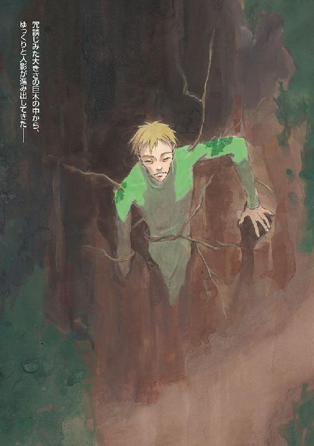
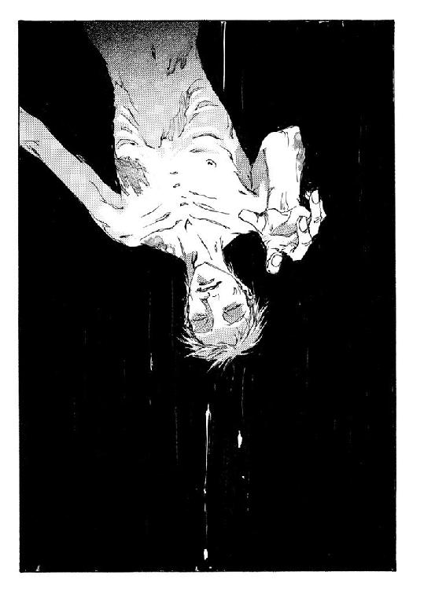
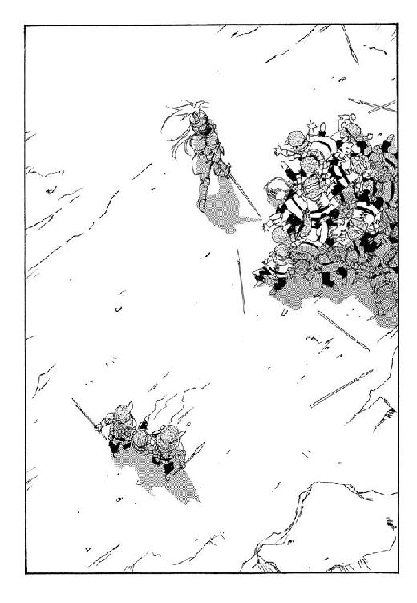

| 魔術士オーフェンはぐれ旅 新装版8 | |
| 秋田禎信 | |
| ティー・オーエンタテインメント (2012) | |


この作品は縦書きでレイアウトされています。
また、ご覧になる機種により、表示の差異が認められることがあります。
一部の漢字が簡略字で表示されていることがあります。
イラスト：草河遊也Ｙｕｕｙａ Ｋｕｓａｋａ
デザイン：ヴェイアＶｅｉａ
ダミアン・ルーウが見ていた闇は、果てしなくなにもない、ただそれだけの闇に過ぎなかった。
威圧も、孤独もない、体温と同じなま暖かさを持つ空虚。温もりを不快と思うのであれば、そこは確かに居心地の悪いところだった。
そこが、現実の世界──つまり全方向への広がりを持つ空間でないことは分かっていた。恐ろしく一方的で、しかし決まった流れのない、閉鎖された無限の空間。
（いや......）
ダミアン・ルーウは考える。皮肉を交えて考える。
（今じゃ、現実の世界こそ、閉鎖された空間なんですが......そうでしょう？ 領主様）
答えはない。
もとより、力を備えた領主であろうと、この場所へは──まさかここには、力と知恵の手を伸ばすことはできまい。そんなことは分かっていた。この大陸にはいくつかの絶対的な力がある。決して抗えない、抗っても意味がない、そんな領域が。それを避けるなり、利用するなり、対処法に関しては、様々なことが考えられたが。
ダミアン・ルーウは観察する。慎重に観察する。
どういった対処をするにせよ、相手がどういった存在であるか、把握できなければ始まらない。
（強大な力だ......人間の領域にはまだ存在してはいけないほどの、強大な）
これは容易に今後の歴史を決定してしまいかねないほどの、不可抗力になりかねない。
そんなものは、あってはならない。何者にもどうすることもできない力などというものは、すべて、あるべきところに封じておかなければならない。すべからく除去しなければならない。呪われた聖域へと。
ダミアン・ルーウはつぶやきを発する。ほんの小さくつぶやきを発する。
「......ドッペル・イクスか。いちいち面倒ごとを」
だが、今は考える時間などはない。
時間は極めて限られている。現世の時間で、どれくらいになるのか。時間の波打つこの空間では、ちょっとした誤差が大きく響くこともある。数秒が数時間にもなり、数年間が数分になり得る。トータルでは、現世の時間と大差なくなるはずではあったが。短期であれば短期であるほど、誤差を無視できなくなる可能性が高い。
急ぐに越したことはない。
ダミアン・ルーウは前進する。疾く前進する。
そこは人の立ち入れない領域だと、自覚はしている。警戒には意味がない──向こうがこちらを滅ぼそうと思えば、一瞬でそれは為される。なんの対策もできないまま、自分は永久に放逐されるだろう。それが恐ろしくないわけではない。
唯一といえる対抗手段は、幸運だけ。祈る神もないというのに。陰鬱に笑わざるを得ない。
神と自分との関係。
世界は神々から、過去を、歴史を得た。未来は取り上げられてしまったとしても。
（そもそも、大陸の歴史とは、なんだったのか......）
終わりが来れば意味のなくなる日記に過ぎなかったのか。
墓標に刻まれるたった一文に置き換えられ得る、無駄な時間に過ぎなかったのか。
（おそらくは、その通りだったのだろうな）
歴史はこれまで、人間種族に文明をもたらした。英知をもたらした。社会をもたらした。娯楽をもたらした。書物をもたらした。大きな傷をもたらした。平和を維持する意志をもたらした。
そして、魔術をもたらした。
その魔術の究極が自分だとすれば、人間種族の歴史が作り上げたのは自分なのか。
（まあ結局のところは......作り上げたものの一部というべきなのだろう。市民ひとり分以上の価値だと自負するまで、傲慢にはなれないか）
キエサルヒマ大陸。神々の気まぐれに生かされている......
と。彼は足を止めた。
ダミアン・ルーウは発見する。ほどなく順調に発見する。
とはいえ。
なにを見つけたわけでもない。言うなれば、見つけたのは、その場所だった。なにもないが、なにかがある。すべての闇の中心点。
これ以上は進めない。中心なのだから、ここから動けば、遠ざかるだけでしかない。
大陸最強の力の真ん中で、ダミアン・ルーウは嘆息した。
（つまりは、この空間そのものが力の総量だというわけだ）
闇のすべて。ディープ・ドラゴンの果てなき力のすべて。
「領主様」
彼は、静かにつぶやいた。
「無理ですよ。わたしにも無理です......これを殺すなどというのは」
かぶりを振って、付け加える。
「ディープ・ドラゴンは無敵の存在です。弱点はなく、攻撃性は極めて高い。旧世界・旧時代より、何者にも敗れたことがない究極の戦士です」
大陸で最強の術者として──無論この地位は非公式のものであるが──彼は、言葉を待つように声を途切れさせた。じっと一点を見つめ、しばらくして、
「ならば、お覚悟を決めていただきたい。これと戦うならば、我々が持つ全戦力と引き替えになります。なおかつ、勝てる保証はありません」
ついでに、舌打ちする。
「それとも、我々を失ったのち、代役をあの殺し屋に任せられるおつもりか？ 聖域との......決戦を」
また、数秒の沈黙。
その間に、意識に直接とどいてくる、無音の言葉。
それに対して、口を開こうとし──
《......誰？ あなたは......》
問いかけられ、彼は目を見開いた。
「............なんだと？」
彼はうめいた。あり得ないことだった。
自分の見たものをただ見据えて、彼は、軽く拳に力を入れた。この状態では五感など失っているというのに、ときたまに、汗の感触を覚えることがある。なればこそ、崩壊せずにいられるのではあるが。
まさか、と思う。領主がこのことを予測していたというのは、いくらなんでもできすぎだった。そんなはずはない。これは幸運なのか。そう、分かっていた。唯一の対抗手段は幸運だけだ......
「領主様。あり得ないことですが」
ダリアン・ルーウは報告する。その意味を考えながら、報告する。
「......このディープ・ドラゴンは......弱点を持っています」
第一章 ──まで、残り十一時間
それは歓喜だった。
間違っているとは分かりつつも、押さえ込むことができそうにない、わき上がるひとつの衝動。それは歓喜だった。
自分の両手を見下ろして──叫ぶ。声にはならずとも。
（制御......できた！）
火傷もない。熱さすら感じなかった。全力で力を放出して、その全力に対して自制が劣ることがなかった。すべてを把握し、御することができた。
世界を作り替え、自らの思うままにする。魔術の完成には、常に恍惚がある。マジクは、腹の底から膨れあがるものを圧殺できずに、もう一度繰り返した。
（制御できた！）
完璧な出来だった。放たれた熱衝撃波は闇夜を白く塗り替え、標的に突き刺さって爆発した。威力を存分に振るい、その激震が大地を震わせる。
が。
「............!?」
ぎょっとして、彼は目を見開いた。魔術の爆発のあと、そこに、数秒前とはまったく変わらない、宿が姿を現した。クリーオウの腕を──どういう機能でか──くくりつけたまま、まったく無傷で、そこに木造の建物が残っている。
数メートル手前に火球が渦を巻き、まったく効果をもたらさなかった威力を霧散させようとしている。
ぞっと、背筋が震える。完璧な構成だった。魔術士として、誰に対しても誇れる、完全な術だった。
それが、なにひとつ意味を為さない。
（どういう......こと？）
架空の何者かに、問いかける。いや。
その架空の人物は、すぐに実在の名前に化けた。だがその人物は、ここにはいない。
（どうにかしなくちゃ......）
拳を握る。
クリーオウはこちらを見て、呆然としているようだった。彼女にはなにもできない。なんとかしなければならない。
わけが分からなかった──およそ、理解を超越したことだった。宿屋が巨大化していた。クリーオウが近づいたら、それが彼女に襲いかかった。同時、自分も転ばされた。なんで転ばされたのか分からない。ただ、身体が突き飛ばされ、意味もなく倒された。ようやくにして起きあがり、完全無比な構成を編み上げ、放った魔術はまったく無効だった。自分の身に起きたことを、列挙する。どれひとつとして、なにが起こったのか分からない。
（お師様なら......分かるのかな）
ふと、そんなことを思う。だが、そんなはずはない。分からないものは分からないのだ──誰にとっても。
ただ、理解できずとも最善──に近い──策を実行する勇気があるかどうか。たったそれだけのことに過ぎない。
たったそれだけだが......
（......最善策って、なにさ？）
焦る自分が苛立たしい。あと一瞬後には、クリーオウは殺されるかもしれない。いや死ぬのは自分かもしれない。敵が何者か、どんな手段を使っているのかも分からないのだから、なにが起ころうと不思議はない。一番可能性が高いのは、ふたり同時に殺されることだろう。どのみち、どちらが何秒先に死ぬのであろうと大差ないが。
（最善......なのは）
唇を噛み締めて、マジクは叫んだ。
「もどってくるから──」
言うと同時に、きびすを返す。今まで歩いてきた方向へと、駆けだしていく。
「お師様を見つけて、すぐにもどってくるから！」
刹那、身体が宙に浮いた。
（くそ──）
また正体不明の力に背中を突き押され、彼は毒づいた。転びはしなかったが、大きくつんのめって速度が落ちる。
それでも踏ん張って、走り続ける。
「もどってきて、クリーオウが死んでいてみろ」
無人の夜道を視界がさまよい、足音が刻み、うめき声が吐き出される。結局、走っているのかただ転ぶまいと右往左往しているだけか、自分にも分からなかったが、マジクはひたすら足を踏み出した。
「根こそぎぶち壊してやる──根こそぎ。どこに隠れていようと関係ない。根こそぎだ！」
相手に聞こえているとも思えなかったが。
「こんなわけの分からないこと......許せるもんか！」
「世の中はなにも信念で成り立っているわけではない」
「......っ!?」
聞こえてきた声に。マジクは、思わず足を止めた。
立ち止まってから、焦燥を覚える。自分がどうして立ち止まったのか、分からなかった。突き飛ばされようと、転がされようと止まらなかったのに、たった一声で、どうして立ち止まらなければならなかったのか。
むしろ、理不尽だった。走り続けなければならなかったはずなのだ。最善策は、師を──オーフェンを見つけることなのだから。なにがあろうと、立ち止まってはならない。
だが彼は立ち止まり、そして膝は二度と走り出せそうにないほど、がくがくと揺れていた。
「......誰だ？」
声まで震えているのは、隠せなかった。
なんにしろ、相手は聞いている様子もなく──ただ勝手に語りかけてくるだけではあったが。
「信じるものに裏切られ、悲鳴をあげる者がいる。それは無意味なんだ。もとよりそれが信ずるに値するものではなかったと、それだけのことなのだよ。そして、信じても良いものなど、この世界には存在しない」
「信じられるものならあるぞ」
マジクはあたりを見回しながら、荒い呼吸をなんとか落ち着かせようと胸をなでた。じっとりと汗ばんだ肌に、服がこすれる。
「ぼくは魔術士だ。お前が姿を見せたら、全力で撃ち込んでやる」
「それで、俺を倒せることを信じるというわけか？ ふん。いいだろう......いい答えだと思う」
どれほど走ったのか──
アーバンラマの夜道は、言われているほど物騒にも見えなかったが、それは先刻からまったく人影が見あたらなかったせいかもしれない。
不自然なほどに無人。だが、今はそれを考えていても仕方がない。
相手がどこから出てくるのか。そんなものは予想のしようもなかったが、分からないままじっと待つ。彼は大股に道の真ん中に移動した。どこから出てくるにしろ、到達してくるまで最も時間がかかる場所へ。
なにも考えない。敵が姿を見せたなら、最大威力で魔術を放てるよう、意識を整える。
呼吸を数える。ひとつ、ふたつ......
「待ちかまえる必要はない」
声は最も注意を払っていなかった方向から聞こえてきた。
「俺に、隠れる必要がないのと同じ理由ではあるが」
つまり、正面から。
「────っ!?」
あわてて、両腕を掲げる。すべてはひとまとまりの動作。約束された手順だった。
「我は放つ光の白刃っ！」
現れた標的へと収束し、爆裂して消滅する一手順。構成に問題はなかった。
音を感じない衝撃──いや、爆発したのだから音も響いたのだろうが。その光景だけが切り取られ、それしか記憶に残らなかったとでもいうように、爆音は耳にとどいてこなかった。
光が途絶え......
「......効かない......どうして」
マジクは、それだけをうめいた。構成は完璧だったはずだった。問題はなかった。が。
現れた男は、なにを失うでもなく、ただそこにいる。
見覚えはなかった。が、なにか本能的に危険を感じる。それが最悪の敵であると、空気が告げている。
くたびれたスーツ姿に、剣を一振り──この剣には覚えがあった。奇妙なことだったが。はっきり覚えていた。ロッテーシャの剣だった。天人種族の魔術文字が刻まれていることを、自分が気づいたのだ。クリーオウの話では、ナッシュウォータの一件で、ライアンが奪っていったという。それをどうして今この男が携えているのか、さっぱり分からない。
恐らく、ライアンの仲間かなにかなのだろうが......
決して抜けなかったはずのその剣は、抜刀されていた。白い、光沢のない刀身が闇に浮かんでいる。鞘は見あたらない。
男は真っ直ぐ、こちらを見ているだけだった。
「俺だったら、もう一度試すね──俺が動こうとする前にだ」
それは......どう解釈しても、忠告だった。
冷めかけていた体温が、また上昇するのが分かる。
「馬鹿にするなっ！」
マジクは叫んで、再び光熱波を撃ちはなった──意識の中で、自分と相手の距離を最短に結ぶ直線を引いて。
純白の光は問題なく、男の間近にまでとどき、
「......また......？」
その男の手前で爆発した。見えない球形の障壁にでも包まれているように、男のもとへは威力が及ばない。
男は、手にした剣を軽く握り直してみせた。剣には魔術があり、そしてその力は発動している──それは間違いない。魔術文字によって引き起こされる魔術の構成も見えるのだが、天人の魔術を解析することは不可能だった。
「フリークダイヤモンドと......ビードゥー・クリューブスターは名付けたらしいな。本来の名称は、虫の紋章の剣」
軽く、世間話のように説明してくる。
「ご多分に漏れず、かの時代、聖域が人間種族の社会にばらまいたものだ......自分の手で、自らの種族の汚点を取り除けるように」
と、誰に対しての皮肉か、男は口調を変えた。
「つまり、魔術を持たない者に、魔術へ対抗し得る力を与える道具。そういうわけだ」
（完璧な構成だったのに......効かない......）
そのことが衝撃だった。
この上なく完全な魔術を行っている。それが通用しない。この男だけではない。あの奇妙な宿にも通じなかった。
（なら......魔術なんて、なんの役に立つのさ......？）
なにを呪えば良いのかも分からないが、毒づく。
それでも。
「くそっ！」
マジクは身体を反転させると、そのまま逃げ出した。男に手を向け、走ろうとする。刹那。
「うわっ!?」
身体が浮いて、地面に叩きつけられた。転がってから、たまたま視界がその男のほうを向いて止まる。男は一歩も動いてはいなかった。
「なるほど......」
一回、剣を振って、うめくのが聞こえてくる。
「やはり、距離が近いほうが精度が上がるようだな」
「我導くは死呼ぶ椋鳥っ！」
倒れたままの体勢で、マジクは叫んだ。空気がざわめき、男に向かって破壊的な振動波を叩き込んだはずだが──
やはり、効果がない。なにかに弾かれたような、そんな音が響く。
（やっぱり、壁のようなものがある）
こうなると、自分の身体が突然転ばされたり持ち上げられたりするのも、種も仕掛けもないものなのだろう──不可視の力でなにかされているのだ。それが魔術の効果だというのなら、単にそれだけのことで、それ以上考えても意味がない。
「壁なら貫けばいいっ！」
自分を鼓舞するように声を出し、マジクは上体だけでもなんとか起こした。道は舗装されているとはいえ、ゴミでもなんでもいくらでも落ちている。持ち上げられる程度の石をつかみ、それを突き出すようにして、彼は一度だけ試したことのある構成を編み上げた。
「我は踊る──っ!?......つ......」
言葉が、止まる。
腕から力が抜けた。持ち上げていた石が、ごろんと地面に落ちる。
すべては一瞬のことだった。肘が折れていた。
「............？」
理解できなかった。痛みを感じることすら。ただ、右腕の肘から先が、あり得ない方向に大きく折れ曲がっている。完成しかかっていた構成も、あっさりと意識から滑り落ちていた。
見ると右腕に、細いものが巻き付いている。視界が霞んだ──意識が緩む──そして、あきらめかけている自分を自覚して、ぞっとする。その中で、その細いものが男の手元へと伸びているのを確認した。鞭か、とも思うが、違う。そもそも、鞭で人間の腕を折れるはずがない。
もっとも、その男が剣を持っている手の指を一本だけ数メートルも伸ばし、そしてそれをこちらの腕に巻き付け、肘関節をねじ切ったとなると、それこそそんなことができるはずがなかっただろうが。
実際に起きたのだから、鞭よりはリアリティがあるのだろう。朦朧とする意識の中で、マジクは左腕をあげようとした。
もう一本の指が左肩に突き刺さっていたので、それもできなかったが。
鎖骨も折れたのだろう──身体が動かない。マジクはようやく、悲鳴を上げた。
「うっ......ああうあああああっ!?」
「魔術に腕が必要ということもないだろう──我々と違って」
男は、そんなことをつぶやいていた。それを聞き取れたのは、さほどありがたくもないが奇跡のようなものだった。男の目が、緑色に輝いている。
「だが、集中を失えば、構成は編めない。お前達人間種族には、痛覚があるからな」
「ああああああっ!?」
どこで間違ったのか分からないが──マジクは身をよじって苦痛に喘いだ──、逃げることすらできなくなってしまった。血の臭いがした。左肩が熱い。
男が一歩、前に出る。霞んだ視界は、涙に曇って余計に混沌としていたが、その姿は見えた。髪をかきむしりたいが、それもできない。
激痛に苛まれ、悶えることもできない──
「嗜虐心だと思って欲しくはない。我々にもプライドがある」
遠く、遠くから、男の声。
「身体を固定して、それからとどめだ。この剣の結界を出ないで確実に仕留めるには、こうするしか──」
「あああっ......あ──」
悲鳴は、そこで止まった。苦痛がなくなったわけでも、力尽きたわけでもない。ただ、肺から空気がなくなって、声が出なくなっただけだった。痙攣し、呼吸もできない。
ふっ......と、苦痛が消える。
意識を失う──そして二度と目覚めることはないと、緩やかに認める。
（母さん......）
そしてその男とも違う、まったく別の声が聞こえてきた。
「何処からも来る。飄々と気配の刻む故郷に」
ひゅごぎっ！──
一瞬にまとめると、そんな音だった。空気が集められ、そして弾かれたような。
白んでいた視界が、衝撃の中で見開かれる。意識と五感とを同時に蘇らせた代償としては、再び襲いかかってくる激痛、それだった。だが今は、その激痛に感謝して、むしろ縋りつく。意識を失う一瞬間。圧倒的な快感ではあったが、本当に味わってしまってはならないものであるということは、うっすらと理解していた。
残っている力で、片目だけを開く。自分の身体は地面に倒れていた。これは奇妙なことに思えた──例の男の指。それが突き刺さっている限り、倒れることもできなかったはずだったが。
その男は、さっきまでいた場所にはいなかった。指も残っていない。男が立っていた場所に、えぐられたような跡が残っているだけのことだった。
「............？」
分からなかったが。わずかに視線をずらすと、男が倒れていた。ノックアウトされたわけではない──ただきょとんと、尻餅をついていた。破壊跡のある場所から何メートルも弾き飛ばされて。
「お......師......様......？」
とも思うが。違う気がする。
風が吹き始めるように、聞こえてくる声。
「帰りきたる。痕の多い獣の檻。大にしてうねり、小にしてわめく」
再び、鋭い轟音──
金槌で打たれる曲がった釘のように、男が、音と同じ回数、弾かれた。例の壁によって衝撃そのものは防がれているようだったが、その壁ごと男を吹き飛ばしている。
「肝にある蟲。腸にある蛇。南風に捧げられ埋め尽くす砂利──」
そして。
男の姿が、さっと消えた。どうやら、逃げ出したらしい。
「............」
どくどくと、自分の心音を聞きながら、マジクはただ熱に浮かされていた。それともこれは、出血の音か？ 次第に思考できなくなっていく。ただ、分かったこともあった。
聞こえてきた、その歌のような文句。間違いなく呪文だった。魔術の構成も見えた。一瞬、オーフェンかと思えたのも、そのせいだろう──師にも匹敵するほどの緻密な構成だった。そうそうあるものではない。
（でも......誰......？）
もう声も出せず、彼は目を閉じた。
◆◇◆◇◆
クリーオウ・エバーラスティンの人生は、十七年前に始まった。
どうということもない出産であり、誕生だったと言えば、関係者は怒るかもしれない──つまりは人並みの愛情と苦労と奇跡があって、生まれてきたということだ。母はティシティニー・エバーラスティン。父エキントラの婿入りは誰の目から見ても妥当な縁談であったが、既に父母を亡くしていたティシティニーが、当時後見人だった叔父の言いなりになっていたというわけではないらしい。その叔父というのも夭逝し、代々短命の家系であるエバーラスティン家の悪しき伝統とでもいうべきか、エキントラも、クリーオウが十五歳の時に病死した。
彼女には姉がいたが、その名前は母がつけた。クリーオウの名前は父がつけた。そのためか、クリーオウはよく父に懐いていたようである。
ライアン・キルマークドは、闇の中から彼女を見ていた。身動きとれず、怯えている彼女を。
表には出ていない──その少女は毅然として見えた──が、彼女の脈拍、呼吸、体温の上昇、すべてが感じ取れる。心の交流がすべて錯覚ならば、これもそうなのだろうが。
彼女は理解しているのだろうか？ 触れあっているという意味を。
家族に手を握られて死に逝く者もいる。医師にまぶたを押し開けられて死が確認される。だが彼女は、殺害者と触れあって死ぬことになる。
（このぼくと......だ）
今の自分は、ただ闇の中に在る一対の目。それも彼女からは見えないはずの。臆病なものだと自分でも思うが、彼女の頭の上で後ろ足を伸ばして立っている守護者のことを考えれば、慎重になってなりすぎるということはない。
自分が、少女の生命を終わらせる者だとすれば──
それは、彼女の生命を永遠のものにしかねない存在だった。
ディープ・ドラゴン＝フェンリル。
ドラゴン種族の最強力。
少女にとって自分が死となるならば、自分に対して死となって立ちふさがるのはこれだろう。
幼少時は、体調を崩すことが多かったらしい。それは疾患というよりは、精神的なものに起因していたかもしれない。なんにしろ両親が彼女に対して過保護になったのは言うまでもないことで、そのせいでたびたび姉とは仲違いしていたようだ。
もっともしばらくして、そういった問題は成り行きで自然消滅した。特記するほどのことでもないが。
彼女はことごとく家名に相応しくない──とは大叔父の言だが──行状を好んだ。下町でアバウトな教育を受けることを望み、学校では子供の頃の鬱憤を晴らすように身体を動かすことを楽しんだようだった。特になにに恵まれたというわけでもなかっただろうが、周囲からは活発な人間と認知され、当人もそう振る舞う。
他人とのぶつかり合いも多かったであろうが、それをはねつけることに執着しなかったことが幸いして、特に恨みを買うことは少なかったらしい。結局のところ、人は他人に望まれている通りをしていれば、嫌われることはないのだから。
緑宝石の鎧。これが、彼の唯一の武器だった。唯一にして最強の。同じくドラゴン種族によって造り出された魔術兵器。
頭部以外の全身を覆うこの緑色のインナーウェアは、彼の意思に対して、過敏に反応して作動する。
（これが自分に出せる唯一の切り札......）
そして。
（ぼくの絶望でもある）
ならばこそ──
（相応しい武器だ。舞台に相応しい武器だよ──そうじゃないか？）
この鎧はいくらでも変化する。樹木に酷似した触手を発生させ、千変万化し、特定の魔術文字を描くこともできる。
大ざっぱにならば、擬態も可能だった。
たとえば、古い木造の建物のようなものにならば。
建物の表面をすべて、触手で覆う。あとは記憶に従って擬態する。宿の中にいた人間をすべて処分してから、自分は宿の中心に居座り、ひたすらに待つ。
少女が宿に──自分の触手に──触れた時は、正直震えた。少年のほうは、相棒が排除してくれることになっている。そうなれば、あとは、決着の時間だ。
宿の中心にある廊下。鎧の触手に埋もれた通路の真ん中で、彼はじっと、闇に瞳を輝かせていた。もう既に手首は捕らえた。あとは引き寄せるだけでいい。
心臓でも眼球でも脳でも心でも、奪うことができる。奪うことも踏みにじることもできる距離。触れ合うとはそういうことだ。
少年の、無駄な魔術の爆発を意識せずに払いながら、彼はこれから自分がすることを、ぼんやりと思い浮かべていた。すること。しなければならないこと。
（......おかしなものだ......）
苦笑する。本来ならばこれは、単なる任務でしかなかったはずだった。魔剣フリークダイヤモンドと同様、アスラリエルの子は、聖域に取りもどさなければならない。それに関しては聖域の指令は受けていないが、考えるまでもないことだ。ディープ・ドラゴン種族の戦士頭の力は、これからの聖域に必要なものなのだから。そのためには、恐らく、あの少女──ついでに少年も──殺さなければならないだろう。ただそれだけのことで、わざわざ誰かに報告しなければならないことではない。ナッシュウォータではそうしようとした。ディープ・ドラゴンの幼生が自発的に自分に襲いかかってきたことは誤算ではあったが、イレギュラーというのはいつだって起こるものだ。
（例えば......そうだな。オーフェンだかキリランシェロだかいったか。あの黒魔術士のようにだ。いや、人間種族の魔術士、それ自体がすべてイレギュラーか......もとをただせば、世界とドラゴン種族すべてが）
ついでに思いついて、彼は吐息を漏らした。気が抜けるような、虚しい息。
（そう。クリーオウ。君もイレギュラーなんだ。ぼくにとっては）
処理すべき仕事ではなく、挑戦すべき標的となった。
どうしてなのか。分からないはずもないが、言葉にできない。
あるいは恐ろしく単純な言葉になってしまうのだが、それを認めるわけにはいかない。それくらいなら、分からないほうがいい。
と──
「レキ......あんたも、勝てないって思ったら、いつでも逃げていいんだからね」
聞こえてきた声に、彼は──はっとしたわけではなかった。ただ、闇の中で、瞳の色を変えた。湿ったような気がする。自分自身には見えないので分かるはずもないが。
彼女の声は触手が直接聞き取ることができる。盗み聞きのための機能というところか。もともとこの鎧は、諜報に向いた道具だった。自分の声はといえば、宿の中と外とでは、直接話しかけることはできないが、触手を使って擬似的に自分の声を作り出すことはできるはずだった。滅多にすることはないが。
それを使って、彼は答えた。
「この場合は、あの少年のことを案じたほうがいいと思うヨ」
語りかける。金髪の少年──未熟な魔術士のようだったが──は、そう長く生きられるはずがない。
「あの少年を追って、ぼくの相棒が行った。申し訳ないけれど、およそどんな人間であっても、ぼくの相棒に追われて生き延びることはできない」
と、付け加える。口元に感触。歪んで吊り上がった自分の唇の。
「そう......これは、絶望というものだ」
「あんたのそれは、もう聞き飽きたわよ」
彼女は即座に言い返してきた。
「いったいなんのつもり？ この前の剣だけじゃ足りない？ 今度はなにが欲しいのよ」
なにが欲しいのだろう。
一瞬だけ考え込んだ自分に、彼は自嘲して笑った。
教えたいことがあるのだ。
そのおかげで、このなんでもない、ただの娘がイレギュラーに化けた。
話したいことが。
諭したいことが。
認めさせたいことが。
それはつまらないことだったかもしれないが──
彼には大事なことだった。
ことによれば、ディープ・ドラゴンのことなどどうでもいいほどに。
「そうだね」
だから、彼は告げた
「そうだね──ぼくは君の信念が欲しい。だが実を言えば、君を死なせることくらいしかできそうにないな」
鎧は彼の感情に過敏に反応する。
殺意にも。恐怖にも。情欲にも。さらにすべてが同じ意志を示しているのならば、躊躇することもない。細い蔓のような触手を数本、彼女の身体へと伸ばしていく──
学校生活は、ごく単調な騒がしさと、無駄遣いしても尽きない時間の中で過ごした。友人は多くも少なくもなく、これもまたよくあるように、特に仲の良い少数の親友と、そのほかとに分かれる。
学業の成績は極めて良好だったようで、とにかく決断の早い性格からか、グループ内ではなにかと物事を率先することが多かったらしい。当人より年下の友人が多かったことも無関係ではないだろう。
刹那──
衝撃が伝わってくる。先刻の魔術とは質の違う、深く鋭いダメージ。
途端に、触手による知覚が消える。すべて叩き伏せられ、ねじ伏せられ、破壊される。鼓膜を打ち据える轟音で、ライアンは我に返った。迂闊だった。油断していたというわけではなかったが、夢中になりすぎていた。攻撃を仕掛ければ、反撃されるのは当然のことだったろうに。
舌打ちして、とりあえず身構える。みしみしと音を立てているのは、宿の柱や壁だった。宿の外側から、圧倒的な力で押しつぶされようとしている。持ちこたえているのは鎧の触手のおかげだろう。もっとも、それも何秒保つのか知れたものではないが。
こうなると、脱出するしかない。このまま宿の中に留まっても利点がない。彼は鎧に命じた。全力で防ぐことを。
そして、自分に命じた。全力で戦うことを。
彼女の日記をのぞいてみると、意外とつまらないことが書いてあった。
日付と天気、あとだいたいの勘で書かれたのであろう気温だけということも少なくない。
心情的な記述は一切といって良いほど見あたらない。一日、一文から三文程度のもので、長い文を書くのが苦手なのかもしれない。三文といっても『眠い。寝る。ぐう』という日もあった。
自分と出会った日にはなにも書いてなかった。そして──これが最も興味があったのだが──自分に裏切られた日の記述。
『レキがいなくなってしまうかと思った。でも帰ってきた。良かった』
思うに、これを見た時に引き返せなくなったのかとも思う。
触手の大半ごと、宿の屋根から飛び出した瞬間──抵抗する力を失って、建物は一気に破壊された。雑巾でも搾るように、大きくねじられる。こぶのようになった触手から首だけ出して、ライアンは外をのぞいていた。潰されていく建物から宿り木のように突き出した位置より、少女がいたはずの場所を見下ろす。彼女はとうに宿から離れ、瞳を緑色に輝かせる小さなドラゴンを胸に抱え、こちらを見上げていた。
会話をする時間もない。
ライアンは寒気を覚えて、身をよじった。同時に触手の束が変形し、さらに規模を広げて自分と少女の間に森の壁を造り出す。今度はただの力ではなく、爆発を伴った振動がその壁を叩いた。爆圧に押しやられ、屋根の上から、後方の路面へと落下する。
衝撃は、やはり触手が防いでくれた。落ちるより先にディープ・ドラゴンの魔術に焼かれて、焼けこげた部位を切り捨てる。身軽になってからライアンは、横に駆け出しながら、右腕の部分にだけ、数本の触手を伸ばした。数歩走ると、宿の陰から、金髪の少女と、黒い子ドラゴンの姿が見えるようになる。
少女は、まだこちらに気づいていないようだった。が、ドラゴンの視線はこちらを向いている。一瞬で他者の命を奪う視線。
それを見返して──ライアンは微笑した。
「怖がったりはしないんだ、ぼくはね」
腕にからみつくように丸まっている触手を腕ごと、彼女のほうへと突き出す。
「ただひとつのことに支配されているから......」
槍のように鋭く伸びゆく触手は、彼女が悲鳴を上げるより早く、瞬時に消失した。内部から崩壊させられたらしい。ディープ・ドラゴンの瞳が輝いている。
今度は左腕から触手を伸ばし、それを地面へと突き立てる。地中深くへと潜らせながら、ライアンは全身から最大速度で触手を膨張させた。森が爆発することがあるならば、これがそうだろう──木の枝の形状をした触手が、放射状に膨れあがる。視界をすべて触手が覆い隠す寸前に、少女の甲高い声が聞こえてきたような気がした。
「なんでこんなことをするのよ！」
「............」
その問いには答えたつもりでいた。だが聞いてくるということは、理解されなかったということなんだろう。
ライアンは触手を膨張させながらも喉を震わせた。
「君に理解してもらえなかったから」
「なにをよ！」
うねる触手は、もう木の枝から幹くらいには成長している。じき、彼自身がこの触手の中に埋もれて肉声での会話はできなくなるだろう。その前に、彼は叫んだ。
「絶望を教えたい──君にね」
「そんっ......なこと！」
爆発──
巨大なものになろうとしていた触手の森が、一瞬で粉々に砕け散る。中にいる彼自身を含めて吹き飛ばす程度の威力はあっただろうが......
それより一瞬早く、彼は行動していた。地中に突き刺していた触手もまた、もう既に直径二メートルほどの太さにまで成長している。根となっているその部分へと、彼は自分の身体を移動させた──鎧の中は、自在に動くことができる。地中深く、十数メートルまで潜ってしまえば、もうディープ・ドラゴンの魔術では容易にこちらを探し当てることはできまい。彼ら種族の魔術は、視線を媒体とする。
一方こちらは、触手によってある程度の知覚を行い、攻撃できる。知覚には制限があるため、逃げられてしまう可能性もあるが。
地中に潜る一瞬前まで、標的が立っていた場所は覚えている。これを基準に探知していけば、そうそう逃げられるということはないはずだった。
再び、触手を伸ばす。
少女はまったく動いていないようだった。こちらが死んだと思ったのかもしれない。
「ぼくは殺しが仕事なんだよ、クリーオウ」
誰に言うわけではないが、ライアンはつぶやいた。
「命じられて、その通りにする。ぼくが生きるも死ぬも、ぼく以外の誰かが決める。ぼくに与えられた自由意思は、標的を生かすか殺すかだ......うまく仕事をすれば、関係者を殺さずに任務を遂行できることもあるかもしれない。たとえばだ、あの時君がフリークダイヤモンドを素直に渡してくれたら、ぼくはそのまま逃げることができた。そのディープ・ドラゴンも回収できただろう。でも、君はイレギュラーを起こした。もうぼくは、君を殺すことを選ぶしかない」
触手はなんの抵抗も受けずに、標的に巻き付いた。そのまま少し力を込めて絞れば、か細い少女の身体など数個に分割できる。ディープ・ドラゴンの力を以てしても回復できないほどに。彼女は死ぬだろう。
それは楽なことだ......死ぬことができるのは楽なことだ。
（ただ死なせはしない）
ライアンは、さらにわめいた。肉声が伝わらないのは分かっていたが。触手が伝達してくれているはずである。
「ぼくは殺すのが嫌だ......道徳者を気取るつもりはない。ぼくにはぼくなりの理由があって、人を殺すことは屈辱なんだ──死ぬのは楽なことだ。ぼくは絶望を抱いて生き続けなければならない。それに比べたら──死ぬのは楽なことだ！」
触手からは肉体の柔らかさが伝わってくる。触感とは違う。単にデータとしての柔らかさだが。それが人肌であるのは間違いない。
「死ぬ前に、絶望を知ってもらう。ぼくが味わっているものの千分の一も持っていってもらう。そのくらいしなければ、しゃくに障るじゃないか、ええ？」
と──
彼は違和感を覚えて、言葉を止めた。
触手から伝わってくるのは、少女の身体の柔らかさ──しなやかさ──もろさ。それは間違いない。だが。
（......どういうことだ？ 柔らかすぎるんじゃないか？ これは......）
抵抗がない。
まったくなかった。ディープ・ドラゴンによる反撃もなければ、単に触手を振り払おうとする無駄な抵抗すら感じない。捕まえているのは間違いなくその少女だというのに。
（本当に......間違いはない）
彼女に触れている触手をさらに増やし、確認する。人型。背丈・体重から、髪の長さ、漠然とはしているものの、触手の持つ擬似的な視覚からも、彼女であると特定できる。既に死んでいるというわけではない。心音も呼吸音も間違いなく存在する。ただ......
その身体は、完全に脱力しているようだった。触手を離せば、そのまま倒れるだろう。
（......罠？ いや、どんな罠だというんだ？ 彼女はこちらが、相手の異常を知ることができるのかどうか知らない。分かっていたところで、こちらが構わず絞め殺す可能性のほうが高いんだ）
理解できないことだった。確かめようと思うのなら、地上に出るしかない。
「なんてことだ......」
ほぼ確実に、あのディープ・ドラゴンと出くわすことになる。が。
「確かめずにこのまま殺すのは......駄目だ。彼女は理解していない」
彼には大事なことだった。
ことによれば、デイープ・ドラゴンのことなどどうでもいいほどに。
もう一度つぶやいて──彼は苦笑した。
そしてゆっくりと、慎重に、自分の身体を地上へと吐き出すよう、鎧に命じた。
クリーオウ・エバーラスティン。十七歳。トトカンタ市出身。無職。簡単な経歴や性格については前述の通り。
相棒に頭を下げてまで調べてもらったところでこの程度。ネットワークもたかが知れている──人の心や記憶までは知ることができない。それどころか、誰かが知っていることしか調べることができない。
結局は、自分で知ろうとするしかないのだ。本当に知りたいことは。
聖域の母はなにも教えてはくれなかったが、それゆえに、そのことは実感した。
そして、たった今、知ったことがある。
罠は、一見危険がないような場所に仕掛けられているのが当然であると。
まして、運命の落とし穴なら。
地上に出て、最初に発見したのは、その少女だった。
触手はすべて解いているため──予想通り、彼女はだらんと手足を伸ばして地面に横たわっていた。目は見開いたまま瞬きもしない。ゆっくりと胸が上下しているが、動きらしい動きはそれだけだった。表情も最も弛緩した形で、無表情というのならば、これ以上それらしい無表情もないだろう。
「......どういうことだ？」
地中でうめいた言葉を、ライアンは繰り返した。理解できない。
「死の恐怖でショック死......いや、死んではいないんだ。脳死？ そんな馬鹿なことが──」
見回す。あたりに気配はない。そもそも、あの騒ぎの中、通りすがりの何者かが彼女に危害を加えて去っていくというのも意味不明だろう。
彼は警戒しながら、彼女に近づいた。倒れている少女は、ぴくりとも動かない。罠はあり得ない。観察しているだけで五分以上経っている。瞬きひとつなく横たわっていることは不可能だろう。
少女の身体の横にかがみ込み──
「とりあえず......これを回収する......か？」
回収、と自分の言葉に、はたと気づく。そもそも回収するはずだったものが見あたらない。
振り返る。それはなにかに気づいてのことではない。それがそこにいるだろうということを、単に予想してのことでしかない。罠だとしたら、背後にいるのが一番自然だ。
それは、そこにいた。
ライアンは見上げて──全身が引きつるのを感じた。それはそこにいた。
巨大な頭が、こちらを見下ろしている。闇の中に黒々と浮かぶ影。月明かりに照らされることもなく、ただシルエットだけが闇に縁取られている。黒の密林の王。古い言い回しを、彼は思いだしていた。それは音もなく現れる。警告のない死を敵に与えるために。
「ディープ・ドラゴン......！」
だが、先ほどまでいた、子ドラゴンではなかった。頭の高さ四メートルはある。漆黒に輝く狼の巨躯。獣は静かにこちらを見下ろしてきていた。鋭い緑色の眼差しで──
こんな場所にいるはずがない。すべてのディープ・ドラゴン種族は、《フェンリルの森》にいる。聖域を守護するために。森に踏み込んだ侵入者をすべて排斥するために。こんな、人間の街にいることはあり得ない。
ただ一匹を除いては。
「唯一......深淵の森狼の聖域外聖域戦力......アスラリエルの幼生......」
彼は悲鳴を上げた。
「アスラリエルはまだ生きているというのに──名を継承したとでもいうのか!? なんのために！ なんのためだ！」
声はそこで消えた。ディープ・ドラゴン＝フェンリルに問いかけるなど、愚かなことでしかないのは分かっていた。
相手は戦士だ。敵を滅ぼす以外のことはしない。
ライアンは大きく口を開いた──自発的にではなく。骨格のすべてが歪み、身体が動かなくなる。骨の砕ける音が身体中から聞こえてきた。ぐちゃりとした感触、そして味が口の中に広がる。全身が沸騰するように熱い。そして芯だけが刺さるように冷たい。四肢の感覚は失せ、自分がどのような格好をしているのかも分からなくなる。視界はすぐに閉ざされた。激しく輝く、緑色の双眸だけが記憶に残る。
（ああああああああああああああああああああああああああああああああああ......）
文字が、永遠に並べられていく。意識は既に飛んでいた。言葉も紡げない。ただ文字だけが浮かんでいく。
激しい振幅。
ライアン・キルマークドはその生命と死の振幅の中で──
人生で何十度目かの死を遂げた。
◆◇◆◇◆
別の通りの暗がりから。
ゆっくりと姿を消していく巨大な獣を眺めて、その男はぽつりとつぶやいた。
「......予想外だったな」
「そうですか」
その男がそう言うのならば、こう答えるしかない。彼は立ち尽くす形で、男が次の言葉を吐くのを待った。
しっかりとした痩身とでもいうのか──その男は、そんな男だった。身につけているものはごく一般的な衣類でしかないが、彼が着るとどこか軍服めいて見える。三十数歳という年齢から来る感情の静けさも、加味されるからだろうか。短く刈り込んだ髪、几帳面に剃られた髭、金属は嫌いだという口癖通り、時計も装身具もなにもない。無論、武器も持ってはいないだろうが、もとよりその男には必要ない。
男は、たっぷりと時間をかけて考え込んでから、言い直してきた。
「これは領主様にとっても、予想外だっただろう。間違いなく」
「でしょうね」
彼は──なんとなく唇に残った傷跡がうずくような気がして、マントの下から腕を出してそれを指でかきながら、うなずいた。身体中に取り付けられた武装の留め金が、小さくざらりと音を立てる。
それが耳障りだったのか、男は視線をこちらに向けた。
「ユイス」
と、男は通りのほうを指さした。獣に一瞬にらまれただけでずたぼろになったライアンが、傷ついた身体を引きずるようにして逃げようとしている。
「お前が追跡しろ。あれだけの深手で逃げようとしているんだ......恐らく、本拠地に帰るんだろう」
それまで命が保てばの話ではあるが。
そのことを、男は付け足してはこなかった。見れば分かることだった。
そもそも、ライアンが瞬時に絶命しなかったことのほうが不思議だった──逃げようとしているとはいっても、ライアンは壊れた身体をなんとか引きずっているだけで、どう見積もっても致命傷を十箇所は負っている。倒れている少女を路上に放置していくつもりのようだが、もうライアンにも意識はないのだろう。ただ本能で、ディープ・ドラゴンから遠ざかろうとしているだけかもしれない。当のドラゴンは、既に破壊した相手のことなどもう興味を失って、姿を消してしまったようだが。
そのことも、言うまでもないことだった。だから言葉には出さず視線だけで、彼は男に問いかけた。
男は、だが意見を変えなかった。
「先刻、わたしが遭遇したレッド・ドラゴンも、ろくに反撃もせずに退散した。未知の勢力と出くわして、互いに情報を交換するはずだ。彼らのネットワークは、それほど完全なものではないようだからな」
「同一世界にあるネットワークに優劣はない、と彼は言っていましたが」
「分かった。認めよう。我々のネットワークとて完全に機能しているわけではない」
と、男は嘆息してみせた。
「だが命令は変わらんさ。お前は奴を追跡して、奴らの本拠地に行け。そして我々がまだ知らない戦力を奴らが有しているのかどうか確認してから、可能ならすべて撃破しろ」
男は意見ではなく、命令と言った。そのことにこだわっても意味のないことかもしれないが──
とりあえず、彼は聞き返した。
「......俺だけで？」
男が、苦笑する。
「素直に聞いて欲しかったな。お前は既に奴らにマークされている。それを逆利用するためにわざわざ、お前を監視していた聖服の男に、わたし自ら暗示をかけたのだ──あと半日は、なにがあろうと彼はあの場所で立ちんぼし続ける。男がそれを疑わない限り、この事実はネットワークでも探知できない。奴らは未だ、お前は監視の下にあると思いこんでいるわけだ。それに」
表情を引き締めて、付け加えてくる。足下に倒れている金髪の少年を示してから、
「この少年を適当に治療できる場所に移してから、わたしはディープ・ドラゴンを追う。ここまで言えば文句は出まい？」
「あの少女は？」
と、放置されたままの少女を指さす。彼女はまったく動こうともしない。
男はさらに苦笑したようだった。
「ディープ・ドラゴンがなにかしたような対象に、あえて触れたいとは思わんね。動かした瞬間、大爆発を起こすよう暗示がかけられているのかもしれない──まあ、本気でそう思うわけではないが。どのみち、ウィノナがどうにかするだろう。あれは彼女の管轄だ」
「分かりました」
彼は、うなずいた。
仕方のないところだろう。と声には出さずにつぶやいて、ライアンの姿を探す。死にかけた男──だか、死に損なった男だか──は、まだ何歩も進んではいなかった。
彼は、懐の武器を確認した。ドッペル・イクスを相手にできるだけの装備は持ってきている。レッド・ドラゴン種族が相手となる可能性があるならば、足りないかもしれないが。
どう見たところで、尾行に注意は必要ないだろうと踏んで、彼はそのまま歩を踏み出そうとした。
と。
「領主様に協力すること、心変わりしたということはあるか？」
突然、男に呼び止められ、足を止める。彼は振り向いて、聞き返した。
「なぜです？」
男は確認するように、こちらの顔をのぞき込もうとしていた──厳めしい表情に、一筋の隙を残すような形で。
「......いや。ウィノナが奇妙なことを言っていたのでな」
角張ったあごを撫でるポーズで、言ってくる。
「お前が、標的を殺し損ねたと」
「............」
彼は答えないまま、歩みを再開した。
第二章 残り五時間
その朝日が、普段の朝日となにか違う点があったというわけでは、決してない。
もしも、焦げ目をつけたトーストにバターをたっぷりと乗せ、黄身を潰した目玉焼きをはさんで頬張ることを禁じられれば、驚いた者もいただろう──だがそういったことはない。ワイシャツに致命的な染みをつけかねないその朝食も、剃れない剃刀に文句をつけることも、窓を開けてテラスの鉢植えに水をやることも、なにひとつとして制限は課されなかった。
だが、そのいつもと変わらない朝日の中で、アーバンラマ市の人々はあるものの出現を受け止めなければならなかった。
最初にそれを発見したのが誰か、それは分からない──
誰もが驚いたことは間違いない。ただしパニックが生じなかったのは、それがなにを意味するのか、発見者にはことごとく理解できなかったせいだろう。半端な不理解であれば、狂乱する余地もあったかもしれないが。
アーバンラマ市の北側にある、最も広い公園に突如として現れたそれは、微動だにせず、朝日の中で鎮座していた。水平に構えた視線も、重量のある体躯も、滑らかに後方へと流れる漆黒の体毛も、なにひとつとして動かない。ただじっと、そこに在る。ジョギング中に、牛乳配達中に、通勤途中に、それを見た者たちは、理解できないながらも、漠然と感じることはあった。それは、王者だった。決して動かすことはできず、在ることを受け入れるしかない。絶対の王者。
見る者が見れば、それが何者であるか、分かったかもしれない。あるいはそれ自身が、名乗ったかもしれない。
ただ、今は動くこともなく、ただ朝日を浴びている。頭の高さにして数メートルにもなろうかというその巨大な王者は、ある時刻を待っていた。
ディープ・ドラゴン種族の究極の戦士たるアスラリエル。その名を持った漆黒の毛並みの王者は、その種族の掟に従って、音もなくそこに存在していた。
◆◇◆◇◆
「えっほ、えっほ、えっほ......」
かけ声だけが規則的に朝の静けさを揺さぶる。いや、揺さぶるというほどのこともない。ドーチンは思い直して、独りごちた。せいぜい、撫でつけるという程度か。それ自体が朝の静寂を破るということはない。
「ねえ、兄さん......」
棺桶のような、巨大な長櫃──実際それは棺桶だったのではないかと思えたがそれは忘れて──の前の部分を頭の上に抱えて、ドーチンはうめいた。
「むう、なんだドーチン。やはり最初の提案通り、かけ声はえいさえいさのほうが良いか？」
「いや。そーじゃなくて」
ドーチンはかぶりを振った。
「これってきっぱり、泥棒だと思うんだけど」
「む？」
同じように、箱の後方を持ち上げているはずの兄が、まるっきり意外なことでも聞かされたというように言い返してくる。
「そーか？ だってあれだぞお前。このマスマテュリアの闘犬ボルカノ・ボルカン様のポジティブバイブレーショナルソナーすなわち耳が。聞いた覚えあるぞ。あのキャベツ男が、自分のいない間、建物の中にあるものは自由にしてていいと」
「いや、でも......建物の中に隠してあったものは自由にしちゃいけないんだと思うな」
「むう。臨機応変な。しかし例外事項なしと決めたゆえ、気にしてないのでだいたいオーケイだぞ」
「兄さんが気にしなかったところでどーなるもんでもないと思うけど...」
「はーっはっはっ！ 分かっておらんな弟よ。この世はすべて力と金だぞ。『なにかがまずけりゃ丸め込め』──これを来年あたりのキーワードにしようと思うのだが」
「思ってても」
「♪おーおー。今日もゆくゆく黄金色～。頑張れ正義の贈賄だー」
「歌まで」
げっそりとうめく。
幸いにも早朝の街にはすれ違う通行人もなく、どこからどう考えても怪しげな自分たちを呼び止める警官も見あたらない。いや、警官は二十四時間いつでもいないとおかしいのだが、ポリスボックスというのは避ければ避けられるものではある。
ただでさえ、地人というのは目立つ──大陸の南方にある自治領にほとんど隔離され、人間の街に姿を現すことなどほとんどないのだから当たり前だが。あからさまに民族衣装の毛皮のマントを着込んで、仮にそうでなかったとしても、人間種族とは体格が違い過ぎる。兄は兄でさらに中古品の剣を腰にぶら下げているし、いつどこで職務質問を受けたところで不思議はない。
そして恐らく、受けたら終わりだ。
身震いして、ドーチンは認めた。
「♪都合が悪けりゃ使い捨て～。なに？ 捨てた？ よく拾え～」
調子外れの兄の歌が、なにやらサビに入ったようだった。
◆◇◆◇◆
「──だからさ、腕力もつけないでケンカに勝とうなんてのが、虫が良すぎんのさ。そうじゃない？ どーすんのそのほっそい腕」
「はあ......」
「知恵と勇気なんてのは夢よ夢。単なるタワゴト夢物語。いーい？ あらうっかり、でなにもかも駄目になっちまうような姑息な奸智より、振り向きざまに敵のあごを砕く鉄拳鍛えるほうが確実だってば。あたしの言うこと信じなさい」
「うーん」
「それにさ、あんたのエドなんて実はたいした相手じゃないってばよ。あたしゃ、訓練所で何回あいつを這い蹲らせたか覚えちゃいないんだから」
「......は？」
まどろみの中で聞こえてきたのは、言ってみれば戦闘馬鹿ふたりの物騒な会話だった。目を開くと朝日。窓から差し込んできている。
静かな朝だった。なにも起こらなかったかのような......そんなことを考えて、オーフェンは苦笑した。
（のんきなもんだ。ここがどこだかも分からないってのに）
苛立ちを覚えて両腕を上げる──清潔な匂いのするベッドの毛布の下から腕を出して、顔面を覆った。この心地よさに、かえって泣きたくなってくる。今さら涙も出ないが。
（さて、どうする......？）
彼は自問した。
（残されたのは俺と、陰気な復讐女と、口やかましい世話焼き。それだけだ。さあどうする？）
「それだけじゃないね。言わせてもらえば」
「............？」
口に出してもいないことに反論されて、オーフェンは思わず飛び起きた。ぎょっとしながら横を見やると──自分が寝ている寝台からはやや離れて、やたらと大柄な女と、それとは対照的に小柄な女とが、きょとんとしたような眼差しでこちらを見返してきている。どうやら、突然起きたことに驚いた様子だったが。
反論してきたのは、大柄な女──確か、ウィノナとかいったか──のほうだった。昨日と同じ、大学のロゴが入ったシャツに、洗い込まれたジーンズ。賭けてもいいが、同じ服を二枚持っているということではあるまい。彼女は一度、目をぱちくりさせてから、もうひとりの小柄な少女、ロッテーシャに向き直った。
「だからさ......それだけじゃないってことさ。ぶん殴った後、そいつが肝心なんじゃない？ そだろ？ 一生忘れられないような言葉で決めてやらなけりゃ、復讐なんて終わりゃしないってもんさ」
「いえ、あの......」
診療室の背のない椅子に座っていてなお、かなりの身長差がある話し相手を見上げて、疲れたような表情を、ロッテーシャが見せている。オーフェンは、密かに嘆息した。違う会話だったらしい。
診療室。
なにげに思い浮かべたその単語を、彼は再び認識した。違和感はなかった──そこはまさしく、診療室に見えたからだ。というより、学校の保健室というほうが近いか。普通は、診療室に患者は寝かさないだろう。ベッドがふたつ、そのうちひとつは自分が寝ていた。部屋の半分はそれが占めている。残りは診療台にそれらしい器具が並んで、医者と患者が座るのだろう椅子には、今はウィノナとロッテーシャが腰を下ろしている。物が多すぎるせいで全体的に手狭で、窓の外にはたいした庭もなく、すぐ壁になっている。あまり背は高くない壁で、日光はまだ傾斜が低かった。室内に時計は見あたらなかったが、まだ早朝だろう。
「あたしが十四の時、ぶん殴ってやった奴の話はしたっけ？ え、聞いた？ ま、同じ十四でもあの頃は週替わりで違う奴殴ってたから、多分違う話さね──」
止まらないどころかよどむ気配もないウィノナの声に背を向けて、オーフェンは、部屋にひとつしかない扉から廊下に出た。適当に見当をつけて、洗面所を探す。なにも考えたくない時は、とりあえず顔を洗いに行くのがいい。
幸いに、分かりやすい場所に手洗いを見つけて、入り込む。ここが誰の建物だったにせよ、家の中には自分とウィノナらのほかには誰もいないのか、気配らしい気配も感じられない。とりあえず、レバーを押して蛇口から水を出す。
透明な液体を手ですくい、思ったより冷たい秋の水に手のひらが痺れる。何度か顔を洗ってから、オーフェンは正面の鏡を見やった。
生気のない眼差しが、こちらを見返してきている。
どこにでもいると言えば、どこにでもいる──黒ずくめの男。首になにもかかっていないことに気づいて、ポケットを探ると、細い銀の鎖のペンダントが入っていた。昨夜意識を失ってから、誰かが外して入れておいてくれたのだろう。それを胸にぶら下げてから、改めて鏡に映った自分を見つめた。剣にからみついた一本脚のドラゴンの紋章。大陸黒魔術の最高峰《牙の塔》の紋章であり、最高の術者の証明となる。
だが鏡に映った男は、力のない笑みを浮かべているだけだった。
「ったく......」
舌打ちして、きびすを返す。いや、返そうとして、さらに振り向いて鏡を見やる。
「なんなんだよ。確かになにもできなかったさ──なにができたってんだ？ ああそうだ。自分の周りを誰がうろちょろしてようが、そいつがクリーオウやマジクを狙うなんざ考えてもいなかった。まるっきりだ。想像もしてなかった」
なにかが変わっていることを期待していた自分に腹が立ち、毒づく。洗面台に手をついて、鏡に鼻先が触れるほど近づくと、さらに独りごちた。
「なにが起こってる？ なにが起こり得る？」
それを知る必要がある。
昨夜のことを──昨夜までのことを考えなければならない。
ナッシュウォータで、ドラゴン種族と遭遇した。人間にも擬態できる、レッド・ドラゴン種族。ドラゴン種族の中でも突出した戦闘力を持った種族である。もっとも、突出していないドラゴン種族などいないが。
「奴──ヘルパートとかいったか。あいつはライアンと組んで、ロッテーシャの剣、もとは天人種族が鍛えたものだったらしい魔剣を手に入れようとしているところだった」
なぜ今さらドラゴン種族がそんなものを欲しがるのか分からないが。
確かに天人種族の遺産というものは強大な力を持ったものがしばしば発見されるが、それも所詮はたかだか一振りの剣に過ぎない。個人で使う分には、劇的な効果が望める場合もある──たとえば職業的な暗殺者ならば、多少の困難を乗り越えても手に入れたがるだろう。とはいえ犠牲を払ってでも入手しなければならないほどのものではない。ましてやドラゴン種族が生来持っているそれぞれの魔術や能力を考えれば、わざわざ人里に出没してまで奪い取らなければならないこともないだろう。兵器ではなく骨董品、珍品としてならば価値は高く、盗掘品専門の闇マーケットも存在しているらしいが、もとより人間社会の通貨や財産と引き替えることを目的としてドラゴン種族が動くはずもない。
つまりは、わけが分からないということだ。
見つめる目と見返す目が、同時に鋭くなる。
「その中で、俺と出くわしたのは偶然だったようだが、ヘルパートは、アザリーのことで、俺を監視するつもりだというようなことを言っていた......」
そのことは、特に驚くようなことでもなかった。姉が本当に、キエサルヒマ大陸を旧世界から隔離するアイルマンカー結界とやらから飛び出していったのなら、それは結界の管理者であるドラゴン種族から注視されないはずがない。むしろ好都合だと思っていた。向こうからつついてくれれば、手も足も出せなかった姉の行方について手がかりが得られるかもしれない。
「なのになんで、クリーオウなんだ？ マジクなんだ......？」
唇を噛む。結果としてふたりを失うことになった。
「なんでこんなことになる......!?」
どうしようもないことになってしまった。取り返しもつかない。やり直しもきかない。
「くそ！」
鏡を叩くようにして、顔を離す。今度こそきびすを返して、彼は廊下を駆けもどった。
オーフェンはそのまま真っ直ぐにもとの診療室にもどると、扉を開けた。
「おい、ここがどこだか教えてくれ。俺はこれからマジクの奴を探しに行くから──」
「そいつは止めときな」
実際その言葉に暗示でもあったかのように、オーフェンは動きを止めた。部屋の入り口で立ち止まる。
なんでこんなことになる......？
そんな皮肉に胸がよじれる。
「ホント......領主様のおっしゃる通り。迂闊な奴だよあんたは」
銃口をロッテーシャのこめかみに突きつけてウィノナが冷たく吐いたのは、そんな一言だった。
◆◇◆◇◆
ゆっくりと......ゆっくりと......
暗い視界に、赤い点が浮かぶ。その色は限りなく影に近く、周囲の闇とその点との見分けはつきにくい。だが注意してのぞき込めば、その違いは分かる──どうしてそんなことをしなければならないのかと問われれば、それが本能だからとしか答えようがない。
点は次第に大きくなっていく。単調に揺れて、複雑に歪んで。
突然、なにかがつながるのが分かる。小指と手、手首と腕、腰と背骨、首と頭......
次々と接続されて、まず蘇るのは──寒けだった。冷え切った身体に体温がもどってくるのはもう少しかかる。生命活動が再開して、ほんの少しの間。痺れるような悪寒の中、身悶えする。筋肉が収縮し、多少の熱を稼ぐ。緩慢な思考が、最初の言葉を紡いだ。
（ライアン......自分の名前）
これだけは確実に思い出せる。間違いなく思い出すことができる。そして、ふたつ目。
（聖域......自分の故郷）
安らぎとともにある言葉。目の中に映し出される。
深い森。澄み渡る空の下、その鏡面となって広がる、輝く湖。苔むした巨木が沈んだ湖底には、小さな魚影もうかがうことができる。聖域。魂の安らぎは、いつであってもそこにある。
苦悶を感じる。いつも同じタイミングだ──と思い出す。生命活動が再開した以上、呼吸をしなければならない。粘土のように固まっていた肺を、ゆっくりと収縮させる。全身にあった痛みが、小さく鋭くなっていった。もう視界には、赤い点は見えない......
ライアンは目を開いた。見えたのは、古びた教会の天井だった。
見回す。倒壊寸前のその建物は、なにか強力な爆発物の被害にでも遭ったかのように破壊されている。放射状に焼け焦げた床から、壁一面をきれいに吹き飛ばした跡までを確認してから、彼は上体を起こした。ずきずきと痛む頭を押さえる。渇ききった舌が口腔内で縮こまっていた。
と──
「ライアン・キルマークド......以前と変わりない、か？」
声が聞こえてきた。振り向く。そこには男がいた。
というより、その半分だけが。
男は右腕と右肩、右胸までをきれいにえぐり取られていた。致命傷にしか見えなかったが、炭化して真っ黒な断面をのぞかせるだけで、その男にとってはどうということでもないらしい。
くたびれたスーツ姿で、さらにくたびれた姿勢で床に腰を下ろしている。察するに、自分が蘇生するまで、じっとそうしていたのだろうか。その男は慣れたようにこちらを見ている。
ライアンは男の視線をそのまま見返して、記憶の接続を待った。次々と情報が浮かんでくる。自分。聖域。緑宝石の鎧。任務。そして、相棒。
「ああ......ああ」
彼は、うなずいた。
「大丈夫......ですヨ。覚えて、います。ぼくは──」
と、言葉を止めて、
「ぼくは、変わっていません......よね？」
相手に聞かれたことをそのまま聞き返す形になったが、男は特に、それで構わない様子ではあった。肩をすくめ──とはいえ片方だけだが──、言ってくる。
「当面は問題なさそうに見える。どの記憶が欠落したのかは、あとで調べよう。差し迫った問題がある」
「え、ええ」
頭痛。というより頭蓋骨に残った刺すような違和感──誰かがよほど手ひどく破壊したに違いない──はだいぶ収まっていたが、それに取って代わって、激しい嘔吐感が胃の奥から神経を浸食してきていた。手を何度も開いては握ってやり過ごすが、乾いた肌に、じわじわと汗が浮かんでくるのが分かる。
だが構わずに、男──相棒は続ける。レッド・ドラゴン種族随一の暗殺者たる、ヘルパート。
「アスラリエルの名が継承されてしまった。これは特に問題ない」
「......そうですネ」
予定にはなかったことだが、いずれ起こることなのだから、そのこと自体は騒ぐほどのことではない。多少早まったというだけのことだ。
が──
ヘルパートは淡々と続けた。
「だが、その新たなディープ・ドラゴンの戦士頭は、我々に敵対する姿勢を見せている」
「異常なことですヨ」
ライアンはかぶりを振った。
「ディープ・ドラゴン種族には、個の意志なんてものはないんですから......」
「そういうことだ。まあ埒外だと文句を言ったところで始まらない」
相変わらず物事にこだわらない──とでも言うべきか──ヘルパートらしいが、こればかりはそうそう気楽に受け入れて良いものではない気もする。ディープ・ドラゴンと戦うことのできる力などこの大陸にはない。ディープ・ドラゴン同士が争うことなどないのだから、真実、無敵の存在ということになる。そしてそれが、自分たちと対立している。
笑い出したい心持ちでライアンは、相棒の顔を見やった。感情の伴わない擬態。右胸より外側を全部失い、それでも人間の形態を保つことに深い意味はあるまい──火傷だけは再生に時間がかかると、かつて聞かされたことがある。ディープ・ドラゴンとの違いはその一点だ。ドラゴン種族として同列の存在でありながら、レッド・ドラゴンには弱点がある。ほかのたいていのものもそうだが。
（認めはしないだろうが......彼には勝てまい）
ライアンは静かに認めた。
（とすれば、だ......）
彼は、考えながら口を開いた。
「ヘルパート。この街ひとつを巻き添えにしても良いのなら、対抗手段はありますヨ。ぼくにはね」
「街を巻き込むことなら、もとよりそのつもりだった。人間種族には......まあ、警告はした。宣言というか。彼がそれを真に受けたかどうかまでは責任取れないが」
「どうするつもりで？」
「連絡可能な我が眷属すべてを集める。そして総力で攻める」
（......そして、全員が皆殺しになるでしょうネ）
声には出さずに答え、そして代わりに別のことを口にする。
「そんなことをしなくとも、ぼくひとりで十分ですヨ。ただ、誰にも邪魔されたくないんです......あなたには障害を排除して欲しい。ぼくの準備が整うのに、あと四、五時間ほどかかります」
「分かった」
あっさりと、ヘルパート。確かに、それで済むのなら願ったりというところだろう。
が──
しばらくして、相棒が言ってきた。感情がないはずの眼差しにどこか不可解な気配を浮かべて、
「まだこだわっているのか？......あの連中との決着に」
「あの連中？」
わけの分からないことを聞いてくる相棒に、ライアンは首を傾げた。
「誰のことですか？」
そして自分を守る緑宝石の鎧に、究極の攻撃命令を与えた。
◆◇◆◇◆
なんでこんなことになる......？
オーフェンは半眼で繰り返した。引きつった顔のロッテーシャが、わけの分からない様子で目をぱちくりさせているのを見ながら。というより、その彼女の首をしっかりと抱え込んでいるがっしりした腕と、彼女のこめかみに突きつけられた拳銃とを。
そのどちらも、ロッテーシャの背後にいる大柄な女のものだった。ウィノナ。
ウィノナは特に笑っているわけでも怒っているわけでもない。ただじっとその硬直状態を続けている。彼女が左手に握っているのはごく標準的な──希有な武器であるのは間違いないが、まあ標準的な──拳銃だった。回転式の弾倉を備えた黒光りする鋼の武器。
すっと──腕を上げようとしたこちらの機先を制すように、ウィノナが口を開いた。
「動かないほうがいいわね。あんたが呪文を唱えるより、あたしのほうが速いよ」
どこかで聞いた台詞に、ロッテーシャが複雑な表情を見せている。
気づいているのかいないのか、ウィノナが続ける。
「こいつがなんだか分かるでしょ？ 手加減のできない武器だからね。知ってる？ 人間の脳ってのは血が詰まってる。そいつをぶちまけたくはないのよね、あたしとしては」
「............」
それを無言で聞いて、オーフェンはそのまま、右腕を懐に入れた。
「............？」
疑問符を浮かべ、ウィノナの眉間にしわが寄るのが見えた。舌打ちするように言ってくる。
「動くなと言ったはずだよ」
「聞いたよ。あんたが正しい。たとえば俺が構成を編んで、魔術を具現化し、効果が発揮されるより、あんたの玩具の中に入ってる薬莢から弾丸が飛び出すほうが速い。ましてや、ここから飛び込んで猫だましをかまし、あんたの意表をついて撃鉄の中に指をつっこみ、勝ち誇ってその腕に噛みつくかなにかしてロッテーシャを解放してから肝臓に一撃食らわすよりも、トリガーを引くほうが素早いわな」
と、嘆息して、
「でも、俺がこうして三十秒間しゃべくる間、あんたは一回も引き金を引けなかったんだよ」
「......なにを......？」
「分かんねぇかな。人間ってのは、結局きっかけがなけりゃなんもできないってことだ。俺は既に懐に手を入れた。俺がこの右手を出すのと、あんたがトリガーを引く速度なら、まあ互角だ。俺が右手になにを持ってると思う？」
「ふん」
ウィノナは、馬鹿にしてか鼻を鳴らしてみせた。ロッテーシャを抱え込む右腕に、さらに力がこもったのが分かる──口と鼻を押さえられた彼女が、顔をしかめるのを見なくとも。
「どうせスローイングダガーの類だろ？ 鞘から抜くのには結構な時間がかかるさ。はったりを言ってるだけだろうに」
「試すか？ 試されるのは俺の命じゃない。そこのロッテーシャと、あんたの命だ。俺は構わんぜ？」
「............」
「やめとけよ。本気とは思えない」
「分かったわよ」
あっさり両手をあげるとウィノナは、ロッテーシャを解放した。ばたばたとあわてて、ロッテーシャが彼女から身体を離す──オーフェンは、ゆっくりと右手を懐から出した。握っていたのは、銀の短剣だった。
それを見て、ウィノナが肩をすくめる。
「およそ投げられる武器には見えないけどね」
「はったりはお互い様だろ。あんた何者だ？」
「悪いね。手っ取り早く、あんたがどんな奴か確かめたかったのさ」
と、拳銃を──近くに落ちていた彼女の鞄の中からのぞいているホルスターにしまおうとしてから、思い直したのかそれを掲げてみせて、
「あたしの素性は、こいつを見れば分かるだろ？」
「騎士？」
拳銃は、大陸でも、貴族連盟が許可した者にしか携帯を許されない──つまりは騎士団の、その中でも限られた人間にしか。
ウィノナはその武器を、愛おしそうに撫でた。
「ディーディーって呼んでる。あたしは派遣警察官さ。とはいっても......非公式のだけどね」
「非公式騎士......？」
オーフェンは、うめいた。聞いたことはある──誰であれ聞いたことはあるだろう。だが実在を信じている人間などそんなにいるわけではないし、実在を知っている人間となれば、どれだけいるものか分からない。
まだ多少ショックが残っているのか、まともに話を聞いている様子もなく、とにかく彼女から離れようとしているロッテーシャをかばうように半歩ほど移動して、オーフェンはあとを続けた。
「特定の貴族の私用で動いているっていう、アレか？」
ドラグーンというのは、そういったスタッフに対する、一種のあだ名だった。法や体面といった足かせから解き放たれた、フリーな軽騎兵という意味だ。言うまでもなく彼らは騎兵ではないが。極めて近衛騎兵連隊的であり、凶暴であり、鳩のように紛れ込む。そういった意味からきている。
「まぁね。まさしくそうだろうね......あたしは領主様の命令で動いてる」
彼女はそう言ってから、背中を丸めてかがみ込むと、今度こそ拳銃をホルスターに収めた。それをごそごそと、彼女の持参の巨大なザックに詰め込もうと──
刹那。
ロッテーシャが飛び出した。虚を突くタイミングで。
ウィノナの腕から逃げ出した時に、手に入れていたのだろう。鞘に収まったままの剣の切っ先で、うずくまった相手に突きかかろうとし、
「──ふっ!?」
息が抜けたような音を残して、ロッテーシャの走っていた軌道が急変した。だん、だん、と不規則な足音を立てて、部屋の隅に派手に転がっていく。壁に激突して、ようやくその勢いは止まった。かなり強く頭を打ったようにも見えたが。
見ると、ウィノナは床にかがみ込んだまま、ただ腕を一振りしてみせただけだった。
「言ったろ？」
顔も上げずに、告げる。
「単なるタワゴト夢物語ってさ」
「............」
無言のまま。
オーフェンは、右手に持っていた短剣を投げつけた。一瞬の残光。空を裂く短剣の刃が、ウィノナが振り上げた右手の指先を少しかすめて、向こうの壁に突き刺さる。
「............？」
これも無言のまま、ウィノナの視線が──ぎょっとした視線が、こちらを向いた。ちらりと、右手を見やってから。彼女の右手の中指に、先端から、じわりと血の玉が膨れあがっている。
彼女に、オーフェンは告げた。
「得意がるのもいいけどな。俺の質問に答える途中だったろ」
少しかすれた口笛を吹いて、ウィノナが立ち上がる。こちらへと向き直って、
「なるほどね......キリランシェロ、究極の戦闘者ってわけだ。驚いたわよ」
「どっちでもいいさ。ただどっちだったとしても、虫の居所が悪いのは同じだ。さっさと答えろよ──こっちがいちいち質問しないでも、答えられることを全部だ」
「それほど時間に余裕ないんだけどね」
「......なんの時間だ？」
「あんた、さっきから、それを視界に入れようとしないみたいだけど──」
笑って──いる。
ぎり、と奥歯を噛み合わせて、オーフェンは彼女がうながしたほうに視線をやった。自分が寝ていたベッドの、隣のベッド。
そこにはクリーオウが眠っていた。
目は閉じている──最後に見た時のように、目を見開いたまま微動だにしないという状態ではない。ただそれでも、これだけの騒ぎの中まったく目を覚まそうともしていない。ただ規則的な、しかも異常なほど緩やかな規則で、胸を上下させているだけだった。
「............」
オーフェンは、噛み合っていた歯をなんとか引き離し、うめいた。
「彼女を医者に見せないと」
「見せたわよ......といって、免許を持った医者じゃないけど」
「この建物の主か？」
部屋の中を見回して、聞く。ようやくロッテーシャが、のろのろと起きあがろうとしていた。剣を杖に、怒り狂った眼差しをウィノナに向けているが、しばらくは動けないだろう。
ウィノナは気にしていないようだった。肩をすくめて、自分の隙を見せびらかしている。
「ここはベッドを貸してもらっただけ。街の北側で、休めるところも欲しかったしね」
「うん......？」
「あたしの仲間──いえ、監視役？ 指揮官？ まあどうでもいいけど。そいつに暗示をかけてもらってね。とりあえず何日か、どこでもいいから適当に過ごしてくるように。って、ここの持ち主のことよ？ ちなみに、その子のことを見てくれたのも、そいつ」
オーフェンは確認のため、ロッテーシャに目配せした。彼女は明らかにまだ回復していない様子でつらそうに片目を閉じていたが、それでもふらふらとうなずいてみせた。
「ええ......なんか、知らない人が......いました。さっきまで......」
「ダミアン・ルーウ。今のところは彼のこともあたしのことも信用してもらって構わない。領主様があんたを必要としているしね」
「誰だ。その領主ってのは」
と、思い出して、
「貴族内革命以後、領主なんてのはいないだろ。貴族連盟は全人民に人権を与えて、土地も解放し、その上で大陸を自分たちが統治することにした。過去の天人と自分たちとの関係を倣う形でだ。中央から管理官を派遣はするが、それ以上のことは──」
「大陸全土でただひとつ、残ってるのさ。解放されなかった土地がね。まあいいじゃないか。いずれ連れて行くよ」
ウィノナは軽い調子でそう言うと、ふとあたりを見回すようにして、先刻投げつけた、短剣に目を止めた。壁に突き刺さったままの短剣に近寄ると、それを引き抜き、にやりと笑ってみせる。そして、つぶやいた。
「最接近領......と呼ばれてる」
なんとなく聞き返すのもしゃくで、オーフェンは黙してただ彼女を見返した。彼女は短剣をもてあそぶように、手の中で何度かひっくり返してから、その銀の刃に、ふっと息を吹きかけて見せた。
「領主様は、あんたを必要としている──あるいは、少なくとも有用だと思ってる」
繰り返してくる。オーフェンは苛立たしく思いながら嘆息した。彼女の意図は非常に分かりやすい。どうということはない。とにかく、こちらに聞き返させたいのだろう。
彼は口を開いた。
「いったい何者だ。その領主様ってのは」
「取引を持ちかけたいのよ。分かるでしょ？」
彼女は目を細めて近寄ってくると、短剣の切っ先をつまみ、柄をこちらに向けて差し出してきた。
なんとなく、ロッテーシャの視線が気になったが──オーフェンは、その柄を取ると、そのまま短剣を懐の鞘にもどした。間を取るために、聞く。
「取引？」
「あんたが聞きたいことをすべて答えてあげる。その代わり、領主様に会って欲しいわけ。事態が解決したあとでね」
「............」
彼女の言ったことを反芻する。半秒も考える必要はなかったが、相手に問いただすことがみっつ出てきた。
「......聞きたいことをすべて？」
「ああっと。ええと、ほとんどすべてね」
悪びれずに言い直す彼女に、眉根を寄せてから、
「その領主ってのは、俺になんの用事があるんだ？」
「さあ」
「事態って、なんの事態のことだ」
「そうねぇ。たとえば」
彼女は、ベッドの上で寝息を立てる、金髪の少女を指し示した。
「この子、治してあげなくちゃあ......まずいでしょ？」
がたんっ。
オーフェンは、半歩飛び出した。
相手が反応できないうちに右足を相手の側面にまで滑り込ませ、ウィノナのふくらはぎをかかとで引っかける形で、踏みつける。ひざを折られ、がくんと身体を沈ませた彼女の首筋に人差し指を、刺さるほどに突きつけて──
その位置が、頸動脈の位置だと、彼女が気づかないはずはない。目つきを鋭くして、彼は問いかけた。
「......詳しく聞かせろ」
「ったく」
ウィノナは、面食らった部分が半分、だが不敵なものも半分残した笑みを浮かべて、こちらを見上げていた。床に片膝をついた体勢で。右足を踏んで押さえているため、そうそう動きは取れない。
はずだったが。
「はっ！」
息吹ひとつで、彼女の身体全体が跳ね上がった。信じがたい筋力で、仮に自分が彼女の背中に乗っていたのなら、身体ごと放り出されたのではないかと思える──とにかく、とっさに足を引いて、転ばされないのがやっとだった。立ち上がる彼女との間合いを取って後退し、拳を固める。
ウィノナは満足しているようだった。今まで見せたことのなかった歓喜にぎらぎらと瞳を輝かせて、いかにも軍隊式に構えてみせる。それまでも大柄だった彼女の身体が、筋肉に力を得てもう一回りほど大きくなっていた。
「領主様が、どうしてあんたのスカウト役にあたしを選んだのか、分かった気がするわ！」
「俺にゃ分からんね。教えてもらおうか分かりやすく！」
「ああ、こういうのがシンプルで手っ取り早いわさ！」
叫んで、彼女が巨体に似合わず小さく拳を引く。なにかしらの拳法だろうが──オーフェンは、彼女を見据えて完全な戦闘態勢を取った。小賢しい掛け合いはもう必要ない。こちらにとって必要不可欠なカードはもう見せられてしまった。相手にそれ以上の切り札があろうと、それは関係がない。
（半殺しにしてでも──）
相手が飛びかかってくるタイミングを見計らい、全力で打ち出す。そのために呼吸を止めた。刹那。
「やめてー！」
声が響いた。見ると、ロッテーシャが剣を抱きしめるようにして絶叫している。
「そんなことをしている場合じゃないでしょう!?」
「............」
「............」
気勢をそがれた形で──
オーフェンは、ウィノナと同じ視線で、ロッテーシャを見つめた。彼女は目にうっすらと涙までためて、身体を震わせている。
半眼で、彼は告げた。
「君もしっかり殴りかかってた」
「殴りかかられたわよ」
「あああ、言わないで」
ウィノナにまで言われて、頭を抱えてかぶりを振ってみせる。ロッテーシャはそれでも気を取り直して顔を上げると、意識不明のままのクリーオウに向かって、ばっと手を広げた。
「とにかくっ......クリーオウを、もとにもどせるっていうのなら、それのほうが大事です。どういうことなんですか？」
最後の一言は、ウィノナに向けられたものだった。鉢巻きのようにしているバンダナがかゆいのだろう、決まり悪そうに頭をかきながら、彼女が答える。
「全部推測さ。それでも、ダミアンはこういったことの権威だよ......多分ね。あたしにゃよく分かんないけど」
「俺にしてみりゃ選択の余地なんてない。言えることを全部言え。そのあと、領主だかなんだかに会えば済むことならそうしてやるさ」
オーフェンは腕組みして、促した。ウィノナは、こちらに向き直ってくると、
「一から話すのが一番だと思う。けど、とりあえず、この子のことを言っておくよ。長話の最中、ずっと急かされたんじゃたまんないからね」
彼女は、一度興奮した頭を落ち着かせるためか、小さく深呼吸してから、あとを続けた。
「この子を殺したのは、あのディープ・ドラゴンの子供だよ」
◆◇◆◇◆
その朝日が、普段の朝日となにか違う点があったというわけでは、決してない。
もしも、黴びて重くなったカーテンを開け、暗かった寝室に黄色い朝日を吸い込ませることを禁じられれば、驚いた者もいただろう──だがそういったことはない。夜通し騒いだ結果として床に散らばったゴミや灰を適当に壁際に寄せることも、窓のすぐ下に集まっている浮浪者を追い払うことも、また一日生きなければならないことを我慢するため煙草に火を点けることも、なにひとつとして制限は課されなかった。
だが、そのいつもと変わらない朝日の中で、アーバンラマ市の人々はあるものの出現を受け止めなければならなかった。
それははっきりとした異変だった。街が、数十ブロックにわたって消失したのだから。いや、正確には、そこに森が出現していた。建物や通りは森に呑まれ、消えてなくなっていた。密集した木々の向こうに、ひょっとすれば折れた標識や割られた屋根が見えたかもしれない。森は、早朝出現したのに間違いなかった。昨夜まではあったブロックが、今朝はもう存在していない。
混乱は起こらなかった──起こりようがなかった。森の中から出てきた者はいない。森はゆっくりと広がっている。次々と地中から木々が生え、舗装された道を突き崩し、呑み込んでいく。
見る者が見れば、その森がなんであるのか、分かったかもしれないが。だが市民はまだ、街の北に出現した異変と、この南に出現した異変とを結びつけてはいなかった。
しかし、彼らが。
街の北に現れた巨大な狼と──
街の南に現れた森。
この両者がにらみ合うように対峙し、そして森が、動かぬ狼に向かって街を浸食して進んでいることに気づくまで、そう長くはかからなかった。
第三章 残り三時間半
「市民の避難に関してはおおむね問題はない。少なくとも、半径二百メートル以内では完了しつつある」
「足りないな。警戒区域を半径一キロ以内に広げる」
「正気か？ 軍役を経験した市民ばかりというわけではない」
「それに、家財を持ち出したがっている者がほとんどなんだ」
「家に火を点けてでも追い出せ。気にするな。明日には感謝してもらえる」
急遽設けられた対策本部でかわされる会話を取り留めもなく聞きながら、彼女は椅子の上でじっと腕組みしていた。間が悪いとしか言いようがないが、運不運などというのはこんなものだろう。
（そうね。こんなものでしょ）
たとえ、三日前にアーバンラマ港に着いたばかりでいきなり、歴史上類を見ないこんな事態で足止めを食らおうとも、だ。
そんなことを半眼で独りごち、レティシャはため息をついた。大陸魔術士同盟職員たちが緊張した面持ちで右往左往する会議室の中で、彼女に気をかける者などはいない。
赤と黒を基調とした同盟職員の制服をぼんやりと眺め、彼らの様子を観察する。たまたまなのか、ある程度以上の地位の者はすべて避難でもしたのか、若い同盟員が目についた。通常、さほどたいした議題などかかることのないこの会議室で、今はいずれも力のある魔術士たちが混乱し大声で一方を罵倒し、目を血走らせて問題を解決する糸口を探している。いや、探しているというのは適当ではないかもしれない──せいぜいが、求めている程度だろう。問題は、それを打破する手段を彼らがなにも持っていない、持ち得ないことだった。根本的過ぎて、いかんともしがたい。
彼女は片目だけ上げると、会議室の一番奥に座る彼女にも楽に読めるほどホワイトボードに大きく書かれた議題を見やった。
（ディープ・ドラゴン出現と同時に発生した異変への対応）
住民の避難誘導に関しては市軍が主に担当し、その計画も指揮も、アーバンラマ自治部が行っているはずだった。だが、これが単なる天災であるのならばともかく、出現した相手がディープ・ドラゴン種族では、魔術士同盟も動かないわけにはいかない──最終的な決断のひとつとして、そのドラゴンとの決戦も含まれるならば、魔術以外に対抗手段はないのだから。
大陸魔術士同盟は、無能をさらすわけにはいかない。魔術士の地位を貶めることは、そのまま大陸全土の魔術士の人権と生命を危うくしかねない。
実際にそれほど差し迫ったことなのかどうかはともかくとして、それがここに集まった人間の共通認識だった。
（仕方ないところかもね）
やや冷淡に──と自分でも認めざるを得ないが──、あきらめを繰り返す。
（無駄死にだと自覚して、こんな分の悪い作戦には参加できないもの）
しかし、人の死はすべて無駄死になのだ。
人生を無駄にしたくなければ、生きなければならない。レティシャ・マクレディは、かぶりを振った。
ホワイトボードには、現在の状況がおおざっぱに書き記されている。住民の避難状況、既に市が被った損害、予想される損失、等々......
明け方、突如として現れた巨大なディープ・ドラゴンは、市の北部、住宅地の中心にある公園で、今も沈黙を続けている。かつてないことだった──人里にディープ・ドラゴン種族が出現するなど。フェンリルの森に住み、森に入ってきた人間をことごとく滅ぼしてきた深淵の森狼。あらゆる物質を支配する暗黒魔術を視線で用い、およそ無敵の存在として広く知られている。音もなく背後に現れ、標的となった者は振り返る時間もなくこの世から消滅させられる。その魔術への対抗手段はなく、逆に敵はこちらの魔術を一瞥で消去してしまう。
だが今のところ、このドラゴンの存在は問題となっていない。ディープ・ドラゴンは出現以来、まったく沈黙を保っている。公園の真ん中で、なにかを待つように、じっと。それがいつまで続くのかは分からないが、それよりも先に差し迫ったことがあった。
森の出現。
これだけを見ると、なんのことだかは分からないが──実際に、そうとしか言いようのない事態ではあった。出現したドラゴンと対峙するように、市の南部から、巨大な森が出現した。森は急速に増殖し、既に市街を広範囲にわたって呑み込んだ上、今なお広がっている。今のところ森に「食われた」のが主にスラムであるため被害は把握できていないが、市が相当の労働力を失っているのは疑いない。事態が収まったとして、復興にはかなりの時間と金を要するだろう。自治都市として王都からの援助を期待できないアーバンラマとしては、致命的である。
森は真っ直ぐ、ドラゴンに向かって浸食を続けている。速度から計算して、この大陸魔術士同盟員たちは、ひとつの時刻を弾きだしていた。
それは単純な推測だった。今の速度のまま、森が北上を続けた場合、ディープ・ドラゴンと接触するのは正午頃となる。
（......あと三時間半......）
左腕の時計を見下ろして、レティシャは独りごちた。
◆◇◆◇◆
「おんや？」
突然なにかに気づいたように声をあげ、立ち止まった兄に、ドーチンは戸惑いを覚えた──どのみち、同じ長櫃を担いでいる以上、兄が立ち止まればこちらもそれに従わざるを得ないが。無人の街をえんえんと歩き続けてきたが、とりたててなにか目立った変化があったわけでもない。兄の気を引いたのがなんなのか、見当もつかないまま、ドーチンは兄のほうへと振り向いた。
ボルカンは、腑に落ちない表情であたりを見回している。
「なんかおかしくないか？ ドーチン」
「そう？」
聞き返してドーチンも、周囲を見やった。
なにがあるのかということになると、なにもない。街の様相に変化はなく、時に密集した路地を走ったような気もすれば、さびれた商店街を抜けたような記憶もあり、今いる場所は、小学校の裏門の前だった。
「考えてみたらさ」
ドーチンは、ぽつりとつぶやいた。
「ぼくら、どこに行くつもりだったんだっけ」
聞くまでもない──と、ドーチンは胸中でうめいた。まったく考えていなかった。
あちこちの壁に落書きされた古い校舎は不気味なほど静まりかえり、鳥の声がかすかに聞こえてくる以外、なんの動きも見せていない。やせた植木と、足跡の残っている花壇。うさぎ小屋すらもぬけの殻で、金網の戸がだらしなくぶら下がっていた。風でも吹けば錆びた音でも立てたろうが、空は晴れているというのに風の気配はない。校舎の窓、すぐ目の前の門も開け放たれており、いかにも不用心だった。
（考えてみたらさ）
今度は、声に出さずに繰り返す。
（あんなことがあって、とにかく飛び出してきて。それでやみくもに逃げ回ってただけだし。どこに行ったらいいのか分かんないんだから、考えたからって同じだったんだろうけどさ）
彼らが寝泊まりしていた教会に、突然早朝に妙な男が押し入ってきて、彼らの知り合いを殺害した。とりあえずまた別の妙な男が降ってきて──文字通り天井からだ──、その場を逃れることができた。
突拍子もないことがあまりに立て続けに起こったため、常識的な判断ができなくなっていたらしい。ドーチンは途方に暮れて、兄に顔を向けた。
「やっぱりさ、警察に行くべきだったんじゃないかな」
「はっはっ。なにを言うドーチン」
ボルカンは、朗らかに言ってきた。
「お前、あれだぞ。警察っていえば、ほれ。なんつーか、警棒とかだぞ。あと手錠だ。それと釘。はさみ」
「いくつか関係ないものが混じってるみたいだけど......」
「まあおよそ、拷問とか投獄とかされたくない奴は近づかないほうがいいというのが、俺様の研究結果だ」
「ていうか、近づいた瞬間逮捕されかねないような生き方をしないことのほうが大切だと思うよ」
ドーチンはうめいてから、小声で付け足した。
「この......これだって、すぐ警察に渡せば罪にならないかもしれないしさ」
と、抱えている長櫃を軽く叩く。ボルカンが、驚いたように目を見開いた。
「なにぃドーチン、お前、もう大金持ちの生活に飽きたのか!?」
「いや、そーじゃなくて......」
否定するが、ボルカンは聞いた様子もない。長櫃を頭に載せて腕組みし、必死になにか考え込んで眉間にしわを作っている。
「むう。お前がそこまで飽きっぽい奴だったとは考えもしなかったぞ、しかしだ、とりあえず、そっくりの浮浪者と服を取り替えるくらいにしておけと忠告」
「動くな」
「そうだドーチン動くなよ。ってなんでだ？ とどーして俺がお前に問いかけるのかよく分からん俺がお前に言ったはずで」
「しゃべるな」
「ここには俺とお前しかいないわけであるからしてお前に対して言われたことは全部俺が言ったはずの自明の理というか──」
と、そこでようやく兄の声が止まる。
声だけでなく、息を止め、ドーチンは、唐突に現れた相手を見やった。
特に細工のひとつもなく、男がひとり、行く手をふさいでいる──見覚えのあるなしを考えるまでもない。つい先刻見た顔だった。鈍重そうな黒いマント、長い黒髪、そして唇の傷......
身体のあちこちが焦げたように薄汚れていたが、それ以外は特にどうといった変化もなく、どこか決定的に無関心な眼差しでこちらを見下ろしてきている。担いでいる長櫃の陰から相手の顔を見上げ、ドーチンは再び胃の中に異物を感じて身をすくめた。この男が、目の前で人間の頭を吹き飛ばした時と同じ異物。なま暖かく鋭く冷たい、ずっしりとした胃のしこりだった。
「貴様は！」
兄が──自分の背後から──叫ぶ。
「えーと......なんか黒いけど、借金取りじゃない奴！」
「い、いやあの兄さん、もっとなんか大きな問題を置き去りにしてるような気がするんだけど......それ......」
「むう。では、あれだ。えーと。なんか長細い奴」
「いや、外見じゃなくて」
「ひょっとして、こいつが行く先々で人を殺しまくってるあたりを指摘してやればいいのか？ まあ確かにそれはあんまり良くないぞ。よせ」
「兄さんんん」
「............」
男はただ淡々と、黙している。両腕もマントの下に隠して──これはなんとなく、少なくとも戦闘態勢の一歩手前のように思え、ドーチンはなんとか安心しようと努力した──、細い目に光だけ灯している。
と──
ボルカンが、ふっふっと不敵な笑い声をあげるのが聞こえてきた。
「大丈夫だドーチン。兄は既に、奴の弱点を見切っている！」
「......ホント？」
期待しても意味がないことは分かっていたが、聞き返す。だがボルカンはあくまで自信たっぷりの様子だった。大きくうなずいて、
「うむ。奴は構造上、多分、剣で斬られたりすることに弱い。あと、ほかにも、鈍器で殴られたり、馬車に轢かれたり、さらには、ええと、猛獣に食われたりするのにも弱いに違いないぞ。弱点多すぎだ、貴様！」
「申し訳ない」
「謝ってるし!?」
指をさして指摘した兄に対して小さくつぶやくその男に、ドーチンはつられて叫んでいた。思わず声をあげてしまってから半歩ほど後ずさりするが、男は特にどうといった変化もなく、ただ沈黙を続けていた。
こうなると、こちらにも話せることはない──居心地の悪い静寂の中で、ドーチンは恐る恐る、あたりを見回した。ひょっとしたら、なにか都合の良い助けでもあるかもしれない......
「もうこの近辺には、誰もいない」
こちらの考えを見透かしたように、男がつぶやいてきた。見ると、彼は既にこちらに意識を配るでもなく、あさっての方向を向いている。
「むう？」
兄が、聞き返す。男は数秒ほど無視したらしかったが、しばしして言ってきた。
「......お前たちが、奴らと関係がないのなら、特にどうでもいい」
と、見ているのとは違うほうを指さして、
「ここは既に危険区域になっている。しばらく前に、住民は強制避難させられた。あとそれほど待たずに、森が来る。逃げるのならこちらに行け」
「森？」
「気にするな」
「気にするなって言われても......」
意味深なことを立て続けに言われれば、無視することも難しい。が、男は特になにも答えてこないまま、表情をかすかに引き締めた──今まで吹いていなかった風が吹き、男の長い黒髪と、重たげな黒いマントとをなびかせる。
そして、地鳴りが響き始めた。
「ふえ？」
見て分かるほど地面が揺れ始めたのも、すぐのことだった。振動の中、なんとかバランスをとって長櫃を支える。
男が小さくつぶやくのが聞こえてきた。
「思ったより早い......」
そして。
地面が盛り上がり、小学校の校舎が一瞬にして崩れ、轟音とともになにもかもを呑み込んで──
森が押し寄せてきた。
◆◇◆◇◆
「聖域......と言って、通じる？ 彼らは自分たちの住処をそう呼んでいるし、領主様もそう呼んでいる。ドラゴン種族が今でも生きている、最後の砦のことよ」
「何回か聞いたことはあるような気がする」
空を見ながら、オーフェンはうなずいた。蒼空に残るひっかき傷のような薄い雲が、ゆっくりと流れていく。街は静かだった。屋上から見回しても、人の姿はどこにもない。そして──
遠く。数百メートル離れた空き地──いや公園だろうか？ そこに、漆黒の巨大な獣が見える。
以前にも遭遇したことがあった。この距離でも見間違えようがない。ディープ・ドラゴン＝フェンリルの巨体。
オーフェンは息をついて、初めて、長いこと呼吸を止めていたことに気づいた。苦笑して、背後にいるウィノナへと向き直る。
「ドラゴン種族の聖域......大陸の中央に位置するんだろ？ 誰もがそう言うみたいだけどな」
今いるのは、目を覚ました時にいた、あの診療所の屋上だった。そこそこ広く、見晴らしも悪くない。あまり使われていないのか、だいぶ汚れてはいたが。ひとつだけある出入り口の扉も、ちょうつがいが錆びかかっていた。
「結局のところ」
ウィノナの声は大きかった。朝の静けさ、そして無人の街の静けさに、深く響く。
「避難所さ。女神との戦いで、ドラゴン種族はその力のほとんどを失った。ウィールド・ドラゴン......それまであたしたちの祖先を支配していた天人種族は、文字通り絶滅したとも言うね」
そのまま、何度でも練習してきたようにてきぱきと、あとを続ける。
「あんたは、どうなんだい？ なんて教わった？ ドラゴン種族に関してさ」
「出会うな」
「......あん？」
「俺の先生はそう言ったよ──出会うな、逆らっても無駄なものに逆らうな、とさ」
オーフェンはそう答えると、肩をすくめた。
と、ウィノナの表情が、厳しく引きつるのが見える。彼女は顔をしかめるのと舌打ちするのと言葉を吐き捨てるのとを、まったく同時にやってのけた。
「無駄じゃない。あたしらは、戦果をあげている」
「......つまり」
慎重に、オーフェンはうめいた。
「お前たちってのは、ドラゴン種族──聖域とやりあってるってのか!?」
「だったらどうなのさ？」
ウィノナはそう言うと、明らかに慎重さではなく単なる見栄で間を取ると、腕組みして胸を軽く反らしてみせた。強靭な上腕の筋が、際だって見える。間違いなく......
オーフェンは、声に出さず認めた。
（領主ってのが何者なんだか知らないが、その中で間違いなく、最強の兵士のひとりなんだろう......下っ端って柄じゃねえよな、どう見ても）
そう認めてから改めて彼女を見やると、それを否定する材料というのもないように思えてくる。鍛え方に隙がなく、遊びがなく、驕りの塊であるかのような戦士の身体。騎士──派遣警察官だと言っていたが、こうまで戦闘に特化した者もそういないだろう。派遣警察組織には有名な対武装盗賊戦闘課なる武装化部隊が存在するが、それらの鍛錬法ともまた違う。
彼女の眼差しを見返して、その眼の中にある意図を読みとることは容易だった。
対武装盗賊戦闘課。それはしょせん、武装した人間の集団を鎮圧するためのものだ。だが彼女は、
（......まるで、人間を越えるものを相手にしようとしてるとしか思えない......か）
オーフェンは長い時間を経てから、口を開いた。
出てきたのは、自分でも苦笑しかねないほどの──正論だった。
「ドラゴン種族と戦うことなんてできない」
「できるさ。いや、してるわけだしね」
対して、彼女の返事はひどくあっさりしていた。
「そりゃ楽勝だとは言わないけどさ。仲間も何人も死んだし......」
と。
唐突に、言葉を止める。
「ん？」
「しっ」
聞き返すこちらを制して、ウィノナは足音を立てず、ひどく素早い歩き方で、出入り口の扉に貼り付いた。間髪を入れず、そのノブをつかむと一気に引き開ける。
「きゃあっ!?」
悲鳴をあげながら転がり出てきたのは、ロッテーシャだった。床に転んだあと、すぐに起きあがり、下唇を噛んでウィノナを睨め上げる。
だが剣を抱えた少女に睨まれても、ウィノナは気楽な仕草で両手を広げ、言うだけだった。
「なにをすんのか、って言いたいんだろうけどさ。盗み聞きしてた奴はそんなこと聞かないもんだよ、ホント」
「聞く権利があります！」
立ち上がり、ロッテーシャが叫ぶ。
ウィノナが、きょとんとしてみせた。
「権利？」
「エドのことも話しているんでしょう？ だったらわたしも──」
「聞いてどうする？」
オーフェンは初めて、口をはさんだ。
ウィノナに対し、なにか言い返そうとしていたのだろう──口を何度かぱくぱくさせてから、ロッテーシャはこちらへと向き直ってきた。なにか儀式めいた手つきでクリーオウの剣を抱えた彼女を見返して、オーフェンはうめいた。
「どうするんだよ」
促す。彼女は小さく首を震わせて、
「彼に会います......もう一度」
「もう一度殺されるか？」
オーフェンは、即座に言い放った。
「今度は、君を蘇生させてくれるレキはいないけどな」
と──なんとなく肩越しに、遠くの公園を見やる。漆黒の巨獣は、いまだまったく動かずにその場所にいた。風が目にしみる。
涼しさよりは寒気を覚えて、オーフェンは続けた。
「君は一度殺されたんだ。一度あったことだ。繰り返されるだけさ」
「............」
ロッテーシャはなにも言ってこない──顔を見る気にはなれなかったが、どんな表情か想像はついた。
と──
「そうだね」
ぽつりとつぶやいてきたのは、ウィノナだった。彼女が割り込んでくることは予期していなかったが、振り向いて見やると、どうということもない調子で、ゆっくりとあとを続けていた──どこか夢見るように淡々と。
「繰り返されるだけ......かもしれないね」
奇妙な口調にも思えたが。
オーフェンは、ロッテーシャへとうなずいた。
「まあそれでも、除け者にする理由にはならないかもな。聞きたければ聞けばいい」
黒髪の少女が、ぱっと顔色を明るくするのを見て、なんとなく自分の意気を吸い取られたようにも感じる。
（この徒労感はなんなんだろな）
分かっていることを自問して、彼は嘆息した。
（ったく。誰のせいか知らないが、問題が多すぎるんじゃねえか？ いくらなんでも......）
愚痴るが、聞く者もいない。
ロッテーシャの同席を認めたことで、ウィノナが反発するかという気もしていたのだが、彼女にとってもどうでも良いことらしかった。先ほどと変わらない調子で、語り始める。
「ドッペル・イクスと、奴らは名乗ってる」
「うん？」
「どういう意味かは知らないさ。要は聖域の外に出て、なにやらこそこそ探り回ってる連中なんだけどね」
「裏切り者のことだろう。ドッペル......イクス」
「だったと思うよ。でもまあ、そんなことは奴ら当人に聞いてほしいさね。あたしが知ってるのは、とにかく聖域のドラゴン種族が、なにかの目的でエージェントを聖域の外に派遣してるってことさ」
彼女はそう言うと、自分の胸を親指で指し示した。
「あたしたちは、それを見つけて、暗殺する。例外なくね」
「どうしてそんな必要がある？」
「そいつは領主様に聞いてちょうだいな。あたしからうまく説明できる自信はないから」
「自分でも分かってないってだけなんじゃないのか？」
オーフェンが言うと、彼女はきょとんと瞬きして、鼻の頭をかいた。その間、数秒もかかるはずはなかったが、彼女はそれだけの時間をかけた。考え込んだということだろう──オーフェンは、そう判断した。図星だったということかもしれない。まったくの的外れだったということはあるまい。
ウィノナが、口の端を皮肉げに歪めるのが見えた。
「言い方を変えるわよ。多分それは、領主様が自分で直接話したがるだろうから、あたしは言わない。どのみち、領主様に協力する気があるのかどうか分からない奴には話せないしね」
「ずいぶんとその領主様の機嫌をうかがうじゃねえか」
「そうね。でもあんたなら──」
「結局、なんだっていうんですか!?」
ロッテーシャの澄んだ声が、会話を分断した。
不敵な笑みを浮かべて口を開きかけた顔で──なにか気の利いた皮肉でも言い返そうとしていたのだろう──ウィノナが、彼女のほうにしらけた視線を投げるが、会話が進まず苛立っているらしいロッテーシャには通じなかった。
「そのドッペルとかいうのが、わたしたちとなんの関係があるっていうんです？」
「既にたっぷり関係してるんだ。君の知らないところで」
オーフェンは、嘆息混じりに答えてやった。自分自身、なにが起こっているのか確信はなかったが。
「君の剣を奪っていったライアン。あいつと組んでいたのは、ヘルパートとかいうレッド・ドラゴン種族だ」
「そういうこと。あんたの知らないことがたくさんあるのよ、嬢ちゃん」
肩を叩こうとしてウィノナが手を伸ばすが、それを露骨に避けてから、ロッテーシャが声をあげる。
「だからなんで、ドラドンなんかが剣を欲しがるんです？」
甲高い声はやつ当たりのようにも聞こえてきたが、確かにそれはまっとうな疑問ではあった。とりあえず自分には答えようがないので、ウィノナを視線で促す。
彼女は大きく吐息してから、静かに答えてきた。
「奴らの意図なんてあたしに分かるはずないだろ？ ただね、これは教えてあげる、嬢ちゃん──あんたがエドと呼んでいる男はね、別に本気であんたの剣が欲しくてナッシュウォータの古巣に帰ったわけじゃない。あんたの剣を狙っていたのは、ヘルパートっていう、奴らドッペル・イクスの中でも随一の殺し屋さ。殺し屋って言い方が悪けりゃ、戦闘生物ってとこかしら。あのレッド・ドラゴンってのはさ」
「............」
沈黙し、唾を飲むロッテーシャの横顔を見ながら、オーフェンはうめいた。
「レッド・ドラゴン種族は、天性の殺戮者だ。先生が、関わるなって言った理由は分かり過ぎるくらいに分かる」
うなずいて、ウィノナが続ける。
「ヘルパートには、仲間が何人も殺されてる。ライアンってのも、一味だったようだね。ユイス──あ、エドのことだけど──は領主様の御命令で、ヘルパートを殺すためにナッシュウォータに帰ったんだ。で結局しくじって、剣は奪われ、奴らのうちのひとりも倒すことはできなかった。で、今度はこの始末。ま、あいつもツケは払わなくちゃね。今頃、改めて奴らを抹殺するために出向いてるはずさ」
「とりあえず、そのへんにゃ興味ない」
オーフェンは告げると、胸にあるペンダントに軽く触れた。
ウィノナが笑う。
「ずいぶんと薄情ね」
「あいつが誰かを殺そうと思って、そして殺しに行ったなら、まあ無事に仕事をやり遂げるだろうさ。胸くそ悪いが、俺に止められることでもないしな」
「なんだか買いかぶってない？」
「そうか？ 俺が知る限り、あいつは最も先生に近づいた魔術士だ──」
と、ロッテーシャの視線に気づいて、言い直す。
「ああ。俺はあいつをよーく知ってる。何年も前からの知り合い......いや、家族みたいなもんだ。言っとくが、俺が知ってる名前はエドでもユイスでもない。くそ、昔から放浪癖でもあるみたいにぶらぶらしてた奴だったが、可能なのか？ 何年も、いくつもの名前を持って生活するなんてことが」
「あんただって似たようなもんだろう？ ねえキリランシェロ？」
「............」
舌打ちして、オーフェンは手すりになっている鉄柵を叩いた。
「......まあ、あいつのことはいいさ。お前たちってのが、その領主だかなんだかの命令で動いていて、ドラゴン種族と抗争してるってのは分かった。だがこれじゃ、なにも分かってないのと大差ない。結局のところ、ここに落ち着くんだ──いったいなんのためにそんなことをしなけりゃならない？」
「うっさいねぇ。そのことはもう言ったろ」
心底あきれたような口調で、ウィノナ。大儀そうに顔をしかめている。だがこちらがじっと見つめると、彼女は言い足してきた。
「なら、こう言えばいいのかしらね。あたしたちは聖域への十分な対抗力を持たない限り、しょせんは潜在的にドラゴン種族の支配を受けざるを得ない。真の独立と自立のために、彼らと互角に戦える方法を模索する必要がある、とか」
「最後の、とか、ってのが露骨に嘘くさいぞ」
「正論ってのは、そんなもんでしょ」
たったあれだけの正論をぶっただけで肩でもこったのか、彼女はやれやれと腕を回すと、ほんの数歩で柵の前までやってきて、それに身体を預けた。頑丈な柵が軋む音を立てて落ち着くまで待ってから、遠くへと視線を投げる──彼女が眺めたもの、それは考えるまでもなかった。視線を追うと、巨大な黒の王者、ディープ・ドラゴンの姿がある。
「あれ一頭が出てきただけで......この大陸四大都市のひとつがさ。大騒ぎさね。どうなんだい？ あれがその気になれば、この街の大半を滅ぼしてしまえるのは事実だわね。そして、街の南から現れて、あの育ちすぎの黒犬に向かって突き進んでくる〝森〟」
人差し指で、地図でもなぞるように実際の街の景色をすっと示し──
「奴らにいつまでも好き勝手させておくつもりはないよ、あたしは」
「この街に市設の軍隊がある。魔術士同盟だって黙っちゃいない」
「あ、そうそう。魔術士同盟ね。あんたの知り合いが来てるよ......ま、覚えてたら会いに行っておきな」
「？」
「あの......」
ロッテーシャが声をあげた。先刻までと比べれば幾分落ち着いた声で、ウィノナが振り返るのを待ってか間合いを置く。
結局ウィノナは気づいたそぶりさえ見せなかったが、少女は剣を抱いたまま、あとを続けた。
「エドがいる場所を教えてもらえないですか......？」
「教えられない理由がみっつほどあるわね」
ウィノナが身じろぎして、鉄柵が不快な音を立てる。
「ひとつ。今のところ、ユイスの奴をあんたに殺されちゃ困る。ふたつ。そこにいる目つきの悪い兄ちゃんの心配事を増やすのは忍びない。みっつ。ユイスはあたしを許しちゃくれない......あ、あと一個いいかい。答えようにも、あたしは知らない。あいつがいるのは、この街のどっかさ。あいつ独自の判断で、標的を探して殺す。手綱のない猟犬なんだよ。分かるかい？」
「俺もその猟犬に仕立てようってのか？」
オーフェンは聞いて、ウィノナの反応を観察した──笑うだろうという予想に反して、彼女はしごく真面目にかぶりを振っただけだった。
「他人の犬は飼えない。そうでしょ？」
「じゃあ、なんで俺にかかわるんだ？」
「あんたにしかできないことがあるからさ。そして、領主様は、自分のものにできない相手には、対等の取引を持ちかける」
彼女の目が鋭く光を帯びたように見えた。
「あのクリーオウって娘を助けたいんだろ？」
「ああ」
「あんたがどう思うかは知らないけどね、領主様は現実的なお人よ。当代随一の暗殺技能者を敵に回したいとは考えていない。あの方が望むのは対等な取引。あの方の申し出は絶対にあんたの損にはならない」
「聞いてみなくちゃ分からんだろう？」
「もとより、あたしたちもこんな事態を予想していたわけじゃないわ。取引の材料として、クリーオウの健康回復を持ち出したのは成り行きに過ぎない。領主様が用意していた報酬は、もうひとつあるの」
「......なんだ？ それは」
彼女の視線に居心地の悪さを覚え──オーフェンは、首の後ろがちくちくとしてくるのを感じていた。嫌な予感。いつでもやってくる時と場所を選ばない、悪寒と凶兆。
落ち着いたものとなったウィノナの声も、その寒気を後押しするだけだった。
「およそこの大陸で、あんたの姉の居所を探れる人間は、領主様しかいない......あのお方は既に、彼女とのコンタクトに成功してる」
「............」
息が止まる。
ウィノナはそのまま続けた。
「ほんの数秒。しかも、相手にこちらの存在を気づかせることすらできなかったけど。生存だけは確認できた。彼女との交渉の切り札として、領主様はあんたを必要としている......あたしに話せるのはここまでさね。もっとも十分話しすぎたけど」
「............」
ようやく息をついて。
首の回りににじんだような気がする汗を手で撫でて、熱を逃がす。手のひらはひどく冷えていた。ウィノナの顔を見ながら、相手の表情など目にも入らなかったが。オーフェンはゆっくりと、言葉を探した。
「......まずは、クリーオウのことだ。アザリーは、自分で自分の面倒くらい見られる」
「オーケイ。ちょっと安心した」
ウィノナが笑顔を見せた──今までとは多少違う、くだけたものに見えたが、それも錯覚だったかもしれない。彼女は鉄柵から身を離すと、ぱたぱたと手を振ってみせた。
「あんたのことも安心させてあげるわ。あんたの生徒は、ダミアンが保護して安全なところに移してある。意識を回復させるのには、もうちょっと時間がかかるだろうけど、心配しなくてもいいはずよ」
「このうえゴネてたら、マジクのことも取引材料になってたのか？」
「せっかく協力できそうな流れになったんだからさ。つんけんしないの」
彼女は、いかにも剛胆に笑みを浮かべてみせた。そして、その笑みをすぐに消すと、
「眠り姫ね──あ、クリーオウって子のことよ──、ダミアンの見立てじゃ、精神だか魂だか、なんかまあそんなようなもんが、抜けだしちまってるとか。身体は死んじゃいないけど、いつまで保つか分からないってさ。場合によっちゃ......あのまま死ぬか、別人になっちまうことも。そう言ってた」
「推測なのか？」
「ダミアンは強力な白魔術士よ。彼が言っている以上、九分九厘間違いないと思うね」
「白魔術士......？」
ぎょっとして、聞き返す。ウィノナはあっさりとうなずいた。
「眠り姫になにが起こったのか、それを話しておくよ。彼女は宿に帰るところをライアンとかいうドッペル・イクスに襲われた」
「ライアンが......？」
引きつった悲鳴──ロッテーシャがあげたものだった。口元を押さえて、目を見開いている。
ウィノナが、軽く眉を上げた。肩をすくめるかわりなのかもしれない。
「聖域のエージェントとして動いているのは、ドラゴン種族だけじゃない。まあ、人間の中に混じってなにかするには、人間が一番目立たないわけだからね」
「でも......ライアンは、半年もわたしの道場に──」
「ユイスの奴がいたからだろ。あいつら、いざ行動を起こすとなると大ざっぱなくせに、思いのほか慎重だからね」
「ライアンが、クリーオウをあんな目に？」
オーフェンが話をもどすと、ウィノナは首を左右に振った。
「いいや。ただ、彼女を殺す一歩手前まで追い込んだんだ。あたしはその場にいたわけじゃないから、詳しいことは知らないけどね」
彼女は難しげに顔をしかめると、
「問題は、あの子には、ディープ・ドラゴンが守護者としてついていたってことさね」
「レキが、クリーオウを殺したと言ったな」
オーフェンは、思い出しながらうめいた。
「そんなことがあるとは思えない。レキが、彼女に危害を加える理由がないだろ」
少なくとも今まで、あのディープ・ドラゴンの子供は、どんな局面であろうとクリーオウを守っていた。
聞いて、ウィノナが苦笑した。困ったように言ってくる。
「そりゃそうさ。危害だなんてとんでもない」
と。
彼女が言葉を止めた。ロッテーシャが、じれったそうに口を尖らせるが、それを手で制し、鼻をひくつかせる。臭いをかいでいるわけではないだろうが。
そして──
素早く身構え、視線だけ、ある方向を見据える。出入り口のある方向を。
彼女が警戒態勢をとった理由は、肌で感じた。気配とでもいうべきか、明確な脅威に神経が反応する。オーフェンは懐に手を入れた。銀の短剣。その柄の手触り。こんなものが役に立つのかどうか分からないが......
短い静寂をはさんだだけで、ウィノナがつぶやくのが聞こえてきた。
「......まあ詳しいことは多分、こいつに聞いたほうが早いと思うよ」
「そうだな」
そうつぶやく声の出所は、背後──手すりの下からだった。
振り向く。同時に鉄柵の下から、金髪の男が飛び出してきた。両目を緑色に輝かせ、大きく口を開き、犬歯を見せている。手すりを乗り越え屋上へと入ってくるそれに対して、オーフェンは懐から短剣を抜き放つと、そのまま刃を男の顔面に突き立てた。
紙風船を斬りつけるような手応えと共に、その男の身体が弾けて消えた。
次の瞬間。
轟音を立てて、なにかが吹き飛んだようだった。音は、また背後。最初に警戒した、出入り口の扉が粉々に粉砕されている。たった今斬りつけたのとまったく同じ姿の男がそこにいた。扉を破壊する際に伸ばしたのだろう。だらりと垂れ下がった二メートルほどの手首を、一度振ってもとの長さへともどしている。
つまらない格好だった──どうということもない、くたびれた地味なスーツ。すさんだ輪郭。くたびれた顔。髪。ただひとつ異常なほどの輝きを見せる、緑色の双眸を除いては。
どこにでもいる男にしか見えなかった。
その男が、入り口から一歩踏み出て──
右腕を無造作に一閃する。
鞭のように伸びた指が、避けそこねたウィノナの身体を真横に飛ばした。彼女の身体が床に数回バウンドするのを見ながら、オーフェンは短剣を構え直しつつ、魔術の構成を展開した。
「我は放つ光の白刃っ！」
純白の光芒が、現れたそのレッド・ドラゴンの身体を包み──
そして、見えない壁に押しやられるように軌道を変え、無益な方向で爆発した。
「なに？」
戸惑い、うめく。が、考える時間はなかった。
レッド・ドラゴン＝バーサーカー──ヘルパートが、こちらを向く。
ようやく、ロッテーシャが悲鳴をあげた。
ヘルパートが、それまで背後に隠していた左手を出すと、その手には一振りの抜き身の剣があった。奇妙な形状、およそ実用的ではない飾り剣のような、細い直刀。刀身が白く輝き、その剣のいわれをそれとなく主張している。
「フリークダイヤモンド！」
ロッテーシャの声に構わずに、オーフェンは横に飛んだ。ウィノナを払った指が、今度はこちらへと振り下ろされてきたのをなんとかかわす。
（魔術を防ぎやがった......）
彼は舌打ちして、次手を練った。
剣。魔術を防いだ。それだけで、だいたいのことは分かる。
かつて天人と人間種族の魔術士との戦争──と呼ぶ者もいるが実際は単なる鬼ごっこに過ぎなかった──にて、天人種族は、自らに従う人間種族に、魔術士と戦う力を与えようと、無数の武器を与えた。それらは天人種族の紡ぐ魔術文字によって強大な力を発揮し、あまり表に出ない天人種族そのものよりも多くの魔術士を殺戮した。その性質上、それらの武器はほとんどが、魔術を防ぐ能力を有する。
かの時代より人間種族の魔術というものが格段の進歩を遂げたとはいえ、それらの防御を突破するのは容易なことではなかった。
しかも──
（こいつが持つのかよ、それを！）
ドラゴン種族の暗殺者たる、レッド・ドラゴンが。
輝く剣を振りかざす怪物の姿を見て、絶望的にオーフェンはうめいた。もとより、痛覚も急所すらもないレッド・ドラゴン種族に、刃物や打撃が通じるものではない。そのうえ、魔術までも防ぐとなると、倒す方法がないことになる。
（熱衝撃波まで跳ね返したとなると、近づくこともできねえだろ、どうせ）
起きあがろうとして──それを止めて、オーフェンは手のひらを床に当てた。
（隙を作って剣を奪い取るしかない）
息を吸い、高度な構成を編み上げる。彼は呪文を叫び放った。
「我は歌う──」
そこで、息が止まった。
視界が急速に、暗転し──ぞっとしながら、空気を求めてあえぐ。酸欠に朦朧としながら、オーフェンは身をよじった。だが、背後から強力ななにかに首を締め上げられ、満足に身動きできない。
それでも無理矢理に振り向くと......
「なに......？」
そこに、ヘルパートがいた。
ただし、多少異なっている。右胸が腕ごと、えぐり取られたようになくなっていた。傷口となる断面は炭化しているが、それ以外は特にどうということもなく淡々としている。首を絞めてきているのは、長く伸ばした左腕だった。それがぐるりと首に巻き付いて、気を抜けば骨ごと砕きそうな力で締め付けてくる。
視線だけ動かして、屋上の入り口に立っているヘルパート──剣を掲げ、五体満足の──を見やると、ちょうどそれがぼろぼろと崩れ始めたところだった。剣が床に落ち、からんと音を立てている。
「ひとり目が擬態だったのだ。ふたり目がそうでも不思議がることはない」
残ったヘルパートが、小さくつぶやいた。
「ぐっ──！」
オーフェンはうめきつつ、首に巻き付いた腕に短剣の刃を突き立てたが、通じないのは分かっていた。そうしている間にもヘルパートの腕の力は増し、ゆっくりと、彼の身体を持ち上げつつある。
鼻の頭が熱くなる。喉が軋み、顎が歪んだ。なによりも、声が出せない──呪文が放てない。そのことに焦りを覚える。
「オーフェンさん！」
ロッテーシャの声。そして、なにか投げ出されるような、どさりという音。彼女がなにかしようとし、そしてヘルパートに弾き返されたのだろうが、もう視界がほぼ暗転し、見ることもできない。
痺れるような。震えるような。全身が沸騰し、頭蓋がこすれる音を聞いて、すべてを投げ出しそうになる。
誘惑は強かった。
少なくともこれは恍惚の終わり方だ。
長く続いてきたものを一瞬で終わらせる。永遠に終わらせたままにできる、そんな誘惑。
いつだってある。誰にでも囁く、誘いの手。
楽であるということでいえば、至上の選択だった。現世に魂も極楽もないと証明されたこの時代であれば、特に。
神が存在しなくなり、生と死は等価になった......
────
（ざけんな！）
胸中で叫ぶと、オーフェンは右腕をいったん下ろしてから、振り上げるようにして、何メートルか離れたヘルパートへと、持っていた短剣を投げつけた。その刃が当たったかどうかは分からないが、首に食い込んでくるドラゴンの腕に、空いた両手の指を突き立てる──敵の腕をもぎ取ろうとオーフェンは全身の力を振るった。一瞬後、その腕が少し緩んだように思えた。短剣が命中したらしい。すっかり涙で霞んで、なにも見えないが。
刹那──
「りゃああああっ！」
薄れた意識の中に、雄叫びが聞こえてきた。衝撃、そして唐突に腕が解け、身体が解放される。見ると、ウィノナが剣を──ロッテーシャが抱えていた剣を──、ドラゴン種族の腕を両断した姿勢のまま、構えている。
「......いい剣じゃない」
彼女がそうつぶやき、改めて剣を構え直すのと、ヘルパートがどうということもない表情で、叩ききられた左腕を再生させるのとは、ほぼ同時だった。
喉に突き刺さっていた短剣を無造作に引っこ抜き、それを横に投げ捨てて、ヘルパートがつぶやいてくる。
「──の時まで、手出しはさせない」
「............？」
言葉の前半は、よく聞き取れなかった。だがヘルパートは──聞かせることが目的ではなかったのだろう──、構わずそのままあとを続けた。
「俺の同志が......生と死をすべて賭けたいと言っているのだから」
それをいい終えるのが早いか。
いや、確実にそれよりも先に。
ヘルパートが吼え、そして建物が一瞬で爆砕した。
第四章 残り二時間十分
「ライアン。あなたはこの世界の外に行くのです」
その声は、零下の風に鳴る鈴の音のように美しかった。
（なんだ......なぜ、こんなことを思い出す......？）
たとえば目が覚めた後、見ていたはずの夢はいずれ思い出せなくなる。
その瞬間がいつなのかは分からない。ただ、いつの間にか思い出せなくなる。
夢を見たことだけは覚えている。その夢の中に誰かがいたことは覚えている。
だが思い出すことはない。
なにも思い出すことはないが......
（なんだ......ぼくはなにをしている......？）
緑宝石の鎧は、天人種族の生み出した最強の兵器のひとつだった。稀代の術者、イスターシバの手によって造り出された、究極兵器。文字通りに、武器の理想を実現する。使用者を完全に防御しながら、無尽蔵の攻撃能力を発揮する。
少なくともスペック通りの機能を有していさえすれば、それ以上のものは望めない、最高の兵器となるはずだった。
実際には、その一歩手前というところだったが。死に瀕したイスターシバの力では、その一歩を注ぎ込むことはできなかった。
結果として、欠陥がいくつか残った。
しかし聖域は、その欠陥を認めてもなお、有用な武装であると、この緑宝石の鎧を採用した。
「驚いたかしら──？ ええ、『外』と言ったのよ。そこには、わたしたちの力は及ばない......だからこれを。あなたに」
外。
少年──というより子供であった自分が、その単語に対して抱いた恐怖は、ひどく漠然としたものだったように思う。世界が滅びつつあると予言を繰り返す第二世界図塔管理者らのご託にも慣れ、今さら恐れを感じる必要などないと思えるというのに、その単語が意味するものがあまりにも大きく、あまりにもあやふやであることが、絞りきったはずのものをさらに染み出させた。外。
外。ここの外。ここより外。
実際に『外』に出てみれば、そこにたいした危険があったわけでもなかった。初めて降り立ったのは、今そこにいる、アーバンラマ市。
十年前、初めて死を体験したのも、そこだった。
「この鎧はね......あら、おかしいかしら？ こんなものを鎧だなんて。でもこれはね、この世のどんなものよりも強固な防具となり、武器となるものよ。あなたの感情と意志に反応して、絶大な効果を生み出す。あなたを傷つけないために、あなたを死なせないために、永遠に働く」
万全の鎧。
彼女がそう呼んだのは、どう見てもおかしな代物だった。緑色のタイツ。ほぼ全身を覆う。色が緑色なのは、いかにも天人種族の造り出したものらしい。陽光に弱い天人種族は、なぜか地上の緑に憧れを持っていたという。彼女らはその色を最も美しく感じたらしい。
それはいい。だが彼は、どうしても引っかかるものを感じていた。いや、誰でも気づくことなのかもしれない。彼は尋ねた。その鎧が万能であるなら、なぜ今まで自分に渡されなかったのか。生まれた時に着せられてもおかしくないではないか。
母の声は優しく、答えてくれた。
「天人種族の魔術には、造れないものなんてなにもない。でもね。完全なものは......ひとつとしてなかったのよ」
◆◇◆◇◆
「......このどこかにいるはずなんだがな」
「うわわわわわわわわわ！」
「さて、どうしたものか」
「あわわわわわわわわわ！」
「............」
ユイス・エルス・イト・エグム・エド・コルゴン──
彼は、自分の周りをぐるぐると回りながら悲鳴をあげているふたりの地人を見下ろして、嘆息した。眼鏡をかけたほうはとにかく慌てて、もうひとりの剣を持ったほうは長櫃を引きずりながら、わたわた走り回っている。どうというものでもないが、邪魔ではあった。
そのさらに周囲では、次々に建物が倒壊し、あらゆる地面から『噴出』してくる巨大な木々に呑み込まれ、没していく。地鳴りと振動の中でバランスを取りながら、コルゴンはとりあえず、つま先を差し出した。
「どおおっ!?」
ブーツの先に蹴つまずき、走っていた地人のひとりが、長櫃を抱えたまま転倒する。それに折り重なるように、もうひとりも転倒した。
「なにをするっ!?」
思ったより早く、地人のひとりが跳ね起きてきた。自分の上に倒れている仲間を押しのけるようにして立ち上がり、
「このマスマテュリアの闘犬、そしてさらに本日未明を以て究極金持ち王の座を得た、無欠の英雄たるボルカノ・ボルカン様の通行を妨害した罪、軽かろうはずもないと渾身の力で叫ぶっ！ というわけで、きっと極刑言い渡し殺すが故、よく聞いておくよーに！」
と、なにやらわめていたが、
「って、にょおおっ!?」
その眼前に、なんの前触れもなく、太さ数十センチはある樹木が地面から突き出してくる。とりあえず相手が黙ったところで、コルゴンは視線だけであたりを見回した。
ほんの数秒の出来事に過ぎなかったはずだが──見渡す限りの街並みがすべて、崩壊していた。文字通り街を呑み込むように現れた森が、すさまじい速度で密度を増していく。数メートル間隔で現れた大木の間を、さらに細かく分割して次々と木々が噴出し、音を立てて蔦が絡まり合い、原生林を越えて黴の塊のような異常な森を形成していた。
（......あるいは、引っ越し前の荷造りのような、というところか）
森全体の質量は、まともなものではない。街を押しつぶすばかりの樹海が、信じられない速度で成長しているのだ。
肩のすぐ横をかすめた枝を軽くかわしながら、彼はまぶたを半分下ろした。
（この樹海のどこかにライアンがいるわけか......見つけだすのは絶望的だな）
もはや、手持ちの武器でどうなるという次元の問題ではない。
またもや首の後ろに伸びてきた枝を──振り返らずに──かわそうとし、コルゴンは動きを止めた。いや、止められた。視線だけで見下ろすと、足首までびっしりと、苔のようなものに埋まっている。
ようなもの、というのは、それがただの苔であったなら、特に問題なかったはずだからだった。膠にでも貼り付けられたように、足が動かない。棒立ちになっている間に、肩に、首に、腕に、身体に、黒いマントごと蔦が巻き付いてくる。
「ぎょおうっ!? ドーチン、ちょっと考えろ！ お前もしかして、兄の知らない間にこのよぉな植物に底知れぬ恨みを買ったりしなかったか!? ほかにこの現象の説明がつくのなら、即座に答えつつ解決しろ！」
「知らないよー！」
叫ぶ地人たちの声を聞きながら──
コルゴンは目を閉じた。意識の中に無数の線が紡がれて、刺繍のように、一枚の絵を造り出す。構成は瞬時に完成した。編み上げたそれを、解き放ち、叫ぶ。
「我は歌う破壊の聖音！」
刹那。
自分に触れていた蔓が、土のように崩れ去る。それに連鎖して、自壊は瞬く間に広がっていった。木々が出現するよりも速く。円形に、現れた森がすべて崩壊していく。
「うわっ!?」
唐突に自分を戒める木々が消滅したことに、地人らが驚きの声をあげている。コルゴンは構わず、マントの下から抜刀した。魔術の効果は迅速に広がり、そして急速に消失する。いったんは、とりあえず周囲──十数メートルほどか──にある森をあらかた分解して消したものの、すぐにまた足下から新たな木々が出現してきている。
伸び上がった蔓を剣でなぎ払って、コルゴンは後ろに跳んだ。もはや、見える限りすべて、隙間もない樹海に呑み込まれ、逃げ道もないが。
（さて......どうする？）
静かに、彼は自分に問うた。特に慌てる必要はない。
（とりあえず飛び込んできたものの──勝てる相手でもなかったか）
とすれば、逃げるよりほかにない。
逃げ道はないのだから、作るしかない。
作るための方法は、ひとつしかない。
適当な方向に──だいたいの勘で、森の壁が手薄に思える方向へと向き直って、彼は息を吸った。剣を持ったままの右腕を掲げ、叫ぶ。
「我は放つ光の白刃！」
純白の光熱波が、密集した木々の壁に水平に突き刺さり、大きく炎をまき散らす。爆発の衝撃に、樹海が大きくえぐれるが。
そこまでだった。いくらかの木々は破壊できる。が、それを埋めるように、また地面から次々と新しい樹木が膨れあがってきた。もはや粉々になったアスファルトには原型もない。潰された家のがれきや標識を押しのけて、新たに巨大な幹や無数の蔓が増殖していく。
「......発生するほうが速いというのか？」
コルゴンは、小さく独りごちた。
と──
「こらぁぁっ！」
聞こえてきた声に振り向くと、例の地人が、拳を振り上げて叫んできたところだった。
「ぬぁにを突然現れて好き勝手したあげくあきらめかけているっ!? とりあえず俺様だけでも助けようと努力せねば、申し訳が立たんだろ俺様に！」
「あきらめたつもりはないが」
彼はつぶやいて、剣を持った腕をぶらりとたらした。
少しだけ形相を和らげて、地人がきょとんとする。
「お、おおう。それなら良し」
「ただ、打つ手がないだけだ」
「駄目だろーがっ!?」
うるさくわめいてくる地人に、多少苛立ちを覚えて眉間にしわを寄せ──短く嘆息しながら、とりあえず間断なく地面を割って出てくる木や蔓をかわす。と。
ふと、地人たちのほうを見ていて、彼は気づいた。
その地人の後ろに、弟のほう──だったろうか？──が倒れている。長櫃にもたれかかるようにして。その長櫃も、地面に横倒しになって、蓋が半分開いていた。その隙間から、なにか金属の光沢がのぞいている。
「............？」
言葉は発しないまま足早に、コルゴンは地人の横を通り過ぎ、その長櫃に近づいた。古びた木の蓋を蹴り飛ばすと、中からがしゃんと音を立て、何十本もの細長いものが転がり出てくる。
ばたばたと、地人が追いついてきた。
「おいっ！ 貴様、なんの断りがあって、マスマテュリアの闘犬の私有財産に蹴りを入れるっ!? む。そーか。貧乏人ほど金に群がるわけだな。よし犬。得をしたければそこに並べ」
「............」
戯言は無視して、彼はじっとそれを見下ろしていた──長櫃の中に大量に収められていた、無数の武器。剣が多いが、武器と呼べないようながらくたもいくつかあった。ただひとつ、共通していたのは、そのどれにも、魔術文字が刻印されていること。
「天人の武器だ」
コルゴンはうめくと、地人を見やった。びくりと、その地人が後ずさる。
「......どういうことだ？ お前たち、これをどこから持ってきた？」
「う、うーむ。いや、つまりだな。今朝方、貴様の殺人現場で床下から発掘した。で、ひょっとして法的には俺様の所有物としても問題ないのではなかろーかという気がしてきたりしたので、それでまあ」
「まあいい。使えるものがあるかもしれない」
「おい、貴様なにをするっ!?」
とりあえず剣を足下に置いて、コルゴンは長櫃の武器を次々に手に取ってみた。ちらりと周囲を一瞥し──あまり時間がないことは明白だったが──、手に取る端から捨てていく。
「ああっ！ なんか乱暴に投げ捨ててないか軽々とっ！ 一応もう一度念を押しておくが、それはこの民族の英雄ボルカノ・ボルカン様がこれから大金持チックな生活を送るための大事な財源というか聞いてるのかっ!?」
聞いてはいなかった。
剣、ただの棒、時計のようなもの、剣、装身具、箱、剣、剣、本......
櫃の中にあったものをどんどんわきに捨てながら、一応は魔術文字の刻印に目を通す。通常、この手の道具を使用するためには、刻まれた魔術文字の意味と機能を理解していなければならない。が、文字の解析を行うことは論外だった──天人種族の魔術文字は、専門家でも、意味を解読するだけで数か月単位の時間を要する。機能を発揮させるためのアクションを解明するのには、さらに時間と手間がかかり、ついでに危険まで伴うことが多かった。結局は、暗号の解読に似ている。鍵を知っている者にとっては容易なことが、知らない者には極めて困難なものになる。
だがそれでもまれに、魔術文字の意味を知らずとも、使用者の意思に反応して勝手に動き出す道具もないわけではない。特に天人種族の鍛えた武器の大半は、過去、魔術の力を持たない人間に、魔術に対抗する力を与えるために造られたものである。危機に際して使用者を保護する機能を、大概が有している。
あながち分の悪い賭というわけでもない。
（これも違う......これも違う......なにも起きない......）
「あわわわわわわ」
どうやらこちらが投げ捨てているものを片端から受け止めて右往左往しているらしい地人が、うめいているのが聞こえてくる。
構わずに、コルゴンは続けた。が、長櫃の中身はどんどん減っていくが、いつまで経っても成果はない。
額が汗ばむのを感じ、喉に唾を流し込む。
あたりは目に見えて暗くなってきていた。発生する樹海が、とうとう空をも遮りつつある。もう一度、木々を破壊して時間を稼ぐ必要があるかもしれない。コルゴンは顔を上げた。手を伸ばせばとどくところにも、もう樹木の壁が迫りつつある。
そして、長櫃の中に残った最後のひとつ──拳大の、漆黒の色をした卵状の石──を掴んだ、その瞬間だった。
「............」
なにも起こらない。が。
「お前たち......それをどこから持ってきた......？」
声は、全方位から聞こえてきた──言うなれば、周囲を包む木々すべてから。
ライアンの声に似ていなくもなかったが、聞き取りにくい。くぐもった声に首筋をつかまれた心地になって、コルゴンは顔を上げた。夢中になっていて気づかなかったが、森の動きが止まっている。様子を見るように、じっと。
「......なんか言ったか？」
そうつぶやいたのは、例の地人だった。天人種族の遺産を抱えきれないほど持ったまま、木々にからまれて身動きが取れなくなっている。コルゴンは、軽くかぶりを振った。
「いや」
黒い卵を握りしめて──立ち上がる。
相手の姿がないまま話しかけることは、思いのほか困難だった。それでも漠然と、やや上方を見やって、告げる。
「お前のいた、教会......だそうだ」
「盗みだそうと言い出したのはこいつです」
即座に、例の地人が、気絶したままの弟を指さして付け加えるが、まあそれはどうでもいい。
木々の声──ライアンの声だろう、間違いなく──が、やや震える。
「それは......ぼくたちが集めたものだ......ジャックに預けてあった......どうしてお前たちが、それを持っている？」
「............？」
声の調子に、どことなく違和感を覚えて、コルゴンは顔をしかめた。そのまま答える。
「この地人たちが、あった場所から運び出した。それだけのことだ」
「お前たちは何者だ!?」
「？」
「いや、何者でもいい──それは、ぼくたちが......十年かかって集めたものだ。返してもらう──」
「......別にこんなものには興味ないが」
答えながら。
コルゴンは、手の中にある石を、ゆっくりと掲げてみせた。
「必要な時には使わせてもらうしかないな」
石はガラスのように透明になっていた。その内部で、無数の文字が輝きはじめている。
（賭に勝った......か？）
森が再び、動きを再開する──が、それより早く文字の輝きが強さを増し、膨れあがった。瞳を灼かれないために、まぶたを閉じる。もうこうなれば、自分にできることはなにもない。手の中にある道具の機能がどういったものかは、まったく分からない。ただ、それが活動を開始したことは間違いない。あとは、それが自分を守ってくれることを信じるだけだった。
（もっとも）
数秒して、彼は目を開いた。
（俺の人生に、負けなんてものはない。それは分かっている......）
そこは静まりかえっていた。蠢く蔦が打ち合う音も、木々が地を割る轟音も、そこにはない。
見えたのは、壁だった。古い建物の内部らしい。それにしては天井が低すぎると感じてから、すぐに、自分がなにかの台の上に立っているのだと気づいた。足場はひどく不安定で、重心が少しずれるだけでぐらりと揺れる。ブーツの底を通して感じるところでは、その台はひどく柔らかかった。高さとしては、椅子程度か。
見下ろすと、見覚えのある連中が、ぽかんと口を開けてこちらを見上げてきていた。見覚えがあるといっても、顔ではない──その格好だった。赤のラインが入った、黒装束。大陸魔術士同盟職員の制服。かかわりを持ったことは一度もないが、見たことならば何度もある。彼らはどうやら、会議の最中だったらしい。彼らの背後にあるホワイトボードに貼り付けてある資料からすると、アーバンラマ市に発生した異変について、役にも立たない議論を延々続けていたのだろうが......
そこまで見回して、彼はようやく、自分が踏んでいるものの正体を発見した。それらの会議の席から少し離れて、椅子に座って足を組んでいたレティシャ・マクレディの、その膝の上。
彼はそこに、漆黒の卵を掲げた格好のまま、突っ立っていた。
◆◇◆◇◆
「うわああああ──」
宙に投げ出されながら。
なんとかバランスを取るために、目を見開く。少なくとも上下関係を見定めないことには、受け身も取れない。
見回して。
とりあえず、得たものはふたつあった。
ひとつは、少なくとも視界内に地面が見えたこと──これは幸運だった。後頭部を下にして落下していたとしたら、絶望するしかなかったところだ。とりあえず地面が見えるならば、対処できる。
もうひとつは、同じ視界内に、ヘルパートの姿もあったことだった。また擬態かもしれないが。
不安定な空中で困難な構成を編みつつ、標的に向かって右手を伸ばして、叫ぶ。
「我は放つ光の白刃っ！」
大気を切り裂いて光の束が、片腕のレッド・ドラゴンへと集まっていく。が、純白の輝きが爆発を起こす一瞬前に、ヘルパートの身体が変形するのが見えた。左腕をロープのように伸ばし──そして、地上のどこかに引っかけたのだろう。空中で大きく落下の軌道が変化する。
虚しく見当違いの爆発を起こす光熱波の爆風を受けながら、オーフェンは地面に落ちた。勢いは、爆圧で幾分弱まっている。そのおかげで、多少よろめく程度で身体を起こすことができたが。
すぐに、振り向く。落ちた場所は、建物の近くにある大通りの真ん中だった。出現したディープ・ドラゴンを臨む区画だけあって、人の気配はない。粉々に吹き飛ばされたように思えた診療所も、改めて見てみれば、屋上部分が分解しただけのようだった。
安堵して、つぶやく。
「なら......クリーオウは無事だな」
「君が死ななければな」
「────っ!?」
反射的に、横に跳ぶ。
声は、凶器と同じだった──とにかく、そう思えた。それは正しかったのだろう。飛び退いたその場所を、鋭い鞭のようなものが貫いてゆくのが見えた。それはほんの一瞬でまた引きもどされ、持ち主の手元に返っていく。
（......手元、ってことはねえか）
改めて身構えながら、オーフェンは苦笑した。伸ばした左腕を標準の長さにもどしたヘルパートが、じっとこちらを見ている。緑色の瞳で。
ドラゴン種族は、なにげないたたずまいで立っていた。物陰に隠れもしない。通りの中央に──自分と同じく──対峙している。
そのヘルパートが、口を開けた。
「まず君を殺そうと思う。一応、理由がある......君の仲間を先に殺すほうが楽ではあるが、仲間を殺された君を相手にするのは困難なように思える。先の経験では」
「............」
オーフェンは答えずに、相手の出方を待った。というより、こちらからでは手の出しようがなかったというのが本音だったが。
（......真正面からの熱衝撃波すら避けやがる相手だ。実際、有効な手なんぞありゃしない）
じわり、とこめかみあたりに汗のにじむ感触を覚える。だが。
（ここなら、余計な邪魔は入らない。ロッテーシャはともかく、あのウィノナとかいうのは馬鹿じゃない。さっさと逃げるだろ。クリーオウも運んでおいてくれるとありがたいんだけどな）
拳を固めて、オーフェンはうめいた。
「もう遅いさ」
「うん？」
聞き返してくるヘルパートに、告げる。
「今さら聞いたところで意味ないことかもしれないけどな。お前は既に、クリーオウとマジクに手を出してる。なぜだ？」
「......勘違いしているようだが」
ヘルパートのかかとが、かつんと音を立てた──移動しようとしたのかと意識を引き締めるが、レッド・ドラゴンは特に動こうとしたわけでもないらしい。しばらく見て、その戦闘生物が、右腕を失ってバランスを狂わせているのだと、気づく。
なんにしろ、ヘルパートは続けてきた。
「今回、我々の第一の目的は、あのディープ・ドラゴンを回収することだった。聖域には必要な力だ。それは理解できるだろう」
「............」
オーフェンは答えずに、わずかに数センチほど後退した。話しながらでも、可能な限り間合いを開いておきたい。
相手は......追ってこない。そのまま、
「その一環として、ライアン・キルマークドが、ディープ・ドラゴンへと決戦を仕掛ける。我々にとっては、ほぼ唯一、ディープ・ドラゴンに有効な武器を使ってだ。結果として、この都市を巻き添えにすることになったかもしれないが......」
と、漠然とあたりを示して、
「理解して欲しいものだ」
「ンなことは知ったこっちゃあないが」
オーフェンは、吐き捨てた。
「あれは本当にレキなのか......？ 一晩でああまで育つもんなのか、ディープ・ドラゴン種族ってのは」
地上に立つともう見えないが──
方角からすれば、ヘルパートのはるか後方に、レキが座している公園があったはずだった。ヘルパートは、特に振り返りもせず、気配だけでそちらを指した。
「ディープ・ドラゴン＝フェンリルについて、お前たちはなにも知らない。そして」
と、一拍おいて、
「それと同じくらい、我々にも知らないことは多い。ディープ・ドラゴン種族は、およそ、あらゆる生物的な要素から解放された種族だ。全も個もなく、食事もガス交換も必要とせず、生殖せず、つまり増えない。だが減ることもない。あの破滅的な神々との邂逅の日を経て、ドラゴン種族となり......あの種族に残ったのは、ただ圧倒的な力だけだ。まあ、相応しいだけの力を得たのだと思うよ。あの力を得たのがウィールド・ドラゴン種族だったならば、数日のうちに自滅していただろう」
「お前らだったなら？」
「同じことだろうな」
ヘルパートはあっさりと認めた。
「我々が得た力というものの重さを、お前たちは知らない......魔術の力を、手足の延長程度にしか思っていないお前たちは、危険な幼児に過ぎない」
その顔が──今まで一度として、大きな表情を見せたことのないその顔が、ふと一瞬、陰るのが見えたような気がした。いや、見たことがないわけではない。
（......あの時の目だ）
初めて見た時の、あの顔。
空を見上げていた、絶望の眼差し。
彼が見せたのは、それに間違いなかった。
ただ、今は空ではなく、こちらを見ている。そして擬態した薄茶色の眼ではなく、緑色に輝く瞳で、
「ライアン・キルマークドはそれを理解している人間だ。だから俺は、奴を同志だと考えている」
「相哀れんでろよ！」
オーフェンは、横に駆けだした。右腕を突きだし、叫ぶ。
「我は放つ光の白刃！」
呪文の声にあわせて──
ヘルパートも瞬時に反応し、身体の半分を変形させ、弾けるようにして真横に跳躍した。
そして、オーフェンはそれを見ながら、完成寸前の魔術の構成を霧散させた。熱衝撃波は発生させず、別の構成を組み立てる。
「我は駆ける天の銀嶺！」
瞬発的な重力中和。後方へと、大きく跳躍する。一瞬前にいた場所を、どこの死角から忍び寄っていたものか──ヘルパートの身体の一部が、鋭く薙いでいるのを見送りながら。
（距離を稼ぐ......可能な限り）
近くの民家の屋根へと着地して、オーフェンは独りごちた。
（あたりに気を遣う必要がないのなら、正面から挑む必要もない）
最遠距離から、最大の力で吹き飛ばす。
万能の暗殺者たるレッド・ドラゴンに対抗する、唯一の方法とも言えた。暗殺を無効にする、大規模破壊。
「我は放つ光の白刃！」
意識のたがが飛ぶほどの、衝撃が身体を貫く。
それは物理的なものではなく──反作用だとしたら一秒と生きていられたはずがない──、自らが力を紡ぎ出す、その意志の奔流だった。制御をせずに力を噴出することは、魔術士にとっては禁忌に近い。だがオーフェンは構わずに、すべての力を打ち出した。視界はすべて光に包まれ、その爆発の中、チキチキと虫の声のような小さな破壊音が聞こえてくる。発生する熱はすべてを溶かし、衝撃の波がその残骸を押し流す。音を立てて、なにかが弾けた。両手を包んでいた革のグローブが、沸騰して消し飛んでいく。その痛みと熱さは腕から肩に、全身に広がり、そして。
「──あああああああああっ──！」
光が消えた時、彼は、自分が悲鳴をあげていたことにようやく気づいた。ぶすぶすと焦げて異臭を発する革ジャケットを脱ぎ捨て、足下に叩きつける。
巨大な穴だけが、前方に残っていた。
数区画を完全に溶解して、魔術による破壊跡が炎の渦をまだ残している。全身に負ったであろう火傷の痛みにのけぞって、彼はその場に膝をついた。それでも奥歯を噛みしめて、時を待つ──具体的になにを待っているのかは自分でも分からなかったが。
一分。二分。
呼吸の数だけで曖昧に時間を計り、オーフェンは、身震いした──業火の焼け跡には、なにも動くものが見あたらない。
ヘルパートは死んだ。そのはずだ。渾身の魔術で灼き滅ぼした。
「やった......か......？」
「今朝、似たような奇襲を食らわなかったなら、引っかかっていただろうな」
「────っ!?」
舌打ちして、身をよじる。
ほおをかすめて、なにかが通り過ぎていった。一瞬で、血の臭いが鼻孔を満たす。
なんとか体勢を立て直し、身構えると、そこにヘルパートが待ちかまえていた。伸ばした指をもとにもどしつつ、
「エドとかいったか......不思議なものだが、あの男と君はよく似ていると感じる。経歴にしても、タイプにしても、接点はなさそうに思うのだが──」
「似てるはずだ。同じ先生に学んだ」
ざっくりと裂けた左頬に手を当てて、オーフェンはつぶやいた。ヘルパートが、かぶりを振る。
「そんな接点があれば、ネットワークで分かったはずだ」
「そんなもんはくそくらえだ。同じ戦闘法。同じ訓練。同じ教育。俺とあいつは、同じものを学んだのさ。ネットワークがなんだってんだ。事実までねじ曲げられるもんじゃないだろう」
「......ふむ。ネットワークの不備は認めよう」
が、ヘルパートの言葉は聞かずに、オーフェンはひとりでつぶやき続けていた。火傷を負った皮膚の不快感と激痛とが、言葉だけを噴出させる。
「違うのは、奴は秘密裏に、俺は公然と先生の戦闘法を身につけたってことだけだ。結果として、俺は先生の技を得た。あいつは......コルゴンは」
自分の血でべっとりと汚れた手を顔から離して、うめく。
「先生の強さを手に入れた。とは、アザリーの弁だがな」
「君の言っていることはどうも理解できな──」
「先生の強さってのはなんだ？ てめえの右腕を奪ったのがコルゴンなら、同じことをしても俺はかすり傷ひとつ与えられなかった。そういうことか!?」
「............」
「だが先生は死んじまったし、もう俺たち生徒もばらばらだ。そんなものに──」
「......痛みで錯乱していると見なした。もう余力もあるまい」
「そんなものに、今さらなんの意味がある？」
「これからとどめを刺すが、抵抗しないことを勧める」
「もうこれは、俺の力だ。俺の守りたいものは、俺の力でしか守れない！」
叫ぶと同時──
身体が軽くなるのを、確かに感じた。
（死んだのか......？）
そう思うほどの解放感とともに、肉体が動き出す。
ヘルパートも、動いていた。左手の五指をすべて広げ、爆発したようにその指が大きく伸びてくる。
その指の一本が、左足の股を貫いた。別の一本が、反対の脇腹を深く切り裂いてくる。
見えていたが、避けようもなかった。そのことで、自分が速く動いているというわけではないと悟る。
が、オーフェンは気にせず、駆けだしていた。ヘルパートへと、真っ直ぐに。
三本目の指──薬指だろうか？ どうでも良かったが──が、左手の手のひらから、布でも縫うように、また肘を貫き、さらに肩へと抜けていった。
それでも止まらない。痛みを感じないのだから、止まることを思い浮かべられない。
四本目。背中から、内臓を狙って背筋をえぐろうとしているらしい。だが、前進を続けるこちらの動きに追いつけず、皮を浅く削っただけで終わったようだった。見えないはずの背後がどうして見えたのかは、自分でも分からない。
そして、最後の五本目。
それは真正面から向かってきていた。眉間へ。頭蓋を破壊し、脳をかき回すために。
人間が対応できるような速度ではない。が。
オーフェンは、右手で軽くそれを払った。軌道をずらされた最後の指が、顔をかすめて後方へと伸びていく──もっとも、それで右耳を引きちぎられたかもしれない。耳の穴になにか液状のものが詰まったようだった。血だろう。
どのみち、止まらない。気がつけば、彼の身体はヘルパートに触れられるほど接近していた。
レッド・ドラゴン種族が──
痛覚も、恐怖も持たない生粋の殺戮者が、大きく口を開いて絶叫するのが見えた。耳で聞いているのではないと断言できたが、彼がなんと叫んでいるのかは理解していた。
「──なぜ止まらない──!?」
オーフェンは右手の指を伸ばして貫手にし、それをヘルパートの口の中へと突き入れた。その口蓋の中で舌を掴み、握りしめる。と、唐突に──聴覚が復活した。
自分が叫ぶ声を聞くためだったのかもしれない。
「我は放つ光の白刃！」
小さな爆発だった。力はほとんど、先ほどの全力攻撃で使い果たしている。残ったものは、決して大きくはなかったが。
それでも、炎が膨れあがった。敵の体内にある自分の右手ごと、レッド・ドラゴン種族の身体が燃え上がり──そして爆裂四散する。
その炎の中にのめり込むように、オーフェンは倒れた。全身に感覚がもどる。それだけで死にかねないショックが神経を苛んだ。肉体のいくつかの部分を失い、そして巨大な松明のように燃えるレッド・ドラゴンの身体と一緒に倒れ込み、自分もまた炎に包まれるのをどうにもできない。力が残っていないだけではない。受けたダメージはこれ以上ないほどに深刻だった。
（冗談じゃねえ──）
肉が焼ける悪臭に身悶えしながら、毒づく。
（こんな殺し屋相手に相打ちして死んでる場合じゃねえんだ。やらなけりゃならないことが山ほどある......）
と──
涼風が吹いた。
「ならば、立ちたまえ」
いや、涼しく感じたのは声だった。顔を上げる。腕組みし、こちらを見下ろす人影。
歳経た貫禄──そう言うのは場違いだろう。男はまだ壮年で、若いと言ってしまえば若い。几帳面そうな無感動の眼差しは、どこか、見慣れた別の人間を思い起こさせずにはいなかった。大陸最強の魔術士であり、自分の師であった人間の名前が、脳裏によぎる。
だがもちろん、そこにいたのは、まったくの別人だった。
言われるままに、オーフェンは立ち上がっていた。ふと足下を見やると、もう既に炭化し冷え切った、レッド・ドラゴンの死体が転がっている。自分は無傷だった──信じられない思いで身体のあちこちを確認する。傷どころか、魔術のバックファイアで生じた火傷も、髪の毛に焦げた跡ひとつすらも残っていない。
わけも分からず男を見やると、彼はこともなげに言ってきた。
「癒した」
あり得ないことに思えた。
魔術でも、あれだけの重傷を──というよりきっぱりと致命傷を──、なんの後遺症も残さずに癒すことは不可能に近い。少なくとも、人間種族の魔術士には無理なはずだった。
だがそんな疑問には構わずに、男は続けてくる。
「わたしは、ダミアン・ルーウという。時間がないので、自己紹介はこんなものだ」
「あんたが......白魔術士の？」
ウィノナが言っていた名前を思い出し、オーフェンは息を漏らした。
その男──ダミアンが、うなずいてみせた。淡白に、浅く。倒れている、レッド・ドラゴンの死体を見ながら。
「正直、驚いたな。この化け物は、ユイスでなければ倒せないと思っていた。まあいささか......スマートさには欠けた結果ではあったが」
「嫌みを言うためにケガを癒してくれたってんなら、礼は言わないでおく。なんの用だ？ ウィノナの話じゃ、一番事態を把握してるのはあんただってことだが」
傷はなくなっても、疲労は抜けない。よろけつつ、オーフェンは尋ねた。
ダミアンは、ゆったりとした足取りで近づいてきた──反射的にオーフェンは身構えたが、相手はどうということもない様子で、ただ死体を確かめにきただけらしい。じろじろと眺め回してから、
「間違いなく死んでいる、な。君は、相手を殺せない暗殺者だと聞いていた。キリランシェロ？」
「今だって別に変わりゃしない。ただ......ほかにどうしようもなかった」
「ふむ。決断ができたことは評価されるべきだろう。まあ、自分まで死んでしまえばそれも無意味だが。自分の力を、個人以上の大きなもののために使うつもりはあるかな？」
「ない」
オーフェンは唾を吐いた。喉の奥に、痰の塊のような不快なしこりを感じるが、それが錯覚だとも分かっていた。ダミアンから一歩後ずさりして、続ける。
「だが、取引がどうのって話なら、さっきウィノナに同意したばかりだ。彼女は、クリーオウの回復を条件に出してきた」
「わたしとしては、そういった取引は好かない」
彼は足を止め、その腕を振った──屋根の上から遠くに見える、じっと動かないディープ・ドラゴンのほうへと。
「件の少女を回復させるためには、相当なリスクを負わなければならないことを言っておく。これはわたし個人の意見だが、そのリスクに値するほど、君の力、君の姉の力も含めて、我々に必要だとは到底思えない」
「なら、とっとと失せろ」
「だがしかし、領主様の意向なのでな」
ダミアンは軽く肩をすくめたらしい。彼に背を向けかけたところで制止され、苛立たしく思いながらオーフェンは振り向いた──肩越しに、にらみやり、
「はっきりしろよ。いらいらする」
が、相手はあくまで本題を避けた。
「時間がないことは察しているようだな。いいだろう」
それだけ言ってから、なにかを拾い上げる。ヘルパートの死体ではない。似たようなものだったが。焼け焦げて原型も残っていない、革のジャケットだった。
「ただ、リスクに関しては嘘を言ったつもりはない。君の意見を聞きたいな。どの程度のリスクなら冒せる？ 君にとって、あの少女がなんだというのだ？」
「クリーオウは──」
答えようとして言葉に詰まり、オーフェンは苦笑した。馬鹿げた質問だった。しかし愚かな質問に答えることは、さらに愚かだろう。
生きていると、自然とそういった愚かなことは避けていけるようになる。それが賢さだが、愚かなことのひとつもできない窮屈な賢さの中にあって、人の心は腐っていく。異臭を発するわけでもなく、見た目が変わるわけでもなく、ただ腐っていく。
分かってはいたが、だからといって格好の悪いことができるわけでもない──オーフェンは、低くうめいた。
「決めたんだよ」
「決めた？」
「さっき決めたんだ。俺は守りたいと思ったものを守る。全部だ。あいつはな、そこらで馬鹿やって、大騒ぎして、あたりに被害をまき散らして、本人だけけろっとしてりゃいいんだ。それが一番いいんだ。だから俺は、その状態を回復する」
震える息を吐いて──続ける。
「馬鹿だったよ。もっと気をつけていれば良かった。最近、あいつは変だった......こんなことが起こると分かってたみたいに」
「正しいかもしれんな」
「......なんだと？」
当てずっぽうで言ったというわけでもなかったが──それでも同意されるとは思わずに、オーフェンは聞き返した。
ダミアンは、溶けた革ジャケットの中を探り、なにかを取り出してみせた。内側に縫いつけてあったはずの、短剣の鞘。それだけを残してまたジャケットを落とし、彼が答えてくる。
「正しくは、だ。ディープ・ドラゴンがある程度の危機を予測していたはずだ。自分以外のドッペル・イクスと接触した以上、聖域から、自分に対してなんらかのアクションがあるのは間違いないところだろうからな。もっとも、ディープ・ドラゴン種族には個というものがないから......あくまでこれは、我々に分かりやすい形で、思考を翻訳するとそうなのではないかと──」
「どうでもいい。具体的には、どうだってんだ？」
「ディープ・ドラゴンは準備をしていたはずだ、と言っているんだよ。とはいえ自分の身の安全について、心配する必要はない。ディープ・ドラゴンは無敵の存在だ。その無敵の存在が図らずも抱えてしまったアキレス腱は」
「クリーオウか！」
弾かれる思いで、オーフェンは叫んだ。
が、ダミアンは笑いながらも首を左右に振り、
「君もだ。そして、君の生徒も。ロッテーシャ・クリューブスター......彼女もか。失ったとしたら、あの少女が心に傷を負うであろうすべて。その中には、意外な人物の名前も含まれていたな」
まるでなにか名簿でも見てきたかのような口調で、ダミアンは語りながら、短剣の鞘を軽くもてあそんだ。合間に、軽く歌うようになにかを唱え──
「ライアンとかいったか？ 奴も、だ」
その一言と同時に、鞘の中に、銀の短剣が出現する。さっきの騒ぎで失ったものだが、ろくな呪文すらなく、それを回収したらしい。魔術には間違いないが、その構成を把握することすらできなかった。
最高度の白魔術士は、呪文を口にすることもなく魔術を使うことがあるとは聞いていたが、それを実際に見るのは初めてだった。
（いや......前にもあったか？ キムラックの教主......）
教主ラモニロック。人間種族の始祖魔術士と名乗っていた。それが事実なら、人間種族にとっては最強の魔術の使い手ということになる。確かに、無言で精神支配までしてのけた。だがそれも、今このダミアン・ルーウという男の手並みを見せられた後では、いかにも荒削りで拙かったように思えてくる。
その驚きを隠すためというわけではないが、
「ライアン？」
へらへらした笑いを浮かべるキャベツ色の服を着た男の顔を思い浮かべ、オーフェンは聞き返した。
「あいつは敵だろう？」
「それは立場の問題に過ぎないだろう。あの少女は敏感だよ。いや、言い方が悪いかな......そう。利発だよ」
言いながら、銀の短剣を鞘ごとこちらへと差し出してくるダミアンに、オーフェンは顔をしかめた。
「他人事なのは仕方ないが、評論家ぶった話し方は気分が悪いぜ」
とりあえず、短剣を受け取る。抜いて確かめてみるが、確かに持っていた短剣だった。納刀し、言い直す。
「確かに、クリーオウの奴は図抜けて聡いよ。それがなんなんだ？」
「自分に好意を寄せる男をだ、敵だからという理由であっさり抹殺して、それでのほほんとしていられるほど鈍くはない、ということだよ」
「............？」
会話しながらバンダナを外そうとし──その途中で言われたことに混乱して、オーフェンは手を止めた。
「言ってる意味が分からない。なんだって？」
「評論ぶった会話はしたくないのではないかな？」
「皮肉しか言えねえのか？」
オーフェンは毒づくと、バンダナを解いて外した。そのバンダナで、左腕に、短剣の鞘をくくりつける。具合を確かめてから顔を上げると、ダミアンは真顔で言ってきた。
「彼女は、君に会いたいと言っている。あそこへ来たまえ。続きは、彼女自身に聞くのがいい」
「？ なにを言って──」
だがダミアンは、最後にある地点を指さしてから、そのまま、炎が風に呑み込まれるように、その姿をかき消した。跡形もなく消失した彼の姿を、あたりを見回し探してから、オーフェンは不意に、ダミアン・ルーウがその場所に、最初から存在していなかったのだと気づいた。
（精神士か！）
白魔術士の究極形。そう言われている。物理との接触を断ち、肉体のすべてを捨て去った、いわば幽霊だが。
物理の束縛を解かれたということは、その恩恵も受けられないということでもある。精神だけの存在となり果てて、その理性を保つことは極端に難しい。通常は、そう長い時間もかからずに消滅してしまうだろう。だがもし、自我を失わないまま精神体でいられるならば、人の目には、それは万能の存在にも見える。実際には、彼らは彼らなりの法則に従って、彼らなりの束縛の中で行動しているのだろうが。
「来い......だと？」
オーフェンは繰り返して、ダミアンが最後に指さした方向を見やった。考えるまでもなかったが......
それは、ディープ・ドラゴンの居座る公園だった。
第五章 残り三十六分
無人の街を歩くのは、自分がどれほど疲れているかを自覚することに他ならなかった。
足を引きずるようにして、決して短くない道のりを進む。どれだけ歩いたのかは、もう曖昧になっていた。疲労が、距離や時間を推定することすら難しくさせる。
オーフェンはゆっくりと呼吸を確かめながら、休まず前進することに努めた。休めば、自分が思っている以上の時間、その場から動けなくなってしまうだろう。
確信があったわけではなかったが、限られた時間が相当な勢いで削られていくような焦燥感が、間違いなく存在していた。休めない。そのことを自分に言い聞かせる。
実際──
（限られた時間、か。どこから限られていたんだ？）
膨れあがる疑問を助けにしながら、歩き続ける。
（考えてみりゃ、ナッシュウォータで、コルゴンの奴を見かけてから、なにかおかしくなってきやがったんだ。次から次へとややこしいのが）
相手の澄ました顔を思い浮かべ、毒づく。
（ライアン......ヘルパート......ロッテーシャ......で、ウィノナに、ダミアン？ あとは、領主様とやらか。最接近領の領主......）
名前さえ並べてしまえば、構図そのものは単純だった。領主とやらの下で働いている、ウィノナとダミアン──そしてコルゴン。彼らは聖域と対立しているという。ドラゴン種族の聖域からの命令によって動いているのが、ライアンとヘルパート。この抗争に巻き込まれたというわけだった。
もっとも、レキの存在を考えると、あながち自分たちもまったくの部外者というわけではなかったのだろうが。となれば遅かれ早かれ、ヘルパートらとは接触することになっていたのだろうし、そうなれば、彼らをマークしていたというダミアンらにもいずれ出会うことになる。巻き込まれたというよりは、いずれ遭遇するはずだった災難に、自分たちから突っ込んでいってしまったというところか。
（......いや）
と、ふと思いついて、顔をしかめる。眉間を指でかいて、オーフェンは思い直した。
（ロッテーシャは......なんなんだ？）
彼女の存在だけが浮いている。
ライアンとヘルパートが、なんらかの理由で狙っていた、例の魔剣の持ち主だった。
そして、コルゴンと結婚していた。
浮いているわりには、関係が深すぎるようにも思える。奇妙なアンバランスを感じて、オーフェンは独りごちた。
（単に、剣の持ち主だったってだけなら、それでいいんだが......なんなんだろうな、これは）
昨日までいた南側とはまったく雰囲気の異なるこのアーバンラマ市の北側は、街並みも整然として、道幅も広く造られていた。人っ子ひとりいないため、なおさらに広く感じる。避難の際に、誰かが倒したものか、ゴミ箱がひとつ横倒しになっていた。もともと中身がなかったのか、紙くずがひとつふたつこぼれているだけだったが。
それを横目に通り過ぎ、オーフェンは不意に気づいた。
（そうか。彼女じゃない──コルゴンの奴がずれてるんだ）
彼の行動はいちいち矛盾している。
ナッシュウォータでは、ロッテーシャの魔剣を手に入れようとしていたらしい。欲しかったのなら、二年前に、彼女と別れる前に奪っていけば良かったのだ。それができなかったわけでもないだろう。実際、二年経ってから、彼女を殺害してまで手に入れようとしたのだから。
逆にそれが、ウィノナの言うように、魔剣を手に入れるために動いていたライアン、ヘルパートと接触するための狂言だったとしたら、ロッテーシャを殺そうとする必要などなかったのだ。
（っても）
オーフェンは、疑わしげに付け足した。
（ウィノナか。あいつの言うことはどれもこれも信用できねえな。嘘をついてるのは確実なんだが......どこからどこまでが嘘なんだかまったく分からない。あいつの嘘がうまいってより、こっちの持ってる情報が少なすぎるんだ）
コルゴンに会う必要がある。
「そろそろ頃合いだろ」
声に出して、彼はうめいた。
「あの野郎、どこにいるんだか知らないが、こそこそ逃げ回りやがって──明らかにこっちを避けてやがる。そもそも、あいつに問いただせば全部分かることばかりじゃねえか」
問題は、彼に接触する方法だったが。
ロッテーシャのことを考えると、慎重に考える必要があった。少なくとも彼女より先に、コルゴンに会っておきたい。
（とりあえず、ぶん殴らなけりゃならないだろうからな）
なんとなく、気が重くなってくる。
（俺がそうなると、ロッテーシャの奴を止める役がいなくなっちまう）
どう考えても、あまり愉快なことにはなりそうもなかった。
とまれ、それは今考える必要のないことだ。
そう思い直し、嘆息する。
「まずは......クリーオウだ。くそ、あの精神士、どうせならレキのとこまで俺を転移くらいしてくれたっていいじゃねえか。それができないってわけでもねえだろうに」
先はまだ長い。いったん立ち止まって、背筋を伸ばそうとし──
「──ぶぎゃっ!?」
短い悲鳴をあげて、彼は転倒した。背後から、なにか重いもので殴りつけられたらしい。後頭部への鈍痛に、意識が遠くなる。地面にうつ伏せに倒れたまま、状況を把握しようと、彼は耳をすました。
（なんだ──？ まだ敵がいたのか!?）
正直、またヘルパートのような相手と戦うだけの力は残っていない。知らない街で逃げ道を思い浮かべるのは困難だったが、なんとか逃げ延びるためのルートを模索する。とりあえずは、重い身体をなんとか起きあがらせようと、転がり──
重いのは、当たり前だった。なにかが乗っかっているのだ。背中に。
「なるほど」
ぽつりと、声が聞こえてくる。
「つまりこれは、危機が迫った時に、一番近場にいる親しい人間のところへと転移する緊急避難装置か......もしかしたら、使用者をより危険な場所へと放り出す修行器具かと思ったが」
「............」
聞き覚えのある声だった。どっと疲れが押し寄せてくる。
顔を上げて、オーフェンは叫んだ。
「コルゴンー！」
「よお。久しぶりだな」
気楽に、言ってくる。
自分を見下ろす冷たい顔──いや、単になにも感じない顔ということか──に、オーフェンは爪を立てて地面をひっかいた。腹が立つよりも、力が抜ける。コルゴンの表情は、偶然久しぶりに出会ったそれだった。それだけだった。つまりは、状況そのままの。今までに起きたあらゆることが、むしろ虚構だとでも言いたげな。
五年前から、現在。その間に起きたすべてのことを否定する。いくつもの名前。殺人。ドラゴン種族。聖域。ウィノナ。白魔術師。拳銃。騎士。領主......最接近領の。
そして、ロッテーシャ。それらがなにもかもが嘘だったように、そこにいたのは、最後に見た時からなにも変わっていないコルゴンだった。
なにもかもが、ぐるぐると頭の中を巡る──そして叫ぶ。
「軽いぞっ！」
が、やはりあっさりとした口調で、コルゴンが言ってきた。
「かなりの重装備だが」
「ああ確かに重い！ さっさとどけよ！」
わめいて、オーフェンは、背中に乗ったままの彼を追い払った。ようやく荷がなくなって、起きあがる。
コルゴンは、特にどうということもない様子で、じっとこちらを待っていた──無性に
むかむかするものを感じて、声が漏れる。
「よくもまあ、脈絡なく出て来やがって......」
「それは違う、キリランシェロ」
真顔のまま、コルゴンは──マントの下から右手だけ出して、言ってきた。その手には、卵形の、黒い石のようなものが握られている。
「事情がある。聞け」
「......言ってみろよ」
「今も言ったが、これはどうやら、持っている人間が危険を感じた際に、その人間を最も近い場所にいる身内のところへと転移させる装置らしい。〝身内〟の概念についてはどうにも曖昧なような気がするが」
彼の言う『これ』とは、持っている石のことのようだった。今はなんの反応もしていないが、そう解説されてみれば、いかにも天人種族の道具らしく、傷ひとつなく不自然な光沢を放っているようにも見える。
コルゴンはそのまま続けてきた。
「ライアン・スプーンの抹殺を遂行しようとしたんだが、どうにもならない事態になってな。すんでの所で、この装置に助けられた」
「......で？」
半眼で促す。コルゴンは、嘆息してみせた──よくよく観察すると、見覚えのない傷跡が唇にある。ここ五年の間についたものだろうが。そのほかは、最後に話をした五年前と、やはり差違は見られなかった。伸ばした黒髪も、陰気な目つきも、淡々とした口調も、腹が立つほどに変わっていない。大陸黒魔術の最高峰たる《牙の塔》で生活していた、五年前と。
彼は、ゆっくりとかぶりを振った。心持ち目を伏せて、
「......しかし転移した場所に問題があってな。危うく殺されるところだったが、またこの装置が働いてくれたわけだ」
「よく分かんねえけど」
「服に、くっきりと足跡をつけてしまったのがまずかった」
「ますます分かんねえ」
「ここはどこだ？」
唐突に、コルゴンは聞いてきた──あたりを見回し、世間話のように、
「......この街は、どうにも特徴がないのだな。突然放り出されると、位置が分からなくなる」
「あんたの故郷だろ」
「俺は南側の出だ」
「そうかい」
「だから、北側の豪商に生まれたフォルテとは、うまが合わなかった。忘れたか？」
「忘れてねえよ。だが今は、他人のプロフィールでも読んでるようにしか聞こえない」
とげとげしい口調で──とは自分でも分かっていたが──、オーフェンがうめくと、コルゴンはきょとんとしたようだった。右手をマントの下に入れて、黒いオブジェのように棒立ちになっている。マントのシルエットから、彼がその下に各種の武装を隠しているのは明らかだった。
彼がなにも言ってこないため、オーフェンはさらに続けた。
「後から決めた、架空の生い立ちでもしゃべってるような口調だって言ったのさ。そうだろ？ エド。それともユイスか？」
「名前が複数あることに関しては、お前に言われたくないな」
コルゴンは顔色ひとつ変えなかった──少なくとも、見た限りでは。そのまま、言ってくる。
「本名がどれかと聞かれても困るんだよ。俺は、お前にとってはコルゴンという黒魔術士だ。ダミアン・ルーウに言わせれば、ユイスという名前が一番古いのだから本名だということになるのだろうが」
「違うってのか？」
「俺はお前にユイスと呼ばれたことはない。ということは、俺とお前の間では、それは名前じゃない」
それは屁理屈だろう──
と言いそうになって、やめる。確かに自分にも、身に覚えがないわけではない。彼の言っていることは理解できた。
だから、口から出た時には、言葉は別のものに化けていた。
「領主とやらは、お前のことをなんて呼ぶんだ？」
「旧友と呼ぶよ。冗談を言っているわけじゃない......本当にそう呼ぶんだ。少なくとも俺の前では、彼が俺の名前を呼んだことはなかったと思う」
コルゴンはそう言うと、笑ってみせた。どこか虚しく、そして懐かしむように。
「奴が一番正しいんだろうな。俺には名前なんてないんだ。俺も奴を、領主としか呼ばない」
「その一番正しい奴の下にくっついて、殺し屋をやってるのか？」
鋭い口調で、告げる。コルゴンはその言葉から身をかわすかのように、わずかに横を向いた。無人の街に吹く風が、その視線に導かれてゆるやかに流れていく。道に落ちていた紙くずが動かない程度の風。
コルゴンは、そのままゆっくりと言ってきた。
「お前がどう思おうと、......俺は俺にできるようにするしかない」
と、こちらに向き直り、改めて口を開く。やや口早になって、
「とにかく、お前たちを死なせることはない。領主の頼みでお前たちを巻き込んだが、本来は、迷惑をかけたくなかった」
小さく、付け加えてくる。
「俺の家族だ」
それは本来なら、口答えしてはならない言葉だったのかもしれないが──
オーフェンは、唇を噛みしめた。透明な輝きを含んだ、薄い瞳を思い出す。時に無感情に、時に怒りを燃やして自分を見つめてきたことのある瞳。
「......なら、どうしてだ？」
彼女の眼差しを思い出した時には、勝手に言葉を吐いていた。
「ロッテーシャを殺したのはどうしてだ？ 結婚していたんだろう？」
「目的のためだ」
あっさりと、コルゴンが答えてくる。
「............？」
意味が分からず、オーフェンは聞き返した。
「目的のため──彼女を殺したことがか？ それとも、結婚したことが？」
「両方だ」
あくまでも落ち着いた声音で返ってくる返事に、苛立ちを覚える。コルゴンの顔を見ても、なにも理解できないであろうことは分かっていた──昔から、この男の目を見て考えていることを推量できたためしはない。長い黒髪。身体を覆う黒いマント。感情を押し包む黒い瞳。
その中には、先ほど記憶に浮かんだ怯える妻の瞳が見えてこない。
オーフェンはそのイメージを振り払うつもりで、かぶりを振った。手を開き、つぶやく。
「なんで嘘をつくんだ」
「......どういう意味だ？」
「ことロッテーシャのことになると、あんたのやってることは支離滅裂だ。ナッシュウォータで、ヘルパートは、あんたが奴を警戒して半年も剣に手出しできずにいたんだろうと言っていた──俺に言わせれば、とんだ勘違いだ。あんたはなにも恐れない。それをなんだ？ たいして関係があるわけでもない練習生を暴行して回ったんだってな？ クリーオウも危ないところだったらしい。言っとくが、許すつもりはねえぞ」
開いていた拳を握って、それを相手の胸元に突きつける。コルゴンは身じろぎもしなかったが。
オーフェンも、構わずに続けた。
「それにだ。いざ動いたら動いたで、、ロッテーシャがあんたに斬り捨てられてから、クリーオウがそれを見つけるまで、何分あった？ 致命傷を負わせたからって、それを放置していくのは、あんたらしくないんだよ。とどめを刺さなかったのはどうしてだ」
「............」
コルゴンは無言だった。ひたすらに時間だけを手のひらからこぼしていく沈黙。
虚ろな街の静寂の中で、オーフェンはうめいた。うめいてから、その内容を、つまり自分がずっと考えながら思いつけずにいたことを、不意に理解する──
「迷っていたのか？......だったら、なにをだ？」
「............」
沈黙は長びいた。
だが、その間、彼の表情が変わったわけでもなかった。傷跡のある唇をゆっくりと開き、そして。
「なんだろうな？──なんでもかんでも聞くな。俺はチャイルドマンではないんだ」
それだけだった。ほかにはなにもない。
言葉はなにもない。ただ、相手の目の中に、それ以上の追及を拒絶する光がちらりと見えただけだった。
嘆息する。
「そうかよ。じゃあ、俺が聞くことはもうなにもねえよ」
拳を引いて、オーフェンはつぶやいた。コルゴンが、小さく言ってくる。
「すまないな」
これもまた、あっさりした返事だった。ほんの、あっさりした感謝。
拳を抱えるように腕組みし、オーフェンは改めて彼の顔をみやった。
「これからどうするんだ？」
聞く。と、コルゴンはマントの下で肩をすくめてみせた。
「もう俺にできることはなにもない。街を離れる。最接近領に行くのなら、また会うこともあるだろう......領主は悪い相手ではない。協力してやって欲しい」
「それはこっちの都合で決めさせてもらうさ。ところでちょっと、さっきの装置とやら、また見せてもらえるか？」
「うん？」
聞き返しながらも素直に、コルゴンはマントの下から手を出した──例の、黒い卵が握られている。それを彼がこちらに見えやすい位置にまで掲げるのを待ってから、オーフェンは右手を差し向けた。
告げる。
「我は放つ光の白刃」
光が膨れあがり、コルゴンの足下に爆発を起こす。その一瞬前に、装置が透き通った輝きと魔術文字の燐光を残して、彼の姿を転移させた。また自分以外、無人になった道の真ん中で、オーフェンは独りごちた。
「なにも話せないってんなら、人に押しつけるんじゃねえよ。自分の始末くらい自分でやれ」
そして、自分が進んでいた方向を見やる。混乱しかけた自分の脳を落ち着かせるためというわけではなかったが──彼は、声に出さず確認した。
（まずは......クリーオウだ）
◆◇◆◇◆
「......とりあえずは安全だよ。まあ、あいつが、うっかりこっちに向かって馬鹿げた光線撃ってきたりしなけりゃの話だけどさ」
自分に向けられたそのつぶやきを、聞いてはいなかった。彼女はただ、痛む身体でなんとか立ち上がることに苦心していた。しばらく意識を失っていたのは間違いない──数瞬か、数秒か。あるいは数分か。鈍痛を振り払うように首を振って、息をつく。膨らもうとしない肺に空気を送り込み、なんとか意識を保とうとする。
いつ、剣を抱いたのかは覚えていなかった。だが自分の腕の中に、その剣はあった。恐らくは、あの緑色の目をした怪物が、これを捨てた時なのだろうが──ほかに拾うチャンスはなかったのだから──、なぜ拾おうと思ったのかすら、思い出せない。
馴染んだ柄の感触は、いつの間にか、変わってしまったと思えた。父が死んだ日から、何度となく手に取った剣だったのだが、数週間を経て再び自分の手の中にもどり、もう既に自分のものではなくなってしまったかのように、触感を拒む。冷たくもなく、暖かくもない、真紅の金属で造られた剣。あの怪物が持ち出してきた時には、剣は抜き身だった。この剣が鞘から抜かれていたところは初めて見たが。拾った時も、確かに剣は抜き身だったと思う──が。
目を開けると、なぜか剣は鞘に収まっていた。
ロッテーシャは嘆息した。失望か、安堵か。自分でも分からなかったが。どちらか迷う程度には理解していた。
フリークダイヤモンド。伝説的な剣士、ビードゥー・クリューブスターの魔剣。父の遺品。
それが自分の手にもどってきたことが、非現実めいて思える。
気を失う直前までいた場所は、今はもう遠く離れていた──とはいっても百メートルも離れてはいなかったろうが。屋上から落下し、がれきの中でうめいているうちに、気がつけば目の前にウィノナが立っていた。診療所の中から連れ出してきたらしいクリーオウを肩に担ぎ、剣を片手に。スレイクサーストとかいう銘だったか？ 小振りとはいえ重量のある剣を、包丁のように軽々と片手で持っている。
そう。その時に、自分が、フリークダイヤモンドを抱きかかえていると気づいた。あとはわけも分からずに怒鳴られて、走り出した。背後で、とてつもなく大きな爆発が起こったように思う。走ることができたのは、純粋に恐怖のおかげだろう。意識を失うほどに急いで、ここまで逃げてきた。そして完全に気絶した。
どさり、と音を立て、ウィノナがクリーオウの身体を下ろすのが聞こえてきた。乗合馬車の待合所。そのベンチの上にである。だらんと地面まで垂れた彼女の腕を、そっと拾って腹の上に置いてやってから、ウィノナは抜き身だった剣を鞘に収め、同じベンチに腰を下ろした。
そして、唐突に聞いてきた。
「どっちが勝つと思う？」
「は？」
分からずに、聞き返す。と、彼女は苦笑したようだった。太い指をあげて、指し示す──逃げてきた方向。今なお、先ほどの大爆発が、大きな炎をあげている。純白に揺らぐ熱波。風になま暖かさを加えていた。
それを眺めながら──不意に、自分がとんでもなく間の抜けた顔をしているに違いないと気づいて、ロッテーシャは口を閉じた。疲れていて、どうでもいいとも思えたが。
なんにしろウィノナは、そのまま続けてきた。ずっと走ってきただけあって、さすがに彼女も息があがっている。
「あのドラゴン......ヘルパートっていうんだけどね。奴はこの十年で四十九人の魔術士を殺してる。あたしたちが把握してるだけでもね。その誰もが、あのバケモノを滅ぼす密命を受けた、屈強の暗殺技能者だった。最高記録は、一日のうちに八人。さて」
と、そこまで一気にしゃべってから、肩をすくめる。
「あの黒ずくめの兄ちゃんは、勝てるかね？」
「......さあ......」
曖昧にうめいて、ロッテーシャは彼の顔を思い浮かべた。頼れるかと聞かれれば、ノーと言うよりほかはないだろう──正直、あまり良い印象は持っていない。なにかこちらを避けるようにしているかと思えば、口やかましく余計なことばかり言ってくる。なんのつもりかは分からないが横柄で......
と、そこまで考えたところで、ウィノナがまた口を開いた。大きな身体を丸めて、もうこの時には呼吸を整えている。
「奴が負けたら、あたしらも終わりさ──レッド・ドラゴン種族は、一度遭遇した獲物を逃したりはしない。どこまでも追ってくるよ」
瞬間、また理由は分からないが......
対抗心のようなものに背中を押され、ロッテーシャはうめいた。
「勝ちますよ」
「うん？ あたしらだけで？ 寝ぼけてんのかい？」
「いえ。多分......あの人が、勝ちます」
ごぉぉぉぉ......と、風の音か、炎の音か、まだ消えない白い熱波がうなりをあげている。
それを見上げて、ロッテーシャは続けた。
「あの人は多分、誰にも負けない人です」
「根拠になるの？ それは」
「匂いが......同じなんです」
確信はないまま、ロッテーシャは言葉を探した──見つけようとしているものの形が分からない状態でいくら探しても、見つかるものかどうかは分からなかったが。見つからないまま、言葉だけが出てくる。
漠然と思い出せるのは、昨夜の、ほんの一瞬の交錯だった。彼を追いつめたと思った。だが結局、倒されていたのは自分だった。
それは、同じだった──よく覚えているものと。どうしようもなく馴染んだものと。
父の形見の剣を握りしめて、彼女はウィノナの顔をにらみつけた。
「彼は、エドと同じ匂いがしたんです。なにをしても......最後には勝つんです。エドは......」
言ったところで、理解してはもらえないだろうとは思っていた。実際ウィノナは、ただ苦笑するだけだった。ふんと鼻を鳴らして、言ってくる。
「自分を捨てた男のことを、ずいぶんと持ち上げるじゃないさ？」
「違います！」
反射的に、叫ぶ。
「わたしは──」
「ユイスを殺したいほど憎んでる、かい？」
「わたし......は......」
ウィノナの落ち着き払った眼差しににらみ返されて、ロッテーシャは言葉を切った。思考までも途切れたのではないかと思えてくる──喪失のめまいが、あたりの風景を濁した。倒れてはいけない。そんなことを不意に悟って、なんとか踏みとどまる。実際、卒倒するところだったのだろう。知らないうちに傾きかけていた身体を、彼女は自分で抱き留めた。
フリークダイヤモンドは、足下に落ちていた。落とした音を聞かなかったということは、また何秒か意識を失っていたに違いない。朝から何度となく頭を打ったせいもあって、身体はとうに限界を訴えてきていた。
「繰り返されるだけかもしれない」
聞いたせりふを、また聞かされる。違う人間の口からだが。
ロッテーシャは声をあげた。
「次は、負けません！ わたしは──」
「違う」
だがウィノナは、冷たく断定してくるだけだった。もっとも──
「違う......？」
なにか違うものを感じて、ロッテーシャは眉根を寄せた。胃の中に、冷たいものが広がる。
ベンチに座ったまま、それでもかなりの目線の高さで、ウィノナは続けてきた。
「違うけど......繰り返されるだけかもしれない。そういうことさね」
「............？」
「あいつは勘違いしてるみたいだけどさ」
ウィノナは、ちらりとまた白い炎のほうを見やったようだった。
「あんたは殺されてない......生きてる。繰り返されるというのなら、ひょっとして──」
「なにを言って......」
「なんでもないよ。気にしないでいい」
あっさりと手を振ってそう言ってくると、ウィノナは大きく口を開いてあくびした。すぐに回復したようにも見えたが、やはり疲れていないわけではないのだろう。あるいはそのまま、退屈していただけかもしれないが。
見ているこちらも、眠気を感じる。と、その隙をついてくるように、
「ユイスに会わせてやってもいいかもしれないね」
ロッテーシャは、はっと顔を上げた。
「さっきは！ 駄目だって」
「んー。気が変わった、てとこかな」
「そんな......いい加減な」
「他人事だからね。そんなもんさ」
「でも、そんな」
口ごもる。眠りかかっていた身体も、動悸を速めてさむけすら感じる。気楽そうにしているウィノナに、無性に腹が立ってくるが──彼女の申し出にはなにを言って良いものか判断がつかなかった。飛びつけばいいのか、拒絶するのか。泣き出せばいいのか怒るべきか。分からない。
「なにさ」
ウィノナは座ったまま、しかめ面をしてみせた。
「会いたいの？ 会いたくないの？」
「それは──」
ロッテーシャは答えを探すつもりで、あたりを見回した。見つかるはずもなかったが。先ほどの爆発を最後に、街は静まりかえっていた。右を見ても左を見ても、視界に入るのは黒マントの陰気な男ひとりだけだった。
「え？」
声をあげて硬直する。
見ると、そこにエドがいた。右手になにか黒い卵のようなものを持って、突っ立っている。
ロッテーシャはあわてて、ウィノナを見やった──が、彼女もぶんぶんと手を振って、自分の責任ではないと合図を送ってくる。なにがなんだか分からないでいるうちに、エドが、つぶやくのが聞こえてきた。
「......そうか。こういうことか。あいつめ......」
なにやら口惜しげにうめいてから、持っていた卵を、思い切り地面に叩きつける。卵は割れることもなく、道を転がっていった。
「............」
頭の中が、真っ白になる。ロッテーシャは両手を握りしめ、彼のほうを見つめた。
だが、とっさに、足下に落ちているフリークダイヤモンドを拾おうと手を伸ばし──
ぱんっ！
そんな音だった。鼓膜を圧迫するような、破裂音。同時に、魔剣が弾けた。数センチ跳ねて、また地面に落ちる。
手を止めて──顔を上げると、エドが右手になにかを構えていた。黒光りする、角張った奇妙な物体。穴が開いており、それが真っ直ぐに、フリークダイヤモンドを狙っている。
動けない。無理な体勢で硬直したまま、何秒が経ったのか、指先が目に見えて震え始めた頃、ウィノナがつぶやくのが聞こえてきた。
「〝テンペスト〟の弾は貴重だろ？ 無駄撃ちするんじゃないよ」
エドはゆっくりと、その武器──テンペストと呼ぶらしいが──をマントの下に収めた。
「狙撃の概念を開発したのは《塔》だ」
「......そいつをリークしたのがあんたってわけだ。だから、好き勝手に使うってのかい？ あんたに支給されてる装備は全部、領主様の財産だよ」
「............」
エドはそれ以上なにも言わない。そのあたりが限界だった。ロッテーシャは、その場にひざを落とした。体勢が低くなった分、手が魔剣に触れる。
鞘に収まったまま、なんの役にも立たないフリークダイヤモンドをつかんで、彼女は顔を上げた。
「やめておけ」
冷たい声で、エドがつぶやく。
「時間が惜しい。もうじき、例の森がここまで来る。逃げなければ全員死亡だ」
「森？」
ロッテーシャは聞き返したが、誰も答えてこなかった。自分以外のふたりは周知のことらしい。
「今の弾丸を」
口を開いたのはウィノナだった。言いながら、クリーオウの身体を担ぎなおしている。
「眉間に当てれば時間はかからなかったろ？ 無駄遣いが気にならないのなら、もう一発撃ったって何秒もかからないわね。実際、今の状況は理想的なんじゃないの？ 人が何人死のうと、この騒ぎのせいにできる」
（......なにを言っているの......？）
ロッテーシャは彼女の言葉を聞きながら、剣の柄を握りしめた。
エドが、淡々と答える。
「俺がどう動くかは──」
「あんた自身が決める。そうだったね。まあいいさ」
軽く肩をすくめて、ウィノナが立ち上がった。もう逃げるべき方向が分かっているのか、迷いもせずに一方に歩き始める。
エドもまた、歩き出していた。こちらに向かって。すぐそばを通り過ぎ、そのまま進んでいく──
「......あ......」
喉の奥から、小さく漏れだした声は、瞬間、爆発的に大きくなった。
「ああああああっ！」
叫びながら魔剣を振りかぶり、立ち上がる──エドはこちらに背を向けていた。マントを着ているせいか、その下にさらに防具でもつけているのか、実際より一回り大きく見える。その背中の真ん中に向かって、ロッテーシャは鞘に収められたままの剣を全力で叩きつけようとした。
が。
これもまた瞬間だった。そのマントが、大きく翻る。黒い布が視界を覆ったと思った時には、それが剣を絡め取り、弾き飛ばしていた。剣に引っ張られる形で、身体ごと、その場に倒される。
それでも剣を手放さなかったのは、自分でも信じられなかった。これで最後だと信じて、再び立ち上がろうとあがく。間違いなく、立ち上がる前に殺されるだろう。そんな確信もあったが、そんなことはどうでもよかった。
（最初からこうすれば良かった......）
どの時点のことが〝最初〟なのか分からないまま、彼女は叫んでいた。
（考えずに、こうすれば良かった！）
そうすれば──
少なくとも、こんな思いはしないですんだのだ。
立ち上がった時、エドはこちらを向いていた。全身をマントで包まれた格好で。武器は持っていない。構えてもいない。
（なめられてる......!?）
かっとして、剣を振りかぶる。刹那。
ざぁぁぁぁっ！──と、大量の虫が広がって逃げていくような、耳障りな音が響いた。構えている剣からである。見ると、剣は鞘から解き放たれていた。白い刀身が、輝きを放っている。
「抜けた......？」
「そういうことだ。その剣は、発動しているんだ。使用者が手にした時には自動的に」
エドが、静かに言ってくる。
「ただ、その剣の発動した形を誰も知らなかったから、操作もできなかった。それだけのことだった」
「これなら......！」
抜き身の剣を改めて構え、ロッテーシャはその切っ先をエドへと向けた。
が、エドはあくまでそのまま身じろぎもしなかった。
「もっとも、剣が実際にどう機能するのか、お前は知らないだろう。やめておけ」
「............」
言葉を出せず、息だけを荒げて、ロッテーシャは相手をにらみやった。対峙していたその男は、この騒ぎに関わろうともせず先行して進んでいくウィノナを追うように、きびすを返した。顔だけを半分こちらに向けて、淡々と言ってくる。
「人は誰でも、死の予定が決まっているのだそうだ......だがそれは、どのようなものだろうな。たとえば、俺と出会うことでお前が死ぬなら、それは予定された死なのかもしれない。少なくとも、俺はいつだって、予定表にお前の死を書き込むことができる」
ぎり、と歯を食いしばってから、ロッテーシャは叫んだ。
「わたしはまだ死んでない......！」
「......これが終わったら、二度と俺の前に現れるな」
エドは最後につぶやいてから、完全に背を向けた。
「忠告は一度だけだ......次は、また殺す」
そのまま、歩いていく。
立ち尽くしたまま、ロッテーシャはただ自分の剣の切っ先を見つめていた。花のように静かな、白い、なだらかなライン。その刀身が細かく震えだしている。それは剣の機能ではなく、それを構えている人間が震えているせいだと気づいたのは、数秒の意識の空白をはさんでからだった。
再び視線を上げると、エドとウィノナは、数歩先を進んでいた。そちらに向かって、声を張り上げる。
「気取ったところで、あなただってただの男でしかない。そのことは、わたしがよく知ってる」
罵るように、彼女は口走った。
「次に殺されるのは、あなたよ。わたしを怒らせた償いは、必ずさせる。あなたを殺す方法を、必ず考えてみせる」
エドは、振り返りもしない。
背中を揺らし、去っていく。
ロッテーシャは、自分の顔に触れた──その時初めて、自分が泣いていると気づいた。
「わたしのことなんて、恐れもしないっていうの!?」
その声すらとどかない。
息をひとつだけつくと、剣は再び先ほどと同じ音を立て、鞘に収まった。
ゆっくりと、切っ先を下げる。駄目だ。悟って、彼女はかぶりを振った。
（今は......駄目。通じない......）
ふたりに追いつくために、ロッテーシャも歩き出す。と。
「？」
奇妙なことに気づいた。ウィノナがちらりと、こちらを振り向いている。そのこと自体が奇妙だったわけではないが。
変わっていたのは、ウィノナの表情だった。興味があるような、冷たいような、面白がるような、憎々しげなような──
今まで見せたことのない、そんな眼差しで何秒かこちらを見てから、ウィノナは視線をそらした。
第六章 そして、審判の時
緑宝石の鎧は、無尽蔵とも思える増殖を繰り返し、その触手を広げている。結局のところ、単純な戦法ではあった──一瞬では滅ぼせないほどの大質量を、標的に叩きつける。触手の増殖には時間がかかるが、邪魔になりそうな連中に関しては、ヘルパートが個別に暗殺してくれているはずだった。一度だけ、あの黒マントの魔術士に妨害されたが、それほどの問題にはならなかった。もとより、個人単位の魔術が、それほどの脅威になるということはない。
自分は、ディープ・ドラゴンを殺すことだけを考えればいい。
ディープ・ドラゴンを。それが任務だったはずだ。ほかに優先事項はなにもない。
（なにもない......はずだ）
ライアンは、鎧の中に深く深く沈み込んで、独りごちていた。
（よく分からない......記憶がない？ またか。今度はなにを失ったんだ......？）
鎧の中、闇の中で、身体を丸めて身震いする。
今は考えるべきではない。
あとで、相棒に聞けばいい。今度はなにを忘れたのかを。
◆◇◆◇◆
ディープ・ドラゴンは美しい獣だと、そう思う──間近に見上げて、オーフェンはそんなことを独りごちた。人の気配がない静かな街の真ん中で、秋の空を背後に、悠然と頭を上げている。
出会うことが確実な死となる、その獣。迷いもなく自分の命を奪うであろう、その獣。結局のところ、それは単純で素朴な決まり事に過ぎない。この獣に自分が殺された時、その理由を考えたところで意味のないことだろう。
だが今、ディープ・ドラゴン＝フェンリルは、ただじっとしているだけだった。公園の広場を巨体で占有して身じろぎもせず、ひたすらになにかを待っている。オーフェンはゆっくりとした足取りで、公園の、入り口にある柵をくぐり抜けた。
「なんつーか......」
言葉が漏れる。
「こう静かだと、むしろ怖いよな」
出会った時点で、殺されているのが当然という存在だ──ディープ・ドラゴンというのは。
それを、しげしげと眺めている。奇妙な感覚だった。
「ダミアン！」
オーフェンは声をあげて、あたりを見回した。白魔術士の姿はどこにもない。
「来たぞ！ ここで全部事情を話すと言っていたよな！」
「言っていない」
姿がないまま、声だけが返答してくる。特に驚く気にはならなかったが。
声は間違いなくダミアンのものだった。それが、静かにあとを続ける。
「彼女に聞け、と言ったんだよ、わたしは」
「............？」
彼女、と言われても、意味が分からない。と──
ふと、気づく。変化があった。それまで虚空の一点を見つめ、動こうとしなかったディープ・ドラゴンが、わずかに動いている。はっきりと、こちらを向いていた。
「なん......だ？」
輝くような、緑色の瞳にさらされて、オーフェンは後ずさりした。ドラゴンは地面に伏せているため、頭の高さはそれほどでもない──普通に立った時の半分ほどか。それでも、自分の身長よりははるかに高かった。
ディープ・ドラゴンを、神と崇める者もいる。というより、ドラゴン種族全体をだが。ドラゴン信仰者たちが、自らの信仰対象を語る際、最も多いのは無論、人間種族を導いたという天人種族、ウィールド・ドラゴンたちである。彼らにいわく、彼女らは女神であり、人の進むべき模範であり、完全なる無辜者だった。特に不思議なことではない。人間種族にすべてを教え込んだのは彼女らなのだ。倫理観も、道徳も、生きることの意味も、すべて彼女らの教授が基準となっている。
そして彼らドラゴン信仰者が、ディープ・ドラゴン種族を語る時、それは絶対の死を連れてくる文字通りの死神とされる。彼らの裁きには抗う余地もなく、疑問を差し挟むこともできない。信仰者ら（あるいは犠牲者ら）の弱音を一切寄せ付けない、容赦ない死。それはあるいは、解脱するための最も容易な道とも言える。
それは滑稽な理屈に過ぎなかったが──
ドラゴン種族と相対すれば、納得はせずとも理解はできる。実際に何度かドラゴン種族と遭遇した結果として、オーフェンはそう思っていた。
だから。
そのディープ・ドラゴン＝フェンリルが、突如として音もなく立ち上がり、目を閉じて、頭を振りながらこちらに突進してくるのを目の当たりにした時には、言葉を失った。
巨体が全速力で走ってくるパワーというのは相当なものだったはずだが、ディープ・ドラゴンは足音を立てないため、その光景も現実感のない絵のようにしか見えない。それでもなんとか、反射神経は働いていた──巨大な黒狼に踏みつぶされるよりも早く、身体は横に跳んでいる。
《オーフェーン！》
頭の中に弾ける、声。肉声でないことはすぐに分かる。だが、それに答える暇もなく。
ドラゴンは、あくまでも音を立てずに、横を通り過ぎていった──柵を踏み壊し、公園の外にまで。
道を横切り、向かいの市内川に飛び込んで、しばらく姿を消す。
「......なんっ......？」
もはや完全な言葉など吐けない。意識を真っ白にして、ドラゴンが通り抜けていった後をじっと見つめていると──
ひょこ、と、狼の黒い頭が川からのぞいた。のそのそと道まで這い出してくると、大きく身体を震わせて、水を弾き飛ばす。
大きな浅い水たまりを作ったその道に、ぺたんと腹を下ろして、フェンリルの森の王者たる黒狼は、なにかを探すように耳をぴくぴくと動かしてみせた。やがて、ドラゴンがぴんと耳を立て、前脚で地面をばしばしと（といって、音は出ないが）叩いたのを見て、オーフェンはようやく悟った。なんとか怒っている仕草ができないか探していたのだ、この神の獣は。
《なんで逃げるのよー！》
「痛っ！」
再び、頭の中をかき回すような声が響いて、オーフェンは顔をしかめた。しかめたのは、声が大きかったからだけではない。ここに至れば、なんとはなしに、なにが起こっているのかは想像がつく。
「まさか......クリーオウなのか!?」
悲鳴をあげる。と、
「そういうことだ」
涼しく、同意が返ってきた。これはクリーオウのものではない。見やると、すぐ横に、ダミアン・ルーウの澄ました顔があった。
「......あのディープ・ドラゴンの子供は、この少女に、自分の身体と魔術の力を貸し与えたわけだ。おかしいとは思っていたんだ。わたしがこのドラゴンの意識の中へと入り込んだ時、迎撃されない理由はなかったからな。だが、なんのことはない。自分の意識内に入り込んだ外敵と戦うような繊細な術構成を、この娘が編めるはずもないからな。バレてみればつまらないことだった」
「だが......こんな......！」
「たいしたことではあるまい？ 彼女と話をしたが、あのディープ・ドラゴンの子供は、たびたび彼女の頼みを聞いて魔術を使っていたのだろう？ それをほんの一歩進めただけのことだ。ほんの一歩。ディープ・ドラゴン種族にとっては、たったそれだけだよ」
ダミアンは静かに腕組みして、淡々と言ってくる。うっかりと、素直に納得してしまいそうな自分に気づいて、オーフェンは苦笑した──完全に錯乱している。勢いをつけようと腕を振って、彼は叫んだ。
「たった一歩!? 冗談だろ！」
振った腕を、ディープ・ドラゴンへと向ける。黒狼は、きょとんと首を傾げていた。
「だいたい、馬鹿げてる！ そんなことをする必要がどこにあった!?」
「そんなこと、わたしの知ったことか」
「あのな......！」
《わたしが、頼んだから》
彼女のつぶやきに、オーフェンはドラゴンの姿を振り仰いだ。そこにいるのはドラゴン種族の巨大な姿であって、よく知っている少女のものではない。
そのことが、妙に悲しくもある。
だがとりあえずは感情を殺して、彼は聞き返した。
「頼んだ......？ 誰に」
《レキに》
既視感を覚えないでもなかった。以前、フェンリルの森でディープ・ドラゴンに出くわした時も、こういった形で思念の会話をかわしたことがある。しかも、まったく外見のそっくりな、巨大な黒狼と。
とはいえ今、眼前にいるドラゴン種族が、それほどあの時の会話を思い起こさせるかというと、そうでもなかった──紛れもなく、クリーオウなのだ。声が頭の中に響くたびに、彼女の姿が目に浮かぶほどに。実際、こうして彼女の声を聞きながら、どうして目の前に忙しなくぱたぱたと身振りする少女の姿がないのか、疑問に思ってしまう。
（ったく......）
頭をかいて嘆息し、オーフェンはうめいた。
「なにを頼んだんだ」
《えっとね......どこから話せばいいのかしら》
と、ちらりと、ダミアンのほうを見たらしい。白魔術士は、気のない様子で肩をすくめている。
オーフェンは促した。
「最初から、全部話してくれりゃいい。さっぱり分からねえんだ、なにもかも」
《わたしがやらなくちゃならないことなのよ、これは》
こちらの忠告を無視して、彼女の話は──やはりと言うべきか──中途半端なところから始まった。
「あまり時間がないな......手短にしたほうがいい」
ダミアン・ルーウがぽつりとつぶやく。それに答える言葉はない。というより、思い浮かばなかった。見回しても時計はないが、そもそもその白魔術士がなんの時間のことを言っているのか見当つかない。
ただ、正午に近づきつつあることは、なんとなく分かっていた。輝きの落ちた秋の日差しを薄目で見上げ、うめく。
「それはこいつに言えよ」
と、視線を、巨大な獣に移す。ドラゴンは──あるいは、クリーオウは──、公園内にもどって、またもとのようにぺたんと腹を下ろしていた。なにかの合図のつもりか、時折ぱたぱたと尻尾を振ってみせるあたりが、微妙に威厳を欠くところではあったが。
《だって長くなるわよ、どーやっても》
「......まあ、声には似合いかもな」
《なにが？》
「気にするな」
言ってから、顔をしかめる。
「だいたいお前、落ち着きすぎてないか？」
《ないわよ。大変だったんだから。こーやって話ができるのも、ダミアンにやり方を教えてもらってようやく覚えたんだし》
「それができる、ということを自覚さえすれば、たいていのことはできる。ディープ・ドラゴン種族の力は底なしだからな」
付け足してくるダミアンに、オーフェンは苦笑した。
「そうかよ。じゃあ、クリーオウは、かつて人類が手にしたこともないような、最強の力を手に入れたわけだ。んで、どーすんだ？ ヘルパートの奴は、ディープ・ドラゴン種族以外の者が、その力を手に入れれば自滅するしかねえと断言してくれたよ」
と、ダミアンが眉を上げた。どういった基準でかは分からないが、興味を引いたらしい。
白魔術士は腕組みしたまま、答えてきた。
「彼女が感情に変調を来さなかったことに関しては、わたしも驚いている」
正直、そんなことに考えが及んでいたというわけではなかったが、オーフェンはそのまま続けた。
「どんな副作用があり得るんだ？ こんなことに症例もないだろうけど」
「たとえばだ、こうして普通に話をしているだけでも──彼女は、我々の心の中までのぞいている」
「い......？」
さすがに、ぎょっとして言葉が詰まる。だがダミアンは、こともなげに解説を続けてきた。口元に手を当てて、淡々と、
「望む望まないにかかわらず、わたしの思考も君の思考も筒抜けのはずだ。普通は、他人の心中になど触れれば、錯乱しそうなものだが──」
《そう？ 人の心まで分かるんなら、心配事が減って安心すると思うんだけど》
「......だそうだ」
口に当てていた手をひらひらさせて、投げやりにつぶやく。想像はついたが──クリーオウとダミアンは、今のようなやり取りを何度も繰り返したのだろう。なにを言われても驚かない気構えはできあがっているらしい。
オーフェンはまだそこまで達観するつもりにはなれなかった。
「ンなこと言ったってお前。じゃあ俺が考えてることも全部分かるってのか？」
《分かるわよ》
「ホントに？」
《......意外と、あんまし変なこととか、びっくりするようなことは考えてないのよね、オーフェンて》
「悪かったな。と言うのが相応しいかどうか分からんが」
ダミアンにつられる形で、腕組みする。考えてみれば、レキはいつでもクリーオウの思考を読みとって行動していた──彼らにとっては、ごく当たり前の力なのかもしれない。
反射的に、精神支配に対抗するための精神制御を思い浮かべるが、相手がディープ・ドラゴンでは抵抗するだけ無駄だろう。力なく悟って、自分に言い聞かせる。
（あきらめろよ。クリーオウが落ち着いてるんなら、つまりはどうってことないってことだろ）
と。
《ライアンの心をのぞいた時は、ちょっと驚いたけど......》
ぽつりと、クリーオウが付け加えてくる。
オーフェンは、顔を上げた。
「だから、最初から話してくれ。さっぱり分からない」
《だから昨日、オーフェンと別れた後、ライアンに、宿で待ち伏せされたの。マジクはさっさと逃げちゃったし。そいえば、ロッテは見つかったの？》
ロッテーシャのことらしい。オーフェンは低くうめいた。
「心が読めるんだろ？」
《読めるけど、情報がいっぺんに飛び込んでくるから、よく分かんないのよね......あのさ、オーフェンひょっとして、昨日あれから、わたしに言えないようなとんでもないことしてない？ ロッテのことで》
「あとで彼女に聞いてくれ。とりあえず無事だ......と思う。それより、話を急いでくれないか？ 時間がないそうだから」
《そうそう。ないの》
ディープ・ドラゴンは、こくんとうなずいた。前脚で鼻をかいてから、続ける──なにか仕草がないと続けづらいらしい。
《どう言ったらいいのかしら。レキがつらそうなの、分かってたから》
「うん？」
彼女の話は分かりづらいことこの上なかった。彼女自身が要点を分かっていないわけではないのだろうが、それを伝えるとなると途端に感性が鈍るのか、口べたになる。オーフェンが聞き返すと、彼女はまたしばらく考え込んでから、言い直してきた。
《ナッシュウォータでね、ライアンと......会ってから。レキが、つらそうだったの。なんだか、ライアンとレキは仲間で、争うのは嫌だったみたい》
「聖域外聖域戦力。ドッペル・イクスと彼らは自称している。早い話が、聖域の外で、聖域のために働く者は、みなドッペル・イクスということになる。そのディープ・ドラゴンは、聖域の仲間と、その少女との板挟みになってしまったわけだ」
ダミアンの横やりも、この時ばかりはありがたかった。
が。腑に落ちずに、問い返す。
「理解はできるが......レキの奴は、これで完全に聖域と対立しちまったってわけだろ？ そこまでクリーオウのことを気にかけるものなのか？ 自分の種族を捨ててまで？」
「微妙に違うな。どちらも捨てきれないから、板挟みになったのだろう」
《しばらくは、レキが......ライアンと戦っていたんだけど。レキが悲しそうだったから......もういいから、あとはわたしがやるって言ったら......なんかよく分からなくなって......》
口ごもった彼女に代わって、またダミアンが口を開いた。
「ここからは、わたしの仮説に過ぎない。が、おおむね正しいだろうと思っている。ディープ・ドラゴン種族には、個というものがない。自分の周囲にいる固体を、たったふたつに分けるだけだ──仲間か敵か」
黙って聞いていると、彼は慣れた講義口調でそのまま続けた。標本でも示すように、実物のドラゴンに手を振って、
「つまりは彼らにとっては、仲間であることイコール、自分と同一なんだろう。仲間であれば、それと同化することにも抵抗がない。もともと個がないのだからな。ライアンと戦っている最中、彼女は、あとは自分がやると言った。ただし、客観的にどう考えても、彼女の提案は自殺行為だ。それは筋が通らない。だから彼女に自分の身体と力を与えて、自分は無力な彼女の身体へと入り込んだ。現在、彼女の身体の中にいるのは、ドラゴンの精神体ということになる」
彼の口調は最後まで講義だったが、それほど面白い内容とも言えなかった。しかも、肝心なことがすっぽりと抜け落ちている。
「もとにもどれるのか？」
尋ねると、ダミアンはあっさりとうなずいてみせた。
「恐らく。特に問題ない」
「......さっきは、えらいリスクがあるようなことを言ってなかったか？」
「方便だ。君の心構えを聞いておきたかった。話した通り、彼女は今、心を読みとってしまう。半端なことを考えているようなら、会わせないほうが得策だろう」
《嬉しかったよう》
なにやら前脚で顔を覆って、泣き真似のような仕草をしているディープ・ドラゴンと、その横で腕組みしてうなずいている男を見やって、オーフェンは半眼でつぶやいた。
「お前らふたり、これだけ手間かけて俺を担いでるだけってことはないだろな？」
《冗談でこんなことできるわけないじゃない》
「お前の冗談に納得したこともなかったが」
《とにかく、こんなことになって、ライアンの顔を見たら......あの人の考えてること全部こっちに飛び込んできて。あの変な服の機能とか、なにもかも、全部。そしたら、こうするしかないって分かったのよ》
泣き真似はやめて、今度は力説するディープ・ドラゴン──今さら、自分がとんでもなく希有なものを見ているのだと自覚が浮かんでくるが、そんな感慨も、遠くから響いてくる地鳴りのような音に途切れさせられた。振り返る。
音は、それまでずっと、ディープ・ドラゴンが見つめていた方向から響いてきていた。
「これは......？」
「タイムアウトだ」
ダミアンが、小さくつぶやくのが聞こえたが、地鳴りの音が高まって、半分はかき消されていた。
「なにがだ？ なにをするんだ？」
とりあえず、聞く。と、答えてきたのはクリーオウだった。
《決まってるでしょ。わたしがやんなくちゃなんないの。あんな奴に負けるつもりはないんだから》
彼女の声は、確信に満ちているようだった。
漠然とした不安感を覚えて、オーフェンは聞き返した。
「なんだ？ あのライアンと戦うってのか？」
だが彼女は、きっぱりと言ってきた。
《ライアンを助けるの！》
「なに──？」
うめくが、地響きのせいで、もう聞こえもしなかったろう。
いや、もうそれは、地鳴りではなかった。
一瞬で、公園の敷地を、大地の亀裂が切り裂いた──そして、その地割れの中から、それこそ無数の巨大な木々が出現する。見回すと、あたりは既に原生林のようなもので包囲されつつあった。声をあげる間もない。
そしてさらに、それだけではない。
なぜかその木の枝の一本に引っかかった、気絶して目を回しているらしいボルカンとドーチンの姿を見つけて、自分の脳が、事態の把握を拒むのが分かった。
（確かに──）
思考停止したまま、彼は自分の声が胸中に響くのを他人事のように聞いていた。
（こんなわけの分からないことを収拾できるのは、クリーオウしかいない！）
そして次の瞬間、彼は、狙って叩きつけられてきたようにこちらに向かって落下してきた地人たちの下敷きになっていた。
◆◇◆◇◆
ついに標的を発見し、ライアン・スプーンは全身の血が沸き立つのを覚えた──これは常にないことではあったが、別段異常なことだとも思わない。敵は、大陸で最強の存在、無敵の魔術士である、ディープ・ドラゴン＝フェンリル。自分の持つすべてをぶつけても足りることのない死神。
正面から対峙することは論外だった。この緑宝石の鎧が有しているアドバンテージを最大に活かさなければ勝機はない。自分自身、本体は決して敵の視線に触れるところに置いてはならない。敵に見えない場所に沈み込み、触手の感覚だけで戦いを挑む。
今の自分は、ただ闇の中に在る一対の目。それも彼女からは見えないはずの。臆病なものだと自分でも思うが、彼女の頭の上で後ろ足を伸ばして立っている守護者のことを考えれば、慎重になってなりすぎるということはない。
（......なんだって？）
自分の脳裏に閃いたイメージに、彼は訝った。自分がこれから敵対するのは、最強のディープ・ドラゴンであるはずだ。取るに足らない少女などではない。
（それとも......また起こったのか？ 同じことが）
そうかもしれない。そうでないかもしれない。
血は冷めた。が。だからどうできるというものでもなかった。
「絶望は、今さら始まったものではないんだヨ......！」
彼は叫んだ。闇の中で。
◆◇◆◇◆
ライアン・スプーンの人生は、二十年前に始まった。
少なくとも、年数でいえば、二十年前になる──彼自身の主観では、また違った年月だったのだが。
彼が育った場所は、とても美しいところだった。すべてが整然とし、静粛で、澄み渡り、怯える闇もなく、狂騒もなく、ただ、白い壁と天井と、柔らかいシーツ、ふかふかの枕、水の入っていない花瓶、真四角の鏡、飲むことのできる歯磨き粉......そんな生活だけが、漠然と続いていた。自分がいつ生まれたのか、そして歳を取る速度も忘れそうになる、静謐な時間。
蛙を飼っていたことがあった。小さな水槽に、親指の爪ほどの大きさの蛙を二匹。それを眺めながら、母に聞いたことがある。
「どうしてこの蛙たちは大きくならないの？ ずっと小さいままなの？ 蛙たちは永遠に変わらないの？」
母は、不思議そうに微苦笑を漏らして、答えてくれた。
その蛙たちは、もう既に変化してきたものなのだ。大人になったのだから、もう変わらない。春にはまた、卵を産むだろうから、そうしたら今言ったことが分かるようになる。
それほど考えたうえでの答えではないだろう。なんにしろ、冬を越す前にライアンは蛙のことなど忘れてしまい、蛙たちは小さな水槽ごと、知らないうちに部屋から消えていた。
誰が持ち出したのかは知らない。母かもしれないし、違うかもしれない。
「蛙はさ」
数年後、突然蛙のことを思い出して、彼がつぶやいた言葉がある。
「自分が幼虫だった頃のことなんて、気にしてもいないんだろうね」
それを聞いていた母は、蛙は虫ではない、とだけ訂正した。
クリーオウは立ち上がると、感覚の冴えに慄然としていた──目を凝らすこともなく、必要なものはすべて頭の中に入ってくる。押し寄せてきた樹木の触手は無数。だが、その一本一本の挙動、出現する位置、そして数秒後に到達するであろう未来まで、すべてが分かる。恐らくは、ディープ・ドラゴン種族の生来的な感覚なのだろうが、その負荷はあっさりと自分の限界を超えてしまいかねない。そのことを本能的に悟る。
（そんなに長くは保たないんだ......やっぱり）
すぐ前でオーフェンが、なぜが触手にひっかかって現れた地人ふたりに体当たりされ、悲鳴をあげている。その三人を、津波のように押し寄せてきた森が、押しつぶそうとした瞬間。
（散れッ！）
命じる。
にらみつけると同時に、森が蒸発した。熱はない──ただ、無数の木々が、塵にでも化けたように霧散する。消えたのは、一瞥を与えた眼前の森だけではなかった。貫いて奥へと、連鎖し浸食していく。出現しかけた樹海が、根こそぎ吹き飛ばされる。
（できる......やれる）
彼女は独りごちた。
が。
《わたしに暗示をかけて......しゃべらせなかったな》
心に直接話しかけられて、背筋に悪寒が走った。巨大な獣の強靭な身体であっても、人間の感覚は残っている。
見やると、ダミアンが、宙に浮かんでこちらを冷たく見つめてきていた。その向こうで森の触手の第二波が、もう既に現れつつあったが──
気にも止めない様子で、彼が続ける。
《リスクを説明させなかったな》
会話は必要ない。思うだけで、どうせ相手にも伝わる。
（......言ったら、オーフェンは止めるに決まってるじゃない）
《止めさせようと思って、連れてきたのだ。彼は、わたしの部下と対等以上の技能者だ。彼は恐らく、この樹海の中からライアンを見つけだして暗殺できる。君が危険を冒す必要はない》
（心が読めるのよ！ あんただって、レキを手に入れたいだけなんでしょう!?）
《君が、完全にこのディープ・ドラゴンの力を制御できるようになるならば......それは魅力的な力なのだ。隠すつもりもない》
（消し飛ばすわよ！）
叫んでから──
ぞっと、我に返る。自分は今、なにを叫んだのだ？
《もう既に、力に酔いはじめている。長くないぞ、君が自我を維持できるのは。ディープ・ドラゴン種族の全体意思に溶け込んだならば、もう何者にも手出しはできない。君は完全なディープ・ドラゴンになってしまう》
（レキの身体が、わたしを溶かしたりするわけないじゃない！）
《アーバンラマに、本物のディープ・ドラゴンを出現させるわけにはいかない！ この街が消えてしまう！》
文字通り、心は完全に読めた。いや、読めなかったとしても、彼の表情から悟れなかったとしたら相当の馬鹿だ──なにか、どうしようもなく毒づきたい心持ちで、クリーオウは理解した。ダミアンから、紛れもない殺気が伝わってくる。
混沌としていた暗がりから、鋭い刃物が飛び出してきたように、こちらの意識の先端をえぐる。それが殺意だった。殺意だけなら実害はない──と思いたかった──が、よくは分からないがダミアンという男は白魔術士とかいうもので、今の自分と似たような力を持っている。びしっ、と乾いた音を聞いて、顔面に激痛が走った。
予測も予知もできなかった。が、なにが起こったのかは分かる。眉間のあたりの皮が、大きく裂けていた。本来のレキならば、簡単に防げた攻撃なのだろうが......
（この力、わたしじゃ扱いきれないんだ......！）
鮮血が、視界を覆いつつあった。自分の顔面に流れる血をかわせるというわけではなかったが、とりあえず後方に飛び退く。とりあえず、完全に視界をふさがれるということはなかったが。出血が続けばどうなるか分からない。
前方を見やる。そこにはもう、ダミアンの姿はない。そして、話している間にまた巨大化していた樹海の触手が、再び押し寄せてこようとしていた。
「ライアン。あなたはこの世界の外に行くのです」
その声は、零下の風に鳴る鈴の音のように美しかった。
宣告は、唐突に為された。なぜ、その時でなければならなかったのか、理由もあったらしいが、母は説明してくれなかった。
ただ、こんなことを語ってくれた。
「過去の亡霊が現れました。イスターシバの〝子供〟──これは予測されていたことでもあります。結界の寿命を誰よりもよく知っていたのが、彼女なのですから」
問い返しても無駄であることは分かっていた。
「そしてこれは、世界に残されている時間が、もうわずかであるということの証明でもあるのです。あなたにも、そろそろすべてを語らなければなりません。そして、わたしたちの戦士とおなりなさい。この聖域の外へと赴く」
いや、問い返すことを、なにかが拒否していた。防衛本能かもしれない。違うかもしれない。知ってしまうことで、どれだけのものが壊れるのか、母の目を見れば分かる。
「驚いたかしら──？ ええ、『外』と言ったのよ。そこには、わたしたちの力は及ばない......だからこれを。あなたに」
手渡されたのは、緑宝石の鎧だった。これが、彼女の精一杯であるということは、後に分かったことだった──彼女は、彼らの世界、つまり聖域にある数多の武器の中から、最強のものを選び出したのだ。本来の聖域ならば、ただの玩具に過ぎなかったはずの、最強兵器。
ダミアンの姿は見えずとも、彼は近くにいることは分かっていた。とりあえずは、ぐるりと周囲を見回して、迫りつつあった樹海を一掃する──たった一瞬のことだったが、それだけで全身の感覚が消失する。いや、身体は動かせた。だが、なんのために動かしているのか、どこへ行きたいのか、なにがやりたいのか、すべてが急速に希薄になっていく。
（これが......溶けるってこと？）
感覚の喪失は、それほど長くはなかった。それでも気を抜けば、またさらに長く眠り込んでしまいそうな感じではあったが。
（......急がないと......）
彼女は首を上げた。額の傷が激しくうずく。森は確かに今の一撃で大きく後退したものの、大勢に変化はない。何度も繰り返し、増殖する。
（急がないと！）
こうしているだけでも、ライアンの意識や記憶を、ディープ・ドラゴンの力が勝手に受信している。ちくちくと刺すように自分の集中力を殺ぐそれらの情報は、苛立たしいばかりではなく致命的なものでもあった。全体としては漠然とした印象にしかならないものの、細かい単語が蓄積していく。聖域。母。緑宝石の鎧。蛙。外。外。外！
もう一度、彼女は視線を解放した。樹海が接近してくる前に、ここまでずっと街を潰しながら押し寄せてきていたはるか遠方まで、触手を消し飛ばす。見える範囲すべてを薙ぎ払うが、全体としてはまだ根絶するには程遠いだろう。
『ライアン。あなたはこの世界の外に行くのです』......
声が聞こえてくる．ライアンの記憶の中にある、母の声。
ライアンは、なにも言い返さなかったらしい。問い返すこともしなかったらしい。
（そんなだから......！）
わけもなく、怒りがふつふつと湧いてくる。
と──
それを冷却するように、まぶたの下ににじみ出した血が、左目の視界を閉ざした。ぬぐい取りたいが、身体がうまく動かない。
（......動かない？......って──）
ぞっとする。
敵のことを理解したというより、単なる反射的な直感で。ダミアンの姿がない理由が分かった。
今朝と同じ──こちらの意識の中に入り込んで、内側から破壊しようとしている。
（そんなの......どうしようもないじゃない！）
彼女は悲鳴をあげようとした。ディープ・ドラゴンの喉からは、声は出なかったが。
前脚の踏ん張りが利かなくなり、身体が地面に落下する。そんな時でさえ、この身体は物音をさせなかった。
（どうすればいい......？）
身動きが取れないまま、彼女はうめいた。
なにをすれば良いのか分かれば、それをするのに躊躇はない。分からなかったとしても、躊躇わないこともあったが。だが、なにをする以前に、なにもできない。この状態では。
（なにもできないの......？ わたし......）
怒っても、焦っても、立ち上がることすらできない。
出血が、完全に視界を閉ざした。
◆◇◆◇◆
「むううう......ドーチン。いいか。大金持ちというのはだ。いかなる状況におかれても、沈着冷静にだな、うむ、そんな感じだ......あわてていいのは、アレだな。インフレだ。あと株。落としちゃいかんらしいから注意しとけ......」
「うーんうーん......兄さん......多分どんなお金持ちも、変な木の枝に引っかかって何十キロも引きずられるよりは、インフレのほうがましだって言うと思うんだ......」
「............」
うわごとをつぶやくふたりを押しのけて、オーフェンは瓦礫の下からなんとか身体を引きずり出した──奇跡かなにか自分でもよく分からなかったが、ケガはない。
「そーか。つまり、そーゆうことなんだな」
毒づく。
「もう今日だけで何回死んでるんだ？ 俺は。結局生きることってのは、死にたいと思ってからが長いんだ──」
見回すと、あたりは更地のようになっている。いったん、森が建物をあらかた壊したうえで、その森が消え去ったのだから、そうなるよりほかないだろう。
自分を押しつぶそうとしていた、どこかの民家のものであろう屋根の一部。それを持ち上げながら、なんとか脱出する。ようやく起きあがって、彼はため息をついた。まだ疲労の抜け切っていなかった身体が、休息を求めてめまいを起こす。が、誘惑に屈服するわけにもいかない。
彼は再び見回した。森は遥かに後退している──まっさらにされた街並みの向こうから、イナゴの大群のような影を膨らませ、こちらに向かって進軍してくるのは見えたが。どれだけの速度なのかは分からないが、ここに到達するまでにはしばらくかかるだろう。対抗する手段がないのなら、逃げなければならない。
「......クリーオウ！」
今さら気づいたというわけではないが、オーフェンは唐突に声をあげた。少し離れた場所に、ディープ・ドラゴンの巨体が横たわっている。もう跡形もなくなった公園の中から、半分はみ出して、ときおり痙攣のような動きを見せるだけで、返事はなかった。近寄ると、負傷している──ディープ・ドラゴンが。
「冗談だろ？」
自分が、これと同じ大きさのディープ・ドラゴンと相対した時のことを思い出して、オーフェンはうめいた。
「なにやったって傷ひとつつけられなかったってのに......あの雪崩みたいな森がそんなに大したもんか？」
駆け寄る。一抱えはある巨大な頭に触れて、傷の様子を見ると、どうやらそれほど深いものではなさそうだった。
「クリーオウ！」
《オーフェン......》
呼びかけに応えたところで、息をつく。ディープ・ドラゴンは、重そうな頭をゆっくり上げた。一メートルも持ち上がらなかったが。
《動けないの......よく見えないし......》
「傷はたいしたことない。すぐ治せる。動けないってのはどういうことだ？」
《あの人......ダミアンが......》
傷を癒すために、手を伸ばしかけて──
彼女のつぶやきに、動きを止める。そういえば、白魔術士がどこにもいない。
「......精神攻撃......か？」
いくらダミアン・ルーウという男が優れた白魔術士だとしても、本来のディープ・ドラゴンなどに通じるものではないだろうが、その中身がクリーオウだというのなら、話は別になる。が、
「って、なんであの男がお前を攻撃するんだよ。筋が通らねえだろうが」
《わたしが......》
そこまでだった。ドラゴンの頭が、力を失って地面に落ちる。
「おい......おい、クリーオウ!?」
あわてて鼻先を抱き上げるが、返事はない。
もともと、生きるために呼吸も必要としないディープ・ドラゴンである。これがどの程度危険な状態であるのか、まったく分からないが──到底、健康状態とも思えない。ぴくりともしないドラゴンの頭を抱きかかえ、オーフェンは声を荒らげた。動悸が激しくなるのを感じた。
「クリーオウ──いいか、聞け！ 白魔術ってのは、精神を司る。要は、途中経過を理不尽にすっ飛ばして結果を直結──いや、ええと──分かりやすく言えば、不条理の塊なんだ！ だから、なんだってできる。人の心に直接飛び込んだり、自分の人格を精神体として脳と関係ないところに保存したり！」
気がついてくれ──
念じながら、抱きしめている頭を揺さぶる。クリーオウには制御できないとはいえ、ディープ・ドラゴンの力が、圧倒的にダミアンより勝っていることは間違いない。
（なら......その力の一端でも制御する糸口が見つかれば、クリーオウだってダミアンに対抗できる）
それを信じるしかない。オーフェンは叫び続けた。
「だが逆に、不条理は不条理でしかないんだ。プロセスがないせいで、結果が保証されてない。熱衝撃波を食らえば、誰がどう文句を言ったところで身体ごと消し飛ぶしかないが、精神支配ってのは、最後までその魔術の完了を否定できるんだ！ 分かるか？ あきらめるな！」
《............》
返事があった──ようにも思えたが。
気のせいだったかもしれない。オーフェンは抱く腕に力を込めてから、ゆっくりと肩を下ろした。そっと、ドラゴンの頭部を横たえる。
あとは、彼女が勝つのを信じるしかない。
腕にくくりつけた短剣を、鞘から抜き放つ。彼は立ち上がって、振り向いた。
まだそれほど近づいてきているというわけではないが、森がだいぶ接近してきている。よくは分からないが、クリーオウが言っていたことからすれば、この森というのはライアンの仕業なのだろう。
（これだけの派手な仕掛けは......天人の遺産か？ 奴の服から木が生えて攻撃に使う云々ってのは聞いてたが。ここまで増殖するとなると、もう手が出せる相手でもねえな。あのコルゴンが逃げ出すわけだ）
ちらり、とドラゴンのほうを見やる。彼女は倒れたままだった。ついでに、かなり離れた場所で、地人たちも同様だが。
（とりあえず、できることは──）
オーフェンは、剣を持っていない左腕を掲げてみせた。強く、叫ぶ。
「我が左手に冥府の像！」
指先から放たれた黒い弾が真正面から樹海の壁に突き刺さり──そして、大爆発を起こす。
森を消し飛ばすとはいかないまでも、かなりの勢いを殺ぎ落とすことができた。次の魔術の構成を編むために、再び精神集中に入りながら、独りごちる。
「ったく、どいつもこいつも──」
吹き飛んだ部分まで盛り返そうと蠢く森をにらみ据えて、彼は叫んだ。
「俺の周りにあるもんを壊さずにゃいられねえってのか!?」
白い輝きがうなりをあげて、復活しかけた樹海の壁を貫いた。
◆◇◆◇◆
時間稼ぎのつもりらしい。標的の前に立ちふさがるその魔術士は。
無駄なことを、と思う──笑いはしなかったが。ライアンは、触手のもたらす不完全な視界にその男の姿を捕らえて、彼の姿を観察した。見覚えはない。
街を潰すほどに拡大した鎧の触手は、ディープ・ドラゴンの攻撃でまたかなりの量を削られたが、それでもまだ健在だった。一瞬ですべて蹴散らされることまでを覚悟していたのだが、なにか不都合でもあったのか、ドラゴンは活動を停止している。自分とその標的とを隔てているのは、たったひとりの黒魔術士。取るに足らない。
聖域のために、命を惜しむ必要はない。緑宝石の鎧で完全に守られている以上、そもそも命を失うこともないが。鎧には多少の副作用もある。だが、たいしたことではない。
絶望。それ以外のものは怖くない。恐れる必要はない。なにも欲しくはない。
ライアンは笑った。当たり前だ。自分には絶望がある。自分は絶望を知っている。
ほかに必要なものはなにもない。
◆◇◆◇◆
「まず、必要のないことだと思うのだよ。わたしは、昨夜から君たちを監視していたからね。君と、このディープ・ドラゴンが入れ替わったこと自体は、奴に捕まってからの緊急避難であったと考えられなくもない。が、だからといって君が、危険を冒してまで奴と決戦する理由にはなるまい？」
「理由なんていらないわよ」
意識のどこかで聞こえてくる声に、彼女は言い返した。目を開けることもできず、立ち上がることもできず、それでも人と話をする余力はどこにあったのか、自分でも分からなかったが。
「レキに、つらそうなことなんてさせられないもの。それに、ライアンの心を読んでしまったから......」
「自己満足だ、などと陳腐なことは言うつもりはない。わたしもこういった身だ。ある程度、人の心をのぞくこともできる。もっとも、魔術などなくとも、ちょっとした英知があれば事足りることなのだがね」
「ライアンは可哀相よ」
「そうかね？ 彼は何年も、工作員として活動していたはずだ──が、我々はつい最近までそれを把握できていなかった。よほどの腕利きだと見るべきだろうな。言っておくが、ドッペル・イクスという連中は、あまり倫理的とはいえんよ」
「ドッペル・イクスだとか、聖域だとか、そんなのはよく分からないけど」
クリーオウは、ようやく相手の姿を見つけて、口を尖らせた。ダミアン・ルーウは、黒い空間の真ん中で、静かに立っている。
彼女は続けた。自分がどこにいるのかは、いまだよく分からなかったが。
「ライアンの、服のことは話したでしょう？」
「緑宝石の鎧、かね？」
ダミアンが、鼻で笑ってみせた。
「それが同情の元だというのなら、やはり陳腐だと言わせてもらうよ。あれは強力な武器だ。実際、進行形で、都市の広範囲を殲滅し得る兵器であることを実証している。そして、それ故に欠陥もあった。それだけのことだろう」
「彼が彼であることを全部否定されちゃうのよ？」
「記憶を失うだけだ──奴の心をのぞいて、そう知ったのだろう？」
「記憶って、結局、やっぱりその人そのものってことじゃないの？」
「だが奴は現実に、きちんと活動している」
「ライアンを助けるべきよ」
「君の計画は、控えめに言っても無謀だと、わたしは判断している」
「どうして？」
「成功率、失敗率について語る気はない。どちらかが百パーセントでないのなら無意味だ。だが成功したところでどうなる？ そして失敗すれば、君は完全なディープ・ドラゴンとして、活動を開始するだろう。つまり君が知覚できる範囲にいる人間は皆殺しだ。恐らく都市が壊滅するだろう。賭としては著しく公平性を欠くと思うのだが？」
「............」
「どうした？ 失敗しないから大丈夫だと、言いたかったのではないかな？」
「............」
「言えないだろう。実際に、ディープ・ドラゴンの力に触れた後では」
「............」
「だから、わたしは君をここで排除する。明け渡したまえ。ライアン・スプーンは......まあ、わたしが助力すれば、君の連れを勝たせることはできるだろう」
「わたし」
クリーオウは、断言した。
「あんたみたいに嫌な奴って見たことない」
◆◇◆◇◆
持久力を気にする必要はない──
もともと万全ではないところに、立て続けに大魔術を放っている。気にしたところで、そう長く保つこともなかったろうが。こちらの攻撃に何度も押し返されながらも、大局としてはじわじわと包囲を狭めてきている樹海の壁に対して、オーフェンは叫んだ。
「我は歌う破壊の聖音！」
連鎖する自壊。それまで活発に蠢いていた木々が、瞬間動きを止め、自ら砕け、潰れ、散る。破壊は瞬く間に感染し、樹海は木くずの堆積へと化けた。
編み上げる構成の内容が変わっても、結果はそれほど大差ない。押し寄せてくる森をある程度は消し去るが、根絶するには、決定的に力が足りない。
が。
あまり関係はない。逃げようにも、背後に倒れているディープ・ドラゴンの身体は動かせるものではないし、彼女が無事に復活するにせよしないにせよ、そう長くかかるものではない。
（クリーオウの奴が勝つか、負けるか──それまでの時間稼ぎができればいい。ってより、それしかできないが）
ただ単調に、森に向かって魔術を放ち続ける。
と。突然まったく唐突に前触れもなく。
森が動きを止めた。
「............？」
訝るが、好機を逃す手はない。オーフェンは一瞬で、全力の構成を編み上げた。
「我は砕く原始の──」
刹那──
真正面に見据えていた木々の壁の表面に、変化が現れた。枝が数本伸びて、視覚で捕らえきれないほど素早く、複雑な軌跡を描く。そしてそれ自体ややこしい形状となった枝が、燃えて消えた。その炎の形が、見覚えのある記号へと変わる。
（魔術文字!?）
ぎょっとして、自分に制御をかけようとする。が、間に合わない。
「原始の静寂！」
解き放たれた構成が、具象化し、大爆発を起こした。空間を歪曲させて発生する振動が、激しく轟いた。だがさらにそれを覆い包むように、魔術文字も広がり──
強引に、その爆発を押し込めた。瓦礫と化した街をかすかに揺らしただけで、魔術の効果が途切れる。
（......防ぎやがった!?）
今まで無抵抗に前進してくるだけだったために、油断していた。相手は、天人種族の遺産──こちらの魔術を防ぐ機能があったとしても不思議はない。
致命的だった。今までは、一撃ごとにいくらかは相手を後退させて時間を稼いでいたものが、すっぽかされてしまったことになる。樹海の進行速度を考えれば、次の魔術を準備する間合いはない。オーフェンは唇を噛んで、短剣を構え直した。破れかぶれではあったが、再び前進を始めようとしている巨大な樹木の群に対して、武器らしい武器はこれしかない。
（クリーオウ......！）
肩越しに、背後を見やる。ディープ・ドラゴンに変化はない。
森が動き出した。低く鳴る地響きに、向き直る。オーフェンは一度だけ大きく息を吸い、そして止めた。
足下の瓦礫が弾けて、その隙間から一本また一本と蔓のようなものが飛び出してくる。そのうちの一本──自分に向かってきたものを、オーフェンは短剣の刃を一閃させてそらした。そうしているうちにも、森の塊が眼前に押し迫ってくる。
（ライアンの......本体の位置さえ分かれば！）
それさえ分かれば手の打ちようはいくらでもあるのだろうが──これだけの質量を持った森すべてが彼の服から出現したものだとすれば、こんな敵の真正面に本体を置くはずもない。
通常の木の枝より一回り太い、そんな枝が、どこから忍び寄ってきていたのか、唐突に左腕にからみついていた。身体の自由を奪われているうちに、また別の枝が、蔓が、身体に巻き付いてくる。
「......君はあんなことを言うべきではなかったのだ」
不意に耳元から来こえてきた声に、体温が下がった。
もう自分の周囲には、木や蔓しかない。完全に密集した森の中に取り込まれている。もう指一本動かす隙間もないその状況で、その声は静かにあとを続けた。
「いや、君の言ったことは間違いではなかった。あれが白魔術への対抗法として考え出された手段だというのなら、なかなかに面白い発想だと思ったよ。だが、ああいった精神制御には熟練が必要だ......彼女のような素人に教えたところで、逆に、プロセスを与えてしまうことになるだけだ」
「てめえ......」
うめく。
が、声は聞くつもりもないのか、間隔を置くこともしなかった。
「分かるかな？ 彼女は、わたしに対抗し、負けることで支配されてしまうという、プロセスの中に陥ってしまった。無論、プロセスを得ることで対抗の手段とするというのが、君のマインドセットなのだろうから、これは不可避の欠点だが。おっと、息ができないんじゃないのか？ 君に死なれてもらっては困る......」
そのつぶやきと同時──
なんの前触れもなく、身体が自由になった。がんじがらめにしていた無数の枝が、あっさりと消失したらしい。背面から地面に倒れることになって、吐きかけた息が限界以上に絞り出されたが、あえいでいる暇はなかった。飛び起き、周囲の状況を見回す。
そこはもう、森のドームの中、といった様相だった。上下左右、すべてを木々にふさがれている小規模な空間の中にいる。自分を完全に呑み込んだ樹木や枝の、一部だけが消し去られたのだから、当たり前といえば当たり前だが。背後に、ダミアンが立っている。やはり腕組みして、平然と。
空まで完全に森に覆われてしまっているため、視界がほとんど利かないほどに暗かった。その中で、どうしてダミアンの姿だけが見えたのか、それは分からない。精神体というのはそういうものなのかもしれない。なんにしろ、樹海は完全に動きを止めていた。先ほど、一瞬止まったのとは、また感触が違う。もう二度と動き出さない──そんな予感があった。脊髄を凍えさせるほどの悪寒とともに。
（............）
なにも思い浮かばない。
それまでの地鳴りも、轟音も、すべてが嘘だったかのようにモノトーンの静寂へと変じていた。動悸だけが激しくなっている。地べたに両手をついたまま、オーフェンは、自分がなにをしていたのか、思い出そうとしていた。
（俺は......森に呑み込まれた）
記憶を失ったわけではない。それは分かっていた。だが、どうしても思い出すことを拒否している部分がある。
（なんのために、この森を押さえ込もうとしていた？）
そして。
（それに失敗した......てことは）
思い出すよりも前に、彼は叫んでいた。
「我は生む小さき精霊！」
ふわり、と、純白の鬼火が現れる。真っ白い輝きが、闇を押しのけた。
森が、動きを止めたのは当然だった──もう動くこともないだろう。その必要もない。ライアンは、目的を果たしたのだから。
自分を呑み込み、そしてさらに後方へと雪崩れ込んでいった樹海は、倒れていたディープ・ドラゴンをも包んでいた。その木々のうちの数本が、巨大な黒い獣の胴体に突き刺さっている。赤黒い体液が、黒い毛並みに奇妙な光沢をもたらしていた。そのほかに、ディープ・ドラゴンには、先ほどと変わったところは見受けられない。ぴくりとも動かず、倒れている。
オーフェンは絶叫した。落ちていた瓦礫をひとつ、我知らず掴んでいる。なにかの壁の一部だったらしいそれは、あっさりと握りつぶすことができた。ダミアンの声が聞こえる──
「さて。ライアンのいる位置を探ろう......とどめは君に頼みたい。わたしは、生物を殺傷するような直接的な手段には長けていないからな」
「貴様ぁぁぁっ！」
飛び出す。疲労もなにも感じない。手の中にあった短剣を、ただ真っ直ぐに標的の胴体へと打ち込むだけ。
ダミアンは、避けもしなかった。銀色の短剣が、白魔術士の左肺を突き上げるように、その身体をえぐる。
意外なことだったが、手応えはあった。が、出血もなく、白魔術士の口から苦悶が漏れてくるわけでもない。ダミアンはただ平然としていた。腕組みを解いて、身体に突き刺さった短剣を握っているこちらの手に、そっと触れる。
「無駄なことだ」
そして、ダミアンが手に力を込めると、短剣はそのまま引き抜かれた。刀身に血の跡もない。オーフェンは、ゆっくりと後ずさりした──
白魔術士は、淡々と言ってくる。
「立場の違いに過ぎんよ。どうというほどのこともない。さあ、どのみち、ライアンは殺さないわけにはいかないだろう......」
「クリーオウは、あいつを助けると言ったぞ」
「それも、立場の違いに過ぎんよ」
と──
動かないと思っていた森が、再び動き出した。が、今度は今までのような速いものではない。むしろゆっくりと、しかも後退していく。ドラゴンを貫いていた樹木も、その体液をこびりつかせたまま、ざわめきつつ退いていった。覆われていた空も、すぐに開ける。正午の太陽が、明るすぎるほどに光をもたらしていた。そして。やがて。
これまで、巨大な蛇のように増殖し、街を呑み込みながら突き進んできた樹海が、今度は本来の形と言うべきか──塔のように、いや、一本の巨大過ぎる樹木のように、柱状になって空へとまとまっていった。太さも高さも、地表から見上げたところでそうそう目測がつかない。途中、動きを加速させて、変形していく。
言葉もなく、その変化をただ見上げているダミアンを無視して、オーフェンは動かないディープ・ドラゴンのところへと歩いていった。近づく前に、びちゃり、となにかを踏む──地面へと染みだした、獣の体液。噛み締めた奥歯が、音を立てるのが聞こえてきた。
ドラゴンは、死んでいた。キエサルヒマ史上、初めてのことかもしれない。この最強の戦士たる生き物が殺されたというのは。胴の中央から、ばっくりと開いた傷は、その深さを測るまでもなく致命傷だった。こぼれだした内臓もすべて黒い。さらには、
「............ん？」
自分の見つけたものを、彼は訝った。
が、答えを見つけだすより先に、声が聞こえてきて、彼は振り返った。ダミアンが、やはり無感動に、つぶやいている。
「......張り合いがないな。投降するつもりか？」
白魔術士が語りかけているのは──冗談じみた大きさの巨木の中から、ゆっくりと進みだしてきた人影にだった。ひょろりとした、若い男。彼の着ている緑色のタイツのような服から、木の枝や蔓が伸びて、巨木につながっていた。
「ライアン・スプーン。聞いているのか？」
ダミアンが、問いかける。ライアンは特に興味もない様子で、ふらふらと進み出てきていた。その姿は、確かに無防備にも見えたが。
「もう恐れるものがないから出てきただけだヨ......投降するのは、あなたたちではないかな？ 特に勧めはしないけれど」
ライアンは、肩をすくめてみせた。
「あなたがたには、ぼくを殺す手段はない。この緑宝石の鎧は、ぼくを完全にガードする。人間程度の魔術では、この防御は貫けない」
見ると、数本の細い枝が、彼の周りをとり囲むように蠢いていた。一瞬で魔術文字を描くことのできる枝。と、彼は背後の大木──大木と呼ぶのも馬鹿馬鹿しくなるほどの──を見上げ、苦笑したようだった。
「ディープ・ドラゴンに対抗するために......触手を限界まで広げたんですヨ。もっとも、そのわりには手応えがなかったけれど」
「これは、クリーオウだ──」
こちらも背後にある、ディープ・ドラゴンの死体を示して、うめく。が、かぶりを振ったのは、ダミアンだった。
「彼には記憶が無いはずだ」
「......なに？」
見ると、ライアンは確かに、きょとんとした表情を見せている。ダミアンが、そのまま続けてきた。
「鎧の効果さ。緑宝石の鎧......強力に使用者を守り、それでも使用者が傷ついたり死亡したりすれば、蘇生の魔術文字まで用いて、使用者を回復させる。おおむね万能で、隙もない」
「ふざけんな」
オーフェンは、反射的に吐き捨てた。
「ンな強力な武器があるわけねえだろ──あったとしたら、天人種族は死なないってことだろが」
「副作用がある」
今度は、ライアンがつぶやいた。口元が引きつっているのが見える。彼はしばらく考えてから、ひとりで納得してあとを続けた。
「......なるほど。今朝、蘇生する前に、あなたに会ったことがある、ってわけだネ。すまないけど、覚えてないんダ。蘇生すると、記憶の大半が消し飛んでしまう。脳を破壊されると、特にネ」
解説するのを邪魔されて苛立った──からではないだろうが、ダミアンが、すぐに口をはさむ。
「記憶だけではないだろう。君の心をのぞいたという少女が、いろいろと説明してくれた。彼女の説明は分かりにくかったが、的確ではあったよ」
「そうだね。記憶だけじゃナイ。自分では、よく分からないん......ダ。人格も変わっているかもしれない。ちょっとずつ壊れていくんだヨ。身体もね。多分。内臓もほとんどが癌細胞になっているはずダ......」
「生きていられるはずがない」
また反射的に、オーフェンはつぶやいた。ライアンには、なにかが可笑しかったらしい──へらへらとした笑みを見せた。
「死ぬことだけは、ないヨ。この鎧が......生かしてくれるからね。まあ、なんていうか......やっぱり、内臓がいけないんだろうネ。なにを食べてもすぐに吐いてしまうようになったのは、ちょっと困ったけど......慣れたヨ」
と。ダミアンが、冷たくつぶやくのが聞こえてきた。
「同情でも買いたいのか？」
「買ってどうなるんダイ？ ボクの運命が変わるわけじゃない......」
ライアンは、あっさりとそれだけ言うと、細い両手を広げてみせた。薄い唇が横に広がり、見ようによっては笑顔にも見える。当人は、ただの笑顔のつもりなのかもしれないが。
「審判だヨ」
「なに？」
「ううん......思い出せないナ。誰かがそう呼んだんだ。審判てね。運命を確かめること......」
その目には、ひからびた喜悦がにじんでいた。使い古された喜びともいえるかもしれない。なんにしろ、ライアンが満足しているのは間違いなかった。
「さすがに、ディープ・ドラゴンには、勝てないと思っていた......でも勝てるのなら、仕方ない、もうしばらく生きていかなくちゃ......」
（ひょっとして──）
オーフェンは悟って、独りごちた。
（こいつ、死ぬことができる最後のチャンスだったんじゃないのか？ これは......）
大陸の最強力。ディープ・ドラゴンと戦って、生き残ってしまった。
胸中のつぶやきが伝わったわけではないだろうが、ライアンが、かぶりを振る──あるいは、自分と同じことを思いついてしまったのかもしれないが。
「おっと。ぼくを死にたがりだとは思わないでくれ。使命があるんダ......聖域のための。ぼくはそのために生きなければならない......死んでいく君たちには、せめて、絶望というものを教えてあげる......」
それが合図だった。ライアンの後方に控える、樹海の触手──細い枝という枝が、いっせいにざわめき始める。そのうちの数本が魔術文字を描けば、こちらの魔術が通用しないのはもう分かっていた。それが、
（......何万本だ？......何千万本かもしれねえけど）
ライアンの口振りを考えれば、その単語を思い浮かべるのもしゃくではあったが──
オーフェンは、胸中でつぶやいた。絶望的。
巨木と化した森。この街を押しつぶすほどの質量を相手にするのは馬鹿げている。狙うなら、ライアン本人をどうにかするしかない。できればの話ではあったが。
とりあえず、ダミアンのほうを観察する。白魔術士の態度は案の定、変わっていなかった。彼は恐らく、この場からさっさと逃げ出すこともできる。余裕があって当然といえば当然だった。
（つまりは、俺ひとりでなんとかしろってことか）
天人種族の鎧によって、死すらからも防御された相手を、どうできるというのか。
《こうすればいいの》
そのクリーオウの声もまた、合図だった。
ダミアンが、ぎょっとした表情でこちらを振り向き──
ライアンが、びくりと身体を震わせ──
そして、一瞬で、緑宝石の鎧から紡ぎ出された巨木の触手が消滅するための。
ディープ・ドラゴンの暗黒魔術。生物・非生物を問わず精神支配にかける強力な暗示は、劇的に鎧の触手を消失させた。巨木の中心に穴が開き、その空隙が、爆発するように広がる。破壊は徹底的だった。塵すら残さず、森が消える。最後に、ライアンの身体を守っていた触手が消滅して、さらには、彼が全身に着ていた緑色のタイツがぼろぼろと崩れ落ちた。全裸になったライアンが、言葉もなく、その場に倒れる。
「............」
驚愕したまま固まったダミアン・ルーウの顔を見ることができたのは、痛快ではあった──が、そんなものをいつまでも見ているつもりはない。オーフェンは、ゆっくりと振り向いた。予想していなかったわけではなかった。緊張が途切れて、身体から力が抜けていく。
ディープ・ドラゴンの死体はそのままだった。だが、その大きな傷口から、ひょっこりと、頭を出しているものがある。
それは、窮屈そうに頭を振ってから──なんとか身をよじって、そこから脱出しようとしていた。体液でべたべたになってはいたが、もともとの大きさのレキ、つまりはディープ・ドラゴンの種族の子供である。緑色の双眸を輝かせ、たっぷり何秒もかけてから、それは自分の死体から抜け出した。
「なん......だって？」
震え声で、ダミアンがうめく。オーフェンは、にやりとした。
「......クリーオウのほうが上手だったんだよ。てめえよりな」
まだ理解できていないらしい彼に指を突きつけ、続ける。
「てめえは、精神支配のプロセスに失敗してたんだ。クリーオウが勝ってたのさ──じゃなけりゃ、あいつの自我が残ってるはずがない。ただてめえをようやく追い出した時には、身体が破壊されちまってた。だから、その傷口から、まだかろうじて生きていた臓器の一部に暗示をかけて、自分の複製を作ったんだ。そいつに精神体を移したんだろ」
《......なんで分かったの？》
不思議そうに、クリーオウが聞いてくる。オーフェンは頭をかいて、うめいた。
「さっき死体を見た時、傷口から尻尾が見えた」
《逆子になっちゃったもんだから、なかなか抜け出せなかったのよね》
呆気にとられているダミアンのことは、もうどうでもいいのか、子ドラゴンは、やはり足音は立てずに地面に飛び降りた。身体を震わせたが体液は落ちない。そのまま走って、ライアンへと近寄っていく。
《あの変な服をどうにかするには、もうこれ以上あの木とかを出せないって状態になったところを、いっぺんに消さなくちゃならなかったの。でも、うまくいって良かった......ライアン！》
動かないライアンの頭に、ぺたんと前脚を置いて、子ドラゴンが声──と言うべきか──をあげた。
《なーにが絶望よ！ わたしの勝ちよ。こんなの、なんてことないじゃない。なんかもー無辺際にあちこち迷惑かけまくって。片っ端から謝ってもらうからね！ って、拗ねてないで何か言いなさ──》
ライアンは答えない。身動きもしない。
気になって、オーフェンも近づいた。ライアンは倒れ伏したまま、ぴくりともしない。
《............》
子ドラゴンが、一歩退いた。
破壊された街を、相応しい秋風が吹き抜ける。それまでは気にならなかった肌寒さが、急に染み入ってきた。オーフェンは、ライアンの肩に触れると、彼の顔を見るために、表に転がした。
《あっ......》
仰向けになったライアンに、クリーオウが絶句する。
骨組みに表皮を貼り付けただけのようなライアンの身体も、どす黒い死斑が現れている胸や腹も──彼の顔に比べれば、たいした衝撃にはならなかった。白目をむいて、かさかさになった唇も、だらりと開かれている。先ほど倒れた時に抜けたのだろうが、歯が数本欠けていた。喉が異様に盛り上がっている。息でも詰まったように。実際、呼吸はほとんどない。
脈を調べようという気にもならない。誰の目にも明らかに、ライアンは急速に死にかけていた。
《どうして......？》
クリーオウのつぶやきが、震えている。
《あの鎧とかいうのをなくしちゃえば──》
「緑宝石の鎧がなくなれば、あとに残るのは、致命的に健康を害した半死人だけというわけだ」
冷静さを取りもどして、ダミアンが言ってきた。さっと子ドラゴンがにらみつけるのに合わせて、付け加える。
「......もうこれは、手の施しようがない」
《そんな......》
白魔術士が正しいようだった。ここまで死が進行しては、ディープ・ドラゴンの力でも癒せないだろう。というより、
「......むしろ、とうの昔に死んでいたはずのものが、おかしな具合で生かされてただけなんだ」
オーフェンは、ぽつりとつぶやいた。ひゅうう......と、なにかが鳴る。
耳を澄ますと、それがライアンの喉から漏れている音だと分かった。なにかをしゃべりたいらしい。ほとんど言葉になっていないが──
「君に......教えたかったんだヨ。ぼくの気持ちを伝えたかった......」
無理に聞けば、聞き取ることができる。
「ぼくの感じている絶望を！」
《ライアン！》
クリーオウが、彼の名を叫んだ。
《......記憶がもどったの？》
だが、ライアンは──死にゆく男は、弱々しくかぶりを振った。
「違うよ。記憶が残っていたなんて......そんなことじゃない。そんな奇跡を期待しちゃあ......いけない......」
ふらっと、手をあげる。なにかに触れたかったのかもしれないが、その手はあまり長くもない時間虚空をさまよったあげく、彼自身の胸の上に落ちた。

吐息とも言葉ともつかない声が、続く。
「何度もあったんだ。こんなことは......今までも。だから、今回もそうだったんだろうと......思っただけさ」
あとはもう、うわごとだった。目に光もない。瞳に影も映っていない。
「絶望か。悪くないな。絶望がなにか、知っているか？」
クリーオウは、聞いているのかいないのか、目を閉じて首を左右に振っていた──激しく。聞きたくはないのだろうが、言葉は続く。
「死というのは、なんだと思う？」
問いかけに誰も答えないうちに、ライアンは続けた。
「心臓が停止し、蘇生不能の状態になることか？ ふん、医者なら、そう言うのかもしれない。でもそんなものはただの要因に過ぎない。死とは、もっと......そのさらに先にある結果だ」
と、詩でも吟じるように、
「死とは、そのすべてを永遠に失うということだ。指からこぼれ落ちるのは一部ではなくすべて。いつの日か拾い直せることなど決してない永遠。決定的なくさび。それを信じられない者の愚かな甘えなど、あざ笑うことすらなくただ拒絶する絶対の結果。闇の中にあってさらに深く暗い一握のなにか。のぞき込むがいい。なにも見えやしない。でも、それを知るに値する想像力があるのなら、見えるはずだ」
止まりかけていた呼吸が、激しくなっている。だがそれは回復へと向かうものではなく、蝋燭の炎が最後に踊る、それとしか思えない。
もう少し力が残っていたならば、ライアンは再び手を上げたかもしれなかった。どのみち、彼がつかめるものはなにもないのだとしても。
「神のいないこの世で、奇跡など決して起こらない。だが奇跡が起こらないことなど絶望ではない。奇跡の不備を、誰もが知っているというのに、それでも生きていなければならない。それが絶望だ」
《ライアン！ わたし──》
「......ぼくを助けに来ないところを見ると、相棒殿も死んでしまったか......まあいいさ。ああ、本当に、どうでもよくなってきた......ヨ......」
彼が、死んだからというわけではない。
が、オーフェンは自覚せずに、天を見上げていた。
太陽は最も高い場所にあった。
街に住民がもどってくるのには、三日とかからなかった。どのみち、どこへと避難したところで、もどってくるしかないのだ──人というのは。
ユイス・エルス・イト・エグム・エド・コルゴン、彼は、アーバンラマ北側の通りを、ひとりで歩いていた。港へと。
行くべきところが、どこかあったわけでもない。とりあえず、東部にもどるつもりでいた。今回のことで、しばらくは、領主からの頼まれごとをすることもない。領主にとって当面の大敵であったドッペル・イクスを減らすことができた。なにか用事でもあれば、また背後に、ダミアン・ルーウが現れることになるのだろうが。
『......滅びなかったな』
そのダミアンが、別れ際に言ったことが、なんとなく思い出される──すべてが終わった後、合流してのことだったが。
コルゴンは聞き返さなかったが、白魔術士は独りごちるように続けてきた。
『あのレッド・ドラゴンは、自分たちがディープ・ドラゴンと全力で決戦することで、この都市が消えてなくなると言っていたらしい。だが、破壊された面積は確かに広大だったとはいえ、市が自力で復興できないほどではない』
たいして興味はなかったが、ダミアンが言う通りなのだろう。彼は最後に、付け加えた。
『もう、ドラゴン種族自身が思っているほどには......彼らは人間種族を御せなくなっているのかもしれない。彼らが聖域に引きこもってから、二百年の間に』
（そんなことにも気づいていなかったのか？）
そう思いはしたが、口には出さなかった。
すべての装備を外した身体は軽かった──服とマントは変わらないが。〝テンペスト〟を含め、武器はすべてダミアンに預けてある。全装備は領主からの頼みを聞く時にだけ、貸し与えられる約束になっていた。
いつからか......実際、その取り決めに従っているのがいつからだったのか、忘れかけている。この生活は長かったようにも思えるし、そう思うよりは短かったかもしれない。だが、少なくとも退屈をすることはなかった。もうしばらくは続けても構わない。
と。
不意に、ダミアンの声が聞こえてきたような気がして、彼は足を止めた。だがそれは、自分を呼び止める実在の声とは違った──もっとも、厳密にはダミアンという人間は実在していないのだから面倒くさいが。
『......いや。ウィノナが奇妙なことを言っていたのでな』
それはただの空耳だった。
『お前が、標的を殺し損ねたと』
コルゴンは、無視して歩みを再開した。
◆◇◆◇◆
「たまーにね、まだ変な気になるのよね。なんかこう、ふわっと、ばらばらになるっていうか。やっぱり、自分の手足が一番いいってことよね、多分」
並んで歩いている少女のつぶやきに、オーフェンは無言でうなずいた──といって、相手の話していることにそれほど聞き入っていたというわけではなかったが。身体に違和感が残っているのは、自分も同じだった。ダメージによって身体がどうなったということでもないのだろうが、一度、完全に死ぬほどの目に遭うと、感覚のどこかが変わるのかもしれない。
「まーったく大騒ぎよね。そりゃまあ街のあちこち、壊れちゃってるみたいだけど。どういうことになるのかしら。わたしたちのせいってばれたら、怒られるのかな？」
「......大丈夫だろ」
曖昧に、オーフェンは答えた。結局、無関係な連中にとっては、今回の騒ぎというのはまったく意味不明なまま終わったことになったのだろうし、それを自分たちに結びつける筋もない。
（ま、あるとすりゃ──）
オーフェンは横目で、少女の頭の上に鎮座している黒い小犬を見やった。
（あるとすりゃ、こいつか。いつまでもこの街にいるべきじゃあねえな）
嘆息する。もともと、それほどのんびりできるつもりでいたわけではなかったが。
当のアーバンラマ市は、あっさりと復興のムードに包まれていた。破壊された地区の近くも通ってきたのだが、そこここで瓦礫の撤去や測量が始まっている。南側ではどれだけの犠牲者が出たのか定かではないらしいが、北側では住民の避難が間に合ったということもあって、人的な被害は軽微だった。北と南で、また格差を出し、そしてそのまま埋葬してその上に未来図を築き上げていく。それが結局、この街なのだろう。
この街に限ったことではないのかもしれないが。
とはいえ、少なくとも上辺だけは、街も平和を取りもどしていた──それは感謝すべきことなのだろうが。
（......俺の力だけじゃ、どうあがいたところでこの事態を乗り切れなかった）
ちくりと胸を刺すつぶやきを、自分で漏らす。助力者がいて、ようやく生き残ることができたのだ。
（最接近領の領主、か。どんな奴だ？）
ダミアンのような白魔術士、ウィノナのような騎士、そして、コルゴンのような暗殺者を擁する人物。想像もつかなかった。
頭をかこうとし──
腕を上げようとしたところを、不意に横から押さえつけられた。見ると、クリーオウが近寄って、その腕に抱きついてきている。
「......まだよく歩けないのか？」
「うん」
彼女がうなずいたため、オーフェンはあきらめて嘆息した。ぶら下がるような格好で、右腕に体重を預けてくるクリーオウは、彼女が意識を失っていた時に感じたほどは軽くなかった──重量に変化はないはずだが。
だが、なんとなく、悪い思いはしない。
「あのさ」
彼女が言ってくる。
「結構、怖かったのよね」
「うん？」
「わたしがレキになっちゃって。なんていうか──」
「そりゃまあ、よくパニックを起こさなかったもんだと思うよ」
正直、半ば呆れる思いですらあった。
だが、クリーオウはかぶりを振ったようだった。見たわけではなく、腕にすがりついている彼女の頭が揺れたのを感じただけだが。
「そうじゃなくて。突然身体が入れ替わって、目の前にライアンが現れて──その時は確かに混乱してたんだけど──、ちょっと反撃してやろうって思ったら、その......一瞬でぐちゃぐちゃになっちゃって」
あわててうめくのが聞こえてくる。彼女は一息ついてから、続けてきた。
「それで、わたしも逃げたんだけど......なんていうのかな。好きな時にいつでもああいうことができるっていうのも、結構怖いわよね」
「......魔術士の憂鬱、って言うんだけどな、《塔》では」
オーフェンは嘆息した。自由な左腕だけで肩をすくめて、
「たいていの魔術士は、一度はこいつに引っかかるんだ。魔術ってのは、どう考えても生身の人間には扱いかねる代物だからな。制御に自信が持てなくて、必要な時ですら、とっさに魔術を使うことをためらっちまう。一度大きな事故を起こした魔術士なんかは特に──」
「オーフェンは？」
「俺が魔術を使えるようになったのは、だいぶガキの頃だったからな。恐怖心は強かった」
「ふうん」
クリーオウが、こちらを見上げてくる。
「どうやって治したの？」
問われて、少し虚空を見上げ、答えに迷う──
自分でも首を傾げるような形で、オーフェンは答えた。
「自信があろうとなかろうと、使わないと死ぬ、て状況ばかりだったからな。自然と慣れた」
「訓練とか厳しかったんだ」
「いや......日常生活のほう......だったような気がする」
「？」
彼女はよく分からなかったのか、きょとんとして見せた。が、すぐに笑って、
「分かったような気がしたのよね」
「なにが」
「ああ、オーフェンて、やっぱりわたしと違うんだなぁって。ずっと分かってはいたんだけど、よく分かってなかったというか。分かっていた部分が半分で分かっていなかった部分が残り半分だとすると今は分かっていなかった部分のさらに半分が新たに分かった部分として今まで分かっていた部分に加えられたというか」
「......こっちが分かんねえよ」
早口言葉のような彼女の言葉を遮って、うめく。だが、彼女は別に構わないようだった。
「いいのいいの。わたしも、もっといろいろ勉強しなくちゃねって思っただけ」
「？ ふーん」
話してるうちに、目的地に近づいている。
「お、ここか」
つぶやいて、オーフェンは足を止めた。クリーオウも少し遅れて、立ち止まる。見上げると、やや大きめの市民病院だった。騒ぎがあった地区とは、だいぶ離れている。
クリーオウが顔を上げ、聞いてきた。
「ここにマジクがいるの？」
「そのはずだぜ。ウィノナの話じゃな」
「この子を連れて入っても大丈夫かしら」
と、頭の上のレキを示してつぶやくクリーオウに、オーフェンは苦笑した。
「駄目だろうな。そこのベンチで休んでろよ。俺が引き取ってくるから」
「うん。あのさ、オーフェン──」
「ん？」
腕から離れたクリーオウに呼び止められて、オーフェンは振り向いた。彼女は手を後ろで組んで──妙に真摯な瞳で見つめてきている。口ごもるように唇が、一度動いた。その後で、彼女の口は開いた。
「わたし多分きっと、勝手なことしてライアンのこと死なせちゃったんだね」
「............」
黙って見ていると、彼女は、くすっと笑ってみせた。震えながら。
「どうしたらいいのかな？」
その微笑みが、以前と変わらないように思えれば──そうも思う。だから。
「......今までと変わらないように、そう振る舞うんだ。そんなふうに努力するしか......ないだろ」
オーフェンは手を振って、病院に入っていった。変わらないものなどなにひとつないと分かってはいても、それはどうしようもない。
（ライアン......か。よくは知らなかったが）
彼は恐らく、望みを達したのだろう。クリーオウに絶望を与えることができたのだ。
とはいえ。
（それでどうなっちまうかは、当人次第だ）
独りごちながら、盗み見るように、クリーオウの姿を見やる。
彼女はレキを抱いて、空を見上げていた。
◆◇◆◇◆
コルゴンは、我知らず、自分が早足になっていることに気づいて、歩調を緩めた。あがりかけていた息を、深呼吸して正す。風は涼しいが、体温はすぐには下がらなかった──そのくせ、汗の冷たさにぞくりとする。
（なにを焦っている......？）
港に近づき、道は混み合い始めている。その中で、彼は苦笑した。
（まるで逃げ出すみたいじゃないか......）
なにから逃げるというのか。なにもない、名前すらない自分が。
手の甲で、額の汗をぬぐう。収まらない動悸を聞きながら、彼はふと、目の前に黒い人影があることに気づいた。
「............？」
ずんぐりとした、丸い肩。どこの人間の隙間から現れたのか分からないが、一呼吸前にはいなかったことが断言できる。なにかの定形のような、黒い服。丸い輪郭の、黒い帽子。拳。
（拳......!?）
思った瞬間には、至近距離からその男の放った拳が、みぞおちに突き刺さっていた。声もあげられないうちに、全身の力が抜ける。どうしようもなく重いその拳に触れた衝撃が、足腰を砕いたようだった。脱力して、その場に倒れる──その寸前を、その男当人に支えられる。
「......くっ......!?」
息だけ漏らす。視界の隅で、男がさらに、なにか細長いものを取り出すのが見えた。注射器。
周囲の通行人たちは、なにも気づかないのか、変わらないざわめきだけを残して通り過ぎていく。黒い壁のように。
針が首筋に触れる。ちくりとした痛み。なにかが侵入してくる、冷たい感触。
視界がぼやけた。粉々に打ち砕かれ消えていく意識の中で、網膜に映った最後の絵を、なんとか記憶しようと努める。
それは無駄な努力だったが、耳元で囁かれた声だけは、はっきりと聞き取ることができた。
「......死人との約束などどうでもいいのかもしれないが......それでも、お前をこのまま逃がすわけにもいかないのでな。ライアンの......後任としては」
声は聞き覚えはない。だが、想像はついた。
「わたしといっしょに来てもらおうか......」
（聖服の──男──）
ジャック・フリズビー。監視をまいたまま、放置していた。
コルゴンの意識は、そこで途切れた。
『そうか！ そうだったんだね川相くん！ 君がどうしてダムに毒を入れたり岡崎先生を謀殺したりしたのか、そんなに深い理由があったなんて。あと石斧振り回しながら通勤時間帯の駅構内を練り歩いたりとか、放送局を乗っ取って毒電波を垂れ流したあげく軽く八百人ほど粛正したり。あの核ミサイルも君かぁ......でもよく考えてみたら多分、理由があっても駄目だろこれ』
『いや違うんだ聞いてくれ。理由があるとかないとか、大人の都合でぼくたちは傷ついていくんだ。父さんはぼくを愛していないのか!?』
『父さんじゃないよぼく。あと、理由があるかないかって大人の都合なのかなぁ。川相くんの言うことはいつも難しいや。二百倍だー』
『なんの二百倍？』
『さあ。あと川相くん、君もう五十八歳になるんじゃなかったっけ？』
『それは秘密だって言っただろー！ ひどいやロドリゲス』
『誰さそれ』
『君だよ』
『うん、ぼくロドリゲス。八番目の父親と十四番目の母親から生まれたよ』
『うわ。それ意味分かんないけどなんかすごく重要そうな情報だなぁ』
『馬鹿言うなー！』
『ぎゃー！ ほかになにされてもいいから、その虫パンチはやめてくれよ』
『そうだねー。カマキリ握って君を殴ってる自分がかなり嫌だし』
『気づけよぉ。かなり前の段階からさー』
「......と、以上、港楽島町リベラルホールからお送りいたしました。『そうかそうだったんだね川相くん（飯島さん）』作・演出は、おおまかな分類ではフランス人らしい悪魔おじさん。出演は、特に誰も。え？ 舞台に人がいた？ 変だなぁ。気にしないでください」
「なにがじゃあああっ！」
「ひゅおうっ!?」
「正気を疑われる前にとっととやめときなさい。作者のあんたが疑われっと、わたしら全員が巻き添えなんだから」
「むう。今の技......泰山妖拳・蛇咬帯......!?」
「違う」
「じゃあ、次郎拳」
「弱そー。いや、そうじゃなくて。いいからマトモにしめてちょうだいよ。あとがきなんだから」
「うむ。あとがきかもしれない。さてと、今日も今日とて十五巻のあとがきです。って十五巻のあとがきって初めて書くような気もするけど、心持ち大きめに見逃しておいてください」
「だから分かりにくいってのに」
「しかしこうしてみると、十五冊と一口に言ってもかなりの量ですな。テキストによる総データ量、推定４ＭＢくらい。このパソコンのＨＤＤ容量が７・８５ＧＢですから、このデータの膨大さというものがよく分かります」
「また無茶なこと言い切って」
「最近、仕事のせいか、ＨＤＤの容量が足りなくて」
「まずそのブリタニア大陸への接続手段を消しときなさい」
「ん？ わけの分からないことを言うな」
「ＰＫされて泣いてたくせに」
「えー。まあ、つらいこと苦しいこと。いろいろと乗り越えて、頑張ったんだけどＰＳ２は買えなかったぼくですが。しっかし結末までやたらと長引いたドッペル・イクス編も、よーやくいったんの幕引きです。このシリーズもう一方の軸になっている無謀編は、なんとか連載終了いたしましたが、こっちはまだ長くかかりそうな気配で。最後までおつきあいいただければ幸いです（ぺこり）」
「うむ」
「とまあ、このような次第で。また、次の巻末でお会いしましょう。ではでは～」
「では～♪......ところで、わたしって誰だったの？」
二〇〇〇年三月──
秋 田 禎 信
「姫！ 戦況を報告いたします！」
直立不動の姿勢で声を張り上げる部下を見下ろして、姫は自らの無敵の軍がどういった状況におかれているか──報告されるまでもなく──悟った。悪い。戦況は限りなく悪い。極悪とすらいえる。
（やはり、焦るべきではなかったのか......？）
あごの上を、汗がつたうのを感じる。外は涼しくとも、司令テントの中は蒸し暑い。身体を隙なく包む鎧の留め具がこすれる音を聞きながら、その暑さは重甲冑のせいかもしれぬと思い直すが、だからといってそれを脱ぐわけにもいかない。ここは戦場であり、鎧を着ない者は戦場にはいられない。それが戦であり、この大陸で長らく続けられてきた作法であり、そして未来に続く威厳であるはずだった。
組み立て式のテーブルの上に広げられた地図、そしてその上に置かれた自分の兜。兜には強靭な軍馬を模したたてがみがしつらえられている。見事な意匠が、戦場では遠くからでも敵兵に彼女の存在を知らせるだろう。敵は喜び勇んで、自分の首を──戦場の生ける伝説にして不敗の将軍である自分の首を、その兜ごと胴体から切り離すべく突進してくるだろうか？ とすれば敵軍は、その慌て者たちを数名か、数十名か、自動的に失うことになる。彼女は手っ甲の中で拳を固め、その光景を思い描いた。まあ、実際にそういったことがあったわけではないが──多分そうなる。きっとそうなるのだろう。そうに決まっている。
「話せ」
彼女は短く静かに、そう告げた。部下のすべては、自分よりかなり背が低い──ため、見下ろす姿勢が自然と型になっている。テントの天井を危うくかすめそうな、その部下の長大な矛の穂先が気がかりになっても、彼女の視線はあくまで部下の目を見定めていた。その部下が錯乱しているのか否か、その報告が正確かどうか、見極めるのは重大なことだった。たとえ知らない間にテントの屋根に穴が開き、雨天に使い物にならなくなろうとも。優先順位はそれほどのものではない。三番目か、四番目といったところだ。
とまれ、部下はまず自らの兜の位置を正してから、早口でまくし立ててきた。
「左翼大隊は、ほぼ壊滅状態です！」
その声には涙すらにじんでいるように聞こえた。無論、屈強の兵士が、そのようなものを表に出すはずはないとしても。
「かろうじて、伏兵の存在はまだ看破されてはいないはず。しかし時間の問題でありまするぞ！ 早いうちに投入せねば──」
「僭越であるぞ」
彼女は冷ややかにつぶやいた。
「我が軍の将は、姫である」
「はッ！ 失礼いたしました！」
再び直立不動の敬礼を取り、部下は続けてきた。
「敵軍の目的は、我々の殲滅......民族の撲滅であることは明らか！ 容赦のない攻撃を繰り返してきております！ 我ら全軍、言うまでもなく全力で反撃しておりますが、敵軍の火力は史上かつてない熾烈さを──」
「報告に推測はいらん。事実のみを申せ」
「はッ......！ つ、つまり......その......左翼大隊は壊滅です」
「よろしい」
彼女はうなずくと、地図上に並べてあった駒をひとつ横に除け、そして倒してあった駒を起きあがらせた。
「伏せてあった遊撃中隊を投入せよ。迅速にだ。躊躇はいらん。これをもって、敵軍の側面を撃滅する」
「は......はい！ 伝えて参りまする！」
大声で答え、そして部下がテントから飛び出していく。彼女はそれを見送ってから──司令部に自分しかいないことを確かめ、息をついた。ガラスの色に輝くブロンドを、首を振ってはね除け、そしてうめく。
「特務小隊も......報告はないが......もう動いてはおるまい」
口惜しさに奥歯を噛みしめ、
「ならぬのか......？ この戦、既に姫の手のひらからこぼれ落ち、その破片が姫の心臓を狙っておるか!?」
「報告ーッ！」
また別の部下が、テントに飛び込んでくる。
「姫、て、敵軍に伏兵が......！」
「なに!?」
さすがにその報告には度肝を抜かれて、彼女は狼狽の声をあげてしまった──これが失態であることが分からなかったわけではないが。将が焦ることは部下を焦らせる。百害があり、そして一利もない。
落ち着くように自分に命じ、そして部下の目を見定める。その報告は真実か過誤か？ だが、傷ついた部下の眼差しには、悲壮な覚悟は見受けられるとも、浮ついた混乱など見て取れなかった。
「あまりにも忽然と......あの布陣からはまさか考えられませぬ。しかし伏兵が現れましたッ！ し、しかも恐るべき数......！」
「なんと......」
なんということか。
肩から力が抜けるのを自覚したのは、鎧の装甲が派手な音を立てたせいだった。これは、部下にも聞こえただろう──むしろそのことが、彼女には気がかりだった。鎧は時代物の重甲冑だが、彼女の体格には大きすぎる。そのため、内部はがらんどうに近かった。まさか、彼女の軍団の中に、それを上げ底などと言う無礼者はいないだろうが、後ろ暗い罪悪感が、胸を締め付けるのは否めない。
（いや）
彼女はかぶりを振った。違う。筋肉の量は関係がない。力などに頼らずとも自分は有能な戦士なのだから。部隊が壊滅し、自分ひとりになろうとも、敵を殲滅できる可能性は必ず残っている。彼女は最強の兵なのだから、それができる。できるはずだ。
最後には自分に言い聞かせて、彼女は顔を上げた。あごで空を指し示す。そのつもりで、姿勢を正す。
そして、号令した。
「これより、最終決戦に挑む！」
兜を手に取り、彼女は神に祈った。神を見失った下劣な敵どもに負けるはずはない。
第一章 疑問だけがそこにある
カラビンカという名前がなにを意味しているのか、それを知らないということはたいしたことではなくとも、調べる気にすらならなかったのは、彼を知る者からすれば、驚きだろう──無知の恥とは、それを知らなかったことではなく、知らずにいるのを気にしないことなのだから。彼を無知だと言う者もいないが、全能でないことを責める者もいない。フォルテ・パッキンガムがその単語を調べる気にならなかったのは、その言葉の意味などよりも、その言葉そのものが、実物を示しているのならばそれでいいと思ったせいだった。つまるところ、カラビンカがタフレム市の繁華街にある市民向けの劇場であると知っていさえすれば、誰がどういった意図でそれを名付けたのかなど、どうでもいいことだった。
いやむしろ、その単語の意味で、劇場の存在そのものが変質してしまうのではないか──そんなことを思わないでもない。二十五歳。老練ぶることには慣れたが、年齢通りに考えれば若造じゃないか。そんなことを胸中でつぶやきながら、皮肉に微笑む。ただし、表には出さずに。
ひとりで劇場に来たのは久しぶりだった。大抵は、誰かを誘う。そもそも、ひとりで出かけるのは好きではなかった。恐ろしく無駄なことをしているような、そんな脅迫じみた後ろ暗さから、わざわざ逃げずにいられるのならば折り合ったほうがいい。別に、相手は誰でも良かった。レティシャ・マクレディでも構わない。彼女が歌劇を死ぬほど憎悪する理由など知らないが、それでも機嫌の良い時にはつき合ってくれる。特に演目が冗長なミュージカルなどではなく──パンフレットに上演時間四時間半などと堂々と書くことのできる劇団の神経が知れないが──、短ければ短いほど。小劇場のコントや演劇などのほうが彼女の好みなのだろう。何度か連れて行って、大概は好評だった。
彼女の生徒は、もっとやっかいだった。タフレム市を留守にしている彼女に替わって、彼があの悪魔たちを預かっているが、あの兄妹が娯楽に飢えていることに気づいてはいても、どこかに連れ回したいとはどうしても思えない。子供が嫌いなわけではない。苦手なわけでもない。あのふたりが極端に扱いづらい連中というわけでもあるまい。フォルテは自嘲を強めて、静かに認めた。単に、避けておきたいというだけに過ぎない。必要以上に距離を縮めたくない。あのふたりは仲の良い兄妹だ──兄のほうには、多少、向上心があるようだが。恐らく、妹が望む限りは今の場所に留まるだろう。どうだろう？ 妹は、一生、兄が家族であることを望むだろうか。それとも、思春期あたりにあっさり兄離れして、その十年後ほどに和解するだろうか。どちらも平凡で、ありそうなことに思えた。どちらでもいいだろう。あのふたりは永遠に兄妹だ。
（我々のような、仮初めの家族とは違う）
彼は、今度は表に出してため息をついた。暗い劇場の中の、どちらかといえば出口に近い席で、少しばかり緊張を緩めることまで自らに禁じるつもりは毛頭なかった。自分は先生ではない。
いや、大陸最強の魔術士──チャイルドマン・パウダーフィールド教師など、実は万人の妄想の産物なのではないか。彼が《塔》の実権を握ったのは、今の自分と同じ年齢の時だ。あの伝説の男は、もうその時既に老練そのものだった......
（そう思ってしまうことが、妄想の元なのかもしれないが）
一応、魔術士らしく冷静に、そう考える部分もある。
（好評は過大になっていくものだ。人伝に、先生のことを聞かされたのなら、わたしだって信じないだろうな、そんな驚異の存在が、実在したことなど）
が。
自分は実際に数年間、彼に師事したのだ。
自身、究極の才能として持ち上げられ、自分を抱える腕がそれを運び込んだ先が、あの教師のクラスだった。チャイルドマン教室。
舞台では大柄な女優が──パンフレットによれば──絶対音感というハンデを克服して得たというソプラノを、客席天井の広大な空間に向かって放射していた。無論そんなものは目には見えないが、それでもなにか刃のように鋭い網目を思い浮かべずにはいられず、彼は数瞬だけ、空想に耽った。その網の中をくぐろうとしている小鳥......網目はあまりにも小さすぎて......そして。
想像の世界は、そこで終わった。もともと、イメージだけをいつまでも膨らませていくことは自分には向いていない。だが、それでも小鳥の運命は知っておきたかったようにも思えた。誰かがそれを見せたくなくて、自分の目の前から取り上げたとしたら、それは何者だろう。自分自身？ その小鳥？ 注意散漫な客を発見した女優の呪詛？
馬鹿げている。馬鹿げている、が──
そこで眠ってしまったらしい。カーテンが開く音で目が覚めた。暗かった客席に、夕日が差し込んでくる。演目はすべて終了したらしい。気の長い客がいまだ拍手を続け、気の短い客はもう席を立って出口に集まりつつある。悪い舞台ではなかったのだろう。とりあえず彼は、それだけ記憶した。五年後にまた来てみよう。それまでこの演目が続いているのなら。次には、分かるようになっているかもしれない。
彼もまた席を立とうとし、
「............？」
眉をひそめ、浮かしかけた腰を席にもどした。隣に座っていた男──気楽に舞台の方向を眺めて、指先をしならせた、緩慢な拍手を送っている──を、もう一瞥する。
なにかを言おうとするよりも、その男が拍手をやめ、はっきりとこちらを向くほうがほんの一拍、早かった。
「態度が良くないな、フォルテ・パッキンガム」
面白がるようにあごを撫で──髭どころか体毛すらないのではないかと思える無機質な肌から指先を離し、あとを続ける。
「眠るのは良くない。いい舞台だった。特に、あれだ。そう......すまんね。感動を言葉にするとどうしても陳腐になってしまう。ああ、良かった。おおむねだいたい良かった。王が絶望して王妃の首を絞めるんだが、呪いのかかった姫はそれを助けてしまう。そのことが、自分の死を意味すると知りながら。さて、君が訝っている理由は分かっている。ここは、君が予約した席だものな？」
「連れはいないがな」
「まあ、そうつんけんしないでくれ。敵意がないのは見れば分かるだろう」
「そんなものが見て分かるか」
フォルテは素っ気なく告げると、席を立った。
私用なので、いつもの《塔》のローブは着ていない──当たり前だが、武装もしていない。
それは相手も同じだった。おとなしいベージュのスーツに、青いネクタイ。反射的に拒絶はしたが、実を言えば、彼に敵意がないことは見れば分かった。根拠などはあるはずもないが。
顔に見覚えはない。だが、相手はこちらを知っている。本格的に客が帰り始め、静かな喧噪に包まれた客席の中で、落ち着いていまだ座り込んでいる。拍手をやめた手を組み合わせ、親指で鼻をかいているその男を、フォルテは改めて観察した。敵意は感じない。敵かどうかは分からない。
屈折しているようであけすけな、その笑みのせいかもしれない。鼻の下で、きれいに整えられた短い口ひげのせいかもしれない。こんな退屈な舞台を眠らずに見ていられたらしいこと、それかもしれない。
それだけ見て取って、フォルテはうめいた。
「わたしになにか用事が？」
「ないかもしれない。ないわけもない。あるに決まっている」
三段階、わざわざ手振りまでつけて言ってから、その男はひとりで笑った。
「自己紹介しよう。俺は、クラベ・ラシール」
「偽名か？」
「みなそう言う。時間を無駄にするつもりがあるのなら調べればいいさ。もっとも、君ならこの名前に心当たりがあっても良さそうなものだと思うのだが──」
「ある。だから偽名かと聞いている」
苛立たしく、フォルテは続けた。
「だが、そうまで言うのなら騙りではないのだろう。わたしが知っているその名前は、宮廷魔術士の五位にある」
「《十三使徒》ナンバーズのひとり、クラベ・ラシール。これでも君の先輩だ。タフレムに来るのは久しぶりだよ」
「............」
喧噪は、収まりつつあった。席を去りながら、最後列の座席で──およそ和やかとは言えない面持ちで──にらみ合っている自分たちを、ちらちらと不思議そうに見ていく客が少なからずいることを意識して、フォルテは咳払いした。
「どういうことだ？」
聞く。なるたけ、敵対的にならないように注意しながら。
実際にそれがうまくいっていたかどうかは分からなかったが、少なくとも意図は伝わったろう──それが分からないほど愚かな相手というわけでもあるまい。なんにしろ、そのクラベという男は一瞬、惚けたように虚空を見上げてから、視線をこちらへともどしてきた。年齢は、三十ほどだろうか？ こちらより年上なのは確実だが、そう離れているわけでもない。
宮廷魔術士は、さほど具合の良いはずがない劇場の座席に座り直し、すっかりくつろいだ様子で言ってきた。
「チャイルドマン・パウダーフィールドに会いたい。一刻も早くだ」
その声には、それを発した当人の姿にまったく似合わず、追い立てられた感情が含まれているように聞こえた。
◆◇◆◇◆
「我は放つ、光の白刃っ！」
やや緊張した張りを持つ声が、続いて轟いた爆発音にかき消された。
十数メートル先の、地面から突き出した三角の岩が光に包まれ、爆発する。光の渦は標的を破壊したその空間でしばし炎上してから、そのまま消えた。オーフェンはそれを眺めて──そして、視線をゆっくりと水平に移動させた。
魔術を放ったのは、彼ではなかった。やや離れたところで両手を掲げ、じっとりと汗を垂らして固まっている生徒を見つめて、声をあげる。
「合格だ。上を見ればきりがねえけど、制御に余裕があるくらい完璧な構成だ」
「............」
「マジク？」
「え？ あ、はい。そうですか......」
驚いたように腕を下げ、金髪の少年がうめくのが聞こえた。碧色に輝く瞳を白黒させて、自分がしたことをなにか第三者の仕業だとでもいうように、どこか現実感の欠けた表情で己の手のひらと、破壊された岩とを見比べている。
オーフェンは後頭部をかきながら──あとを続けた。
「いったんコツをつかんじまえば、簡単なことだろ。要は、自分に扱いきれない限界の一歩手前で自制することだ。あとは繰り返し、その手加減を忘れないよう練習すればいい。どんな状況で、どれだけの力が必要とされるのか。そのうち、それができて当然になる」
「はあ」
マジクが、ぼんやりと生返事を返してくる。
街を離れ、街道を外れると、まず人に会うこともない。大陸の交通の主流は海路であり、都市間道路も整備されているとはいえ、陸路に危険がないわけではなかった。ましてやその街道すら離れれば、何者の管理も及んでいない地域というものは意外と多い。大陸の総人口は緩やかに増大しており、農村の開拓に需要があるとはいえ、開拓業者が目をつけるべき土地は都市近郊にまだまだ存在していた。
アーバンラマ市を出たのは、一週間前のことになる。
荒野の風に、空に、吹かれつつオーフェンはあとを続けた。
「魔術ってのは暴発しやすい反面、いついかなる時でも制御できる力ではある。全体の危険を十とするなら、術者はその時必要とされている力がそのうちの一なのか九なのか、把握できていないといけない。時には、力の限界以上のものを要求されることというのもないわけじゃないだろうが......勧めはしないな。制御できない魔術を使うことと、それでなければ対処できない事態に魔術なしで立ち向かうのと、どちらがマシかなんてのは、正直言って俺にも分からんね」
「ええ」
「昔から魔術士が戦闘訓練をしてきたのは、魔術士狩りの歴史があったからだが、今ではそれほど現実的というわけじゃない......」
大陸は平和になり、魔術士も人権を持ち、自衛のための組織もある。
人々の意識も変わり──つまりは、生活が向上して迫害すべき攻撃対象を作らずとも精神のバランスが取れるようになったのだとも言える。逆に言えば、バランスが崩れれば途端に攻撃者となるとも言える。
「まあ、教科書通り、歴史において魔術士が一方的な被害者だったなんて、今どき誰も信じちゃいないけどな」
オーフェンは肩をすくめると、肩を回して関節をほぐしながら、話していた生徒から数メートル離れて、対峙した。ぽかんとこちらを見ているマジクに、告げる。
「んじゃ、試してみるか」
腕を上げ──指先をマジクに向けてから、改めて身体を九十度旋回させて、向きを変える。
構成は一瞬で事足りた。使い慣れたイメージを具現化するプロセスは、既に意識する必要すらない。
「我は放つ光の白刃」
呪文をつぶやくと、先ほど生徒が見せたのと同じ白い輝きが渦を巻いて放たれた。腕の先が指し示す地点を大きくえぐり、爆発を起こす。
爆音がまだ消えないかどうかのタイミングで、オーフェンは再びマジクへと向き直った。
「呼吸は分かったか？ 今から俺が、お前に向かって魔術を放つ。そいつを防ぐんだ」
「............」
「マジク？」
聞いた様子もなしに、目を見開いて爆発地点を呆然と見つめているマジクに、オーフェンは呼びかけた。はっと、大仰に驚いて、金髪の少年がこちらを向いてくる。
「え？──は、はい」
「聞いてたか？」
「聞いてました......ええと、あの、いえ、なんの話ですか？」
「あのなぁ」
半眼で、うめき声を漏らしかけるが──止めて、言い直す。
「俺が、これからお前に向かって魔術を使うから、そいつを防げって言ったんだよ」
「はあ!?」
素っ頓狂な声を、マジクがあげる。
突然ばたばたと両手を振り回すようにして、その場から一歩下がる。
「そ、そんなの、お師様の魔術なんか防げるわけないでしょう？」
「別に全力でやるなんて言ってない」
呆れて、うめく。オーフェンは、ずっと上げていた腕を下げた。
「奇襲するわけでもない。一、二の三でタイミングを測って──」
「それでも、ぼくが防御の構成に失敗したら、死んじゃうじゃないですか」
「さっきも言っただろ。お前の構成に問題はない」
「でも──」
しどろもどろに繰り返すマジクに、オーフェンは嘆息した。
こちらがもう、なにも言うのをやめたのにも気づかず、マジクはしばらく言い訳を続けようとしている。
止めなければ、ずっと続けるかもしれない。
オーフェンは胸中でつぶやいた──誰にも聞こえない小声で。街道を離れた荒野に聞き手がいるわけでもなく、誰に隠すようなことでもないとはいえ。
（魔術士の憂鬱......か）
（考えてみたら、俺がキムラックで陥ったのも、ある意味、同じ症状か......あれほどではないにしろ、かなり重症だな、マジクの奴）
生徒に自主練習を言い渡して、その場を後にしてからひとり歩きながら、考え込む。
魔術士たち──それも未熟な術者たちが一度はつまずくと言われている、有名な症状だった。突如として、自分の魔術に恐怖を覚え、それを使うことを躊躇するようになる。むしろ、生身で扱うには危険すぎる、魔術という力に対する健全な危機感とも言えるのだが、自覚症状がない場合、実際にその魔術が必要とされる──たとえば頭上に植木鉢が落ちてくる、階段から転げ落ちる、処女の生け贄で古代の魔王が復活する──そういった場面での躊躇は、かえって深刻な事態を引き起こしかねない。自覚がある場合には、さらに面倒なことになる。魔術士が魔術士をやめることはできない。自分の身体に遺伝子レベルで刻み込まれた魔術という十字架を、恐怖しながら生活していかなければならない。
特効の治療法は、ない。恐怖に慣れるほかにこれといった解決策はなく、それは時間が解決してくれることを祈るしかない。
（むしろ、憂鬱を経験しない術者のほうが危なっかしいんだ。魔術の怖さを理解してねえってことだから。となれば、まあ、ほっとくのが吉か）
とはいえ......
「普通の状況なら、そうなんだろうけどな」
「今が普通じゃないっての？」
と。
目の前に、ひょっこりと姿を現した大柄な女が、ずっと会話をしていたとでもいうような気軽さで聞いてくる。
骨格と、筋肉と。バランス良く鍛え上げられた体躯は不自然さもなく、彼女の浮かべているにやりとした笑みにマッチしていた。
その女──ウィノナは、くたびれたトレーナーの胸元で腕組みして、こちらの返事を待っている。オーフェンは皮肉に口元が引きつるのを、はっきりと感じていた。
「ドラゴン種族と抗争しているとかいう能天気な輩の部下の非合法員に案内されて、その能天気な輩の領地だかなんだかに連れられている最中だ。尋常なことかよ」
「そのうち、それが日常になるわけよ。あたしたちだけじゃない。大陸全土がね」
「さっきのを省略する。能天気な非合法員、にしても意味は通じそうだ」
「あたしは非合法じゃない。れっきとした派遣警察官だって言ったろ？ 非公式かもしれないけどね」
そのあたりの議論をするつもりは毛頭なく、オーフェンは適当に手を振った。見ようによっては、肯定とも否定とも取れただろうが。ウィノナは、降参と受け取ったらしい。
「領主様が、あんたを必要としているのはさ。別にあんたが従順であることを期待してのことじゃない。けど、そのあんたを従順にさせるのも、あたしの役目のひとつだと思ってるのよね」
「せいぜいとは言わないが、頑張ってくれ」
それも投げやりに受け流して、オーフェンは彼女を避けて進もうとした。が、その行く手にウィノナがつま先を差し込んでふさいでくる。
「なんでそこまで、ドラゴン種族を恐れるの？ あんたは強力な魔術士だよ。恐らくは、大陸にもふたりといないほどのね」
「《十三使徒》をあたれよ。あそこにゃ、俺より強力な術者がごろごろしてる」
「はっ。真っ先にケツまくって、王都でその尻震わせてるトーシロどもさ、あんなのは」
「俺だってその候補だったんだが。しかも試験に落ちた」
「この大陸にいる魔術士の、いったい誰がレッド・ドラゴン種族の最悪の暗殺者を滅ぼせる？.........あんた以外にさ」
「もう一度やれば、俺が死んでるさ。いや、というよりダミアンに助けてもらわなけりゃ、俺は死んでた」
うんざりと息をついて──オーフェンは、ウィノナの肩を押しやった。抵抗されれば微動させることもできなかっただろうが、彼女はあっさりと後ろに退いた。どこか冷たい、だが熱っぽい目でこちらを見やりながら。
「ダミアン・ルーウは、助ける価値のある相手だけを助けるのよ。領主様にとって、価値のある相手をね」
「今さら俺をおだて上げたところで、なんになるんだ？」
オーフェンは顔をしかめてつぶやいた。
「その領主のところには行く、と言ってるだろ。だから文句も言わずに、あんたについて来てるんじゃねえか」
「領主様に、姉の消息を聞くために、だろ？」
「ああ。そういう約束だろ」
「できれば、領主様のために領主様に会って欲しいと、あたしは思ってる」
ウィノナが、それで会話を打ち切って、すれ違うように去っていく。
オーフェンは振り向かず、気配だけで彼女を探っていた。彼女もこちらを見る様子はなく、そのまま真っ直ぐ進んでいく。マジクがまだ練習をしている方角を目指しているようにも思える。まったく関係なく、ただ適当に離れているだけかもしれないが。
彼は立ち止まったまま数分、そこにいた。
（なんなんだ......？）
疑問が浮かんでくる。
（最接近領の領主......か）
ウィノナは、無私でその領主とやらに仕えているように見える。
ドラゴン種族と戦うことなど、まったくの無茶だということがわからないほど愚かだというわけでもあるまいに。
（あのコルゴンでさえ、領主の頼みで動いているようなことを言っていたな）
大陸で最強の術者。ということであれば、思い浮かぶのはむしろ、自分の兄弟子になるその男のことだった。《十三使徒》も比較にならない。
（さらには、白魔術士のダミアンか......）
ここ十数日で知っただけでも、この三人。
（こんな連中を、心底から仕えさせるような人間なんてのが存在するのか？）
なにか、担がれているような気がして仕方がない。
腑に落ちない気分を抱えたまま、当人に会ってみるしかなさそうだった。
（ま、納得のいかない人間関係なんてのは、結構いくらでも転がってるもんなのかもしれないけどな）
「必殺・燕返し六枚おろしぃぃぃっ！」
派手な叫び声をあげながら、振りかぶった木剣を予想しようもないほどに──としか言いようがないが──振り回し、飛びかかる少女に対して、同じく木剣を構えて待ち受けている相手はひどく落ち着き払っていた。横殴りの敵の剣を軽く、剣の先で弾き返すと、そのままその一点から加速して、標的へとその刀身を叩き込む。
防具に包まれた胴とはいえ、木剣の一撃を受けて耐えられるほど、少女の身体に体力があったはずはない。それでも、金髪を振り乱した少女が二、三歩後ずさりしてそのまま尻餅をついた程度で済んだのは、その一撃が、多分に手加減されたものだったからだろう。転んだ相手を見下ろして、もうひとりの黒髪の少女が剣を下ろした。
「大丈夫？」
「う......うん。なんか、ええと、慣れたし」
複雑な表情で、金髪の少女が──クリーオウがうめくのが聞こえる。
まだふたりとも、こちらには気づいていないようだった。数メートル離れたところで、転がって砂遊びをしている黒い子犬をまたぎながら、オーフェンはふたりを比べて観察していた。
ふたり、同じ防具を着け、同じ木剣を持っている。それらのくたびれた防具やらなにやらは、もうひとりの少女、ロッテーシャの道場から持ってきたものだった。日に一時間はこうして飽きもせずに特訓だかなんだかをしているらしいが、実力の差は歴然としていた。それでも身体を動かせば気分が良いのか、ロッテーシャも特に嫌がりもせずに、クリーオウのわがままにつき合っている。
（納得のいかない人間関係、か）
オーフェンは胸中で独りごちた。
（まったくだ）
と、こちらに気づいたのは、ロッテーシャのほうが早かった。
「あ」
どこか栓の抜けたような瞳をこちらに向けると、
「......見てたんですか？」
それがなにかルール違反だとでも言いたげに口を尖らせ、言ってくる。どうにも答えようがなく言葉に困っていると、クリーオウが勢いよく立ち上がった。長い金髪を逆立たせるほど怒り狂って、木剣を持ったままこちらに近づいてくる。
「オーフェーン！」
彼女は目の前で立ち止まり、背伸びして声をあげた。
「オーフェンに昨日聞いたやつ、全然駄目じゃない！」
「聞いたやつ？」
首を傾げると、それを追いかけるようにしてばたばたと横に回り込んでくる。
「必殺技よ、必っ殺っ技！ これがあればもう大丈夫とか、なんか思いっきり保証してたじゃない！」
「あー、あれ。どんなの試したんだ？」
あくび混じりに聞く。と、クリーオウはいったん身体を引っ込めて、指折り数えだした。
「ええとね、今のが燕返し六枚おろしでしょ。さっき、つづら山シムノン斬りやったけど駄目だったし、膝枕六角叩きは出す前に潰されたし、銀河流星ハンサム殺しはまだ試してないけど」
「それやってみろよ」
「あ、ホント？ それでいける？」
「多分」
一転して喜びに変わったクリーオウの頭を軽く叩きながら、オーフェンはうなずいた。と、ずっと話を聞いていたロッテーシャが、怪訝そうに聞いてくる。
「あの......さっきから、なんなんです？ その技って」
「ああ、クリーオウがさ。どうしても君に勝てないもんだから、なんかいい手はないかと言うんで」
「そーよ」
説明していると、クリーオウが横から得意げに胸を張り、あとを継ぐ。
「次こそはロッテも油断しないほうがいいわよ。ほら、構えて構えて」
「う、うん」
後ろ暗い返事をかえしつつ、ロッテーシャが再び剣先を上げる。そして──
「銀河流星っ！」
クリーオウがその剣を、大きく右肩を越えるように振りかぶり、声をあげた。
「カナブン殺しぃぃぃっ！」
そのまま突進するが。
剣を振る隙もなく、身を低くして一歩前進してきたロッテーシャに、身体ごと体当たりされて動きを止めた。軽く吹き飛ばされ、そのまま倒れる。
「............？」
ロッテーシャが、わけが分からないというようにクリーオウを見つめているうちに、クリーオウはさっさと立ち上がった。倒れた際に取り落とした木剣を探しながら、
「変ねー......なんで通用しないのかしら」
「そうだなぁ」
こちらに飛んできた木剣を右手で受け止めた姿勢のままで、オーフェンはいっしょに疑問符をあげた。
「やっぱタイミングだろう」
「そうかしら」
「あの」
おずおずと手を伸ばし、ロッテーシャが聞いてくる。
「結局、なんなんです？ これ」
「ああ」
オーフェンはうなずいて、
「とりあえず大声で技叫んで打ち込んだら、びっくりして引っかかってくれるかなと思ったんだが、通用しないみたいだな」
「最後のなんか、さりげに技名間違えたりする高等テクだったのにね」
「なにがっ!?」
叫んでくるロッテーシャに、オーフェンは肩をすくめた。
「仕方ないだろ。勝ちようがない相手をなんとかしたいのなら、奇襲くらいは考えねえとな」
「......わたしとクリーオウの技術は、そう大差ないですよ」
元・剣の道場主をしていた少女が、木剣を抱えて説得力のないことを言う。オーフェンは苦笑を隠すために口元に手を当てて、うめいた。
「紙一重の勝ちを百パーセント拾えるのなら、今さら謙遜はいらないだろ。君は俺が知る限り、トップクラスの剣術競技者だと思うがな」
「............」
「ん？」
突如として沈黙したロッテーシャの無言の声に、オーフェンは聞き返した。彼女がなんの言葉を発しようとしたのかは分からないまでも、言いたいことは理解できなくもない。ロッテーシャは剣を鞘に入れるように木剣を逆手に下げると、クリーオウへと向き直った。運動服と防具を叩いて砂埃を落としている彼女に、無表情な声を投げる。
「今日はこのへんにしておきましょう、クリーオウ。奇襲はともかく、筋ははっきりしてきたと思う。剣は面と面の面積の取り合いだってことが分かってくれれば、わたしの構えのどこに隙があるのか見えてくると思うんだけど」
「うん」
分かっているのかいないのか、気楽にクリーオウが返事する。虚空を見上げ、
「でも、どうしてもスピードで負けちゃうのよね」
聞いて、ロッテーシャは困ったように頬をかいた。
「剣の速度は変わらないわよ。腕力にそんな違いがあるわけないもの」
「そう？」
「違うように思えるのは、わたしのほうが先手に動いてるから。後から動いても先を取る、そして相手の機先を制するの──って、こんなのはまだ考えなくていいことだけどね」
「ふんふん」
と。
熱心に聞き入るクリーオウに、ロッテーシャがふと、表情を変えた。
どこか、不安げに目を細め、喉が一度震えたのも見える。細い身体を居心地悪そうに身じろぎさせて、彼女は小さく問いを発した。
「......なんでこんなことをするの？ クリーオウは」
「へ？」
目をぱちくりさせて、クリーオウ。オーフェンは、口出しせずにずっと見ていた今までのまま、腕組みしてふたりを見つめていた。その視線に気づいたのか、また別の理由があるのか、ロッテーシャがちらりとだけ、こちらを見上げた。
ほんの一瞬のことで、すぐにそれも消える。ロッテーシャは珍しく愛想の良い笑みを、のぞかせる程度にだけ見せると、道場の作法で軽く一礼した。
「いえ、なんでもないの。じゃあわたしは、ちょっと歩いてから着替えにもどるから」
と、手を振って歩いていく。
それを見送って──
（納得いかない人間関係、か）
ふと、考え込む。
（なんで、コルゴンは彼女と結婚なんかしたんだ......？）
理由など考えても意味のないことなのかもしれないが。理由のあることならば、その理由が理解できそうにない。そんな気はする。
気がつくとクリーオウはもう防具を外して、いつの間にか足下に転がってきていた黒い子犬──ではなく、ドラゴン種族の子供であるレキを抱き上げようとしているところだった。几帳面に畳まれて地面に置かれている防具を見て、自分が自覚しているより長く黙考していたことを悟り、ゆっくりとかぶりを振る。
このところ、考え事をしている時間が多くなっていることは自覚していた。
そのほとんどが同じ疑問ばかりで、答えも出ないままぐるぐると回り続けている。意味がなく、益もない。
ただ......
（もう少しで......答えがぽんと出てくるような、そんな感じもしているんだけど、な）
頭上の定位置にレキを乗せるクリーオウを見ながら、オーフェンはぼんやりと、そんなことを考えていた。
◆◇◆◇◆
嫌な予感はしていた。予感なしに悪いことが起こったことはなかったようにも思う──が、ただそれは四六時中、ひっきりなしに悪い予感がしているせいではないかとも思う。不安はよく慣れた友人のようなものであり、伴侶のようであり、血を分けた兄弟みたいなものだった。最後のは、文字通りなのかもしれないが。
だが、最近なにか、もうひとつ別のものが加わったような気もする。
「──で」
その女が、およそ好意的とは言えない冷ややかな口調で静かにつぶやくのを聞きながら、そう思えてならない。
「本当にあなたたちが、キリランシェロを見つける手がかりになるんでしょうね」
「はーっはっはっ！ 無論だ！ このマスマテュリアの闘犬についていれば問題はないっ！ なにしろ！」
やたら堂々と腕組みし、毛皮のマントを翻して大笑する兄──ボルカンに、その女の表情が、多少でも氷解したとは見えなかったが、なんにしろ兄が、そんなことを今さら気にかけるわけでもない。ポーズを取って、きっぱりと言い切る。
「俺様こそが、あの腐れ魔術士が血眼で追い求める、究極の強敵であることは疑う者もなしっ！ ほうっておいても、奴のほうからやってくる！」
「でもこのところ、すっかり忘れ去られてる気配すらあるような......」
「そんなことはないぞ。わけの分からないことを言うな、ドーチン」
ボルカンは自信たっぷりにうなずくと、無意味に大きな動作で、その女のほうへと向き直った。
「というわけでっ！ 目的を達したならば、それ相応の溢れかえるがごとく大きいつづら的な報酬を忘れるなっ！」
「分かったから分かったから」
秋の荒野の黄色い風を背に、彼女の髪がふわりと広がる。アーバンラマ市より、かなりの急ぎで進んできたにもかかわらず、彼女の黒髪に一筋の乱れもないことになにがしかの理不尽を感じつつ、ドーチンはもうひとつの理解できない点に思い当たっていた。
ぽつりと、問いかける。
「ところで、どうしてあなたがここにいるんです？ 急かされたまま、ついてきちゃいましたけど」
その女には、以前会ったことがあった。この東部の地ではなく、西部、黒魔術士たちの都市で。
彼女は、問われて驚いたようだった。確かに、なにを今さらといった疑問ではあったが。
レティシャ・マクレディ──あの黒魔術士の姉だとかいうその女は、困った表情で答えてきた。
「いいじゃない。そのおかげで、わたしがあのがれきの中からあなたたちを掘り出してあげたんだから」
「まあ、そうですけど......」
どう考えても、答えをごまかされたとしか思えなかったが。特に聞き直しはせずに、ドーチンは口をつぐんだ。
と、兄が再び哄笑する。
「まあ気にするなドーチン！」
「なんで兄さんが保証するの」
「とりあえず、こっちのほうに向かってるっていう情報だけど......それすら正確なんだかどうだか。あの人も結構つまらないところでドジを踏むし」
「あの人？」
「あー、いえ。気にしないで」
大儀そうに、手を振って、彼女。旅行バッグをひとつだけ手に提げて、もう数時間は歩きづめだというのに、いまだ疲れた様子もない。見た目は普通だが、よほど鍛えられているということだろう。格好は、ひどく簡潔だった。黒いシャツに、スラックスというのは旅向きなのかどうか微妙ではあったが。小さな金色の時計を手首に巻いている。すらっとした容姿に不似合いな大きさの靴は、普通の歩行靴よりさらに一回り頑丈そうな革靴だった。
「どっちみちね。キリランシェロの行き先は知ってるんだから、いずれは落ち合うんだけどね。できれば早いうちに見つけておきたいのよ。まったく、日を追うごとにややっこしくなっていくんだから......」
後半は、独り言とも愚痴ともつかない陰気なつぶやきと化していたが、聞き取ることはできた。
「できる限り急いではいますけど」
ドーチンは、あたりを見回した。街道を外れた荒野。行く手を阻む森や河があるわけでもなく、秋風に生気を奪われた乾いた大地が広がっている。でこぼこした丘が切り立ち、岩が連なり、果てしなく過ごしにくい土地だった。誰が荒らしたわけでもなく、自然のままに荒れた土地。
自然は生まれいづるのみの生命ではない。死も天工として存在している。いや、死のほうが、割合としてははるかに大きいのではないか。広い部屋に放置された、消えかかった蝋燭の炎は、羽虫にとっては巨大な炎熱なのかもしれないが......
「そうね」
いきなり同意されて驚いたが、無論のこと彼女は、こちらの心を読んだわけではなく、直前のつぶやきに対して多少遅れて相づちを打っただけのようだった。
「あまりに単調だから、ちっとも進んでる気がしないけど、だいぶ進んだはずなのよ。ま、なにかちょっとした騒動くらいなら歓迎したいところね──」
唐突に願いを叶える神というのは、いる。
「我は放つ光の白刃っ！」
聞き覚えのある声と同時に膨れあがった光が、レティシャ・マクレディを横殴りに吹き飛ばすのを、ドーチンはぽかんと見つめていた。
◆◇◆◇◆
戦場の光景は一変していた。
破壊の恍惚をも冷ますほど、それは凄惨な結果でもあった。悪夢は容易に具現する──だからこそ誰もがうなされる。その破壊を紡ぎだした自らの指先を下ろして、彼はかぶりを振った。
「戦場は......」
風が、爆風によって熱せられた空気の奔流が吹きすさぶ中、つぶやく。
「戦争は、環境を、社会を、資源を、心を、一瞬で消費し尽くす。花火のようなものだ。我々はそれを見上げ、涙しながら、次の祭りはいつかとどこかで期待している。そうだろうスィートハート？ 俺たちは魔人だ。誰もが魔人だ。刺激を欲している」
頬に一筋流れる涙を拭いもせず、目を開けられないまま、呼びかけたほうへと顔を向ける。その先には、腕組みしてため息をつく、あきれ顔の女が立っていた。
「小学生の反省文じゃないんだからさ」
服にかかった埃を払いつつ、その手を──胸元のペンダント、剣にからみついたドラゴンの紋章のところで止める。
「どうでもいいけど次からは、こんな間近で爆発させないでよ。あんたら〝スクール〟の人間って、なんでこう、おおざっぱなんだか」
「分かっている。分かっているよスィートハート。君は戦争のあまりの過酷さに心を閉ざしてしまった。この世に愛があることを忘れてしまった。しかし僕は、君が憎まれ口を叩きながらも無言で祈りを発しているのを知っているよ」
「だー」
女──スィートハートと呼ばれるたびに顔をしかめ、奥歯を噛みしめて苦々しくうめいていたが、とうとう彼女は声を出して空気を叩くような仕草をした。涙を流しているその男に顔を近づけて犬歯を出すと、
「いーかげんにしてよ、カクラコ──カケレコ──ああ、くそ、カキキケクケカカ......カ！」
もつれた舌を直すため、自分で頬を張って、言い直す。
「カコルキスト・イストハン！」
「ぼくの名前を少しでも長く口にしていたいなんて......君はいじらしい人だ」
「言いにくいのよ！ 改名してよ！」
「愛するママからもらった名前を変えることはできない」
「だーもー！」
地団駄を踏み、彼女はまた別方向へと向き直った。そこには、珍しい平らな岩の上に腰掛けて、落ち着いて爆発跡を見つめている別の男がいる。
若く見えるのは剃髪しているせいだろうか。あるいは顔立ちそのものかもしれないが。ゆったりしたマントを幾重にも重ねた格好で腰を下ろしていると、なにか置物のようにも見えた。厳しいというほど厳しい風貌でもなく、冷徹でもなく、寛容でもない。単に、必要なものに必要なだけ視線を触れさせて、じっと待っている。
女はそちらに向けて、声をあげた。
「なんとか言ってやってよ、シーク！ あんたこいつの先生なんでしょ！」
「............」
彼は数秒間、沈黙のまま、顔を動かしもしなかった。
ゆったりと、カコルキストのほうを向いて──口を開く。
「これは戦争ではない」
そしてまた、もとの爆発跡へと視線をもどす。
「大陸における最後の戦争が行われたのは、四十年前のことだ」
「いや、そっちのことじゃなくて......」
疲れたように、女が言いかけるが、力つきて声を消す。
「ですが、師匠！」
横から、カコルキストが暑苦しく声を荒らげた。
「人と人が争えば、それは戦争なのです！」
「違うよ。敵を人だと思っているうちは、それは戦争ではないんだ」
「あんたら......」
女は半眼で、うめくだけだった。
「よくこんな状況で、真面目ぶって話せるわね」
そろそろ、爆発跡から気流が霧散しようとしていた。吹き上げられていた砂も、煙も消えて、荒れ地をえぐる鉤裂きのような跡が見えるようになってくる。
爆発跡は、ただそれだけだった。そこにはなにも残っていない。
「......死体も焼き尽くされた、てことだと思う？」
ふたりのうち、どちらへともつかずに彼女が問いかける。
首を横に振ったのは、カコルキストだった。
「いや、あの熱量では、骨まで炭化することはないはずだよ」
「爆発で跡形もなく吹き飛んだのかしら」
「それほどの爆発力があったならば、我々とて無事では済まなかっただろうな」
と、今度は剃髪の男──岩から飛び降り、油断なく周囲を見回す。
「我々の魔術は、この敵には通じない......そう思ったほうが良さそうだ。これだけ長く戦っているというのに、死体がひとつも残らないということはな」
「幽霊と戦っているとでもいうわけ？」
「戦争は──」
「うるさい」
女は拳でカコルキストを黙らせると、まともな話し相手はこちらだけだと見切ったのか、剃髪の男のほうへと、完全に身体を向けた。
「こうなったら魔術は使わないで、素手で取り押さえるしか」
「大軍で押しよせてくる、武器を持った相手をか？ 君たち《牙の塔》の出身者は、どうにも自信過剰になりすぎるきらいがあると、前々から思っていた」
「歴史の裏付けがあるからです。あなたたちとは違います」
「ふむ。まあ、そんな議論をしたところで詮無いことだ......」
と、男は胸元で一度手を握ると、指を何度か複雑に振って、魔除けのような仕草をした。
「かの領主は、奇妙な存在だ。死霊を呼び出し、領地をそれに守護させていたとしても、わたしはさほど驚かんね」
「......わたしは驚きますけど」
「ならば君は、自分が戦おうとしている相手への認識が足りないということだ」
あっさりと言い捨てると、彼はマントの下から剣を取り出した──細身の軍刀。
それを見て、反駁しかけた言葉を呑み込み、女がつぶやく。
「これから、どうするんですか？」
「彼らの配置には一貫性がある。何者かが指揮している。それを潰す」
「ああ、戦争は終わらせるために、常に悲劇の作戦を必要として──」
またしゃべり出したカコルキストを殴って黙らせて、女はうめいた。
「わたしの自信が過剰かどうか、見ていてください」
「見栄は......意味のないことだよ」
それだけを答えると剃髪の男は、剣を鞘から抜いた。
秋風から爆風が消え去って、温度を少し、下げていた。
第二章 騒動はここにある
ディーディーというのは、子供の頃に飼っていた犬の名前だった。
そのディーディー──拳銃を分解整備しながら、なんとはなしに思い出す。銃は、大陸でも類を見ない、強力な兵器のひとつではあった。が、最強ではない。便利ですらないかもしれない。数発撃つごとに暴発の危険性は高まり、さりとて一発目から危険がないわけでもない。故障も多い。それでもなお、この武器は騎士たちの誇りであり続けた。大陸の治安を守る者だけが使うことを許された聖なる武器。
（......かどうかは知らないけどさ）
整備といっても、たいしたことができるわけでもない。せいぜいが、分解して汚れを落とし、オイルを塗るくらいのことだ。火薬の爆発による部品の歪みや、金属疲労などは、目に見えないまま蓄積されていく。銃の構造というのは極めて単純なものだった。トリガーを引けばハンマーが落ち、薬莢を叩いて火薬を爆発させる。弾丸はそのパワーで射出され、運が良ければ敵の内臓にえぐり込まれる。自分の足を撃ち抜くことがないとは言えない。昔から、そのシンプルな機構は変わらなかった。
岩の上にハンカチを敷き、その上に並べられた金属の部品を眺めて、彼女はひとつの欠けもないことに満足した。十年来をともにした武器。自分のそばから離れることは一度としてなかった。
旧態依然としたこの武器を、もっと新しいものに切り替えたらどうか？──そう言ってくる者もいる。
既に死んだ仲間や、あるいはコルゴンといったような、どうしようと死にそうにない連中も。
そうする気にならなかったのは、どうしてだろうと自分でも思う。特に理由があったわけでもない。なにか本能的な退避があったわけでもない。
（ま、そんなことはよくあることさね）
彼女はあっさりと思索をあきらめると、手早く銃を組み立てた。完全形となった武器を左手に構えて、慎重に弾倉へと弾丸を挿入してから、セーフティーをかけてホルスターにねじ込む。そのホルスターを背負って、一息ついたところで、目の前を少年が駆け抜けていった。
「............？」
きょとんと、瞬きする。
こちらを見向きもせず──というより気づいた様子もなく、必死の形相で走っていったのは、マジクだった。あの黒魔術士の生徒とかいう少年。それにしては見るべきところのない弟子だと思わざるを得なかったが。
そして。
そのすぐ後をもうひとり、長髪の女が追いかけていく。女もまた、こちらに目もくれず、走り抜けていった。なぜか少し焦げて、一瞬横顔が見えただけでも、怒り狂っているのは、すぐ知れる。
「............」
呆然と見送っていると、さらにしばらく遅れて、背の低い地人たちふたりが走っていった。このふたりは、どうやらこちらに気づかなかったわけではなかったようだが、ちらりと一瞥しただけで、ふたりを追って走っていく。毛皮のマントの後ろ姿を、しばし見送ってから。
ウィノナは、独りごちた。
「......なにあれ」
◆◇◆◇◆
「あのさ、結局わたしたちって、どこに向かってるわけ？」
彼女の疑問は当然のものだった。が、それを答えられるかどうかということになれば、まったく別問題ではある。
荷物をまとめてあるキャンプ地──とはいっても、岩の隙間に見つけた、ちょっとした岩窟に過ぎないが──にもどって、クリーオウがなにげに発した問いがそれだった。彼女は荷物の中に、適当に防具と木剣を押し込みながら、
「てっきり、王都に向かうんだと思ってたんだけど」
「うーん」
オーフェンはうめいて、肩をすくめた。
「俺だってそのつもりだったけどな。ちょっと用事ができちまってな」
「どんな？」
「............」
口を開こうとして、自分がなにを言おうとしていたか不意に気づき、苦笑する。
クリーオウが、目をぱちくりさせた。
「どしたの？」
「いや、この期に及んでごまかしても意味ないよな。ウィノナの、なんつーか、雇い主みたいなもんだと思うんだが。それに会いに行くことになってる」
「へえ」
分かったような分かっていないような中途半端な返事を口にしながら、岩窟の入り口に吊した毛布を避けて、中に入っていく。着替えるためだろう。毛布の位置を直して完全に隠れてから、
「なんていうかさ、ウィノナって、変わってるわよね」
「そうか？」
お前に言われちゃあな、と胸中で付け加え、首を傾げる。
クリーオウはすぐに言ってきた。
「ロッテーシャのこと、随分気にかけてるみたい。なんかいろいろ聞かれちゃった」
「どんな？」
「んー、あのエドっていうのに、襲われたじゃない。その時のこととか。まあわたし、その時はその場にいなかったんだけどさ」
（エド......か）
エド──コルゴン。
（あいつもいつの間にか、姿くらましちまったしな）
オーフェンは、しばらく考え込んだ。と、岩窟の中から、着替えを終えたクリーオウが出てくる。たいして格好が変わったわけではないが、汚れたシャツだけ取り替えたらしい。そして、
「オーフェンはさ、ロッテーシャのこと、気にならない？」
唐突といえば唐突なことを聞いてくる。
面食らったような思いで、オーフェンは聞き返した。
「なにが」
「ほら、ロッテーシャ、前はすごく思い詰めたような感じだったけど、この頃はそうでもないでしょ。なんかあったのかなと思って」
「そうだな」
思いつくことはいくつかあったが、想像の域を出ない。それでも構わないのかもしれないが、口に出すのはなんとはなしに、はばかられた。
「ふっきれたんじゃないか？ ま、いつまでも思い詰めていられるほうがどうかしてるとも言えるしな」
「良いことだと思うんだけどね」
クリーオウはそう言うと、外に出していたレキをまた抱き上げた。子ドラゴンは、それまで一心にかまっていた蟻の行列から遠ざかったのにも気づかず、まだ前脚を地面に向けて振っている。
その前脚をつかんで止めるクリーオウを見ながら、オーフェンはつぶやいた。
「どっちかっていうと、お前のほうが心配だけどな、俺は」
「そう？」
自覚なく、聞き返してくるクリーオウに、続ける。
「落ち込む時にゃ、落ち込んだほうがいいんだ。あんなことがあった後だしな」
「わたし、落ち込んだけどさ」
レキの背中に顔を埋めて──まさか、表情を隠すためではないだろうが、閉じる前の瞳にはなにかが映っていたようでもあった。ややくぐもった彼女の声が聞こえてきたが、それはしっかりとしていた。
「でも、ライアンが言ってることも分かったような気がするから。だからなおさら、わたしは一歩もそれを受け入れることはできないし」
「......ああ」
「オーフェンもいるし、マジクもいるしさ。いいことも悪いことも、楽しければいいじゃんて、あれ？」
彼女が顔を上げたのは、奇妙な音が聞こえてきたせいだろう──オーフェンも気にかかって振り向いた。長細い、悲鳴のような音が遠くから聞こえてきている。
「おおぉぉおおぉおぉぉおおおぉぉぉぉぉおお──」
高きから低きへ、低きから高きへ。
時にかすれて消えながら、その声は──
「おおおおお師様ぁぁぁぁぁっ！」
いきなり飛び込んできたマジクが、そのまま速度を落とさずに通り過ぎ──
「たぁぁぁすけてぇぇぇぇぇっ──！」
そのまま、遠ざかっていった。
「.........？」
クリーオウとふたり、顔を見合わせ、呆然としていると。
その足音が、いつまで経っても消えていないことに、ふと気づいた。いや、どちらかといえば、新しい足音がまた聞こえてきたというような。
そちらを見やった瞬間。
足音は消えた。
ぴたりと──走っているポーズそのままで立ち止まって、そこにいたのは、長身の女だった。
視線が合う。
重力に逆らった姿勢のまま、完全に静止しているのは、彼女に自然力が働いていないせいか。そう思えないこともない。超絶した者。それが彼女だった。あらゆる者から、あらゆる力から。
だが、
（なんで、だ──？）
オーフェンの心の中に浮かんだ言葉は、それがすべてだった。そして。
「たぁすけてぇ──」
「なんで逃げるの。あんたまで」
咄嗟に身を翻し、全力で走ろうとしたところを、あっさりと襟首を掴まえられる。
息が詰まり、生命を脅かす感触が喉元に食い込んで始めて、オーフェンは足を止めた。さっと、彼女がもといた場所を見やると、そこには誰の姿もない。ほんの一瞬前には、そこにいたというのに、意識にも捕らえられないほどの速度で回り込んでこちらの襟を掴まえたというのか──あるいは、彼女を見たその瞬間で自分の意識が硬直して、彼女が近づいてきたことに気づかなかったのか、どちらかは分からないが。あながち、前者の可能性も否定できない。
「ティッシ！」
声をあげたのは、クリーオウだった。
「はあい」
気楽に、彼女──レティシャが返事するのが聞こえてくる。オーフェンは、がくがくと硬直する身体をなんとか御して、振り返った。確かにそこに、レティシャが、彼の姉がいる。
「な、な、なんでこんなとこに──」
「いいじゃないどこにいようと」
彼女はそう言うと、ようやく手を離してくれた。慌てて逃げて、彼女から数歩離れたところでようやく向き直る。レティシャは、呆れたような顔を見せていた。
「なにをさっきからびくびくしてるのよ。なにか後ろ暗いことでもあるわけ？」
「いや、あるよーなないよーな......」
じりじりと後退しつつ、オーフェンはうめいた。冗談ではない──冗談にもならない。
まさしく、ウィノナに連れられて、例の領主とやらの元に向かっているのは、行方不明になったもうひとりの姉、アザリーのことを知るためなのだから。
（アザリーのことなんて知られたら、どうなる？ ティッシには刺激が強すぎるだろ、いくらなんでも──）
とりあえず、出たのはこんな言葉だった。
「どこにいようとって、どうでもいいわけないだろ。いきなりなんで」
「あなたに用事があって追いかけてきたんじゃない。決まってるでしょ」
「よ、用事？」
と。
消えたと思っていた足音が、再び響いた。マジクではない──彼が走り去った方向とは逆だった。現れたのは、
「はーっはっはっはっ！ やはりいたな邪悪な黒百パーセント黒魔術士！ やはり俺様の人生に立ちはだかるのは貴様かと、貴様程度を少しばかりライバルと認めてやろうというこの温情」
「えーと、あの、ごめんなさい。久しぶりですし、この際、吹き飛ばすのとかは後にして、それ以外の選択肢を探してみませんか？」
「あー......」
ちらりと見やり、地人が三人そこにいることを確認して、オーフェンはうめいた。
「また、めんどくさいのが──」
と。
はたと言葉を止め、そして叫ぶ。
「三人んん!?」
「敵影確認ー！」
いつもの地人ふたり──ボルカンとドーチンが並ぶ隙間から、望遠鏡のようなものを突きだして、髭を生やし、緑の帽子をかぶった地人が声をあげた。
「偵察部隊、撤収ぅぅぅ！」
そして、くるりと身体の向きを変え、走り去っていく。
「............？」
白い羽根の刺さった帽子を片手で押さえながら、猛スピードで消える後ろ姿を、ぽかんと見送って。
「......なんで？」
ほかにつぶやく言葉もなく、全員でただ、その場に立ち尽くす。
風が吹き抜けた。白い心にはなにも浮かばず、その風がすっぽりと通り抜けていく。
その空白の時の中で、ドーチンが震え声でつぶやくのが聞こえてきた。
「に、兄さん......あれは」
「むうう」
ボルカンまでもが、顔面を蒼白にして、身体を戦慄かせている──いや、単に震えている？
「間違いない。ここは、合戦場だ！」
「うわああああ!? 姫だああああ!?」
ふたりだけでうろたえる、その兄弟を見ながら、オーフェンはとりあえず、様々な単語を胸中に並べていった。領主。魔術士の憂鬱。レティシャ。地人。三人。合戦場。姫。気苦労ならばいくらでもあるというのに。
（まだ増えそうな気がするのはどうしてなんだ？）
運命だからかもしれない。
思いついた答えを、彼は黙殺した。
◆◇◆◇◆
ろくなことがないじゃないか──
ほとんど泣きたい心地で、独りごちる。
少しでも速度を稼ごうと、大きく振っていた腕が引きつった痛みを訴えてきている。
（ただ、魔術の練習をしてただけなのに）
いきなり通りがかった誰かに、それが当たったらしい。
理屈はよく分からない。どれほど手加減していたとはいえ、熱衝撃波の一撃を受けて、平気な顔をして起きあがってきたその女──見覚えがあるような気もしたが思い出せなかった──は、次の瞬間、にっこり笑って片手をあげた。間髪入れずにその女が空間へと描き出した魔術の構成は、解読しようにもその片鱗すら理解することはできなかった。ただひとことで言えば、そう、それが途方もなく危険な代物だということはすぐに知れた。いやこれは構成を解読したからではなく、彼女の笑顔を見たせいで分かったのかもしれないが。
今にして思えば、その女が彼の魔術を食らっても平気だったのは、とっさに防御の構成を編んだからに違いない。不意に受けた光熱波を完全に防ぐというのも、並大抵の実力でできることではないが。
あたりを焦土と化す大爆発に、マジクはとにかく逃げ出した。あとは、恐怖が身体を突き動かすのに任せて、ひたすらに走り続けた。そして──
「......あれ？」
ふと気がついて見回すと、誰も追いかけてきてはいなかった。どこまで走ってきたものか、風景に変わりがないせいで分かりにくいが、キャンプ地にした場所からもかなり離れてしまったらしい。自分の心臓の動悸と、とめどなく肌を湿らせている汗、平衡を失った筋肉の痙攣に、少なくとも生まれてからこれまで、体験したこともないような距離を走り抜けてきたことは想像できた。
「参ったなぁ......」
当たり前だが、来たのと同じ距離をもどらなければならない。しかも、追いかけてきたあの女と鉢合わせになることを警戒しながら。
暗澹たる思いで、かぶりを振る。まったく、ろくなことがない。
「なんだろうな。なにが悪いんだろ。やっぱり家に帰ったほうがいいような気がしてきた。だいたい、いくらなんでも東部にまで来るつもりはなかったし......」
あたりを見回す。ここが東部を象徴する地というわけではないが、そうであっても良いというような思いはあった。
「お師様が言うように、ちゃんと制御して魔術が使えるってことは、ぼくはもう魔術士なんだよな。だったら別に、もうこれ以上習うことも」
そこまでつぶやいて、立ち止まり、右手を掲げる。一応、周囲に注意を払って、誰もいないことを確認してから、
「我は放つ──」
その時だった。
「敵、発見んんんんっ！」
「!?」
「突撃ぃぃぃぃっ！」
振り向く間もなく。
だが確かに、振り向いてはいたはずだった──突撃の雄叫びをあげて飛び出してきたものを、確かに見たのだから。最初に見えたのは、尖ったものだった。きらきらと陽光に輝く、銀色の槍。雑草のように大量に、揺れている。
ひとりやふたりではなかった。武装した子供たちが大挙して、岩の陰からぞろぞろと飛び出してくる。
（な──）
脳が停止したのが分かる。それ以上、指一本動かせない。思いついたのは、魔術だった。編みかけていた構成は、もう使えない。自分の制御を外れて、消えてしまった。把握しなおすくらいならば、新たに組んだほうがいい。
だが、どちらにせよ──時間がない！
空が見えた。吹き飛ばされたらしい。
その空が、すぐにふさがれた。次々と敵が、覆い被さってくる。あっという間に、自分にのしかかってくる物体の重さが増していった。ひとり、またひとりと積み重なっているらしい。その間、聞こえたのは延々と、全員のあげる歓声だった。
そして、恐らくは最後のひとりが乗っかった時、ひときわ大きい歓声が起こった。
「勝利ぃぃぃぃぃ！」
「うわわわわわ！」
なにがなんだか分からないまま、なんとか身体をひねり、地面を這いずって、人の隙間から外へと顔を出す。と。
頭だけが自由になった瞬間、その鼻先に突きつけられたのは、剣だった。
ぴたりと、止まる。
「え～と」
うめいていると、冷え込んだ朝の霜のような、耳に痛いほど凛とした声が聞こえてくる。
「ふっ......部隊の接近に気づかぬとは、愚かな」
若い女──いや、少女の声だった。
なんとか視線だけで見上げるが、そこにいたのは兜を始め完全な重甲冑を着込んでいる以外は、想像通りの少女だった。長い透明な銀髪が、こぼれる水のように鎧の板金を伝っている。白い肌に、溶け込むような水色の瞳。ふっくらとしたピンク色の唇が、わずかに動いて声を発する。
「これが、これが我が軍を壊滅に追い込んだ巨人だというのか？ 姫は、無能の将かっ!?」
「滅相もございませんっ！」
身体に乗っかり、塚のようになっていた群れから、ひとりが飛び降りて、その少女──姫？──の横に控え、叫ぶ。
「これも姫の直接の指揮があったればこそ！ 我が軍の勝利、見えて参りました！」
（地人......？）
飛び降りたのは、地人だった。いや、地人なのだろう、恐らくは。身長は百三十センチほどで、小柄な〝姫〟の胸元くらいまでしかない身体を、さらに控えて縮こまらせている。毛皮の襟巻きに、簡単な鎧のようなものを着け、頭には羽根飾りつきの緑の帽子。見たことのある地人の姿とは多少違っていたが、よく見れば全員、同じ格好をしているらしかった。積み重なっているのもつらいらしく、あちこちから「あー」だの「うー」だの、「つらいよな宮仕えも」「ミヤヅカエってなんだ？」といった声が聞こえてきている。
と、姫とやらが静かにため息をついたようだった。
「良い......分かっておる。姫はあきらめたわけではない」
剣を引き、それを腰の鞘へと落とし込むと、
「かくなる上は、この捕虜を拷問にかけ、敵の情報を」
「ええっ!?」
思わず、叫ぶ。と、控えていた地人が飛び出すやいなや、その靴底を顔に蹴り込んできた
抵抗もできずに、受けるしかない。目の前が真っ暗になり、そして白むが、すぐに血の味で意識が回復する。
地人が、なにやら必死に怒鳴り始めた。
「無礼者っ！ 貴様、姫の偉大なお考えに対して、不満の声を発するとはっ!?」
「そ、そんなこと言われても──」
「拷問は、なにが良いかのう」
「は。この私めが愚考いたしまするに、ザ・頭突き地獄がよろしいかと」
「ああっ！ なんかやたらと痛そうだしっ！」
マジクはなんとか腕を引き出すと、ばたばたと振り回した。
「だいたい拷問って！ 拷問なんかされたって、なんの情報をしゃべればいいのさ！ 聞いてくれれば話すってば！ なんでも！」
「むう。どう思う？」
姫はさほど興味を持ったふうでもなく、地人に問いかけた。地人がうなずき、答える。
「はっ。信憑性は４でございます」
「なんの数値っ!? ていうか何点満点!?」
「拷問か......」
「御意」
「ああああああっ!?」
と──
「姫えええええっ！」
また別の地人が現れたようだった。格好は、また同じだが、滑り込むように姫の前で停止すると、そのまま控え、
「敵の新たなる援軍を発見いたしましたっ！ いや、規模からすれば、それこそが本隊かとっ！」
「なにっ!?」
悲壮な叫びを、姫があげ──
「なんということか。敵の戦力は底なしだとでもいうのか!?」
「強大な敵であることは間違いございません、姫！」
先の地人が、顔面のかなり危険と思われる部位にまで血管を数本浮かび上がらせて、叫び返す。
「ですが、どのような戦にも、無限の敵はおりませぬ。見失ってはいけませんぞ！」
「分かっておる！ 貴様、僭越じゃ！」
「ははっ、これは申し訳──」
「処刑である。そこらに埋めい」
「うわ、そんだけで!?」
マジクが声をあげている間に、また別の地人がぱたぱたと飛び降り、先の地人を捕まえると、そのまま引きずって岩陰まで去っていく。その先がどうなったのか、確認することはできなかった。すぐさま、姫が再び抜刀してその切っ先を突きつけてきたため、それど
ころではない。
「答えよ。貴様、どれだけの軍を派遣してきたのだ？ この姫の合戦場に」

「へ......？」
分からない。軍と聞いて思い浮かんだのは、王都の騎士団くらいだったが──そもそも、この大陸に〝軍〟と呼べるものがどれだけあるのか、どうにも想像がつかなかった。アーバンラマ市は独自の軍隊を持っているというが、その規模はどちらかといえば、自警団に近いものだ。キムラックの有名な軍隊は、大昔、貴族連盟によって解体された。実際、自分がキムラックであれだけの騒ぎを起こしても、軍隊らしきものは出てこなかったのだから、本当なのだろう。タフレム市の黒魔術士たちは、軍隊に似ているといえば似ているが、最後あるいは最初の一線において、軍隊ではない。彼らは軍人ではないのだから、他人や国家のために命をかけたりはしない。トトカンタ市にも、軍隊はない。王立治安構想に与している都市は、独自の軍を持つ必要がないという建前がある。そもそも、なにに対して軍を持つのだ？ 誰が攻めてくるというのだ？ 馬鹿馬鹿しいにもほどがある。
と、いうのに。
この姫とやらは、軍を率いているという。
（......地人たちの軍隊？）
としか思えないが。彼女以外、そこにいるのは地人たちだけだった。
「えーと......」
マジクは、なんとか声を絞り出した。慎重に、答える。
「ぼくは、その......民間人です。ここには、たまたま通りかかっただけで」
「民間人だと？」
姫は、うろたえる様子もなかった。剣が一段階、近づいてくる。
「機密を知られるわけにはいかん。超法規的措置により抹殺しよう」
「軍人ですっ！ 捕虜の扱いに関する条約だかなんだか、ええとよく分からないけど、人権の保障をしてくれると嬉しいような気がします！」
「むう。条約か。条約は守らねばならぬな」
出任せは、有効だったらしい。思い直してくれたのか、少なくとも、首筋に触れかけていた刃は少し遠のいてくれた。
「さて、では答えよ。この地に送られた貴様らの軍の規模と、目的、そしてあと......あと......」
「司令部の位置では？」
と、言葉に詰まった姫の後ろに、先ほど後からやってきた地人がそっと近寄り、耳打ちする。
姫は即座に告げた。
「僭越である処刑せよ」
「ひいいいいっ！」
また、地人がふたり新たに飛び降りて、その地人を引きずって岩陰に去っていく。
「さて......」
改めてこちらを見下ろし、姫は静かに言ってきた。美しい瞳が、冷ややかに細められている。それは嫌な眺めではなかったのだが、剣や武装がどうにも不協和音を奏でていた。
「捕虜、答えよ。答えれば、条約に則り、遺骨は国に帰してくれよう」
「うわ寛大」
「答えよ！ 我が軍は常勝無敗、負けることはないのだ！」
「あうう」
この際、野良犬に噛まれたとでも思って、処刑されるしかないのだろうか......
わけの分からない覚悟すら浮かんでくる。
なにを答えたらいいのか分からないが、答えれば答えたで、用済みになりそうな気がしてならない。
どうしようもないこの状況で、浮かんでくるものは。
マジクは、ゆっくりと顔を上げた。
「あのですね」
破れかぶれで、告げる。
「亡命したいんで......保護......して、もらえたり、すると、ハハ」
「............」
沈黙は長かった。
文字通り長かった。
石化したように固まって、一分ほどは動きがなかったのではないかと思える。
唐突に、姫がつぶやいた。
「集合」
彼女は地人たちを全員集め、ぼそぼそと──しかし丸聞こえで──相談を始めた。
「......どう思う？......」
「これはなんというか、さすがに軍の裁量で扱えることでは......」
「......しかし本国と連絡と言いましても......」
「国家の威信がかかっておりまする」
「処刑したほうが手っ取り早いのでは......」
「面倒事は面倒ですぞ。だってかなり面倒くさいですからな」
「捕虜として収容後、殺さない程度に拷問して、しかるのち亡命を認めれば、全員満足、万事が八方丸く収まるのでは」
「僭越である。処刑せよ」
「............」
なんにしろ、それを聞きながら。
自由の身になったマジクは、そのままこっそり、そこから逃げ出した。
◆◇◆◇◆
「相容れない者同士がさ」
銃口を標的の眉間に突きつけて、ウィノナはつぶやいた。
「そこにいたら、戦うしかないんだ。恨み辛みとも、少し違うね。あんたが死ぬことは前から決まっていたことで、ただそれはあたしの役割ではなかった。それでもね......やらなければならないわけさ」
誰もいない荒野で、相手とふたりきり。怯えた眼差しでこちらを見上げる標的に、憐れみを覚えなかったといえば、嘘になる。だが、憐れみがその生命を尊重する理由になるかというと、それもまた歴史が作り出した大いなる嘘に過ぎない。
「あんたには、わけが分からないんだろう。あいつはなにも言わなかったのか？ そうなんだろうね。あたしの疑念は裏付けられたと思う。あいつはしょせん、味方未満の存在でしかないってことさね。あたしだけだ。あたしだけが、領主様のために働いている」
死は最も安定した解決方法だ。だがそれを避けて、不完全な方法を人間は模索する。それほど大事なものならば、どうして他人を罵倒できるのだ？ その返礼が、鋭い金属が肋骨の隙間に差し込まれる感触なのかもしれないと、どうして想像できない？ 傷つけることが容易な者同士が、自らが傷つけられることなど想像もせずに傷つけあっている。それが人間の世の中というものであって、建前はうまくそれを覆い隠してくれている。
まさしく、人類の英知！
社会は大いなる綿だろう。なにかを包んでいる真綿。
人は社会というものから抜けだし、相手とふたりきりになるまで、暴力の存在を忘れている。
「この銃にはね、ディーディーって名前をつけた。ディーディーっていうのはさ、あたしがガキの頃に飼っていた、犬の名前だよ」
彼女は、左手の拳銃を握りなおした。弾力のある銃把が、逆に手のひらに食い込んでくるような感触。それは心地よい。
その感触の中で、社会の真綿の中で、暴力は途絶えることなく生きている。
少なくとも、自分はそれを生業としてきた。
「あたしの相棒さ。いっしょになって、馬鹿やってた。あたしが命じると、ディーディーは誰にだって飛びかかっていった。肉を何十グラムか噛みちぎって、そいつを泣かせるわけだよ。血の臭いに興奮して、二度三度と噛みつくこともあった。誰だってディーディーを恐れて、泣いて許しを請うたもんさ。あたしは気分良かった。無敵だったからね」
虚しい思いで、語る。
思い出を語る時は、誰だって同じ気持ちだろうが。
「とある警官に──いつものように──つっかかっていった時のことさ。そいつが、警棒の一撃でディーディーの脳天をぶち割った。泣いたのはあたしだよ。だくだくと血を道路にぶちまけるディーディーを抱いて、頼むから医者に連れて行かせてくれって懇願した。誰も聞くわきゃないよね。犬といっしょに袋叩きにあったよ。ディーディーは死んじまった。あたしが気絶するより早く死んでたんだろうね。固くて、冷たくなってた。死っていうもんをあたしに教えてくれたのは、ディーディーだったわけさ」
語りながら見下ろす相手の表情は、やはり恐怖に怯えたままだった。馬鹿げたことだ。だいぶ馬鹿げたことだ。
怯えることはないのだと、いつも思う。まれに、標的となる者を諭すことすらある。
仕方のないことなのだから。自分は嗜虐の趣味はない。できれば速やかに仕事を終えたいと思っている。それは思いやりだ。このさき生きていて、これほどの思いやりを得ることが期待できるのか？ そう言い聞かせる。
たいてい、標的は納得しないが、自分だけはそれでも、半分程度は納得できる。
それで十分だった。
「しばらくして、身体が動くようになってからさ。まあ、後遺症がなかったのは、奇跡みたいなもんかもね。自分の強運に感謝したよ。で、警官に復讐しようと思った」
銃をグリップする左手以外が、わずかに震えるのを感じた。
「その頃かな。領主様に出会った。段取りもなんもない。ただ道ばたで、ばったりとね。領主様は、なんの用事か、王都に来たんだろ。あの人は、特になにを聞いたわけでもないのに、あたしにこう言った。一字一句覚えてる──『ついてくれば、お前の一番大事なものを蘇らせてやろう。だが、警官を殺したなら、それを生き返らせてやることはできない』」
ウィノナは、ふっと笑った。
「もちろん、なにを言ってるんだか、分からなかった──でもびっくりしたよ。心でも読まれたのかと思った。まあ実際、読んだんだろうけどね。無視するつもりだったんだけど、どうしてだか、あたしはついていっちまったらしい。彼の屋敷についてから、あたしは問答無用に、なんとかいう鬼教官のところに放り込まれた」
とまれ──
そんなことは、どうでもいいではないか？ どちらにせよ、殺人の際の自己満足に過ぎない。
「あとは、はしょるよ。話さないでも分かるだろ。あたしは領主様のためなら、なんでもする。死にもするし、殺しもする。そして、誰にもそれを笑わせない」
標的が、哀願を予想させる仕草で口を開いた。
ウィノナは彼女の──ロッテーシャのその表情を見返しながら、ため息をついた。
どうということでもない。
「ま、本番も......」
皮肉に顔をしかめて、うめく。
「これくらい、スマートにいってくれりゃいいんだけどね」
そして、引き金を引いた。
銃声が、荒野に鳴り響いた。
第三章 発端はどこにある？
「マリア・フウォンは、我々の側の人間だよ。それは分かっているのだろう？ フォルテ・パッキンガム......いや、フォルテ教師と呼んでも構わないのかな？」
「迷惑です」
と、即答する。
「教師補と、きちんと名乗ったはずですが？」
場所を《塔》に移したのは、それが妥当であるからということ以上に、自分の立場を明示したいからでもあった──移動には一時間ほどかかったが、その間ずっと世間話に終始できるような相手には、それなりの態勢で臨まなければならない。
（ある意味では......）
フォルテは、胸中でつぶやいた。
（同胞であるはずなのだがな）
西部と東部。その程度の差でしかない。民族が、種族が違うわけでもなく、哲学が異なるわけでもなく、倫理観においてすら隔たりはあるまい。言うなれば、組織が異なるに過ぎない。属する場所が。
（《十三使徒》......宮廷魔術士。我々の《塔》が大陸黒魔術の最高峰だとすれば、彼らは、その頂点の行き着く先か）
《牙の塔》は、数多くの宮廷魔術士を輩出している。この、クラベ・ラシールのように。その男は教師控え室に入るなり、わざとらしい仕草でポケットからペンダントを取り出してみせた──それを首にかけるでもなく、座る席の近くにあるテーブルに、そっと置く。それを返上することが目的だったと言われたら、それはそれで納得したかもしれない。《牙の塔》の紋章ペンダント。宮廷魔術士の身分証明を持つ者としては、確かに無価値なものか......
そこまでの嫌みがあったとしても、それを表には出さず、クラベなる魔術士は愛想良く微笑んでみせた。どのような時でも、世辞を言う余裕をなくすことはない、そんな類の男なのだろうが。
その世辞を、言ってくる。
「時間の問題だろう。君ほどの魔術士は、大陸にも数人とはいない」
フォルテは苦笑した。自分のこの、拗ねたような物の見方は、いずれ矯正しなければならないものなのだろうが──たとえば恋人に求婚するようなことが必要になった時になどは──、今は役に立っている。この相手には気を許してはいけない。その危機感を素直に信じて、口を開く。
「実力本位の考え方は、一見合理的なようですが、行き過ぎれば害にしかならないと考えています。どちらにせよ、内定すらしていないことを、揶揄するつもりだけで持ち出すというのは大人げないでしょう」
「ふむ。我々は子供なのだよ。社会はそれほど進歩していない」
「子供の喧嘩がしたいのならばご随意に」
フォルテは肩をすくめると、愛用の椅子に腰を下ろした。
「ふむ」
それは同意なのか、どうにも理解できかねる返事ではあったが──
彼は、すぐに話題をもどしてきた。
「簡単に言えば、我々はマリア・フウォンから、チャイルドマン・ネットワークの存在を聞いた。彼女とて多くを知っているわけではなかったが、それでも我々の様々な活動によって、この大陸に......なんというか」
言葉に迷って、ということはあるまい。これも一種の世辞だろう──自分の理解が深くないと見せかける。
「非常に不可解な、無形の情報網のようなものが存在することが疑えなくなってきた。どう考えても、あり得ないことのように思えるのだがね」
「先生は、特にそれを秘匿しているわけではありませんよ」
フォルテは真顔で嘘をついた。
「マリア・フウォンごときがそれを知っていたのは、つまりそういうことです。先生はたびたび、生徒が落とした財布の在処を見つけることにも、ネットワークを活用していますからね」
「ならば、我々のためにも活用してくれると？」
「お望みとあれば」
と、答えて身体の力を抜く。椅子がきしんで、身体の骨を受け止めてくれる感触をしばらく試してから、フォルテは相手の言葉を待った。
向こうもまた、なにかを待っていたのかもしれない。クラベはあごを撫でて、目を細めた。
「......原理は教えていただけない？」
「チャイルドマン先生自身にも、よく分かっていないのではないかと思われます。意外ですか？ 有用だから使っているだけだと」
それもまた、嘘だった──明らかな嘘というわけでもないが。チャイルドマン・パウダーフィールド教師は、原理を知っているとも知らないとも語らなかった。
クラベの目が、ちらりと色を変える。
「......今の発言、それが天人種族の遺産であることを意味しているのであれば、それは重大な協約違反ということになるが......？」
ドラゴン種族が地上から姿を消し、天人種族の遺産のすべては、貴族連盟が相続した。それは歴史の重大な約束だった──それにより、現在の大陸の姿ができたといって過言ではないのだから。例外なく、天人種族の遺産は貴族連盟が所有権を持ち、それを使う際には、貸与もしくは譲渡といった手続きを得なければならない。ましてや、貴族連盟が把握していない遺産を秘匿することは、王権反逆罪にあたる。
だが。
フォルテはかぶりを振った。
「遺産という意味では、我々の力そのものが天人種族より受け継いだものです。ネットワークも、その類のものだとわたしは思っていますよ」
「根拠は？」
「実体がないからです。天人種族の魔術は、魔術文字が媒体とならなければ存在できない。にもかかわらずその実体がなく、なおかつネットワークが存在している以上、これは天人種族ではない何者かの力ということになります」
「魔術文字そのものを隠蔽することは可能だ」
冷静に、クラベが指摘する。
（それが狙いか......？）
フォルテは、顔をしかめた。チャイルドマン・パウダーフィールド教師を王権反逆罪に問うことが？
それに意味があるかどうか、彼はおおざっぱに計算した。答えは、ノーだった──《塔》の権威を失墜させることは、必ずしも《十三使徒》の益とはならない。彼らの大半が《塔》出身者であることを考えればなおさら。
（とすれば、単にこれは、値引き交渉の類か......）
揺さぶって、値を引き下げておく。最終的に、こちらになにを要求してくるのか。その札はまだ開かれていない。
ならば、へたにこちらの情報を開示するよりは、引き下がっても構うまい。そう判断して、彼は口を開いた。
「チャイルドマン教師が、それをしなかったという証拠は提示できません。もとより、しなかったことを証明する手段はないですからね」
「彼自身の証言以外にはね」
と、彼はわざとらしく、部屋内を見回した──
「俺は、彼に面会を申し込んだのだが？」
「先生は《塔》外です。いつもどってくるかは分かりません。わたしがその代行です──だから、教師補と」
「《塔》外か。君たちはいつもそうだ。《塔》の中と外。世の中を、その見方でしか測っていない」
「かもしれませんね」
「俺はね、フォルテ・パッキンガム教師補......君が彼の代行をするのなら、教師補ではなく教師と名乗ったほうが良いと思っている」
「《塔》の人事に関して助言を聞きたいとは──」
「思っていないだろう。だがね、俺の信念がどうとかいう話ではない。ごく常識的な指摘だよ──死人の補佐はできん。本当に彼の代行をするのならば、彼そのものにならなければ」
「............」
吐きかけた言葉を呑む。
唐突に突きつけられたカードは、思いがけない方向から致命打を持ち込んできた。息を止め──無遠慮な声をあげそうになるのをなんとか抑え込み、少なくともしばらくはその場にとどまってくれと、その気配に釘を刺す。机の下で拳を握って、フォルテは改めてクラベを見つめた。彼はしごく冷静に、そこにいる。
呑み下した言葉が消えて失せるまで、数秒がかかった。フォルテはゆっくりと、口を開いた。舌が震える。
「......なんのことですか？」
「なめてもらっては困る。といって......確信できたのは、ここに来てからだが」
彼は立ち上がるのではないかと思えた。怒り狂って椅子を蹴るようなタイプではないだろう──が、それが必要ならば演じることを躊躇はしないだろう。
まずは相手に先制された。このクラベという敵が、今のものより大きい手札を隠しているとは思えないが、同じような切り札を複数持っていないとも断言できない。
なんにしろ、ゲームならば、お互いにルールを決めなければならない。なにを求めて参加しているのか。最初はそれだ。
「ご要望をうかがいたい」
フォルテは静かに問いを発した。
「先ほどお聞かせいただいたのは、チャイルドマン教師に面会することでした。それは無理です。彼は現在《塔》にはおりませんので」
「我々が必要としているのは、チャイルドマンではない。ネットワークだ」
「わたしが答えます」
「ならばそれでもいい。事態は逼迫している。一部の者が、取り返しのつかない犯罪を犯そうとしている。まずは理解してくれ、フォルテ・パッキンガム。今の生活が大事ならば、我々は仲間だ」
「と言いますと？」
理解しかねて、聞き返す。じっと、その男の表情を観察しながら。
クラベの顔面に、わずかに刻まれたしわの上を、痙攣が走った。
忌まわしい単語を通すため、その喉が苦悶せずにいられないとばかりに、引きつり、震えて......
伝えられた言葉は、明瞭だった。
「この大陸に、戦争が起こる」
◆◇◆◇◆
「姫だああああ！ 姫だああああ！」
「あああああああああああ！ はんぎゃらうーばーすてらっち、こんとらこんとらべんたらー！」
その場をぐるぐると回りながら叫ぶ、地人。もうひとりの地人はうずくまり、地面に顔を伏せて意味不明のことをわめき散らしている。
腕組みしてそれを見つめ、オーフェンはうめいた。
「なんだなんだ。狂ったか？──まあ前から分かってたけど」
「今さらって感じよね」
「いったいなんなの？」
隣で気楽にうなずくクリーオウに割り込むようにして、レティシャが聞いてくる。どうやら、突発的に起こった異変に、とりあえずは興味を移してくれたらしい──内心でほっとしながら、オーフェンはかぶりを振った。地人の考えることなど分かるわけがない。言えることは、これだけだった。
「まあある意味、収まるべき形に収まったんではなかろーかと」
「好き勝手なことを言わないでくださいいっ！」
がばと跳ね起き、ドーチン。なにやら泣きながら、
「あなたたちは知らないんですっ！ これは由々しきことなんですよ！」
気の弱いこの地人の弟が、これだけ強硬に非難の声をあげる姿というのは、オーフェンの記憶にもそうはなかったが──
どちらにせよ、分からないことには変わりない。
「ンなこと言ったって、はんぎゃらうーぱーすてらっちで状況を把握しろというのはかなりの難関だろ」
「ぼく的な守護霊様への祈祷の言葉はともかくとして──」
「そこはちょっと突き詰めておきたい気もするが」
「ともかくとして、あの衣装は、誰でも知ってる、悪夢の象徴！」
ぐっと拳を握りしめ、眼鏡が無意味に陽光を反射する。地人の弟は、そのまま続けた。
「歴史から抹殺された、戦争の記憶です」
「戦争？」
なぜかわくわくと瞳を輝かせ──クリーオウが、前に出ようとする。が、表情を隠す地人の眼鏡に見返され、その足を止めた。今は光を反射しているそのレンズの向こうに、ついぞ見たこともないような厳しい眼差しがあることは想像に難くなかった。
「戦争です......あなたたち人間種族が、想像もつかないような過酷な戦争です」
「ん？」
ふと気にかかって、オーフェンは聞き返した。
「それって、いつの時代の戦争のことだ？」
大陸ではこの数十年、戦争と呼べるものは発生していない。最も新しいとされるのは、四十年前に教会総本山と大陸魔術士同盟の間で起こった異常な戦闘状態、砂の戦争ということになる。それ以前は、それと似た規模の戦闘がたびたび起こっていたらしいが。広さに限りのある大陸の上で、そうしたことを恒常的に続けていれば容易く破滅が待っていると悟るのに、その期間は長かったとも言えるし、短かったとも言える。
「地人が戦争したなんて話は聞いたことねえぞ」
「ぼくたちが、地人領で生活を始める以前のことです......あの記憶が、あまりにも恐ろしいものだったから、ぼくたちはもうなにがあっても、戦争はしません。ご先祖が、そう誓ったんです」
「ふむ」
うめく。
様々な評価はあるだろうが、少なくとも文化程度において、地人種族は人間種族などより遥かに上だと断言する民族学者もいる。マスマテュリアに押し込められた彼らに、物質的な、あるいは物量的な恩恵はなにもないが、彼らはその環境で高尚に生き抜いているのであると。
と、気づき、オーフェンはぽつりと聞いた。
「やめたんなら、さっきのはなんだったんだ？ 敵影とか言ってたぞ」
「伝説があるんです」
「ひょっとして、銀月姫のこと？」
確信のない声で、レティシャがつぶやくのが聞こえてくる。オーフェンは横目で、彼女のほうを見やった。姉はこちらの視線には気づいていないようで、やや眉をひそめているようにも見えるいつもの表情で、突然言い出したその単語を反芻していた。
「なんだよ、それ」
聞くと、彼女は曖昧に手を振ってみせた。
「土地柄、まあ有名といえば有名なお話なんじゃないかしら」
「有名です。あらゆる地人種族が今なお恐怖し、語り継いでいます......」
陰を落として顔色を濃くし、ドーチンがうめく。ずっと騒いでいたボルカンのほうは、もう声をあげるのはやめて、近くの岩にしがみついて震え上がっている。
オーフェンは、うなずいた。
「マイナーメジャーってやつか」
「それってマイナーってことよね」
あっさりとつぶやくクリーオウに、ドーチンが抗議の声をあげる。
「話の腰を折らないでください。大変なことなんです。早く逃げないと......」
「あれは、おとぎ話でしょう？」
レティシャがうめくと、地人は眼鏡を振り落とすほど、激しくかぶりを振ってみせた。
「とんでもない！ 史実ですよ。大昔、種族に訪れた呪いだって言う人もいますし、なにかの陰謀で用意された罠なんだって言う人もいます。でも間違いなく、何百年にも渡って、ぼくたち種族は大勢の犠牲者を──」
「ねえ」
クリーオウに袖を引っ張られて、オーフェンは彼女を見下ろした。抱いているレキの頭をあごの先で撫でながら、少女が言ってくる。
「話、長くなりそうだしさ。なんか危険なら、わたし、ロッテーシャを探してこようか。話ならあとで聞いてもいいし」
「うーん」
反射的に、駄目だと言いそうになったが思い直す。むしろ、そうしてもらったほうがいいのかもしれない。実際に危険があるのかどうかは分からないが、呼んできてもらって悪いことはない。
「っても、危険とかいうことだったら、お前ひとりで行くのも本末転倒だろ。俺がいっしょに行くから──」
言いかけて。
石を踏む音が耳に入って、言葉を途切れさせる。
クリーオウが、その気配のほうへと向き直った。
「ロッテ？」
──ではなかった。精悍な顔つきをした大柄な女が、岩を避けるようにして姿を見せたところだった。銃の収められたホルスターを肩にかけ、見知らぬ顔ぶれに怪訝そうな眼差しを投げてから、
「いや、あたしだよ」
見れば分かることを言う。そして、困ったように頬をかいた。
「ロッテーシャ、いないのかい？ あの坊やも？ なんであんたら、いちいちバラけて行動すんのさ」
「いちいちってわけじゃない」
抗弁するが、ウィノナは聞く素振りも見せなかった。レティシャを見やって、無遠慮に尋ねてくる。
「この人は？ ここは旅行者の来るようなところじゃないよ」
「旅行者じゃない」
「目的があってここにいるのなら......あたしも、余計な人間を連れて行くわけにはいかないんだけどね」
じろじろとのぞき込むウィノナに、それまで黙っていたレティシャが口を開こうとする。いい加減、不作法に腹を立てたのだろう、にらむように眉の端を上げている。
「わたしは──」
「彼女は部外者じゃない」
「あんた、ないばっかりだね」
ウィノナはそう言って可笑しそうににやけると、
「まあいいさ。声がでかかったからね、ちょっとは話、聞いてたよ。ロッテーシャを探しに行くんだろ？ ひとりじゃ危ないってんなら、あたしがついていってやろうか？」
「え？」
目をぱちくりさせて、クリーオウがうめく。なぜかこちらを見てなにやら言いたげに口元を動かす彼女に、オーフェンはふと、クリーオウが自分の返事を待っているのだと気づいた。それが、なんのためかは分からないが──オーフェンはうなずいた。
「じゃあ、そうしてくれよ。ついでに、マジクの奴も探してきてくれ」
そう告げる。どちらかといえば、レティシャと話をするのに他人がいないほうが都合がいいというほうが本音ではあったが。
言われると、それまでの躊躇をあっさりとどこかに捨てて、クリーオウは気楽に手をあげた。
「うん。じゃ、行ってくるね」
「ああ」
「ロッテ、どこに行っちゃったんだろ」
「さあね。とりあえず、このあたりはそれほど詳しいわけじゃないんだよ、あたしもさ......」
「............」
去っていくふたりを見送って、その気配が消えるのを待ってから、オーフェンは肩をすくめた。それぞれの顔を見回す──岩に張り付いたボルカン、青ざめて固まったドーチン、そして、不機嫌顔のレティシャ。
（さて）
声には出さずに、独りごちる。
（なにがなんだか......）
さっぱり分からないが、手っ取り早く思えるほうから片づけるしかないようだった。促すために、声をかける。
「んで、伝説ってのは結局なんなんだ？」
「だから、姫ですよ」
悲痛な面持ちで、ドーチンがつぶやいた──
「ぼくたちは、姫には絶対に逆らえないんです。死ねと言われれば死に、生きろと言われれば、どんなことをしてでも生きのびます。そして、伝説の銀月姫は自分の民に、祖国を守るため死ぬまで戦えと」
「？......なに言ってるんだ？」
「ですからっ！」
声を荒らげる。
「銀月姫は生涯を賭して、ドラゴン種族に奪われたこの大陸の覇権を取りもどそうと誓って──」
結局、それも理解できたわけではなかったが。
どちらにせよ、突如として響き渡った声によって、その言葉は遮られた。
「おおおおおおお師様ああああああああ！」
見やると、マジクが姿を見せるやいなや、横を駆け抜けていった。そのまま、走り去っていく。先ほどとは、逆方向に。
「？」
呆然と、見ていると、続けて聞こえてきたのは、鬨の声だった。膨大な声量が、いっせいに膨れあがる。同時に、がちゃがちゃという派手な足音──ひとりやふたりではない。大人数と言うにも甘い。大集団。
「ひいいいいいっ!?」
騒動に、悲痛な声が混じる。岩から転げ落ちた、ボルカンの悲鳴だった。恐怖に引きつった眼差しで見ている先に──
いっせいに姿を現したのは、緑色の服を着た地人の集団だった。毛皮のマントを短くしたような、毛皮の襟巻きを巻いた格好で、手には槍のような斧のような、馬鹿でかい刃物を構えている。
「突撃部隊ー！ 敵本体を発見、突撃部隊ゆえに突撃ー！」
全員が、一呼吸の乱れもなくその雄叫びを発する。岩陰から、道の向こうから、数十人の地人が飛び出してくるのは、絶句するよりほかにない壮絶な眺めだった。とっさに飛び退く。まだ相手の武器がとどいてくるような距離でもないが、この集団に文字通り「突撃」されたなら、骨も残りそうにない。
一瞬で構成を編み上げ、それを──放つより先に、冷ややかな声が空気をふるわせるのが聞こえた。右手を掲げ、風に髪をなびかせ、姉がつぶやきを発している。
「光よ」
レティシャが組み立てた魔術の構成は、速いだけではなく、限定された力の総量をせまい空間に引き絞って放出する緻密なものだった。舌を巻くしかない、大陸でもまさしく最強の力を持った姉の魔術。激震をただ一瞬、一点に叩きつける。爆発する光熱波が、押し寄せる地人の群れの足下に炸裂し、爆発を引き起こす。
その破壊の余韻が消えた後には......
「......え？」
姉が、複雑なうめき声をあげた。そこには地面をえぐり取った痕跡以外には、なにも残っていなかった。
「消し飛んだ？ そ、そんな......嘘でしょう？ 人が死ぬほどの威力なんて、出してない──」
衝撃を受けてうろたえる彼女を追い打ちするように、まだ途切れずに地人の軍隊が姿を現す。仲間が吹き飛んだことにもお構いなしに、武器を並べて声をあげる。
「ひるむな！ 突撃部隊ゆえに突撃ゆえに止まらず──」
「我は呼ぶ破裂の姉妹！」
オーフェンは、いったん中断しかけていた魔術を続けて放った。衝撃波が、地人の第二波を打ち据えて──
そして、消し去った。
（こいつは......？）
今のも、姉と同様、威力を抑えて打ちはなったものだった。もとより、これほど大人数の相手を死体も残さず吹き飛ばすような魔術を使おうと思えば、簡単にはいかない。
（違う。この地人たちには、実体がない）
つまりは。
思い当たることはあった。胸にずきりと、不意打ちのような痛みが走る。と......
「さるむな！ 今のはひるむなの上位形と独自的に断定！ 突撃部隊ゆえに突撃ゆえに止まらずゆえに──」
またもやあふれ出てくる地人たちに、思考を中断する。逃げるしかない。レティシャのほうへと向き直りかけて、
「突撃ー！」
その声があまりにも身近で起こったことに、オーフェンは戦慄した。勘だけで身を翻す。と、ひねった肩先をかすめるように、見覚えのある刃こぼれした剣が空を薙ぐのが見えた。その剣を構えているのは、ボルカンだった。明らかに普段とは違う声音で叫んでいる。
「即席の突撃部隊ゆえに、即席に突撃──」
「突撃ー！」
続けて叫んだのは、ドーチンだった。空手ではあるが、足下の石を拾い上げ、こちらへと凶暴な眼差しを向けてきている。
「な......！」
声が言葉にならず、オーフェンはうめいた。
そして──人垣の向こうに、新たな人影が現れたことに気づいていた。全員同じ格好の、地人の軍隊。その向こう。銀色の重甲冑を身につけた、銀のブロンドの少女が、ぞっとするほどに美しい声で叫んでいる。
「ゆけ！ 我が祖国を守る剣の群れ！ 愚かな侵略者たちに、自らの薄汚れた故郷を思い出させてやれ！ 奴らはきっと帰るだろう、その血にまみれた魂だけでも──」
「あれが......銀月姫？」
その呼び名は、教えてもらわずとも思いつきそうだと、そう思える。ドーチンは、なんと言っていた？──石を片手に熱狂的な鬨の声をあげる眼鏡の地人を見やって、オーフェンは自分の記憶を探った──地人の姫？ 姫には逆らえない......
「キリランシェロ！」
レティシャが、自分を呼んだ。彼女はすっかり狼狽して、両手を見下ろして肩を震わせている。
「いやよ！ どういうこと？ わたし、死なせるつもりなんて──」
（......どうする？）
意識の中で時を止め、オーフェンは状況を分析しようと努めた。地人たちの人数は底なしのようだった──いや、底なしに違いない。推測が正しければ。
驚異は眼前にある。時間はない。姉に、自分たちの置かれた状況を説明して、落ち着きを取りもどさせることは不可能に近い。だとしたら、すっかり混乱したレティシャを守りながら、自分ひとりで探さなければならない。
（敵の......核心を）
それさえ見つければ、すべては終わるはずだ。
（ひとりじゃ無理だ）
サポートが要る。その考えが禁物であることは、知っていた。迂闊なことを考えれば、召喚が起こる可能性がある。自分にとっての助けが召喚される可能性もある。だが、そうでない可能性もある。
（くそ──！）
時を止めたつもりになっても、時は動いていた。ボルカンが振りかぶった剣が、再び自分の身体を追って振り下ろされてくる。それをかわして、オーフェンは頭の中から、その考えを締め出そうとした。過去、かかわったすべての人間の顔と名前を記憶の中から消し去ることなどできようはずもないが。意識を制御して、そうしなければならない。
が。
ドーチンの投げつけてきた石を避けながら、人の顔が浮かんできた。ややきつい目つきをした、金色の髪の女性。どうして彼女の顔を思い出したのかは、想像もつかなかったし、考える余裕もなかった。彼女のことは数年間、思い出すことすらなかったというのに。時折、その女性はその眼差しを柔らかくすることがあった。食べ物を人にあげるのが好きだったらしい。自分もよくもらった。気の強いところがあるのは、《塔》の魔術士の一般的な特徴とも言えるが、彼の姉──あのアザリーと好きこのんで張り合おうとするような手合いはそういない。
ほかの誰でも良かったはずだ。
はっきりと、そう思う。彼女を思い浮かべる理由はなにもない。
記憶は即座に実体化した。視野の端に、その女の姿が現れる。どこから出てきたのか、それは自覚できなかった。どこからか現れ、いつの間にかいる。そういうことなのだろう。それはつまり、幽霊のようなものなのだから。
「青の、衝撃っ！」
その女が高らかに叫んだ。放たれた電撃が、網のように広がって地人の大半を消し去る。同時に──
「............!?」
見覚えのない男が、ふらりと目の前に姿を見せた。頭を剃って、幾重にもマントをまとった、奇妙な格好の男だった。剣を手に提げている。女の魔術の範囲から外れていた地人のひとりを、その切っ先で軽く貫く。やはり地人は、即座に消滅した。
そしてまたさらに、知らない男──
「スィートハート、ひどいじゃないか！」
叫びながら、飛び出してくる。先に出てきた女に対して言っているらしい。
「ぼくが君を守りたがっているのは知っているだろう──」
「そうしてくれると助かるわね、わたしはあなたを守りたくなんてないから」
「ひどいよ」
その会話を聞きながら、不意に悟る。
（......本物？）
自分の記憶が生み出した幻影などではなく。
（本物の──）
叫んだのは、レティシャだった。
「イールギット？ どうしてこんなところに」
呼ばれて──女が、ようやく気づいたのか、はっと振り返ってくる。細い眉を縮めるように眉間に寄せて、レティシャを見ると、
「レティシャ・マクレディ？」
ふたりの魔術士が顔を見合わせ、硬直する。その時だった。
「撤退ー！」
銀月姫が、声を張り上げた。どのような喧噪の中にあっても、最も遠くまでとどきそうな、激しく強い声。
「敵軍の合流を防げず！ 作戦を変える！ 撤退ー！」
「撤退ー！ 撤退ゆえに撤退ー！」
地人たちの行動は機敏だった。総員すぐさま、身を翻すと、出てきた時と同じように次次岩陰に逃げ込んでいく。
「............」
呆気にとられ、そして我に返った時には。
地人たちは、もうどこにも残っていなかった。いくつかの破壊跡があるだけで、あとはなにもない。ボルカンとドーチンの姿すらない。
「............」
「............」
その場に残った五人で、それぞれ、順番に視線を合わせる。そうしようという打ち合わせがあったわけではないが、誰ともなしに。
「あー......」
オーフェンは、近くの岩にもたれ、つぶやいた。額に手を当て、天を仰ぐ。
「なんで人の家に招待されてまで、こんなことが起こるんだ？」
◆◇◆◇◆
追っ手がいなくなったことは気づいていたが、それでも足を止めるつもりにはなれず、走れなくなるまで走った結果は──つまるところ、力つきて倒れるということだった。それでも、そのまま地面に転がることは避けて、適当な木にもたれかかる。枯れかけ、あとは朽ちるだけの痩せ木ではあったが、それはなんとか自分の身体と疲労とを受け止めてくれた。
背後を見る。わけの分からない地人の軍隊がいないことを確認して、マジクはようやく安堵の吐息をついた。荒れる呼吸の中での、ぎこちないため息ではあったが。
それでもどこか安心できず、木の陰に隠れるように身体を沈ませながら、彼は独りごちた。
「......なんなんだよ、まったく」
額をぬぐい、汗で濡れた手を一振りする。
「やたら怖い魔術士に追いかけられたと思ったら、今度は捕虜だの拷問だの。なんでこんなに走り回らなくちゃならないんだか。もう二度と走らないぞ、くそ。なにがあっても、ここで休んでてやる」
ぶつぶつとぼやきながら腰を落ち着けると、痙攣する筋肉から疲労のきしみが抜けていくのが実感できる。一時的なものでしかないというのは分かっていたが、それでも休息は必要だった。
リラックスして空を見上げる。
と。
ぱん、と激しい音が背後で響いた。布団を棒で叩くような、はっきりした音。意識を休ませかけていたところに騒音で驚かされ、マジクは不快に顔をしかめた。背後。肩越しに向きやるが、ちょうど薮に覆われてよく見えない。その向こうから聞こえてきたのは間違いなかった。手を伸ばし、隙間を少し開けて──
見えたのは、足だった。卒倒するように、跳ね上がって──仰向けに倒れていくところだった。足以外は、岩陰に隠れて見えなかったが。
靴には見覚えがあった。少し底のすり減った、小さなスニーカー。クリーオウのものだった。それが倒れて、岩の間に消える。
（え......？）
さらに視界を広げると、倒れていくクリーオウを、ウィノナが見下ろしているのが見えた。身体の大きなその女は無表情で、倒れた少女を助け起こすどころか、駆け寄りすらしていない。それはそうだろうと、思えた。ウィノナの左手には、金ぴかの、ちゃちな玩具のようにも見える──拳銃があった。銃口から硝煙をたなびかせ、荒野の風に薄い靄を混ぜている。
「............!?」
無言の叫びをあげながら──
マジクはそこから全力で逃げ出した。
第四章 解決はあっちかも
「お久しぶりね、レティシャ・マクレディ？ 二年ぶりくらいになるのかしら」
どこか怒りを含んだ冷たい声で──
そんなことを改めて言われ、警戒するようにやや身体をそらした形で、レティシャがうめく。
「そうなるかしらね、イールギット」
「イールギット・スィートハートよ。今はもうあなたと同じ、家名ありの身なの。別にちゃんとした資産があるわけでもないけどね。なめてもらっては困るわ」
傲然とあごを上げ、告げてくる彼女に、さらにレティシャが後ずさりするのが見えた。退がりながら、
「なめてなんて......そうね。宮廷に行ったんだものね。マリア教師もいっしょだったっけ？ あの人もお変わりないかしら」
「わたしのこと、先生と抱き合わせで王都に行ったと当てこすっているつもり？」
「いや......そんなわけじゃ」
げんなりと、レティシャ。
と──
「察しはついているだろうが」
頭を剃った男が、口をはさんでくる。いまだ収めていない軍刀をだらりと地面に向けて、声もまた同じ向きに向かっているように聞き取りづらい。
「我々は《十三使徒》から、任務があってこの地に派遣されてきた。どうやらイールギットが紹介してくれそうにないから尋ねさせてもらうが、あなたはレティシャ・マクレディ？ あの」
さらにそれを遮るように、イールギットが声をあげる。不本意であるのは、はたからも見て取れた。
「これから紹介するつもりでいました、シーク──いえ、シーク師」
「我々は急いでいたはずだ」
「分かっています」
彼女は、それこそ当てこするように、大げさな身振りでその男と、もうひとり、若い男──自分より年下であるように、オーフェンには思えた──を示して、
「レティシャ。彼が、一応現時点での仮のチームリーダー、シーク師よ。シーク・マリスク師。王都のスクールについては説明しなくてもいいでしょ？ そこの、教官よ。そっちのユル軽いのが、カコルキスト・イストハン。彼の生徒」
「ユル軽いって、ゆるくて軽いってことかい？ スィートハート」
「念を押す意味ってある？」
冷たく告げてから、その腕をレティシャのほうへと向ける。
「シーク、カコルキスト。彼女がレティシャ・マクレディ。《牙の塔》の」
それで説明は十分というように、イールギットはそこで打ち切った。実際、それで通じたのだろう。シークとかいう男も、カコルキストというのも、それ以上どうとも聞いてこなかった。
そして──
「............」
沈黙。数秒ほどだろうか。オーフェンは黙って待っていたが、イールギットはそれ以上特になにもなく、同じように黙り込んでいる。レティシャが、きょとんと目をぱちくりさせた。沈黙が長引くにつれ、《十三使徒》たちも次第に決まり悪げに視線を見合わせるようになる。
「レティシャ」
とうとうイールギットが、苦笑混じりの声で言ってきた。
「こっちの紹介は終わり。良ければそこの人のことを教えてくださらない？」
彼女が視線で指してきたのは──オーフェンだった。
「え？」
思わず、うめく。
レティシャが、深々と嘆息するのが聞こえてきた。
「多分......そんな気はしていたのよ」
疲れたように目を押さえ、かぶりを振っている。
さっぱり分からないまま置き去りにされた形で、イールギットの目に不平の色が浮かんだ。
「どういう意味？」
問われて、レティシャは力の入らない指先で、こちらを示した。
「分からないのも無理はないけど......この変わり果てたのが、キリランシェロよ」
「なんかそれはユル軽いよりさらにカドが立つぞ、ティッシ」
半眼で、つぶやく。
訪れた沈黙は、先ほどよりさらに長かった。妙な音が聞こえて──壊れた笛の音のような──、オーフェンはようやく、イールギットがその沈黙の間、ずっと息を吸い続けていたことに気づいた。
そして、その音が止まった。瞬間。
「うそっ！」
イールギットが叫び、まるで瞬間移動でもしてきたように、たった一歩で間を詰めてくる。すぐ前に飛び込んできて、早業でこちらの手を取ってまじまじと顔をのぞき込んできてから、
「うっわー。言われてみれば確かにそうかも。ひっさしぶりねー、キリランシェロ君。元気だった？ わたしが王都に行ったのって、あなたがタフレムを出ていってからしばらくしてのことだったし、知らなかったでしょ」
「......なんか、わたしに言った『ひさしぶり』と随分ニュアンスが違うように聞こえるんだけど」
「気にしないで、レティシャ。気にするべきじゃないわ。わたしたちが険悪になると、きっとキリランシェロ君が嫌な思いをすることになるのよ」
「誰もそんなこと言ってないでしょ──」
「ところで、思い出して欲しいのだが！」
声を大きくしたのは、シークだった。びくりと肩を震わせたイールギットへと、厳めしい視線を送り、
「......我々は急いでいる」
「あー......ええと、シーク師。彼がキリランシェロです。《牙の塔》の」
「......ほう？」
多少、声の調子を変えて、シークがうめく。その横で、ユル軽い──というのは言い得て妙ではあった──少年が、首を傾げている。
「師匠、高名なお方なのですか？」
「行方不明だと聞いていた。久しぶりだな、キリランシェロ君......と言わせてもらうよ。君は覚えていないだろうが、一度だけ会ったことがある。君が審問さえ受けていれば、君はわたしの部下になるはずだった」
と、彼は生徒のほうへと向き直り、
「五年前、彼は《十三使徒》の審問を受けるはずだった。残念ながら審問は行われなかったが。つまりは、そういった人物だ」
「なるほど」
カコルキストは快活な笑顔でうなずいてみせた。こちらを向いて、右手を差し出してくる。
「よく分かった。《十三使徒》の審問は確かに厳しいものなのだから、力が及ばなかったからといって、必ずしも恥に思う必要はないと思うよ。またいずれチャンスはあるさ、キリランシェロ」
「......まったく分かっていないようではあるが、まあ気にしないでやって欲しい、キリランシェロ君」
「はあ......」
カコルキストのぺらぺらした手を軽く握りながら、生返事を返す。と、思い出し、告げる。
「今は、オーフェンと名乗っています。《塔》にも籍はありません」
「彼らが軽挙をすることについては、さほど驚きはしないな」
彼ら、というのは《塔》執行部のことだろう。シークは話している間もまったく顔色を変えなかった──どころか、目に表情すら映し出さなかった。
「君は、《塔》を出た後に王都のスクールに来るべきだったんだ。若い才能を闇に葬ることはなかった」
「いえ......まあ、やらなければならないことがあったので」
レティシャの視線を──ちくちくと──感じながら、うめく。と、ふと半眼になって、オーフェンは聞いてみた。
「ところで、会ったことがあるはずなのに、ぱっと見で俺だと分からなかった理由はなにかあるんでしょーか」
「我々は急いでいるわけだが──」
答えず、さっとあさっての方向を向いて、シークがしゃべり出す。
「まさかこんな土地で、君たちも物見遊山ではあるまい。差し支えなければ、目的を教えて欲しい。どうやら、共通の厄介事に巻き込まれたようであるし」
「厄介事というほどのことでもありません。さっきの地人たちのことなら、多分すぐに解決します」
「......え？」
なにやら、いつの間にか顔を近づけてにらみ合いをしていたらしいレティシャとイールギットとが、驚いたようにこちらを見て声をあげる──
「どういうこと？ あなた、なにか知っているの、キリランシェロ」
聞いてくるレティシャに、オーフェンは後頭部をかきながら、しばし言葉に迷った──恐らく、これは本来イールギットや、ましてや《十三使徒》の魔術士に聞かせて良いものではないのだろうが、隠しておいたままどうできるものではない。
（仕方ねえよな）
胸中で、フォルテに謝りながら。
オーフェンは肩をすくめた。
「ひとことで言えば」
地面に残った破壊跡を指し示して──
「あれは全部、幽霊です」
◆◇◆◇◆
「君が既に手を打ったことは知っているのだ。レティシャ・マクレディを東部に送ったな？」
「ゲームの差し手を気取るつもりはありませんよ」
寒かったわけではないが、ひざの上で手のひらをこすりあわせて、フォルテは否定した。むしろ、肌はわずかに汗ばんでいる。
（そもそもが、向かないのだな、こういったことには......）
自分のことを自分で批評するというのは、気分の良いものではなく、またさほどの意味もないことではあったのだが。
みなが陰で同じことを思っているのも、知らないわけではない。自分は気の弱い人間なのだ、などと言うと大抵の者は笑ってまともに取り合ってはくれないが、それでも心の中で思っているのだろう──そうかもしれない、と。
それでも、人並み程度に外面を取り繕うことには慣れた。静かに、低く、声を抑えて続ける。
「少なくとも、あなたがたのゲームに参加するつもりはない。わたしは、もう少し......ほのぼのとした遊びが好きなもので」
クラベが、それを見抜いたのかどうかは、フォルテにも分からなかった。ただその《十三使徒》は、ごく一般的な反応として、苦笑してみせた。
「我々とて、火遊びは好まん。つまらんゲームを現実に持ち込もうとしているのは、あるひとりの......なんというか、強力な男だ」
「奇妙な言い回しをしますね。あなた方の一員ですか？」
聞く。
目の前の男が首を左右に振るのを見ながら、フォルテが想像していたのは、魔人プルートーという名前だった。王都の魔人。《十三使徒》のナンバー１で、最強の黒魔術士。もちろん、コルゴンやレティシャといった連中とはまた質の異なった強さではあるが──かつて一度だけ見たこともあるが、それほど怖いとも思わなかった。いかにも〝スクール〟出らしい魔術士だ、と思えたに過ぎない。
なんにしろ、そうではなかったらしい。もとより、問題の主がプルートーであるのなら、クラベが《牙の塔》に問題を持ち込むことはあり得ないわけだから、そもそも想像がそちらに向いたことが間違いだったといえる。
クラベは、陳腐に演出を考えながら──としか思えなかったが──慎重に、言葉を紡いできた。
「件の男──男だ──は、彼は魔術士ではない。いや、とにかく我々は彼の正体を知らない。ただ、貴族たちの、切り札のような立場にいるのではないかと、漠然とした推測をしたことがある。そこで調査を終えてしまったのが、大きく災いした」
「どうして終わりに？」
「できなかったからだ。最接近領という言葉を聞くたびに、我々は犠牲者を出した。魔王に生け贄を提供してきたようなものだ。今回も、そうなるかもしれん」
まぶたの縁の、老獪な曲線を、音もなく歪める──
彼は、ことさらに時間をかけてその名前を口にした。
「最接近領の領主。その呼び名しか、我々は知らん。王都に姿を見せることもある。だが追跡できない。彼は強力な守護者を抱えている──君には知らんとは言わせんよ。ユイス・コルゴンという名前に心当たりがあるだろう」
「半分だけ」
肩をすくめる。
と、クラベは即座にあとを続けた。
「嘘をつくな。チャイルドマンは知っていたはずだ。件の領主からの間者だと知っていて、彼は自分の教室にその少年を迎えたのだ。いや、今ではもう少年ではないか......」
「コルゴンを敵に回せば、厄介でしょうね。彼にぶつけて勝てる可能性がある魔術士を、わたしはひとりしか知りません」
「キリランシェロか。サクセサー・オブ・レザー・エッジ。そもそも、彼をキムラックに送ったのも、君の指図ではないのか？」
その考えには、今度はこちらが苦笑せざるを得なかった。苦笑いとともに、うめく。
「彼は自分の意志で行ったのですよ。わたしは止めました......確かに、強くは止めませんでしたが」
クラベが、その言葉を信じたようには見えなかったが。それでも彼は、とりあえず無視してあとを続けてきた。
「領主の、もうひとりの守護者──こちらのほうがある意味では厄介だが。これも全貌はつかめていないが、名前だけは分かっている。ダミアン・ルーウ。表舞台に出てくることはないが、大陸で最高の魔術士だ。はっきり言おう。君などとは比較にならない、ネットワークの使い手だ」
興奮してきたのか、早口になっている。
「白魔術士。それも、精神体となって数十年も消失を免れているという、図抜けた精神士だ。恐らくほかにも、領主の配下となって働いている者がいる。特にここ数年、その活動はエスカレートしている」
「具体的に、なんなのですか？」
「彼らは、ドラゴン種族を刺激しているのだ！」
とうとう、クラベは声を荒らげた──忌々しげに、拳を固めると、それをかざして、
「これがどれほど危険なことか、説明しなくても分かるだろう。つつかないでもいい薮をつついて、大陸を呑み込む大蛇を呼び出しかねん」
ひとしきり吐き捨ててから、彼は、拳を解いた。埋め合わせというわけではないだろうが、口調を弱めたため、フォルテはわずかに身を乗り出さなければその言葉が聞き取れなかった。
「......実際、ドラゴン種族は彼らに対抗するため、強力なエージェントを何人も送り込んできている。まあ、どちらが先手なのかは知らないが。噂を聞かなかったか？ 二週間前のアーバンラマ市の壊滅には、突如として現れたディープ・ドラゴン種族がかかわっていたと」
「ふむ」
相づちだけ打って、フォルテは相手の言葉を待った。ちらりと、窓の外を見やる。それほど時間をかけて話をしていたわけではないが、空はもう暗くなっている。
（劇場に行くのに連れがいたなら、今ごろ食事でもしている頃か）
ふと思いついて、ついでに空腹を意識するが、クラベはまったくそういったことに意識が回らないようだった。
彼は、力を持てあまして、わずかに声を震わせてすら──いた。
「結論を言おう。我々と組むんだ。《塔》と《十三使徒》......大陸魔術士同盟そのものを以て、最接近領の暴走を止める」
フォルテは小さく嘆息を漏らした。
◆◇◆◇◆
「お師様ぁぁぁっ！」
横滑りに飛び込んできたマジクを、オーフェンは地面に座ったまま、横目で見上げた──ぜえはあと息を切らし、汗だく埃まみれの生徒が、半泣きの声をあげてくる。
「た、たた、大変なんです！ 今、あっちで──」
わめく少年を。
座ったまま、オーフェンは殴りつけた。呆気なく、マジクが後方に転んで、静かになる。
「ふむ。つまり──」
倒れたマジクを、時間をかけて観察してから、
「これは、本物ってわけだ」
「なにがですかぁぁっ!?」
と、再び叫びながら飛び起きてくるマジクを押しとどめるように手を振って、オーフェンはうめいた。
「あーあーあー。怒るな怒るな。仕方ないんだって」
「なにがいきなり殴りつけておいて仕方ないってどういう──」
と、
きょとんと、マジクが言葉を止めた。不思議そうに、その場にいる全員の顔を見回してから、
「......どなたですか？」
そのほとんどに、面識がないことに気づいたのだろう。わけが分からず、顔をしかめている。
「あー......」
オーフェンも、それと同じように視線を巡らせて、説明の言葉を探した。簡単に言えば簡単に言える──全員、ただの通りすがりだと。いや、姉だけは違うか......
レティシャ・マクレディ。
イールギット・スィートハート。
シーク・マリスク。
カコルキスト・イストハン。
全員が全員、間違いなく自分と同等か、あるいはそれ以上の術者ばかりだということを気にしなければ、その説明だけで事足りる。
とりあえず、オーフェンは姉を示した。
「ティッシだ。俺の姉......みたいなもんだ。彼女のことは覚えてるだろ？ タフレムで世話になった」
「は？」
覚えるもなにも、姉と会って、彼女のことを忘れるような人間は滅多にいない──実際、今まで皆無だったと言っていい。オーフェンは複雑な思いで、そんなことを独りごちた。
今さら気づいたのか、マジクが声をあげる。
「あ、レティシャさん？」
「さっきはどうも」
なにか含みがあるような声音で、姉が告げる。マジクが数歩、後ずさりするのが見えたが、とりあえずはそれはそれだけで終わった。
それを見ながら、あとの三人を示す。
「そちらの三人は、宮廷魔術士、いわゆる《十三使徒》だ。なにか用があってたまたま通りがかったらしい。というわけで、こいつはマジク。俺の生徒で──」
「いや、それどころじゃないんですよ、お師様！」
マジクはこちらの紹介を遮ると、無駄に暴れながら近づいてきた。錯乱していたことを思い出したのか、また両手をばたばたさせて、
「クリーオウは、クリーオウはどこです？」
「さっき、ウィノナといっしょにロッテーシャを探しに行ったよ」
「ああああ、やっぱりぃぃぃ!?」
さらに腕の動きを増して──マジク。
オーフェンはうんざりと、少年の顔面を押しやるようにして遠ざけた。
「なんなんだよ、さっきから。こっちはこっちで今、ややこしいことが──」
「こっちはもう、ややこしくなんかないんです」
ぐずりと鼻を鳴らして──泣いているらしい──マジクが、かぶりを振る。絶望的に、声を詰まらせていた。
「もう、終わっちゃったんです。銃で、一発で、倒れて、くそう」
「筋道立てて話してくれ。さっぱり分からない」
「ですから、向こうのほうで、ウィノナがクリーオウのこと銃で撃ったんです！」
その怒りをなぜかこちらに向け、声を荒らげて、マジクが叫んできた。
「それで、クリーオウが倒れて──ぼくが見た時にはそうなってて、それでそこから走ってきて」
「三点だ」
「......は？」
「十点満点中、三点。銃弾を受けた、倒れた、イコール死んだとは限らない。もしそういうことがあったのなら、その場でウィノナを取り押さえて、クリーオウの状態を確認し、可能ならば蘇生する。それで九点。十点が取りたければ、軽く一発、奇跡でも起こしてヒロインを助ける。分かったか？」
淡々と告げるこちらの顔を──
「............」
惚けたように見返して。呆然としていたマジクが、突然、瞳に怒りを灯した。
「なに落ち着き払って言ってるんですか、お師様！」
「お前、自分が魔術士だってこと忘れてるんじゃないだろうな。犯罪を犯したウィノナに対して絶対的に有利な立場にあったのは、お前なんだぞ。逃げてきてなにになるんだ？ お前がここまで走ってきて、しかもここからまたもどるのに要する時間で、本来ならなにができた？」
「そんなこと......！」
マジクは、それだけ言って言葉を切り、そしてきびすを返して駆けもどっていった。
ぼんやりとそれを見ていると──
「いいの？ ひとりにしちゃって」
レティシャが、言ってくる。オーフェンは肩をすくめて、彼女のほうに向き直った。
「構わんだろ。あいつのゴーストが出てきても怖くない」
「それに、あの子が言っていたこと......クリーオウが死んでるかもって」
「クリーオウは死んでない。多分、かすり傷ひとつ負ってない」
言いながら、自分の頭の中で整理する。
「多分、現状で誰よりも安全な立場にいるのが、クリーオウだよ。人の心を読んで、殺意を感じた瞬間に相手をこの世から消し飛ばせるディープ・ドラゴンに守られてる。多分、誰がなにをどうやったところで、あいつに危害を加えることはできない。んで、誰にも増してそれを知ってるのがウィノナだろうさ。さっきの女のことだけど。まさかクリーオウに手を出すような愚を犯しはしないさ」
愚かでないから厄介なんだ──と、胸の内で付け加え、あとを続ける。
「そのあたりなにもかも総じて、本物のクリーオウが殺された可能性は、限りなく０に近いと思う」
「でも──」
「ああ、分かってる」
あくまでも不安げなレティシャに、とうとう根負けするような形でうめいて、オーフェンはひとつの単語を繰り返した。
「分かってる。分かってるよ。万が一ってことは、なんだってあり得る。だからマジクの奴に行ってもらったんだ。ほかにどうしようもないだろう？ 本物のクリーオウを見分けられるのは俺かマジクだけだろうし、この状況をみんなに説明できるのは俺だけなんだから。それに」
深々と嘆息する。
「今も言ったが、ウィノナは馬鹿じゃない。あいつがクリーオウに手を出す理由は、少なくとも表向きにはなにもないし、それにクリーオウになにかあれば、レキがどうこうする以前に、俺が許さん。そのことは分かっているさ」
と。
横からイールギットが、口をはさんできた。
「キリランシェロ君、わたしそのクリーオウって人のことなにも知らないんだけど。女性の名前、よね？」
ああ、とうめいて──うなずく。
「恩人から預かってる子供だよ」
「本当にそれだけ？」
「それだけと言えばそれだけだけど......半年ほどいっしょに旅してるからな。まあ、なんだ。話してて退屈しない相手だよ。なんだったら、あとで紹介する」
「そう」
と、なにやらぶつぶつと言いながら、イールギット。意外と手広いんだから......とかなんとか聞こえたような気もしたが。
オーフェンはゆっくりと、構えなおした。
「さて、説明をやり直そう。さっきも言った通り、必要なのは──」
「いや待ってくれ」
シーク・マリスクだった。鞘に収めた軍刀を抱えるようにして、地べたにあぐらをかいている。
「実を言えば、先ほどの説明はほとんど呑み込めなかった。君は、あの地人の群れをなんと言った？」
「幽霊です」
「正気か？」
「いわゆる、霊魂がどうとかいうものでないことは確かです。一番簡単に納得する方法は、これがある種の魔術によるものだと考えることだと思います」
説明する。が、腑に落ちない表情で、シークがうめいた。
「しかし、魔術ではない、ということだな？ その口振りでは」
「術者がいません。魔術だと言うことはできないでしょう」
「なるほど」
一応は納得したように、シークはうなずいてみせた。
「何者によっても制御されていないものを魔術とは呼ばない。その理屈は分かる。だが矛盾がある。術者がいないのなら、そもそもその魔術は存在できないだろう」
「あるんです。極めて特異な魔術だと思います。俺たちは──」
と、レティシャを示す。彼女はいまだ、なんの話なのか分からずにいるようだったが。
オーフェンは、そのまま続けた。
「俺たちはそれを、チャイルドマン・ネットワークと呼んでいます」
「......キリランシェロ？」
びくりと反応して──レティシャ。オーフェンは目配せだけして、彼女が指摘しようとしたことを、自分も分かっていることを伝えた。これは口外すべきことでないのは理解している。が、全員がこの現象を理解していなければ、状況は打開できそうにはない。
「チャイルドマン・ネットワークというのは俺たちが勝手につけた名前で、本来はただのネットワークと呼ぶものらしいです。具体的に、それがどう働くのかは、俺も知りませんが──」
なんとはなしに、授業で発表でもしているような気分になりながら、シークへと説明を続ける。ほかの魔術士たちにも聞かせてはいたが、とりあえずシークに話すことが最も容易なようだった。
「とにかく、ネットワークの使用者は、過去の情報を現在のものとして呼び出すことができるんだそうです。要は、情報をすべて無距離にするとかなんとか。それによって、使用者は情報を得たり、他者と連絡を取ったり、そういったことが可能になります。もっとも効果は万能ではなくて、かなり限定的にしか作用できないらしいですが」
「チャイルドマンは、その使用者だったと？」
「そうです。彼はそれを、高々度の白魔術だと言っていましたが、それをどうして先生が使えるのか、それは説明してはくれませんでした」
「ふむ......」
それこそ、生徒の発表に点数をつける教師のような面持ちで、シークがうめく。
「まあいい。どう考えても、突拍子もない話だが。それと、先ほどの地人の軍隊と、どう関係があるというのだ？」
「制御されていない魔術であるため、ネットワークには齟齬があります。それも、恒常的な」
「危険なものかね？」
「場合によっては。特に、その齟齬を正そうとした場合、どうしても危険が伴います」
「詳しく説明してくれ」
「この現象を、先生は〝ゴースト〟と呼んでいました。ネットワークの局地的な暴走です──まあ、もともと制御されていないものに暴走もなにもないですが。とにかく、この現象の中では、過去の情報が一方的に具現化します」
「過去の情報？」
と、聞き返してきたイールギットに答える形で、今度はレティシャが聞いてきた。
「つまり......さっきの地人たちは、蘇った情報だっていうの？ なんでキリランシェロ、そんなこと知ってるのよ」
「一度、そのゴースト現象を消滅させる任務をもらったことがあるんだ。本来はハーティアの役目だったけど」
それは半分以上嘘だったが、真実を言うことに意味はなく、それによってレティシャから数分間の小言をもらうことは避けたかった。今は急ぎたい。
「......あ！」
イールギットが驚いて、声をあげる。思い出したらしい。
「だいぶ前だけど、先生が──あ、ええと、マリア・フウォン教師がそのことで騒いでいたような......」
「ああ、そうそう。なぜだかマリア教師が俺の援護に来てくれたっけ」
いまだにあれがなぜだったのか、それが分からないが。
「ゴースト現象には、必ずひとつの核心があってそれを中心に発生します。結論を先に言うと、その核心を消滅させれば現象は丸ごと消滅します。それまでは、核心が存在する地域や、現象の内部にいる人たちの意識などから、ゴーストは無限に発生し続けます。これは、ある程度の衝撃を与えると壊れて消えますが、一番良いのは、発生させないことです。なるたけ、過去のことは意識しないよう努めたうえで、迅速に核心に接近する。核心はゴーストの中心にあります」
「それは危険なことだというわけだな？」
念押ししてくるシークに、うなずいて続ける。
「そうです。ゴーストは具体性を持っています。幻や思いこみなどではなく、実体と同じです。つまりは、先ほどの軍隊は実際に人を殺せる影響力を持っています」
「思うにだね──」
と、それまで退屈そうに地面に絵を描いていたカコルキストが、最後だけ締めくくろうという意図か、立ち上がってポーズまで取って言ってくる。
「これだけ魔術士の数がそろっているんだ。あの軍隊が問題ならば、すべて吹き飛ばしてしまえばいいと提案するよ」
「それは無理だ。あの中に、生身の地人がふたり紛れ込んじまった」
ボルカンとドーチンのことを思い出しながら、首を傾げる。
「......そういや、どういうことだ？ あいつらも正気じゃなかったようだが」
「銀月姫よ」
神妙に、レティシャがうめいた。座っていることに疲れたのか、ゆっくりと立ち上がって、手近な岩に腰を引っかける。
「ああ、そういえばなにか騒いでたっけ」
つぶやくと、彼女はうなずいてみせた。
「地域の影響を受けるって言ってたわよね。まさしくそれだと思う。銀月姫って、千年前の人物らしいし......」
「千年」
脈絡もない数字に、カコルキストが天を仰いだ。
「そんなの──あれだよ。ぼくが生きていたはずはないよね」
「多分ね」
冷たく、イールギットが告げる。が、カコルキストは、めげた様子もなく、
「でもねスィートハート。永遠の愛は人類が存在する前からあったとぼくは信じているんだ」
「......こいつはわたしが黙らせておくから、説明続けてね、レティシャ」
「ありがとう」
のろのろと、カコルキストを関節技に取り始めるイールギットに、レティシャが礼を言う。
「わたしもそれほどたいしたことを知ってるわけではないの。確か大昔に、ドラゴン種族がこの大陸へとやってきた時、大陸の先住種族であった地人たちは、ふたつに分かれたらしいの。新しい住人を迎える側と、彼らを追い返そうとする側に。銀月姫というのは、その後者の最筆頭で、死ぬまでドラゴン種族と戦いつづけた将軍の名前だったと思うわ。その最終決戦の地が、確かこのあたりだったと」
細い肩を──どうしてあの強肩がそのサイズに収まるのか、誰もが理解に苦しむその肩を──すくませて、彼女は付け加えた。
「なにしろ時代が時代だから、どこまでが真実でどこまでが伝説なのやら」
「ドラゴン種族の力ならば、地人種族がどれだけ団結しようと一瞬で消し去ってしまいそうなものだが」
シークの疑問はもっともなものではあったが、非現実的なものでもあった。もっとも、非現実的なことが平然と起こるのが、現実というものかもしれないが。そんなことを思いながら、オーフェンは口を開いた。
「......彼らがなにかを滅ぼす気になったなら、確かに一瞬で終わるでしょうけど、そうならなかったということは、そうしたくなかったってことでしょうね」
レティシャが、うなずく。
「そうね。ドラゴン種族にしてみれば、負い目があったから、地人種族を滅ぼして解決しようという気にはならなかったのではないかしら。彼らの倫理観はよく分からない部分があるけれど、そうとしか思えないところはあるわね。銀月姫は、何十年も戦い続けたそうよ。もちろん地人種族の武器でドラゴン種族は殺せないし、ドラゴン種族に彼らを滅ぼす意図はなかったようだから、延々それを続けるしかなかったみたい。最終的には、銀月姫は自分は永遠に戦い続けるという妄想に陥って、不死の存在として自らの軍勢とともに無限に最終決戦を続ける、っていうようなオチだったと思うけど」
「オチ？」
「おとぎ話としか思えないでしょ。でも彼ら種族は、それを本気で信じてるみたい」
「それのゴーストか」
力なくうめいて、オーフェンは腕組みした。
「にしても、あの福ダヌキどもの変貌ぶりはなんだったんだ？」
「地人種族のことを、ドラゴン種族が造り出した戦闘生物だって言う人もいるんだけど──まあこれだと、歴史的な事実と矛盾するけどね。彼らがそう言われるのには理由があるの。尋常ではない生命力の強靭さも含めて、なんていうか、戦闘生物としての特性としか思えないものを備えすぎているのよね」
「どんな？」
「彼らは、姫に逆らえないの」
「うん？」
「女王蜂みたいなものよ。種族の女性の中に、まれに特別な姫が生まれるらしいんだけど。その命令には絶対服従、完全な指揮系統ね。死ねと言われれば死ぬし、岩になれと言われれば本気で岩になるらしいわよ。うずくまってそのまま、餓死するまで動かないんですって」
「それこそガセっぽいけどな」
疑わしげにつぶやく。が、あの時に見たボルカンらの形相を思い出し、納得せざるを得ないのも自覚する。
「......よりによって、あのあいつらがあれだけ服従するんだ。否定はできないか」
「わたしだって、実際に目にするまで信じてたわけじゃないわよ」
と──
「呑気にディスカッションしてる場合ではないと思うけど」
「うわぁ。すごく痛いよ、スィートハート」
なにやら複雑な関節技を極めながら、きっぱりと言ってくるイールギットと、どう考えても人間の骨格では不可能な形状になっているカコルキストが、ひどく無感動に声をあげてくる。
その体勢からカコルキストを適当に投げ捨てて、イールギットは、こんな時だけは有能に見えなくもない事務的口調で口を開いた。
「だいたい情報は出そろったわけよね。あとはどうすればいいの？」
「シーク師、あなたが全体の指示を出してください」
オーフェンは、最年長の魔術士に話を振った。
「相手が多すぎます。これだけ大規模なゴースト現象は、俺も聞いたことがありません。どうやったところで個人の力では押し切れませんから、俺たちも部隊として行動するのが肝要だと思います」
「だろうな」
剃髪された頭をいったん下げ、反動をつけて立ち上がってから、シークはうめいた。やや、声が曇る。
「なるほど。まがりなりにも相手が軍隊ならば、戦争というわけだ」
「悲劇がまた始まるわけですね」
拳を握り、立ち上がるカコルキストに、シークが告げる。
「話を聞いた限りでは、誰も死なんようだぞ」
「あ、じゃあゲームだね。ヒョーホー！ 七面鳥撃ちだぜみんな！」
無視して、シークはあとを続けてきた。
「問題は、その核心とやらがどこにあるか、ということか。差し当たって怪しいのは、その銀月姫とかいう敵の司令官だな」
「............」
思いつくことはあったが、それは胸中にとどめておく。言っても詮無いことだろう。なんにしろ、銀月姫が最有力の候補であることは間違いない。オーフェンが考え込んでいるうちに、シークは話を進めたようだった。
「チームを分けよう」
「分散するの？」
聞き返したのは、イールギットだった。シークはさほど感動もなく、彼女のほうを見もせずに答える。
「部隊は集団とは違う。それぞれ役割を分担すれば、個人個人もまた部隊だ」
「あ、じゃあじゃあ、わたしはキリランシェロ君と──」
「悪くない。《牙の塔》出身組と、スクール出身組とで分かれることになるな」
と、晴れかけたイールギットの表情が、途端に陰った。あからさまに嫌そうに、彼女がうめき声をあげる。
「......それって、レティシャもこっちのチームってことですか？」
「なんか文句でもあるの？」
「いーえ」
半眼で告げるレティシャに、説得力のないしかめ面で、イールギットが否定する。
こっそりと、シークが嘆息したのに気づいたのは、自分もまた同じタイミングでため息をついたせいだった──なんとはなしにこの男に共感を覚えながら、オーフェンは聞いてみた。
「この編成には、なにか意味が？」
「チームワーク」
自身、カケラも信じていないといった口調で、シークがつぶやく。そして、
「あとは、魔術構成の精密さ、正確さ、威力、すべてにおいて強力な者三人を、そちらのチームに集めた。君たちが主力になる。そしてまた、おとりになる」
「そちらのチームは？」
「キリランシェロ、君を前にこのようなことを言うのは気恥ずかしいように思うのだが」
シークは、片目をつぶって、初めて笑ってみせた。
「わたしはね、暗殺者としての訓練を受けている」
◆◇◆◇◆
とまれ──
「あなたの話を総合すると、つまりは貴族連盟に無断で、《十三使徒》と《塔》が同盟することになります。そして、その最接近領だかなんだかいう領主......念のため聞いておきますが、当然貴族ですよね？ それと戦うと」
それこそ、戦争が起こる。大陸では四十年前に封印された、巨大な武装対立が。
「およそ、一介の教師補が返事できることではないですね。これは、バーで上司の愚痴を言い合っているのと大差ないですよ。なんの生産性もない。本気でそうしたいなら、《塔》最高執行部へと掛け合うべきで」
フォルテはすらすらと、それを告げた。言いながら、自分でもこれは教科書的で、愚かしく聞こえるとは思いながら。それでもなお、クラベが言っていることが本当に危急のことであれば、有効なことではある。全員が、なにも考えずマニュアルに従うというのは。だがクラベは、一歩も引くつもりはないようだった。
表情を変えることなく、告げてくる。
「合法な戦争を仕掛けるのならば、そうだろうな。だが俺は、歴史に悪名を残すつもりはない」
「ご都合のよろしいことで」
「皮肉を言うな。貴族殺しの悪名を負って、魔術士の地位を二百年前にもどすわけにはいかない」
（つまりは──）
彼の言っていることというのは。
それを悟って、フォルテは自然と眉間に力が入るのを自覚した。魔術士の歴史は、迫害の歴史だったと、現代の魔術士たちは言いたがる。そしてまた、戦争の歴史でもあったと。だが彼らが忘れかけていることもある──暗殺の歴史であったこと。
それは避けられない、魔術士の特技だった。身体ひとつで、地上のいかなる兵器以上の殺傷力を持ち得る人間たちの。
一呼吸おいて──うめく。
「世間一般では暗殺も、戦争と同じく忌諱されていますがね」
「君が言ったんだぞ──《塔》の誇る最強の暗殺技能者ならば、最接近領の領主に対抗できると」
「キリランシェロは、《塔》を永久除名になりました」
「ならば我々が拾う」
「かつて捨てたことがあるというのに？」
「つまらん奸計で、史上最年少の《十三使徒》誕生を阻止したのは《塔》執行部だろう。俺とて、もとはこの《塔》にいた。あのエルダーどもを嫌う理由は分かるはずだ」
言い合う形となり、次第に語気を強めるクラベを、じっと見据える。と、見られていることを意識してだろう。クラベはすぐに平静を取りもどしたようだった。
「......話がそれたな。どのみち君は言葉と裏腹に、この上なく強力な魔術士をふたりも、最接近領に近づけている。これが君の思惑なのかどうかなど、議論するつもりはない。どちらにせよ水掛け論にしかならないだろう。俺もまた、最も手練れの部下を送り込んだ。あとは君が、ダミアン・ルーウのネットワークを封じることができれば、領主は暗殺できる」
「無理でしょう」
フォルテは即答した。
「なぜだ？」
「そのプランでは、あなたひとりだけが、なにもせずに楽して終わることになります」
クラベの顔面が、さっと朱に染まる──
「............！」
「もうひとつ。どうしてもおかしい」
机の上に身を乗り出し、フォルテは続けた。
「マリア・フウォン教師が、進んでネットワークのことを口外するとは思えません。彼女を拷問にでもかけたんですか？」
──と。
一拍おいて、かぶりを振る。
「そんなことができるわけがない。わたしはね、クラベ・ラシール。今ここにいるあなたよりは、彼女のほうを信用します。彼女のプライドをね。あなたはどこから情報を得たんです？」
問いかけに、クラベは答えてはこなかった。ただじっと、こちらをにらみ返してきている。最初に会った時のような余裕はなく、さりとて慌てているふうでもなかったが。
ただ瞳の中に、冷ややかななにかを浮かび上がらせていた。誰かが誰かを呪い殺すのならば、こんな眼差しをするのだろう──なんとはなしに、そんなことを思いながらフォルテは、似たような目で相手を見返していた。
そして、数秒。
クラベの身体が、ぐにゃりと溶けた。そのまま、跡形もなく虚空に消え失せる。
「............!?」
（まさか、本当に呪いが効いたか──？）
愚にもつかないことを考えついた自分に苦笑を漏らし、フォルテは部屋の中を見回した。なにも見つからない。無人の部屋に、自分がいるだけだった。が。
唐突に、聞こえてきた声があった。
「......偽者を使って会話するのも、疲れたよ。いや、正確ではないな。わたしは疲労を感じないから」
「誰だ？」
「想像はつくだろう」
「............」
どこからというものでもなく耳元で囁かれる声に、フォルテは全神経を集中して、その出所を探ろうとした。が、そのささやきには方向性を感じない──部屋のどこかに誰かが隠れており、そこから聞こえてくるといった類のものではない。悪寒とともに、それを悟る。
それでも会話を引き延ばそうと、彼はうめいた。
「こんな凝った真似をした理由は？」
相手にも、その意図は分かっていただろう。答えてこない可能性も考えていたが、声はあっさりと言ってきた。
「こちらも話してみて、得たものがある。特に君のような人間の思考は直接は読めないからね。君は本当に思惑があって仲間を東部に送ったのではないらしい......それを確認したかったのだが」
淡々と続ける。声は明らかに、クラベのものとは違う。聞き覚えもない。ただ壮年の男のものに聞こえた──ついでにいえば、むやみに伊達を気取った男の。
「本物のクラベ・ラシールは、明日到着する......彼は君が指摘したように、《塔》最高執行部へと、今と似たような話をするはずだ。それが当然だからな」
「............」
「だが、君がいなくなってしまえば、無駄足だな。君がわたしを殺せないのと同様、わたしもまた君を殺す手段は持っていないが......」
声がそう語るのを聞いて、フォルテは編みかけていた構成を取りやめた。いざとなれば部屋ごと爆破して逃げようと思っていたが、直感が、それが無駄になることを告げてきている。声の主は、ここにはいない。ここには、自分しかいない。突如として、そんな確信が胸に生まれる。
（実在しない相手と会話をしている......今のわたしは）
自分が今話している相手が何者なのかも......自ずと、浮かんできた。
フォルテが無言でいるうちに、声はひとりであとを続ける。
「ネットワークの使い手は、少なければ少ないほどいい。領主様の力が、完璧へ近づく。それは聖域との戦いを前に、必要となる」
そして、会話はそこで終わった。
「わたしは、ダミアン・ルーウだ。お初にして......そして、おさらば」
身体が跳ねた。そう思えた。
相手がなにをしたのか、それは理解できなかったが──
訝る間もなく、フォルテは闇の中、椅子から転げ落ちて床へと激突した。
第五章 救いがたい輩ならここにいる
（あまりにもひどいじゃないか！）
マジクは走りながら、ひたすらに罵り続けた──師のしたり顔を思い出して、なおさらに怒りがかき立てられる。
（もうちょっと慌ててくれたっていいじゃないか。いや別に慌てなくたっていいから、ぼくの言うことを真に受けてくれたっていいじゃないか。くそ、確かに倒れたのは、クリーオウだったんだから......！）
と、はたと立ち止まる。
同時に思考も止まって、唐突に生々しく感じた冷たい気配にマジクは身を震わせた。
（てことは......クリーオウは、死んだってこと？ 撃たれて？）
撃たれると、どうなるのか──
「一般的に、外傷によって人体が死亡する要因は、三通りほどしかない」
聞こえてきた声は、背後からのものだった。
振り返る。と、見えたのは、岩陰から現れた、鋭い目つきの男──鋭いようでいて、どこかのんびりしたものも含んだ、そんな眼差し。
「お師様......？」
よく分からず、マジクはうめいた。
「お、追いかけてきたんですか？ あそこからずっと？」
が、現れた師は答えてはこないで、そのまま続けた。
「神経系が破壊されるか、血液系が破壊されるか、臓器が破壊されるか。どの場合であっても、そう長く生きられるわけじゃない。傷を受けてなお生きていられるというのは、それが致命傷ではないからだな。神経系が破壊されたとしよう。つまり脳だ」
なにやら講義をしながら、自分の頭を指さすオーフェンを、マジクはなんとなく、後ずさりして距離を開けながら見つめていた。なにか違和感がある。具体的にどうとは分からないが。
頭の横から手を下ろし、師が笑う。嘲るように。
「これは一瞬だ。破壊された瞬間、それで終わり。次は血液系。大動脈か心臓だな。急激に血液が体外に放出されて、血圧の低下からショック死する。そうでなくても、酸欠で即死することになる。十秒と持たない。仮に蘇生できたとしても、後遺症が残る可能性が高い」
一応、聞いてはいたが、話の大半は頭の中から滑り落ちていった。疑念がちくちくと、肌を刺激するのを感じる。目の前にいるのは、自分の師。それは間違いない。だがおかしい。
しゃべり方も、動作も、変わったことはなにもないが。
「......最後が、臓器だ。多少は長く苦しむことになるが、どのみち死ぬ。まあ、あまり大差はない。一瞬か、数秒か、数分の違いだ──」
「馬ぁ鹿。一瞬と、そうでないものの差は大きいさね」
同じ岩陰から、ウィノナの太い腕が出てきて、そして師のこめかみに拳銃を突きつけた。銃が弾け、オーフェンの頭蓋が変形し、顔面の半分が砕け散って──
といった残像を残して、その姿が消滅した。
「......え？」
声をあげる。だが誰も答えてはこない。
そのまま、姿を現したウィノナは、その銃口をこちらへと向けた。
「この距離でもさ──」
三メートルほどか。マジクが目測している間に、銃の先端にある黒い空洞はぴたりと動きを止めた。その奥に、その空洞よりも黒い、危害の塊を隠した、あまりにも丸すぎる銃口。
ウィノナの瞳も、同じ色だった。
「結構、当たることもあるさ」
「やあああああっ！」
今度の声も、背後から──ただし師が出てきた時から身体の向きを変えているため、反対方向ということにはなるが。自分の頭上を飛び越えて、そのままウィノナの顔面に鋭い剣の先端を突き刺したのは、クリーオウだった。なんと言ったか、名前は忘れたが、キムラックであの死の教師からもらった剣を両手で抱えて、その切っ先を、さらにえぐるように押し込む。刃が回転するまでもなく、やはりウィノナもまた消滅した。クリーオウの身体が、ようやく地面に落下する。
と、バランスでも崩したのか、彼女は頭から岩場に激突した。そして、クリーオウも同じく消えてなくなる。
「なんだ......これ？」
ひとり残され、マジクはうめいた。荒野の風は岩にぶつかり甲高い音を立てるが、そんなものは返答になっていない。望みもしないのに見せつけられた人形劇のようなものだが、それにしても意味不明だった。実在感は間違いない。
「なのに、なんなんだろ。すごく、変だ。まるで──」
「まるで、あまりにもあんたの思い通り過ぎる人物像だろう？ 思いこみがそのまま実体化したような。でもそんなのは、現実感とは程遠いものさね」
今度の声もまた背後から聞こえ、そのことにはもう驚く気にはならなかった。マジクが振り向くと、そこにはウィノナが立っていた。
身構えて、うめく。
「今度は──」
「本物さ」
どう説得力を感じれば良いのか。
それは見当もつかなかったが、それでもその言葉を信じる気になったのは、ウィノナの格好が違っていたからかもしれない。彼女が着ていた──いや、身につけていたのは、半身を覆うようなボディアーマーだった。ホルスターには、先ほど銃口を見せた拳銃がある。彼女の背負っていた、重そうな荷物のことを思い出し、その荷物の大半がそのアーマーであったことを、マジクは悟った。服の上からところどころを、主にワイヤーのようなもので守る形で、強靭さと動き易さを兼ねているのだろう。
それを着たウィノナは、いかにも頑健な戦士に見えた。その防具が魔術の貫通を妨げるほどの信頼性を持っているわけがないのは分かっている。それでも、それを試すことを躊躇させるのは、彼女の生命への危惧などではない......
こちらに一歩近づこうとした彼女のつま先にでも吐きかける心地で、マジクは叫んだ。
「動くな！」
「............」
彼女は、しばし視線を上げてこちらを見てから、
「......あたしは本物だって言っただろ」
「だから動くなって言ってるんだ」
マジクは右腕をあげて、彼女に向けた。手のひらを精一杯開き──特に意味のある動作ではなかったが、それでもそれが威嚇的に見えるよう祈った。
「ぼくがお師様でないからって、甘く見るな。クリーオウを撃っただろう。さっき」
「馬鹿げてるね」
ウィノナは、即答してきた。
「今の異変を見ただろう？ 詳しい説明は避けるけどさ、さっきからこのあたりは、こんなことが頻発してるのさ。その、あんたがさっき見たものってのが、今のと同じく幻覚じゃないなんて保証できるかい？」
「......なら、クリーオウはどうしてるんだ。あんたといっしょに行ったって、お師様が言ってたぞ」
「二手に分かれたんだよ。早くロッテーシャを探すためにね。あの子にはあの、ちみっこいドラゴンがついてるし、心配ないからさ」
聞いて、感じたのは──
（こいつ、本物だ）
今さらながら、そんなことだった。彼女は本物だった。偽物ではない。理由はボディアーマーではない。彼女の言動が、ことごとくこちらの希望に反したものだったから？
恐らく、そうなのだろうと思えた。ちくりと胸を刺す罪悪感を無視して、マジクは認めた。こちらの希望──クリーオウが彼女に殺されているというのが希望であったわけではない。だが、ウィノナの言葉を信じようという気持ちがどうしても浮かんではこない。
にじみ出る汗を意識しながら、マジクはつぶやいた。
「筋が通ってる......」
「だろ？」
「なんで納得できないんだろう......」
「あんたが頑固ってだけだよ」
「でも」
激しく、息を吐く。喉からこぼれた吐息は、身体そのものを震わせるようにも感じられた。駄目だ。その言葉だけが、頭の中を巡る。
「駄目だ。クリーオウが無事だって、はっきり見せてもらうまでは、絶対に納得しない。いいか、しないんだ。クリーオウはどこだ？」
「............」
ウィノナは顔の半分を大きく歪ませて、笑みを作った──運動選手らしい、快活な、常人では作り出せないような苦笑。
万全であっても、幸運を味方につけても、それでもなおままならないものがあると、それを物語るような......
「......十点満点さね、坊や」
「!?」
師の言ったことと重なったのは、偶然なのだろうが。マジクは心臓を跳ねさせて、彼女を見やった。
ウィノナは、苦笑を崩さない。
「......でも今は九点......八点......」
次第に点数を下げながら、近づいてくる。広げた右の手のひらをすくませて、マジクは悟った。謎かけのようなものだった。彼女は行動で語っている。今のうちに魔術で先制する以外、彼に勝ち目はないと。それは時を過ぎるごとに、成功率を下げていく。下がっていく点数は、そういうことだろう。
近づいてくる彼女に向けて、魔術を放つこと。それは容易なことだった。構成を編み、その構成を具現化すること。自分にはそれを制御する力がある。制御できるだけの意志の力がある。師の言葉を思い出す──
『完璧な構成だ』
完璧な構成。マジクは意識の設計図を、そのまま空間に描画した。ウィノナはまだ距離を開けている。彼女にはこの構成は見えない。これは魔術士にしか見えない。彼女は、彼がどれだけの力を以て彼女を打ちのめそうとしているのか、それを悟ることもできずに撃退される。その筋書きに、あやはない。
『その時必要とされている力がそのうちの一なのか九なのか、把握できていないといけない』
彼女の防具はどれくらい有効なのだろう？ それは想像するしかなかったが、たとえば格闘には役立ったとしても、魔術の攻撃に対してまともな防御力を発揮するようなものには見えなかった。全力を出す必要はない。きちんと制御した一撃を見舞えば、自分の勝ちだった。意識を集中し、標的を中心に構成を完成させる──
（今だ......）
タイミングにも、問題はない。
「我は放つ──」
刹那。断末魔といっても良かったかもしれない。
その構成に、巨大な亀裂が走るのを、マジクははっきりと見た。集中が途切れ、すべてが拡散し、霧散する。
──その程度の力で足りるのか......？
囁きが、世界から音を奪って、彼の耳を占領した。
ちらついたのは、アーバンラマの町並みだった。姿を見せたドラゴン種族。レッド・ドラゴン種族だと、あとで聞いた。魔術を以てしても、決して倒せない相手。大陸に存在する無敵の力のひとつ。
──お前の力は足りないのではないか......？
（そんなことは──お師様が言ったじゃないか！ ぼくの構成は完璧だって──）
それを叫ぶと同時、囁きは消えた。呆気なく。だが。
その時には既に、ウィノナが眼前に迫っていた。いや、ウィノナの一部が。彼女の拳の先端が。顔面に触れようとしていた。
巨大な拳だった。その一撃が顔面を砕き、頭蓋を貫き、その骨の器の中にある彼そのものをぐしゃぐしゃの無形の肉に叩きつぶすのを感じながら──
マジクは、割れた構成をつなぎ直そうと、両手をばたつかせて、無為な努力をしながら眠りについた。
◆◇◆◇◆
冗談のようにきれいに卒倒した少年を見下ろして、ウィノナは自分の拳をさすっていた。さほど強く打ったわけではない──実際、少年は鼻すら折らなかった。どちらかといえば、勝手に気絶したのだろう。凄まじい形相で、びくびくと痙攣している。
「まったく」
呆れながら、独りごちる。
「なんなんだか。さっさと家にでも帰してやったほうがいいんじゃないのかね？」
実際、誰にそれを提案したとしても、反対する者もいないのではないかと思えた。なんにしろ判断するのは自分ではないが。
彼女は虚空に顔を上げた。
「ま、とりあえず、これであたしのノルマは終わりだね」
見えない相手に注文を告げるのは馬鹿馬鹿しい気分ではあったが、あえて気にせずに続ける。
「さっさと運んでおくれよ、ダミアン」
そして。
彼女は足下の少年が消えるのを見てから、次に自分自身が移動するのを待った。
◆◇◆◇◆
「さて......」
こんな場合の常套句となると、そんな曖昧な一言しか思い浮かばないが。川の涸れた跡か、細長い地面の窪地に身を伏せて、オーフェンはつぶやいた。頭を上げ、のぞいてみると、だいぶ離れた先に大人数の群れが見える。
「あれの注意を引きつけるわけか」
「尋常じゃないわね」
既にうんざりした様子で、レティシャ。さらに後に続いたイールギットが、彼女だけ陽気な声をあげている。
「ねえねえ、キリランシェロ君、覚えてる？ もう何年前になるのかしら。あのさ、合同山中訓練で──」
「ああ、そういや、これと同じメンバーだったっけ」
覚えてはいた。
「その時の傷跡がまだ残っていたような......」
「やーねー。なんでケガなんかしたのかしらね」
「いや、サバイバルナイフで斬り合おうとするふたりを止めに入ろうとして」
半眼で告げるのだが、イールギットは聞いていないようだった。レティシャですら、さっと目をそらしてあさってのほうを向いている。
イールギットは両手を顔の前で組み合わせ、大きめの瞳をきらきらと輝かせた。
「残念ながらふたりきりじゃなかったけど、あれはとても楽しい思い出だったと思うの」
「十四針が？」
「魔術で治せばいいのにねぇ」
「塞がりきらなかったから縫ったんだよ」
なんとなく痛みが復活したような心地で背中のあたりを撫でながら、オーフェンは嘆息した。言い直す。
「さて......」
こんな場合の常套句となると、そんな曖昧な一言しか思い浮かばないが。
窪地に隠れ、ふたりを見回して、
「俺たちの役割は、攻撃と陽動だ。真っ向からぶつかって、相手の注意を引きつける。で、シークとカコルキストが相手の核心を潰すのを待つ」
「ものすごく単純ね」
レティシャはどこか物足りないようではあったが、作戦などというのはこんなものだろうとオーフェンには思えた。そっと窪地から、外を見る。
敵軍──とでも呼べばいいのだろうか。例の銀月姫と地人たちを見つけるのは、それほどの難題でもなかった。今はこの窪地から百メートルほど離れた空き地で、なにやら議論だか討論だかをやっているらしい。たまに、中から地人ふたりが地人ひとりを引きずって岩陰に去っていくのが見られたが、意味はよく分からない。
その集団の中に、ふたりだけ格好の違う地人の兄弟を発見する。ほかの地人たちと同様、熱狂的な眼差しで姫を見つめ、その放射される同心円の一部となっていた。実際に見ても、いまだに信じがたい気がして、オーフェンは喉の奥でうめいた。
「なんだかなぁ......」
リアリティのない風景ではあった。そもそも、地人がこれだけ大勢集まっているというのも、彼らの自治領以外ではまずあり得ない。行き来が制限されているわけではないのだが、そのことが両者の交流を促進するものではない、というわけだ。実際、人間種族と地人種族は、ほとんど没交渉といっていい。ごく限られた一部で交易がある程度だった。
「どうするの？」
レティシャを押しのけ、イールギットが近づいて、聞いてくる。
わきに追いやられた姉が、にっこりと笑って拳を握るのを見ながら、オーフェンはとりあえず視線を地人たちにもどした。
そのまま、答える。
「あまり凝ったことをしても意味なさそうだ。相手はゴーストだし。各個撃破でいいんじゃないかな。で、余裕があれば、銀月姫も攻撃する」
「そうね」
うなずいたのは、なぜかレティシャだった──一瞬前までイールギットがいたはずの場所に彼女がいて、イールギットはほとんど天地逆さまになって少し離れた場所に倒れている。
特に驚きはせず、オーフェンはそのままあとを続けた。
「ゴーストに対しては、意志をしっかりと持つことが重要なんだ。あくまで相手がゴーストだと、信じること。迷信と決別すること......」
「なるほど」
これは、イールギット。
再び視線をそらし、もどした時には、その位置には彼女がいた。イールギットの突きだした肘に顔面を貫かれ、レティシャは横に押しのけられている。
「............」
自分自身になにかチャンスでも与える心地で、オーフェンは目を閉じた。続ける。
「あれが霊魂や幽霊の類だと思ったりすると、躊躇が生じる。そんなものはこの世にないと、きっぱり信じること。相手に哀れを覚えたりしないこと。でないと、自分が危険になるから」
「分かったわ」
と、レティシャ。イールギットは彼女に踏みつけられてばたばた暴れている。
オーフェンは、ゆっくりとため息をついた。
「あのさ」
軽く頭を抱えて、うめく。
「どーして、ほんのちょっと上辺だけでも仲良くしとくってことができないわけ？」
「あ、なんかちょっと昔のキリランシェロっぽい言い方」
「そうじゃなくて！」
両手を戦慄かせ、オーフェンは彼女へと詰め寄った。と、足の下で、なにか、ずるりという異様な感触。腐った野菜でも踏んだような。見下ろすと、レティシャの足から逃げ出そうとしていたイールギットの頭を、彼のブーツが踏みつけていた。
「あ」
「ひどいいいっ！」
泣きながら、イールギットが飛び起きてくる。
「ひどいひどいあまりにひどくないっ!? そーなのそーなの？ やっぱり小姑を選ぶわけ？」
「なんの話だよ！」
叫んでから、
「ったく......だから、もう今さら仲良くとは言わないから、せめて喧嘩せずにやってけないか？ ふたりとも」
「無理」
「無理無理」
「あ、なんであなたのほうが一個多いのよ。無理無理無理」
「なによ、わたしのほうがより我慢しているのは当然でしょあんた真似しないでよ無理無理無理無理──」
「がああああっ！」
オーフェンは割り込むと、さらに声をあげた。
「なんでそんなに仲が悪いんだよ！」
「そんなに仲悪いかしら」
「今日は結構仲良くやってるほうよね？」
「いや......ええと......もういい」
口々に言ってくるふたりから、ふらふらと離れて、オーフェンはかぶりを振った。絶望的な気配が忍び寄ってくる。このふたりは一切、あてにできない。
（まさか、あのシークっていう奴......単にイールギットを厄介払いしたくてこの編成にしたんじゃないだろうな）
それも否定できない。できそうにない。
なんとか気力を取りもどし、オーフェンは振り向いた。無駄であることは悟りつつあったが、それでもあきらめられなかった。というより、とにかく仮にでもなんでも、このふたりをまとめない限り、ひとりであの軍勢を押しとどめることなどできるわけもない。
「なんにしろ、ふたりとも──」
言いかけて。
ふたりの視線が、こちらを向いていないことに気づく。
彼女らは、ややこちらを外れて、背後、斜め上のあたりを見つめていた。きょとんと、驚いたように。
「あ」
その声に、つられるように視線を追って──
そこにいたのは、緑色の帽子をかぶった地人だった。望遠鏡をこちらに向けて。
「敵影発見ー！ 敵影ゆえに、敵ー！」
結局は、
（どーにもならないってことか!?）
オーフェンは胸中で罵り声をあげながら、全力で駆けだした。
◆◇◆◇◆
「......始まったか？」
シーク・マリスクは遠方からそれを眺め、つぶやいた。
傍らにいるカコルキストが、うなずく。
「そのようですね」
「では、行くか」
「はい」
連れだって歩き出し、シークは鞘に収まった軍刀を指で撫でた。鉄の感触。人体を破壊する、人体よりも硬く、鋭利なもの。古来よりの道具。それは有用なものであり、だから永遠に歴史に埋もれなかった。これからも、失われることはないだろう。形を変えながらも、使い手を変えながらも、未来永劫、人体を破壊し続ける。
それでも彼は、少しだけ振り向く余裕は持っていた。地人の軍は動き出している。イールギットら、《塔》の魔術士たちを追って。
「彼らの到着は、どれくらい遅れるのだろうな」
さほどの意味を持たない疑問ではあった。生徒が、気楽に推測を答えてくる。
「ぼくたちより、一日遅れってところじゃないですか？」
「そんなところか」
特に反論する内容を思いつけず、シークは同意した。
「......まあ、イールギットまで死にに行く必要はないものな。最接近領、か」
そして彼らは、出発した。
◆◇◆◇◆
窪地から飛び出すのが先決だった。逃げるには、そうするしかない。真正面から抗するつもりはなかった──負けが目に見えている。
「どうするの!?」
短いレティシャの問いかけに、オーフェンは答えた。
「距離を取って時間を稼ぐ！」
回り込んで地上に駆け上がるため、回り道をしようと──
する前に、声が響いた。
「青の衝撃っ！」
叫ぶイールギットの指先から、純白の輝きが走り、窪地の縁を直撃する。爆発は土砂を吹き上げ、一瞬視界を暗くした後、地面をえぐり取って地上までの緩やかな上り坂を作った。腕を下げ、彼女がつぶやく。
「ここを登ったほうが早いわよ」
「......だな」
オーフェンは素直に認めて、そちらに足を向けた。まだ砂が熱を持って燃えているが、魔術で発生した熱はすぐに消える。
斥候の地人は、もういなかった。本隊のほうへ逃げたのか、あるいはゴーストらしく消えたのか、それはどちらか分からない。どちらでもありそうではあったが。
「とにかく逃げて、敵を伸ばす」
「伸ばす？」
並んで走り出していたイールギットが、聞き返してくる。
オーフェンは言い直した。
「相手の集団を、一列になるようにするんだ。そうすれば、どの場所も手薄になる。シークが突入しやすくするんだ」
「うまくいくかしら？」
あとから続いてきたレティシャが、うめくように言うのが聞こえた。不安というよりは、もっと積極的な懐疑──シークという《十三使徒》を信頼しても良いのかどうか、イールギットの手前、そう露骨には言わずに聞いてきたというところか。オーフェンは答えなかったが、これがかなりの安全策だという自信はあった。どう考えても、地人たちが自分よりも速く走れるとは思えない。瞬発力でも、持久力でも。
肩越しに見やると。
大量の地人たちが、すぐ後ろに迫ってきていた。
「のおおおおおっ!?」
「気づいてないと思ったのよね」
疲れ顔で、レティシャ。
オーフェンはさらに速度をあげながら──それでも十数メートル後ろの地人たちが、次第に間を詰めてきているのはすぐに分かったが──、叫んだ。
「なんであいつら、あんなに速いんだよっ！」
「知らないわよ。速く走れって命令されたからじゃない？」
「ンな馬鹿な──」
反駁しかけて。地人たちのさらに後方から、少女の甲高い声が聞こえてきた。
「全軍行け！ 風のごとく疾く！ 敵軍を追撃せよ！」
「行けー！ 行くがゆえにやたら速く行けー！」
実際、また速度が上がったようにも思える。
「............」
ぞっとしながら、オーフェンはうめいた。
「ドラゴン種族とも、結構いい勝負したんじゃねえかこの分だと」
特に異論はないようで、レティシャもイールギットも、無言で走り続けていた。どちらが聞いてきたものかは分からないが、尋ねてくる。
「どうするの？」
このままでは、すぐに追いつかれる。それは間違いなかった。この状態を続けることはできない。ならば早く行動を変えなければならないのだが──選択肢はほとんどないように思えた。
それを口にする。
「散開する！ 二手に分かれるんだ」
「意味あるの？ 相手も、分かれて追いかけてくるだけでしょ」
「姫はひとりしかいないんだろ!?」
オーフェンが告げると、ふたりともすぐに理解したようだった。彼はすぐさま、右方を指さし、
「俺はこっちに行くから──」
「あ、じゃあわたしも」
「わたしが」
即座に言ってきたレティシャとイールギットが、お互いを牽制するように、さっとにらみ合う。
つき合ってはいられない。オーフェンは彼女らの隙をついて、最後に告げた。
「じゃあ、ふたりはそっちに行ってくれ！」
そして、左方に向かって急激に方向転換した。
◆◇◆◇◆
弟があっさりと視界から消え、そしてイールギットとふたりで残されたと気づいた時に、レティシャが口にしたのは短い一言だった。息を吐くのと変わらない。だが今の状態では、その吐息こそがなにより難しい労働だったが。なんにしろ、それは一言だった。単なる一言。
「うげぇ」
「なにそれどういう意味!?」
イールギットが、わめく──まったくもってうるさいが、口論したところで黙らせることができるわけでもない。
（うげぇ、になんの意味があるっていうのよ、まったく！）
彼女は声に出さず毒づいた。
（聞いたまんまのほかになにが！）
もっとも、別の意味に取りようがなかったからこそ、イールギットが眉をつり上げて叫んできているのかもしれないが。そのマリア・フウォン教師の最も不出来な生徒──と他教室の者はよく言っていたのだが──は、キリランシェロの姿が見えなくなったからだろう。さらに不機嫌に声を張り上げてきた。
「だいたい、この際はっきり言っておきたいんだけど、レティシャ・マクレディ！」
「いちいちフルネームで呼ばないでよ！」
「あんたがわたしのことイールギット・スィートハートと呼ぶようになったらやめてあげるわよ！ いーい？ あんたね、独占欲丸出し、血がつながってもいない弟のことで過保護になるのって、ものすっごく不健全よ！ 分かってんの!?」
「誰が過保護よ！ あの子、五年間も放浪してたんですからね！ その間、どっかの農場の娘と結婚の約束までするわ、妙なへっぽこ婦人警官のお守りをするわ、ついでにピント外れの司書官につきまとわれてまんざらでもなかったりとか──」
「なによそれ！ あんた偵察でもしてたわけ!? 最っ低ーじゃない！」
「違うわよ！ わたしだって最近まで知らなかったんだからそんなの！ 偵察してたのはわたしじゃなくて──」
会話に夢中になりながら、背後から、鋭い気配を感じ取ることができたのは、訓練の結果というよりは本能だったろう。
とっさに、身をよじる。半歩分速度は落ちたが、ちょうどそこを──自分の背中があったところを巨大な槍の穂先が貫いた。
ぞっとしながらも、どこかで冷静な声が自らに告げる。もう既に追いつかれている。ここで戦うしかない。
立ち止まる、振り向く、構える。それを一動作で行う。さらには、組み上げた構成を具現化するのに躊躇はなかった。最も効果的な防御とはつまり、永遠に防ぎ続けることではない。ほんの一瞬だけ防ぎ、そしてそこから一撃で敵を無力化する。彼女はそれを自分の胸の中で唱えた。喉からは、呪文だけを発した。
「光よ！」
標的を見てはいなかった。どうせ背後に迫っていたのだから、確認しても意味はなかったろう。振り向いて見えたのは、予想通り無数の地人たち──と、それを呑み込む白光の渦だった。爆発する火炎と、衝撃波の奔流が、接近しようとしていた地人たちをひとまとめに消し去った。
つまりは、地人たちの、一部をだが。
相手は無数だった。爆発によってかなり勢いをそいだものの、後続は絶え間なく押し寄せてこようとしている。
次いで構成を編み上げているうちに、声が響いた。
「紅の疾風っ！」
先ほどの槍の穂先を、彼女とは反対側に逃れていたらしいイールギットが、自分を真似したようなポーズで呪文を叫んでいた。イールギットのばらまいた火球が、立て続けに地人たちに降り注ぎ、爆発を起こす。白い炎を吹き上げた破壊跡の中には、地人の姿は残っていなかった。
それもまた、地人たちの、一部を消したに過ぎないが。
「......わたしの魔術のほうが、多くを倒したわよね」
当てつけるように傲然とあごを上げ、イールギットが言ってくる。
それが合図だった。
レティシャはことさらに時間をかけて、背筋を伸ばした。標的ではなく、自尊心たっぷりの眼差しでこちらを見ている女に対して意識を向けたまま、叫ぶ。
「天魔よ！」
物質崩壊が発動する。空間が軋んで音を立てた。膨れあがった爆発が、さらに殺到しつつあった地人たちを打ち消して──そして、イールギットのものよりも巨大な破壊跡を残す。
レティシャはなにも言わなかった。
イールギットも、なにも言ってこなかった。
ただ彼女もまた、今度は両腕を掲げ、
「緑の爆鳴！」
衝撃波が。
「雷よ！」
雷電が。
「無色の咆吼！」
乱気流が。
「断裂よ！」
空間爆砕が。
「黒の言葉よ！」
極低温が。
「はあっ！」
たまに、素手の一撃なども混じりつつ。
そして──
「待てえええええいっ！」
ふと響いた罵声に、レティシャは我に返った。ずっと、イールギットをにらみつけたまま、魔術を連発してきたが。
見やると、そこにはもう地人の軍隊などはいなかった。地面を焼き払い念入りに掘り起こしたような無数の破壊跡があるだけで、もうなにもない。なかば埋もれて、黒焦げになったふたりの地人を除いて。
叫んできたのは、そのひとりだった。剣を抜いて、ずたぼろになりながらも声は大きい。
「貴様ら、なんかなんてゆーか、いくらこの民族の英雄、マスマテュリアの闘犬ボルカノ・ボルカン様が脅威とはいえ、なんかこー、うわぁ、てくらいしつこいぞ念入り破壊魔！」
「ていうか、殺すつもりならそう言ってください頑張って覚悟決めますから......」
もうひとり、眼鏡をかけたほうが、悲惨に泣きながらうめいている。
なにかを思い出して、レティシャは、ぽんと手を打った。つまりは、
「あ。洗脳解けてる」
「ということは、姫はこっちには来なかったってことね」
イールギットも納得して、うなずいている。
が、その地人は焼けた土から脱出しながら、不平の声をあげてきた。
「貴様ら、分析より先にすることがあるやなしやっ!?」
「キリランシェロ君、大丈夫かしら......」
「心配より先にっ！」
「なんだか分からないうちに気がついたら黒焦げになっていたぼくら以上に心配なことがあるんでしょーか」
口々につぶやくふたりを眺めて、レティシャは再び考え込んでから、
「さあ......」
「その無責任な言動に対して猛省を求め殺すっ！」
「すごいわねー。なんで物質崩壊まで受けて燃え残るのかしら」
「どっちかっていうと、ゴーストとかいうのより、こっちが化け物よね」
「受け入れがたい感心の仕方をするなぁぁっ！」
ごろごろ転げ回ってなにやらわめいているそれはそれとして。
（......キリランシェロの言っていたことが正しいなら）
このゴースト現象とやらの核心が、銀月姫であれば。
こちらの地人たちが消滅したのは、自分たちの魔術のせいなどではないかもしれない。単に、核心から離れたから勝手に消えたとも言える。だとすれば、
（向こうはキリランシェロひとりで、全員を相手にすることになるわけ？）
レティシャは、さっと目配せした。イールギットも、同じことを考えついていたらしい。なにも言わずとも、厳しい眼差しを返してきている。
うなずく彼女に、レティシャは告げた。
「キリランシェロは追いかけられている。わたしたちもそれを追いかければ、敵の裏を突けるわね」
「そうね」
「急ぐわよ。追いかけられて逃げ切れなかったものに追いつかなけりゃならないんだから」
「分かってるわよ」
「あっ！ 逃げるか、貴様らぁぁっ!?」
「兄さん、いちいちそんな、猛獣を追っかけるような真似をしないでも──」
背後の叫びを無視して、レティシャは息とタイミングを整えるためのかかとを一回だけ鳴らすと、一気に駆けだして、叫び声を上げている。横にぴたりと、イールギットがついてきている。
後ろからどたどたと地人の兄弟の罵りを聞きながら、彼女は全身の筋肉を跳ねさせるように、速度を上げていった。
◆◇◆◇◆
どちらかと言えば、それは賭ですらなく、やけくそだと──
（ハーティアの奴なら、そう言うかね。フォルテも同じことを言いそうだ。いや、誰でも同じことをいうか？ 誰が見たって、確かに、やけくそだろうこれは）
オーフェンは振り向きざまに、息とともに呪文を叫んだ。
「我は砕く原始の静寂っ！」
空間を歪ませる爆発が、視界すべてを振動させて光を奪う。
が、それはすぐに回復して地面に巨大な穴を残すだけの荒野を映した。その爆発の跡に、ぞろぞろと、再び地人たちが入り込んでくる。
（......ゴースト現象の核心を潰さない限り、こんなことを続けていても意味はない）
舌打ち混じりに、オーフェンは独りごちた。
（姫ってのは、どこだ？）
目を凝らす。
砂塵と人垣の向こうに、銀色の甲冑と剣が見えた。
「いけるか？」
半信半疑ながら、足下の石を拾い上げる。普通に攻撃したところでとどかないだろうが、すべての防御を無効にする切り札のひとつやふたつはある。
「我は踊る──」
石を持った手を、銀月姫に向け、唱える。
「──天の楼閣！」
疑似空間転移。手の中の石が消える。
だが、実際には転移していない石は、直進しながらあらゆる物体に衝突し、衝撃を与えて貫通していく。密集隊形で姫を守る地人たちをすべて通り抜けて、確実に目標へと破壊力をとどかせるはずだった。
が。
「防げ！」
という声を、魔術が発動する直前、聞いたようにも思えた。
いや実際、聞こえていたのだろう。手前にいた地人が、背伸びをして、腕を高く上げるのが見えた。
ばし、と軽い音を立てて、その手のひらに、石が収まる。
「......え？」
一瞬、なにが起こったのかまったく理解できず、オーフェンは動きを止めた。だが、目の前で起きたことが嘘でないのならば、誤解の余地はない。
（疑似空間転移されたものを......つかんで止めた？）
あり得ることではない。石を止めた地人の姿が消えて、無力となった石ころが地面に転がる。その光景に視線を釘付けにされながら、身体を動かしたのは理性ではなく本能だった。
「全軍、突撃ー！」
「突撃ゆえに前進して皆殺しー！」
乱れもなく、総員で叫ぶ地人に背を向け、全力で走り出す。
（冗談だろ!?）
冗談だとしても信じがたく、オーフェンは走りながらかぶりを振った。
（どんな命令でも聞く、ったって、そういうのはなんか違うだろが!?）
逃げたところで、追いつけと命令されれば追いつかれることになる。絶対に逃げ切れない。
踏みとどまって逆転を狙っても、通じない。
（言葉がそのまま実現するってのか？ いや......ンなわけがない。そんなことはあり得ないんだ）
オーフェンは、自分に言い聞かせた。
（およそ、超常の力でも手に入れたというんじゃない限り、あんなことはできるわけがないんだ。ゴーストとなって、ネットワークに再構築されたことで、特徴がデフォルメされて拡大解釈されてる？）
それもまた、あり得ることとは思えなかったが。
まるで、ネットワークがあえて悪意を持ってこのゴーストを造り出した、というのでもない限りは。
（............？）
ふと思いついたその考えに、オーフェンは考え込んだ。
（このゴースト現象は、ネットワークの齟齬から自然発生したものじゃなくて──）
肩越しに、振り返る。
（何者かが、俺たちに危害を加えるつもりで造り出したものだったとしたら？）
オーフェンは、足を止めた。
地人たちはいなくなっていた。背後には無人の荒野があるだけで、彼はひとり、そこに立っている。
「そんなことができる奴は......」
つぶやくと同時。
背後に気配を感じて、オーフェンは身体をひねった。同時に懐から、短剣を抜いてその気配からの一撃を受け止める。
金属が打ち合う音が響いた。突然現れた銀月姫の剣を短剣で受け流しながら、後方へと跳ぶ。息をついて、オーフェンは改めて構えを取った。銀月姫はたったひとり、甲冑を着けているとも思えない軽い動きで、剣先をぴたりとこちらに向けている。ガラス色のブロンドが、風に散って水面のようにうねっていた。
音もなく。
切っ先が踊る！
今度は受けずにかわして、オーフェンはさらに後方へと跳んだ。だが距離がまったく開かない。二度、三度と眼前をかすめる刃に、背筋がひやりとするのにも慣れた頃、今度はまったく速度の違う突きが飛び込んできた。横にかわすが、相手との距離を詰めても攻め手がない。魔術を使えるほどの隙はないし、重甲冑を着込んだ相手に手持ちの短剣ひとつで飛び込むのは難しい。
（剣は）
なんとはなしに、ロッテーシャが言っていたことを思い出して、オーフェンは苦笑した。
（面と面の取り合い、か。競技剣術なら一理ある）
が──
（奇襲なら、こんなのもあるけどな）
さほど狙うでもなく、短剣を、相手に向かって放り投げる。
姫の反応は迅速だった。その短剣を横に打ち払って、そのまま斬りかかってくるつもりだろう。姫の剣の動きが、投げた短剣と重なる直前に、オーフェンは叫んでいた。
「我掲げるは降魔の剣！」
手の中に、剣を握っているような重みが、ふっと現れる。
不可視の剣を構え、オーフェンは自分の短剣を狙って振り上げた──姫の剣の軌跡が見えないのなら、相手が確実に剣をその場所へと運ぶ道を作ってやればいい。短剣がそれだった。短剣を打ち払おうとしていた姫の剣を、力場だけの魔術の剣が迎え撃つ。さほどの力は要らなかった。衝撃が弾け、銀月姫の剣が半ばから砕けて折れる。
はっとした姫の顔を、オーフェンは真正面から見据えていた。手の中から剣の重みが消える。その両手をそのまま、掲げ──
「我は放つ光の白刃！」
魔術の爆発が、銀月姫を消し去った。
「............」
風の余韻が、荒野を静まらせる。
あたりを見回しながら、オーフェンは足下の短剣を拾い上げた。
「終わった......か？」
が、瞬間。
短剣が落ちた。右腕から、力が抜ける。見下ろすと、背後から鋭い剣先が肩を貫いていた。激痛に息を漏らさないよう、歯を食いしばりながらそれを引き抜いて跳ぶ。方向はどちらでも良かった。次いで来るであろう、とどめの一撃を避けられるのならば、どこでも良い。
転がりながらその場を逃げて、見上げるとそこに銀月姫がいた。無傷の剣を構え、たった今そこに現れたように──いや実際、今そこに現れたのは間違いないが。ゴーストは常に視界の外から現れる。出血する肩に手をやって、オーフェンはうめき声をあげた。魔術で治癒しない限り、右腕は動かせそうにない。いや、それ以前に、
（銀月姫は......核心じゃないってのか）
ほかに、ゴーストの核となっているなにかがあるということになる。銀月姫と戦うことは、すべて無駄だ。
（なんだ......？ でもほかに、核心らしいゴースト現象なんてあったか？）
続けて斬りかかってきた銀月姫の剣をぎりぎりでかわして、オーフェンは自問した。あらゆる人間が、一度は自分の視界の外に出ている。つまりは、出会った者がすべて、ゴーストだった可能性はある。姉にしろ、イールギットにしろ、クリーオウやマジクにしろ。いや、シークやカコルキストですら、イールギットが造り出したゴーストだった恐れはあった。あるいはまだ、その核心とは出会っていないこともあり得る。
「ゴーストは、ネットワークの事故で発生する──誰かの無意識の問いかけに、ネットワークが返答する形で。つまり、ゴーストが発生したからには、誰かがネットワークから呼びかけを受けているはずなんだ。そして、そこからゴーストの中枢を推測できる」
鋭い突きと切り返しを身体ごと避けつつ、オーフェンはつぶやいた。
「確かに最初から、変ではあったんだ。これほど大規模なゴースト現象なら、誰も呼びかけを受けていないというのはおかしい......」
真正面からの突きを、のけぞってかわす。後方に跳びたかったが、動かない右腕が重荷だった。身体のバランスが崩れかけている。
「でもこれが、意図的に起こされた事故だとしたら、どうだろう。だとしたら、そもそも俺の前に核心を提出したりはしないだろうな」
「誰と話している！」
苛立たしげに、銀月姫が声を発した。その瞬間だけでも攻撃の手が止まったことを感謝しながら、オーフェンは距離を取った。
無視して、独り言を続ける。
「だが、どういうことなんだ？ 単に俺を殺したいのなら、あのまま地人の軍隊で追いかけるだけで良かった。どうして、攻撃の方法が変わった？」
「巨人めが、姫の戦術に口出しをするのは僭越である！」
白い肌を真っ赤にして、姫が斬りかかってくる。次第に身体を動かすことも億劫になってきてはいたが、オーフェンはなんとかその刃の軌跡から身をかわした。
「俺を追い立てて、追いつめて──だが殺す気はない、そういうことか？」
「我が軍の前に立ちはだかる者は殺すのだ！ ほかに選択肢などないわ！ 笑止！」
「......ちょっと黙っててくれ」
オーフェンは意を決して、彼女のほうへと踏み込んだ。剣の軌跡の内側、さらに彼女の腕の内側にまで。接触するほどに接近され、姫の顔色が変わる。
すれ違いざま、姫のふくらはぎのあたりをかかとで踏み抜く。悲鳴を上げて転倒する姫の、装甲に守られた心臓をそのまま構わず、オーフェンは蹴り込んだ。ブーツには鉄が仕込んである。衝撃で、銀月姫の肺から空気が吐き出される奇妙な音が聞こえたと思った時には──姫は消えていた。
とりあえず、右肩の傷を魔術でふさぎ、今度こそ短剣を拾い上げながらあたりを注意深く見回す。相手はゴースト、意味のない情報の具現化に過ぎないと言い聞かせながらも、胸のむかつきは取れなかった。その不快感にこだわってしまうと、ゴースト現象に立ち向かうことはできない。それは分かっていたが。
それでも、気配を感じると同時に、短剣を投げつけることには躊躇があった。だが放たれた刃には迷いもなく、標的にまっすぐ突き刺さる。
わずか数メートルを隔てたところで、喉を貫かれているはずの銀月姫は、明瞭な声で言ってきた。
「愚かな......奴らに与するというのだな、巨人どもが！」
短剣を投げた姿勢のまま、オーフェンはその言葉を聞いていた。言葉をはさむ気にもならない。
姫は喉の短剣を引き抜こうとしながら、消えかかった両手でそれに触れることもできず、ただ足掻いただけに終わった。声だけは続く。
「奴らを信ずるなど、愚かなことよ！ 奴らは自らが力を得ると引き替えに、世界をすべて滅ぼした種族ぞ！」
声には苦悶が、悲痛な痙攣が含まれていた。
「それだけではない......それだけでは済まぬと、どうして分からぬ!? こんなものは、一瞬の安寧に過ぎず、その先にある破局は、今日の死をも上回るものと、どうして先見できぬ!?」
既に消えかかった銀月姫の肌は、白さを通り越して青みがかってすらいる。消滅には苦痛があるのか、それとも喉を刺された痛みか──どちらにせよそれはかつて存在していた銀月姫という地人の姫の、形態を模写したイミテーションに過ぎないのだが、オーフェンは目をそらした。それを言うのならば、地人の軍隊すべてがそうだった。
現実を苛む、虚構の人格たち。
そのひとりである姫が、断末魔を長引かせる叫びを続ける。
「この姫を、狂った姫と思っているのだろうな、巨人よ！ 狂っているのかもしれぬ。だが、姫を狂わせたのは、戦にはあらず！ 戦に勝ちがないことではない！ 良いか、姫にはその先にある未来が見えるのだ。醜悪な破滅が。迫っているのだ！ それを避け得るのならば、姫は、嘆きながらも永劫を生きよう......」
こらえきれなくなって、オーフェンはうめいた。
「絶望なら、もう聞かされた」
ようやく完全に消滅した姫の身体から、短剣が落ちる。オーフェンは顔を上げて毒づいた。あたりには無論、誰の姿もないが。
「......俺を騙そうとするなよ。いや、銀月姫、あんたじゃない。あんたのふりをして、ほくそ笑んでいる奴に言っている」
返事は、すぐに返ってきた。
「笑ってなどいない」
声は正体を隠すつもりなどないとでも言いたいのか、すぐに姿を見せた。
（現実を苛む、虚構の人格......か）
自分のつぶやきを繰り返し、嘆息する。オーフェンは現れたその白魔術士──ダミアンに向け、うめいた。
「俺に、ドラゴン種族を脅威だと思わせたいのか？」
ダミアンは淡々と、
「今のは実際に、銀月姫が死ぬ際に遺した言葉だそうだ。彼女が恐れた巨人とは、なんだったのだろうとわたしは思うのだよ。もちろん、彼女が生きていた時代には、人間種族などこの大陸にはいなかった......とされている。ネットワークによって過去を再現してみると、こういった矛盾がいくつも見つかるんだ。わたしはたびたび、人にもそれを聞かせている」
「......で、銀月姫の伝説ができあがった、てわけか？」
ボルカンとドーチンが言っていたこと──銀月姫は今なお生きている──を思い出し、オーフェンは苦笑した。これは、たびたび行われていたことなのか？
ダミアンは笑わなかったが、それでも声に、呆れたような気配を感じさせてはいた。なにに対して呆れたのか、それは知りようもないが。
「意味などないのかもしれないな。少なくとも、たいした意味は。人間種族がこの大陸に来たのが一千年前だろうと、三百年前だろうと、どうでもいいことではある。どのみち、歴史はすべて天人種族によって語られたものしか、我々は知らないのだ......」
「そんなことをいちいち聞かせるために、これだけの大騒ぎを演出したってのか？」
「違う。わたしはただ通常の役目を果たしただけだ。滅ぼすべき相手が領土に入ってきたというのに、コルゴンが捕まえられなかった。わたしが人間を滅ぼそうと思うと、その手段はだいぶ限定されるからな。うまくいきかけていたのだが、君がそこに乱入してきて、中止せざるを得なかった」
「滅ぼすべき相手？」
「......まあ、いい。ほかにも手の打ちようはある。それに、アクシデントはアクシデントとして、利用させてもらった」
「............」
尋ねるべきだったのだろうが──
なにも言えずにいるうちに、ダミアンはそのまま姿を消した。
「キリランシェロ──！」
「キリランシェロ君！」
遠くから、自分を呼ぶ声が聞こえてきたのは、それと同時だった。
◆◇◆◇◆
ロッテーシャは荒野の真ん中で、それに出会った。考えていたことは、そろそろ着替えにもどろうということだった──身体を拭くことはできるだろうか？ 水は貴重だ。でも、節約して、少しくらいならあの黒魔術士も大目に見てくれるだろう。実際、彼はクリーオウの頼みにはめっぽう弱いように、彼女には思えた。いっしょに頼めばなんとかなるに違いない。
木剣を手に、そんなことを思いめぐらせながら歩いて、ふと自分が予定外に遠くまで来てしまっていることに気づく。
「あ」
誰もいないことは分かっていたが、声に出す。
「もどらないと......」
出会ったのは、その時だった。帰ろうときびすを返した時に、ひとりの男の姿が目に映った。はっとして、身構える。腰を落とし剣を掲げ、ロッテーシャは呼吸を止めた。ほんの数メートルの距離。そこにいたのは、自分の夫──もと夫だった。
「コルゴン......？」
「意味がない。剣を下ろせ。俺はそこにいない」
黒いマントで身体を包んで、相変わらずの陰気な面相のまま、彼はつぶやいてきた。ぼそぼそした、暗い声音。夜道の怪談のような、かすれた、冷たい声......
「なんのこと？」
木剣は構えたまま、ロッテーシャは問い返した。
コルゴンは、身じろぎもしないまま繰り返してきた。
「俺は、そこにいないんだ。お前は......領主のところに行こうとしているのか？ キリランシェロとともに......」
「ふざけないで」
吐き捨てる思いで、彼女は告げた。
「あなたは、その領主とかいう人のところにいるんでしょう？ だから行くのよ。わたしはあなたを──」
「俺は今、領主の元にはいない。別の......ところにいる。誤算があった。小さな誤算だったが、それが今、きわどい均衡を崩してしまうかもしれない」
彼は初めてそこで、動作らしい動作を見せた。ゆっくり、小さく、首を横に振る。その時になってロッテーシャは、彼がそれまで唇すら動かしていなかったことに気づいた。
「彼らが故意に起こしている、ネットワークの暴走......ゴースト現象の隙を......ついて話をしている。領主も誰も、これを盗聴できないはずだ」
（......幻？）
としか思えなかったが。
コルゴンは説明してくれないまま、あとを続けた。
「駄目だ。行くな。お前は自分のことを分かっていない」
「分かってるわ。わたしはあなたを殺すの」
きっぱりと、告げる。動揺もしない相手を憎々しげににらみつけて、ロッテーシャは前に出ようとした。幻でもなんでも構わない。せめて一撃しなければ──
が、コルゴンが発した言葉に足を止められた。
かすれ声に、多少の力を取りもどして、
「ならば......一時たりとも魔剣を手放すな。キリランシェロを頼れ。俺が手を出せないと知れば、領主はお前を利用しようとする。自分を守れ！」
「なにを......言っているの？」
わけが分からず、ロッテーシャはうめいた。
「わたしを殺そうとしたあなたが、なにを言ってるのよ！」
「............」
彼は答えなかった。なにを気にしてのことか、目を伏せる。
「長くは話せない。そろそろ限界だ......」
「逃げるなぁっ！」
彼女は叫び、飛び出した。木剣を一閃する。
練習用の剣の軌跡は、確かにその男が立っていた空間を真横に薙ぎ払った。ちょうど、頭蓋骨の上半分の位置を。
斬り払ったその一撃が、それを成したのかどうかは分からないが──
次の瞬間には、コルゴンの姿はどこにもなくなっていた。
荒野の風の中、ロッテーシャは木剣を振り切った姿勢のまま、ただひたすらにじっと、硬直を崩せなかった。
クリーオウはゆっくりと、目を開いた。最後の記憶にあった、荒野の風景がそこにないことを、驚くべきなのかどうか──どうしても自問して、驚けない。身体に残る空虚な気だるさは、寝ている間に身体が甘やかされたせいだと、そんなことを思う。こんな豪勢なベッドに入っていれば、眠気が覚めないのは当たり前だ。
「............？」
訝りながら、彼女は顔を上げた。自分がベッドの中にいるのは間違いなかった。それも、飛び抜けてクッションの柔らかい──起きあがろうとして肘を突っ張っても、それが埋もれて幾らも起きられないような。ひらひらとしたレース。天蓋からは無数のカーテン。やはりひらひらのレース。部屋は極端に広い。ベッドしかないということは、ここは寝室なのか？ 病室なのかもしれない。病人を、こんなベッドに寝かせるのはお笑いぐさだが。
窓があることが、いくらかの安心感を与えてくれた。外も見える。閉じこめられたのではないらしい。多分──と付け加える。
（一階じゃないみたいね）
窓のすぐ外にある、大きな木、その枝を見ながら、彼女は自分に言い聞かせた。
（いざとなれば、あれを伝って下りられるって誰でも考えつくだろうし。だったら囚人をこの部屋に入れるわけないってことじゃない？）
ベッドから抜け出すと、自分が着ているのが、いつものシャツとジーンズだと分かる。靴もきれいにそろえてはあったが、代わり映えしないスニーカーだった。汚れを落としてすらいない。それはあまりにこの部屋とは不釣り合いであり、どうしてこう気が利かないのかと──誰にともなしに、彼女は毒づいた。別に、この格好が嫌だというわけではない。だが世の中には、ＴＰＯというものがある。
（そうよね......って、あれ？）
いつものように呼びかけて。
クリーオウは、きょとんとあたりを見回した。レキがいない。
どうしようかと考え込み──だがなにも思いつかずに、彼女は嘆息だけ漏らした。どうしようもない。寝て起きて、いきなり解決できることとできないことがある。
（こんなタイミングで、お目覚めかねー、って入ってくる人でもいたら、絶対悪人よね。まあそれは別にいいんだけど。なにが起こってるのか、説明してくれるんならさ。わたし、なにがどこでどうなってたんだっけ？）
思い出そうと、身体ごと首をひねる。
確か、ロッテーシャを探しに行こうとして、そこでいきなり記憶が途切れている。
答えが出そうにはなかった。
と──
「お目覚めかね？」
扉が開き、人が入ってくる。クリーオウは顔を上げると、その男を見やった。
そして、ほんの数分ほど、会話した。
彼は、この土地の主。
魔王崇拝者。
アルマゲスト・ベティスリーサだと名乗った。
◆◇◆◇◆
「どういうことよ！」
彼女は怒り狂っていた。当然といえば当然か。
「シークはどこに行ったの！ あいつ、したり顔で偉そうに言っといて、気がついたらどこにもいない──」
「予想はしてたけどな」
怒声を張り上げるイールギットに、オーフェンは告げた。もっとも、確率は低いと思っていたのだが。
「......なにが？」
聞き返してくる彼女に、ふっと笑って、
「彼は言った通りにしただけさ。俺たちをおとりにした。そして、そのまま目的地に向かったんだ」
「なぜ！」
「彼は自分を暗殺者だと言ってたっけ」
つぶやくと、イールギットはすっかり気勢を引っ込めたようだった。唾を飲むのが、喉の動きで分かる。
オーフェンは、彼女に問いかけた。
「そもそも、君たちがここに来た目的っていうのは、なんだったんだ？」
「......多分、あなたたちと同じでしょ。最接近領の調査よ」
「わたしは──」
と、横から声をあげかけたレティシャの鼻先に叩きつけるように、イールギットが再び声を張り上げた。
「ただの調査よ！ 暗殺なんて、そんな前時代的なことがあるわけないじゃない」
「............」
しばし黙考し、オーフェンはその単語を噛みしめた。調査。暗殺。調査ついでの暗殺。
「なんにしろ、彼らの姿はなくて、彼らの目的地は最接近領、てわけだ。で......ウィノナの姿も見あたらない。クリーオウとマジクも、ロッテーシャもな」
「はぐれただけかも」
「ウィノナに関しては、それはあり得ない。彼女は、俺の監視者だ。いや......案内人かな」
「だとしたら？」
「......もう案内する必要がないほど、最接近領に近いのかもしれない」
レティシャに言って、あたりを見回す。荒野。なにが変わったわけでもない。標識があるわけでも、そもそも道らしい道があるわけでもない。大陸の地図を思い浮かべることにさほどの意味はないとしても、そこがアーバンラマの遥か西方、東部側のフェンリルの森に近いあたりだということは想像できた。最接近領。
（なにに接近している領地なんだ？）
そのことは、予想はついていても、結論は出せずにいた。が、もう断定しても良い頃だろう。ウィノナは、ドラゴン種族と抗争していると言っていた。ならば当然、最接近領は聖域に挑む者の地なのだ。ドラゴン種族の聖域に。
「理由があると考えよう。シークとカコルキスト。ふたりが俺たちを出し抜いて、最接近領へと急ぐ意味は？」
「誰かの暗殺をするのなら、馴染みのないわたしたちといっしょには行動できない。多分、イールギットも含めてね」
「暗殺なんてしないって言ってるでしょ!? 暗黒時代とは違うのよ！」
冷静な声で答えてくるレティシャとは対照的に、イールギットが声をあげた。自分の胸を指さして、
「わたしたちは暗殺者なんかじゃないわ！ れっきとした市民なのよ」
「............」
答えず、オーフェンはあとを続けた。
「ウィノナ。彼女が、クリーオウとマジクを連れて姿を消したとする。まあ、クリーオウと最後にいっしょにいたのが彼女だからという理由だけだけどな。マジクもウィノナを探して走っていったし。意味は？」
レティシャは、かなり長いこと考え込んでいたが──オーフェンが思い浮かべていたことと、まったく同じことを口にした。
「そのふたりを、領主とやらに会わせたくないか、あるいは先に会わせたかったか。どちらかね」
「ウィノナ──というより領主は、俺になにかを要求しようとしている。その人質にするつもりかもしれない。ほかに理由があるにしても、愉快なものではなさそうだな。どさくさ紛れにさらっていくからには」
「......キリランシェロ？」
「くそっ！」
地面を蹴って、オーフェンは叫んだ。
「奴らを甘く見過ぎてた。少なくとも、こちらに対して迂闊なことができないくらいの鍵はこちらが持ってると思いこんでいたんだ。甘かったんだよ！」
「......さっき言っていた、ロッテーシャっていうのは？ 初めて聞く名前だけど」
「ああ、ティッシは知らないか。って、なにから話せばいいんだか。あながち、赤の他人とも言えない。コルゴンが──」
と、言いかけて言葉を止める。ふと、近くの岩陰からひょっこりと、黒髪の少女が姿を見せたのだ。
「............？」
イールギットが、無言で警戒の構えを取る。オーフェンはかぶりを振った。
「いや、ゴースト現象は終わってる。彼女がロッテーシャだ」
「オーフェンさん？」
木剣を片手に、見覚えのない女ふたりを怪訝そうに見ながら、ロッテーシャが近づいてきた。やや興奮気味に、息を弾ませている。
「あの、もとの場所にいなかったから、かなり探したんですけど......なにがあったんですか？」
「クリーオウとマジクがさらわれた。ウィノナだ」
今度は断言し、空を見上げる。何者かが聞いているという確信はあった。息を吸い、そして吐き出すまでにはだいぶ落ち着きを取りもどしていたが、それでも脳に昇った血液がそう簡単に薄れるわけでもなく、オーフェンは毒づいた。
「対等の取引をするつもりだと言っていたはずだな、領主！」
その声をこだまさせるほど、広がる荒野はせまくはなく、そして風の音も弱くはなかった。
まずはお詫びを。本十六巻を楽しみにお待ちいただいておりました読者様方。突然の発売延期につきましては、言い訳のしようもありません。頭を下げるよりほかに気の利いたお詫びを思いつけない甲斐性なしの作者ではありますが、これより作品のため一層の努力をいたしますことで多少なりと汚名返上できればと思います。
図々しい願いかもしれませんが、次作もまた手にとっていただければありがたく存じます。
......と、お詫び申し上げたあとでいつもの調子にもどるというのも不謹慎なので、今回はこのままで進めますが。
今回で十六巻。て、毎回あとがきで同じことを書いているような気もしますが、気がついたらえらい巻数を重ねておりました。今回はクライマックスへ向けての準備編ってことで、なおさらそれが感じられたり。
準備編だけあって、軽めの話にできるよう意識してみたわけですが。このところの本編の展開、ぼくらしくない重い調子が続いていたんで、ちょうど良いのではなかろうかと。いや、まあ、らしくないってこともないのかにゃ？ いったい自分がどういうイメージで見られているのかって、よく分からないんですが。まあ、作者のことなんてどうでもよろし（笑）。
さて。なにやらいつも本を出すたびに、作者の趣味暴露コーナーと化しているような気もするこのあとがきですが。この頃の秋田ラブは、ＤＶＤのソフト探しに注がれております。
......いや、映画を観るとかではなくて。ソフトを探すことに凝ってます。町で売り場を見つけるたび、棚の端から端までを検索。もともと映画にそれほど詳しくない秋田としては、知っているタイトルより知らないもののほうが多いわけですが、なんとなく目を引くものがあればそれを手に取る。そして値段が二千円以下であればゲット！
うう。なんだか自分で書いていて、かなり虚しい遊びのような気がしてきたんですけど。でも結構楽しげです。二千円くらいの価格帯って、洋画とかが多いですし、外れてもそれほど損した気分にはならないのが良い感じ。勝っても負けてもストレスのない遊びは久しぶりかもしれぬ、ということで、あまり入れ込まずに遊んでます。
買ったソフトは帰ってすぐに観ることもあれば、そのままほったらかしになることも。いずれまとめて鑑賞会の予定。時間に余裕があれば、ＤＶＤソフトじゃなくて、ちゃんと劇場に足を運んで映画観るのだけれど～。
んでもって、玩具もさらに増えてます。
寿命を終えたノートパソコンの代わりとして、二代目のモバイルを買ったわたし。そしてわざわざ早朝のファミレスに出かけて原稿を書くわたし。さすがに人の目が気になってきて、プライバシーフィルターを買うわたし。そのうち、仕事と旅行を平行できたらいいな、などと目論むわたし。どうでもいいけど最初の起動の「ぴぽ」ってやつは鳴らないようにできないのかなと悩むわたし。
というわけで？ 今年あたり、月一くらいで遠出をしようと狙っているわたし。目標は、三十歳になるまでに全県制覇することさっ。ああ、なんか中途半端な若さの燃焼って感じでとても良いぞ。うむ。
てなところで。
それでは、また次回の巻末でお会いできれば幸いです。
世紀末にこれを書いている秋田より、新世紀にこの本を手に取ってくださったあなたへ。
ではー。
二〇〇〇年十二月──
秋 田 禎 信
本書は、富士見ファンタジア文庫（富士見書房）で２０００年４月に刊行された「魔術士オーフェンはぐれ旅 我が絶望つつめ緑」と、２００１年１月に刊行された「魔術士オーフェンはぐれ旅 我が戦場に踊れ来訪者」に収録された作品を、再編集したものです。
この作品はＴＯブックス（株式会社ティー・オーエンタテインメント）「魔術士オーフェンはぐれ旅 新装版８」（２０１２年４月30日第１刷発行）に基づいて制作されました。
魔術士オーフェンはぐれ旅 新装版８
発行日 ２０１２年４月30日初版第１刷
著 者 秋田禎信
発行者 柴田 維
発行所 ＴＯブックス（株式会社ティー・オーエンタテインメント）
〒150-0011
東京都渋谷区東３丁目13番11号 フロンティア恵比寿４Ｆ
TEL：03-6427-9625
URL：http://www.tobooks.jp
©2012 Yoshinobu Akita
本作品の内容を無断で複製・複写・放送・データ配信などすることは、固くお断りいたします。